Author
religion
ENEMIES

ENEMIES
a
I I
i
The proof thatd definitely identified all enemies, exposes'
their methods_of !
operation,and points out the way_of. complete protection for those who love
&y
J. F. RUTHERFORD
Author of
RECONCILIATION
GOVERNMENT
CREATION
DELIVERANCE
PROPHECY LIGHT and other books
First printing 1,000,000 copies
Publishers
WATCH TOWER BIBLE AND TRACT SOCIETY International Bible Students Association Brooklyn, N. Y., U. S. A.
Aho London, Toronto, Strathfield, Cape Town, Berne, Copenhagen, and in other countries.
COPYRIGHT, 1937, BY J. F. RUTHERFORD Made in the United States of America
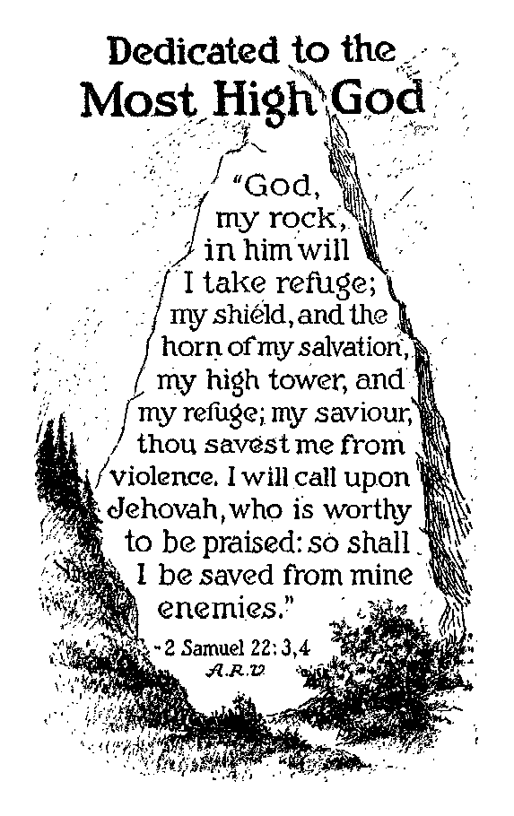[BLANK]
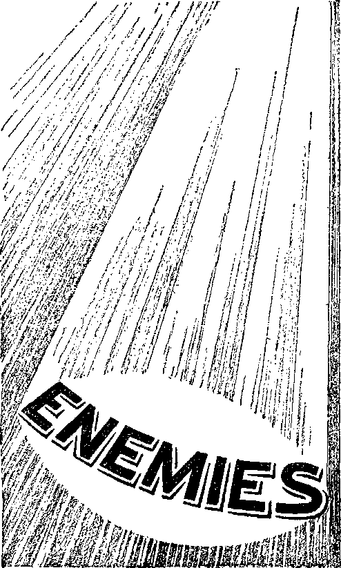[BLANK]
ENEMIES
FEAR
“And the tree of the field shall yield his fruit, and the land shall yield her increase, and they shall remain on their own soil in security, so shall they know that I am Jehovah, when I have broken the bars of their yoke, and shall deliver them out of the hand of them who have been using them as slaves.”—Ezekiel 34: 27, Rotherham.
THE PEOPLES of the nations of earth keenly feel their insecurity. The men who rule are few in number, harsh, arrogant, cruel and oppressive, while the people in general are held in slavery to fear and continuously in dread of what the future may bring. Sober-minded persons who love righteousness and desire to see justice prevail often in the hour of meditation have thoughts liko these: “There are so many calamities befalling the various nations of the earth and the peoples thereof that I am apprehensive, uneasy and fearful that some dreadful calamity will befall me and my little ones. Revolutions have rocked the nations to their very foundation, and no nation appears to be stable. All things in the earth seem to be upside down; the trees drop their immature fruit, the lands are swept by floods and dust storms, the pests destroy that which grows until the fields are barren, the
people are shoved about from one place to another until many find no dwelling place, and all persons seem to be unhappy. If only I could find a place of complete security where I could be entirely free from care, anxiety and fear, that would be an ideal state. I wish that I might know why this apprehensive and fearful condition exists throughout the earth; why it has come so generally upon the peoples and nations, and whether or not there will ever be a time and place where honest, sincere, righteous persons may feel entirely secure in their homes and without the fear of loss of their property, health and life.” The purpose of what follows is to aid sincere and honest persons to arrive at the just conclusion in the matter.
Twenty centuries ago the most righteous man that ever trod the earth, filled with the spirit of wisdom and with keen prophetic vision, in answer to a question propounded to him concerning the end of the world, gave utterance to these words: “There shall be . . . upon the earth distress of nations, with perplexity; . . . men’s hearts failing them for fear.” Those few words spoken by that Great Prophet exactly describe the condition that now exists throughout the earth. His prophetic words of wisdom, taken together with the facts we now see about us, carefully considered, enable one to learn why the present unhappy conditions exist, and lead to greater information concerning the immediate future.
Even the ruling powers of every nation fear. They fear for themselves and for the positions they hold. Every nation fears every other nation, and the effect of their insecurity has induced all nations to spend a great amount of energy and money of the peoples to prepare for war. The preparations for war in 1914 were small compared with the preparations now going forward in almost every nation on earth. It is manifest that such unusual activity is induced by fear. Each nation is fearful that some other nation will come upon them with greater force and take away what they have. It appears to be a time in which every man’s hand is against his neighbor. The few that rule employ coercive means to compel the people in general to bow to their dictates, and an unhappy condition both for the rulers and for the ruled exists. In every land the people mourn, and one is reminded of the proverb: “When the wicked beareth rule, the people mourn.”—Proverbs 29:2.
Call to mind some of the things that have come to pass since 1914 and that are recorded on the pages of history and there stand as indisputable facts. In that year, and with no apparently reasonable cause, the nations suddenly rushed into war, and for four years that followed Continental Europe was drenched with the lifeblood of millions of men who did not know just why they were fighting each other. The rulers had commanded them to go to war, and they obeyed. Suddenly, in November, 1918, the war ceased, and no ruler could assign a sound reason why the conflict had suddenly stopped. Prior to that time the nations were ruled by aristocrats and imperialistic monarchs, but which nations had a semblance of democracy. During the World War politicians and militarists, for the manifest purpose of influencing men to go to war, invented and proclaimed the slogan: “The war will make the world safe for democracy.” The people were led to hope for a more liberal rule when the war came to an end. But their hopes were soon dashed to the earth.
The war ending, ambitious men, void of conscience, seized the opportunity to promote revolutions in various countries, and then formed governments that for a time had the appearance and name of “democracies”. Rabid politicians and military gangsters became the holders of public office, and the commercial giants supported them in their positions.' Fearing that they would be unable to keep the common people in subjection and hold their own public jobs, the ruling element created conditions of strife that greatly alarmed the people, and which conditions were seized upon to set up an arbitrary government, ruled by a dictator. Such has been the result in many of the nations. For some time now human life in Russia, Italy, Austria, Germany and other like nations of Europe has been of little value. Dictators trust no one. If it appears that the power of the dictator is endangered he hesitates not to murder his closest political associates. Always in fear of losing power or life, or both, dictators move about within their realm surrounded by a strong-arm guard, a veritable wall of bristling steel. The dictators usurp all other parts of the government until the people are bound to bow to the rule of one man. The chief ambition of such is to seize power and stay in power regardless of the rights and privileges of others. Any part or branch of the government that seems to be in his way the dictator proceeds to abolish. He and his associates take away from the people the right of suffrage and of representation and destroy the courts of justice and set up instead tribunals of selfish men who are looking to selfish interests and not to the common welfare.
Instead of the great war’s making the world safe for democracy the greater part of Europe is now ruled by dictators. Stalin, who succeeded Lenin as dictator of Russia, was for some time a student at a theological seminary, being trained for the religious priesthood. He became a revolutionist and now rules Russia extravagantly, harshly and ruthlessly. Mussolini, a bricklayer and political agitator, became a political gang chieftain. He led a march on Rome in 1922 and shortly thereafter became the prime minister or arbitrary ruler: a gang leader, who bluffed himself into office because the king was afraid of him and yielded to his bluffs. Concerning him it is recorded: “He assumed the chief portfolios, brought about changes in the electoral laws that insured his continued power, established a rigorous censorship of the press, and prosecuted and drove into exile his chief opponents. He decreed the passage of laws which vitally affected the political, social and economic life of Italy.” {The Encyclopedia Americana, Volume 19, page 655) It is said of Mussolini that he trusts no one and has no real friends, and that he never forgives an enemy. Fearing to lose his control over the people, he rules in an arrogant manner and with a ruthless hand. He is suspicious of all other nations and is very superstitious. When he seized the rule of Italy he was an atheist, but has since become very religious.
The World War was quickly followed by revolution in Germany, and then a government having a semblance of a constitutional democracy was formed. Religionists and politicians conspired together to overthrow that constitutional government, and did so, with the result that one Hitler, a fanatic, became the absolute dictator and leader of the Nazis. That horde of political gangsters burned the building of the German Reichstag on February 27, 1933, and then maliciously charged an opposing political party with that crime of arson, and this was done to gain favor with the common and oppressed people. Within a few weeks thereafter the Nazis were swept into power and Hitler was put forward as the leader and became the dictator, and the democracy of Germany died. On June 30, 1934, Hitler, fearing his power and authority was in much danger of being taken from him, caused sixty or more of his close political associates to be brutally murdered. In July thereafter the Nazis, under the leadership of said Hitler, caused Dollfuss, the dictator of Austria, to be foully murdered. Fearing loss of authority, the Nazis, under Hitler, continued to rule with a cruel hand and killed or imprisoned all who did not apparently support them. The people suffer, being robbed of their material wealth, put in fear of their liberty and life, and are in great distress and perplexity.
The foregoing is a sample of the conditions existing in Continental Europe. Other nations of the world are in a similar condition and are ruled by dictators, and the rulers are moved by fear. The British Empire is the only monarchy that survived the World War, and Britain and France are the only nations of Europe now that have a semblance of democratic rule. But there is an abundance of evidence that the ruling classes of those nations greatly fear for their future existence. In Great Britain conspiracy is at work both within and outside of the nation, looking to the overthrow of the Empire, and, moved by fear, that nation, each year since the World War, has continued to increase her war preparations. Sometime in the near future it will doubtless be seen that the recent abdication of Britain’s king was not merely due to the influence of a woman, but due to a greater influence that is symbolized by a woman.
The United States emerged from the World War holding the bag, having lost a great number of men, and expended millions of the people’s money, and that without any gain or profit. Since then democracy has rapidly degenerated, and today the tendency to rule by a dictator is growing rapidly. The element that rules now has not long been in the saddle of governmental affairs, and, fearing the loss of authority that has been acquired, that ruling element seeks to concentrate the power of the nation in the executive of the government, this in utter disregard of state rights and the rights of the people, and looks forward to an early day when the whole nation may be ruled by a dictator, behind whom is a more powerful force. A bold and daring effort is now being put forth to curtail the power of the highest court in the land and make it the tool of a one-man dictator and, that being accomplished, the Constitution, which has long been a safeguard to the people, will quickly become a mere scrap of paper. For 150 years the American people have obeyed the law of the land gladly and without any question of their allegiance to the Constitution and the laws of their nation. But now the official element, that is, the few men that rule, fearing that they may not be able to keep the people in line, have adopted unusual and unreasonable methods to compel law-abiding citizens to constantly declare their allegiance to those who now rule. For 150 years it has not been thought necessary to compel the people to salute the flag and to daily declare their allegiance, because all persons are presumed to be obedient to the laws until there is evidence that they have violated the law. Quite recently, however, the governing element, and particularly those who are behind the throne, fearing that the authority and power may slip away from them, have adopted the unusual practice of compelling school children to daily salute the flag and sing so-callod "patriotic songs”, and which are supposed to make them more law-abiding. The governing element, in fear, are also greatly perplexed as to how they can hold the people in subjection and hold their own jobs. Democracy is rapidly passing from the land.
Added to all the political troubles of the world that have so greatly increased since 1918, the nations of the earth have been woefully afflicted by storms, floods, fires, earthquakes, famines, pestilences and other like calamities. Sit-down strikes and other senseless labor disturbances have greatly increased, and it is apparent that these disturbances are induced by a secret crowd that is conspiring to overthrow all rule of the people and to concentrate the rule in the hands of a dictator. The extremely radical element, which is unreasonable and cruel, such as the Nazis, grows rapidly in America, and thousands of spies are scattered amongst the people to undermine their faith and confidence in the form of government that has so long existed in this land. Added to these disturbing things, the gross crimes of kidnaping, robbery and murder are constantly on the increase and few if any of the people feel secure in their homes or their property or in their life. Both the governing element and the common people sense an approaching catastrophe and strictly in line with the prophetic words above recorded: ‘Men’s hearts failing them for fear of what seems to be approaching.’
The common people have no understanding of the constant intrigue and the political chicanery that is going on within the nations and between the nations. The selfish ruling element adopt all manner of means to keep the people from learning the inside workings of the political gang. The people see themselves being completely deprived of their freedom of thought, freedom of speech, and freedom of action, and they are in distress and perplexity concerning what the future holds for them. They are in fear and perplexity of how they can protect themselves against the criminal element that is bearing down upon them, against the poverty that surrounds them, and against the calamities that threaten them. They have great difficulty in finding anyone whom they can trust. Each year their burdens of taxation are increased. They see little hope for their children, and their hearts fail them when they consider what the future may hold. There has never been a time in the history of man in which fear has so completely seized upon the people as now.
In view of these facts, none of which can be denied, sincere persons will here consider calmly the prophetic words of that great and wise man who, looking down upon the present time, said: “There shall be . . . upon the earth distress of nations, with perplexity; . . . men's hearts failing them for fear, and for looking after those things which are coming on the earth.” (Luke 21: 25,26) There can be no doubt that the physical facts now present are completely in harmony with and therefore in fulfillment of the foregoing and prophetic words. The sincere people of the world, who think soberly and without prejudice, those who desire righteousness and peace and who desire security for themselves and their loved ones in their home, property and life, are asking questions like the following, to wit:
Why is there so much unrighteousness and wickedness in the world today? Why have these perilous times come upon the world in this day, and particularly since the ending of the World War? Why have the woes and calamities increased since the year 1918? Why does there now exist such a great lack of confidence among the nations, among both the rulers and the peoples of the nations ? Why is it that almost everyone is looked upon as an enemy? Is there a reason for the existence of such a dreadful condition? Can there be found correct answers to these questions, answers upon which we can confidently rely? Is there anything upon which we may base a hope for better conditions of the future?
The same great man who gave utterance to the foregoing prophetic words, foretelling the time of peril coming upon the nations of the earth, also gave the true and correct answer to each and every one of the foregoing questions and all questions related thereto. That great man was and is Christ Jesus, the Son of the Almighty God. He is the One who spake as never man spake before or since. He it was who said concerning the Word of the Almighty God, which is recorded in the Bible: “Thy word is truth.” (John 17:17) The full, complete and satisfying answers to the foregoing and related questions are found in the Bible, and nowhere else. Before attempt is made to locate the answers, let each reader ask himself these questions and fully answer the same to the satisfaction of his own conscience: Do I believe that the Almighty God, the Creator of heaven and earth, really exists, and that he is the Giver of life to man and the rewarder of all them that diligently seek him? Do I believe that the Bible is the Word of the Almighty God, and therefore the truth? Do I believe that Jesus Christ is the Son of Almighty God, and that he speaks the absolute truth and with authority, and upon his speech honest men may confidently rely?
All those who can answer these questions in the affirmative, who do believe on God and Christ Jesus, and that the Bible is the Word of truth, and who then, without prejudice, will carefully consider what is hereinafter written, will find complete and satisfactory answer to each of the foregoing questions concerning the time of peril, which now confronts the world, and will also see what the immediate future holds.
In the nations that claim to be “Christian nations”, and which collectively are called “Christendom”, the present-day distress and perplexity is the greatest, when viewing the whole world. The sincere people of these nations, who desire to understand the truth and to know what the future holds, will study and give heed to what is written in the Word of truth, upon which Word of truth is founded that which is herein stated. This does not at all mean that such sincere persons must join any organization under the sun. What the people need in this hour of distress is a knowledge of the truth, and then to be diligent to obey the truth. The meek of the earth are those who are willing to be taught, and such are the ones that seek to understand the truth.
Those who are anxious and sincerely desire to know the true answers to the foregoing questions will lay aside all prejudice against the Bible, and all preconceived conclusions as to what the Bible contains, and all prejudice created by religion or the religious practitioners, and will carefully and honestly consider the facts now well known to all in the light of what is recorded in the Bible, because now is the time when the Bible can be understood and harmonized. Never before in the history of man has there existed'such a great necessity of knowing and understanding God’s Word of truth as now. The indisputable facts are that the nations and the people are in great fear, which fear is induced by enemies, and therefore the people are in bondage. All such, then, should give careful heed to the words spoken by Jesus, to wit: “If ye continue in my word, then are ye my disciples [those who learn the truth] indeed; and ye shall know the truth, and the truth shall make you free.” (John 8:31,32) All honest and sincere persons desire to be free. The truth can be learned only by ascertaining the source of truth and then by following that true and safe guide. The opinion of imperfect man is of no value in learning the truth unless it is fully supported by what is known to be absolutely true as recorded in God’s Word. Tradition by men is merely the expression of opinion of man, which opinion was first expressed long ago, and has been handed down from one generation to another. The only perfect man ever on earth was Jesus, and he did not speak and teach his own opinion, but declared only the things that he had received from the Almighty God. The testimony of Jesus upon this point is this: “My doctrine is not mine, but his that sent me.” (John 7:16) “He that sent me is true; and I speak to the world those things which I have heard of him.” (John 8:26) “To this end was I born, and for this cause came I into the world, that I should bear witness unto the truth.”—John 18: 37.
A man is put in fear of his enemies chiefly because of a lack of knowledge and therefore his inability to know the identity of his enemies. It is necessary for him to identify his enemies, to learn of their methods of operation and what course he may take to protect himself against such enemies. A man, therefore, must have a sure and correct guide in identifying his enemies and finding protection from them. Where will he find such a guide? The Almighty God gives this information, which he caused his prophet to write down, to wit: “Thy word is a lamp unto my feet, and a light unto my path.” (Psalm 119:105) The meek man is the one who desires to learn (he truth and is willing to be taught, and for his benefit this great truth is recorded in the Bible. “The meek will he guide in judgment, and the meek will he teach his way.” (Psalm 25:9) The man who has great fear and therefore does not enjoy peace will find consolation in these words written in the Scriptures: “Great peace have they which love thy law; and nothing shall offend them.” •—■ Psalm 119:165.
Every man has enemies, and for centuries men have suffered greatly at the hands of enemies. Since the year 1914, and particularly since 1918, enemies have become more vicious. Those who have considered the matter know that such is the truth. The Scriptures give a satisfactory reason. It is of very vital importance to learn the source of such wickedness and the reason for the increased activity of enemies in the past few years. If you read carefully what follows herein you will gain that much desired and profitable knowledge.
ADVERSARY
“The way of the wicked seduceth them.” —Proverbs 12: 26.
ADVERSARY is one who opposes another without just cause or excuse, and is therefore an enemy. The existence of creatures implies that there is a Creator. The Creator is the immortal One, from everlasting to everlasting, and his name is God. (Psalm DO: 2; 1 Timothy 6:15,16) “God created the heaven and the earth.” (Genesis 1:1) God means the Almighty, lie reveals himself as, to wit: “Almighty God,” which means the One whose power is unlimited; “Lord,” meaning supreme Ruler; “Jehovah,” meaning his purpose toward his creatures; “Father,” meaning the Giver of life; and “Most High”, He who is over and above all.
For his pleasure God created all things. (Revelation 4: 11) The beginning of his creation was “the Logos”, his Beloved One, and thereafter God used the Logos as his active agent in the creation of all things that are created. (John 1:1-3; Proverbs 8: 22-24; Revelation 3:14; Co-lossians 1:15-17) God the Almighty is that great Spirit which no man has seen and no human eyes can ever see. (1 Timothy 6:16) He is the only Being, that is to say, the self-existing One, and is therefore properly spoken of as “The Spirit Being”.
God brought into existence many spirit creatures. A spirit creature is one that is invisible to human eyes. A spirit creature has a spirit body or organism: “There is a natural body, and there is a spiritual body.” (1 Corinthians 15:44) All of the host of heaven are spirit creatures and are invisible to human eyes. Such spirit creatures are designated under the names of “cherubim”, “seraphim,” and “angels”. Among the spirit or angelic creation was one whom God named Lucifer. The universal organization of Jehovah God from the beginning of creation consisted of his spirit creatures, and over which Jehovah God was and is Supreme Lord and Ruler.
In due time it pleased God to create the earth, and he created it for his creature man, who was thereafter created. “I have made the earth, and created man upon it: I, even my hands, have stretched out the heavens, and all their host have I commanded. For thus saith the Lord that created the heavens; God himself that formed the earth and made it; he hath established it, he created it not in vain, he formed it to be inhabited; I am the Lord, and there is none else.”—Isaiah 45:12,18.
God created man in his own due time and called his name Adam, and placed him in Eden. “And the Lord God formed man of the dust of the ground, and breathed into his nostrils the breath of life; and man became a living soul. And the Lord God took the man, and put him into the garden of Eden, to dress it and to keep it.” (Genesis 2:7,15) God created the woman and gave her to Adam for his wife. (Genesis 2:22-24) Adam and liis wife Eve were made a part of God’s organization, and the man was given dominion over the creation of earth which was of the lower order than himself. Lucifer, the spirit creature, was the overseer of man and a certain portion of the spirit creation, and was made so by God’s appointment. He was an officer in the organization of Jehovah, which organization of Jehovah God is designated under the symbol of “mountain”. Concerning Lucifer it is written in the Bible: “Thou hast been in Eden the garden of God; . . . Thou art the anointed cherub that covereth; and I have set thee so; thou wast upon the holy mountain of God; thou hast walked up and down in the midst of the stones of fire.”—Ezekiel 28:13,14.
Lucifer, when made the overlord of man, was anointed or commissioned, receiving authority from God over man, and it was his duty to see that man performed his obligation unto God according to His law. The universal organization of Jehovah God then consisted of the Logos, and all the angelic or spirit creatures, and man on the earth; and all of that organization was in harmony with and obedient to God the Creator. Everything in the universe was in complete harmony.
The Almighty God Jehovah is the Unselfish One, and therefore, as it is written, “God is love.” (1 John 4:16) That means that God does nothing selfishly, but always for the good of his creatures. God is righteous and holy. “For righteous is Jehovah, righteousness he loveth, the upright shall behold his face.” (Psalm 11:7, Rotherham') “O Jehovah! in the heavens is thy lovingkindness, thy faithfulness as far as the fleecy clouds: thy righteousness is like mighty mountains, and thy just decrees are a great resounding deep,—man and beast thou savest, 0 Jehovah! How precious thy lovingkindness, O God! therefore the sons of men under the shadow of thy wings seek refuge.” (Psalm 36: 5-7, Roth.) “Righteous art thou, O Lord, and upright are thy judgments.” (Psalm 119:137) “The Lord is righteous in all his ways, and holy in all his works.” (Psalm 145:17) “Thy righteousness is like the great mountains; thy judgments are a great deep; 0 Lord, thou preservest man and beast.” (Psalm 36: 6) “Thy righteousness is an everlasting righteousness, and thy law is the truth.” (Psalm 119:142) “God is light, and in him is no darkness at all.” (1 John 1: 5) God can not and will not look with approval upon anything that is unrighteous. Necessarily all parts of Jehovah’s organization were in harmony with him, and anything or any creature that got out of harmony with God would be expelled from his organization.
ORIGIN OF ENEMIES
Every unrighteous or wicked creature is God’s adversary or enemy. Lucifer saw that every creature in the universe gave honor and praise to the Almighty God. Lucifer coveted that honor and praise for himself. To covet means to desire and to seek that which one has no right to have. Lucifer is called the covetous one. (Jeremiah 51:13) Lucifer presumptuously regarded himself as equal to the Almighty God, and concerning that it is written: "0 Lucifer, son of the morning [that is, of the early beginning of earth’s creation, of which he had been appointed overlord]! how art thou cut down to the ground . . . ! For thou hast said in thine heart, I will ascend into heaven, I will exalt my throne above the stars of God: I will sit also upon the mount of the congregation, in the sides of the north: I will ascend above the heights of the clouds: I will be like the Most High.” (Isaiah 14:12-14) Another translation of this text reads: “How hast thou fallen from heaven, 0 Shining One, Son of the Dawn! Hewn down to the earth, 0 crusher of nations! Yet thou didst say in thy heart, The heavens will I ascend, above the stars of God will I lift up my throne, that I may sit in the Mount of Assembly, in the Recesses of the North: I will mount on the hills of the clouds, I will match the Most High!”—Rotherham.
Lucifer had meditated in his heart, that is to say, his motive was, to gain for himself the honor and praise of creatures to which he was not entitled. To accomplish his covetous design Lucifer did this: He approached the woman Eve and spoke to her deceitfully, and is likened unto the serpent, a beast that was in Eden. Any transgression of God’s law is sin, and God had fixed death as the penalty for the commission of willful sin. Adam and Eve had been so instructed by the Lord, that sin would result in their death. (Genesis 2:17; Romans 6: 23) Lucifer must have known this law of God and the penalty for its violation. It was his duty to know, but apparently he did not believe it, and that belief was due to his own improper heart condition. He should have been governed by the Word of God, but, regarding himself as equal to the Most High and considering that he could with impunity induce man to violate God’s law, he proceeded to do so. To Eve he said, in substance: “Why do you not eat this fruit in the midst of the garden of Eden?’ and Eve replied that God permitted them to eat of the fruit of any of the trees except the one fruit mentioned, and that God had said to them: “Ye shall not eat of it, neither shall ye touch it, lest ye die.”
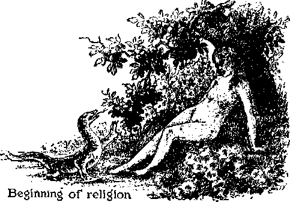Eve yielded to the seductive influence of the wily Devil and did eat and gave to Adam, and he did eat; therefore both were lawbreakers. (Genesis 3:1-6) The eating of the forbidden fruit may appear to some to have been a small thing to call forth the death penalty, but it should be remembered that the offense consisted in the violation of God’s law and in doing so after having been informed that the penalty for such violation is death. Adam was not deceived. (1 Timothy 2:14) For this violation of God’s law man was sentenced to death and expelled from Eden. (Genesis 3:19-24) Thus is stated in brief the beginning of the activity of God’s adversary or enemy.
Lucifer was sentenced to death, but for good reason Jehovah God gave him a suspended sentence, or, rather, delayed the execution of the death penalty, as will hereinafter be seen. Lucifer had now become the avowed enemy of God. Every creature from that day to the present time that has willingly taken the side of Lucifer and willfully engaged in the violation of God’s law is the enemy of God. At the time of entering his judgment against the enemy Jehovah changed the name of Lucifer and assigned to him four separate and distinct names, each of which signifies a particular element of his wickedness. Since that time Lucifer has been named by the names of Satan, which means adversary or opposer of God; Devil, which means slanderer of God, willfully bringing reproach upon God’s name; Serpent, which means deceiver; and Dragon, which means devour er; and therefore he is designated in the Scriptures as "the dragon, that old serpent, which is the Devil, and Satan”. (Revelation 20:2) He is the adversary or willful opposer of God, and therefore God’s chief enemy and the enemy of man. While Satan is the arch enemy, there are many other enemies, as will be seen in the progress of this study.
Everything with God, and that proceeds from him, is light and truth. God is the giver of life everlasting. Everything with Satan, and that proceeds from him, is darkness, and the end thereof is death. In the final analysis it will be seen that each and every creature that gets life everlasting in happiness is and must be and remain on the side of the Almighty God, and that every creature that remains on the side of Satan shall be completely destroyed.
In the consideration of all matters hereinafter discussed keep in mind this great truth, to wit: That the purpose of Satan the Devil is to reproach and mock Jehovah God, and to turn all creation against God, and to ultimately plunge all the creation into destruction. Should he be able to do this, he would regard himself as Hie victor; and that is his ambition. Satan the Devil is the great wicked one, and all who are with him and who continue with him are wicked; and the decree of the Almighty Creator is that all the wicked shall be destroyed: “The Lord preserveth all them that love him: but all the wicked will he destroy.” (Psalm 145:20) This truth coming to the attention of each and every creature, a choice must be made between the Almighty God and Satan, and thus each creature has to do with his own destiny.
From the very beginning of his wicked course it appears that Satan’s purpose was and is to kill all who are on the side of God, the Almighty. Adam and his wife, by authority from Jehovah, began to have children, and their first son was named Cain; and then they had a son whom they named Abel. Cain yielded to the influence of the Devil and murdered his brother Abel. (Genesis 4:1-8) Satan the enemy of God told the first lie, which brought about the death of Adam and Eve; and from the very beginning he was a liar and a murderer, and it is so recorded of him in the Bible. (John 8:44) Every murder that has ever been committed has been and is due to the wicked influence and power exercised by Satan over other creatures, and every murderer is the agent or instrument of Satan the Devil; and it is written that no murderer shall ever gain eternal life. -1 John 3:15.
Lucifer, now known as Satan, is otherwise properly called the great rebel. God appointed him to the high office in His organization and gave him authority over certain angels as he has authority over man. It was the bounden duty of Satan to be entirely loyal and faithful to God and to exercise the authority of his office toward angels and men in harmony with God’s law. Addressing the Devil, Jehovah said: “Thou art the anointed cherub that covereth; and I have set thee so: thou wast upon the holy mountain [universal organization] of God.” (Ezekiel 28:14) Anointed means that he was appointed and duly commissioned by the Almighty God to fill that very important position in God’s organization. Cherub means one who is assigned to a position of trust to guard the interests committed to his care. (Genesis 3:24) Therefore that Lucifer was called the “cherub that covereth” means that he was over other creatures whose interests he must safeguard in harmony with God’s law. He willfully put himself in opposition to God’s law and thereafter became a rebel and the permanent adversary of God. One of his methods of deception is to induce certain creatures to conclude that the Devil does not exist. By this means he deceives them and blinds them to the truth, while others of his creatures work with him knowingly and willingly.
INSTRUMENTS EMPLOYED
Every creature and organization that Satan has employed and continues to employ to carry on his rebellious and wicked work is the enemy
of God and the enemy of all creatures who obey and serve God. The proof following set forth herein shows beyond all doubt that Satan the Devil is the chief enemy of man and that all creatures, instruments or organizations employed by him are man’s enemies. The purpose of this publication is to enable honest and sincere persons to see and appreciate who are their enemies, that such enemies may be avoided and that honest and sincere persons may find the only place of real security.
To carry forward his wicked work Satan employs and uses wicked angels, and wicked men, formed into organizations, that work unrighteousness. Satan is a spirit creature, therefore invisible to human eyes; and also angels are spirit creatures and invisible to human eyes. Wicked angels and wicked men, organized and unorganized, carry on wickedness under Satan’s command. The earthly or visible primary elements that are employed by Satan to carry forward his fraudulent, deceptive and wicked work, are these, to wit: religion and politics and commerce. Religious, political and commercial organizations for centuries have been employed by Satan the Devil to defame and reproach the name of Almighty God and his beloved Son, Christ Jesus, and to deceive the people and to rob them and to turn them into the way of unrighteousness and destruction. Keep in mind, as the evidence here considered unfolds, the elements named as enemies of God and man, and you being thus able to identify them, there will appear the way of safety and security.
ANGELS
“The world” is the organization of creatures under the control of an overlord. As that term world relates to man, “the world” is the organization of men into tribes or governments operating under the influence and controlling power of an invisible overlord. Satan the Devil is the “god”, mighty one or controlling power of the present-day wicked world, and his angels operate with him. (2 Corinthians 4:4) He having been appointed as overlord of man before his rebellion, God did not take away that overlordship when he sentenced Satan to death; and the reason therefore will appear as we progress.
At the time God pronounced judgment against Adam he used these words concerning the Devil: “And I will put enmity between thee and the woman, and between thy seed and her seed; it shall bruise thy head, and thou shalt bruise his heel.” (Genesis 3:15) These words have both a literal and a symbolic application. The word “woman”, as used in this text, symbolically refers to God’s organization; and the words ‘flier seed” symbolically refer to those creatures who devote themselves wholly to God and become a part of his holy, righteous organization. “The serpent,” meaning deceiver, and one of the names of Satan the Devil, is here used symbolically, and his “seed” means, in symbolic phrase, all the creatures that become a part of Satan’s organization. Every creature in the universe must become either a part of the organization of God or a part of the organization under the control of Satan. Satan and his seed are the enemies of God and the enemies of the seed of God’s organization. Between the two there is bitter enmity, and in due time one must triumph. Every sincere creature should desire to know in advance how this triumph will be brought about.
Lucifer, now called Satan, originally was a beautiful creature. He concluded that he was worthy of adoration of other creatures, and by reason thereof he departed from the course of wisdom, and by taking that unwise course he corrupted himself; and to him the Almighty God says: "Thine heart was lifted up because of thy beauty; thou hast corrupted thy wisdom by reason of thy brightness; I will cast thee to the ground, I will lay thee before kings, that they may behold thee.”—Ezekiel 28:17.
From that time until now a great number of wicked angels have operated with Satan, and they are all included in God’s judgment which is written against them. (Matthew 25:41) Satan’s chief deputy in his wicked organization is called “Gog”, and the place of habitation of the crowd of wicked angels is “the land of Magog”. (Ezekiel 38:2-6) All of such wicked angelic host are enemies of Almighty God, and the enemies of every creature that serves God. When on earth, Jesus testified before men and said that Satan is the prince of devils, the invisible ruler of this wicked world. (John 14: 30) Satan is also called "Beelzebub”, which means chief of devils or wicked spirit creatures, and it therefore follows that there are many other devils or wicked ones who slander the Almighty God, deceive mankind and attempt to destroy all who serve God. (Matthew 10:25; 12:24; Luke 11:15,18,19) All of those wicked ones are creatures of darkness, that is to say, wickedness, and they are the most effective enemies against those who serve the Almighty God, and that fight against God’s servants; as it is written, to wit: “For we wrestle not against flesh and hlood, but against principalities, against powers, against the rulers of the darkness of this world, against spiritual wickedness in high places.” (Ephesians 6:12) The entire organization of Satan is arrayed against all righteousness, but in the end all are doomed to certain destruction. The reason why God has permitted their existence for so long a time will clearly appear to your satisfaction as this study progresses.
It is certain that in times past angels had the power to materialize, that is to say, to appear in human form or organism. That was true of the good angels, some of whom appeared to Abraham and others. (Genesis 18:1-15; 19: 1,15) Angels of the Lord appeared to other men who served Almighty God. (Judges 2:1; 6:1216; 13:1-20) Those good and faithful angels were sent by the Almighty God to communicate his message to men on the earth. The wicked angels that operated from the time of the rebellion of Satan also had power to materialize, and they did so. Those wicked angels operated contrary to God’s will, because they were against God and on the side of the Devil. They appeared in the earth as giants, and in the Scriptures they are called “nephilim”. Those angels are also called “fallen ones” or “fallen angels” because they had fallen entirely away from righteousness and operated entirely in wickedness or iniquity. (Psalm 36:12) For the same reason it is written concerning Satan: “How hast thou fallen!” (Isaiah 14:12, Roth.) For many long centuries that host of wicked angels have indulged in assaults upon others, and for that reason are called “fellers”, that is to say, ones who fall upon and ill-treat others. The word nephilim means “fellers”, that is, “those who fall upon others and cause them to fall.” (Strong's Concordance) To be sure, Gog is one of those fallen ones. That wicked host, under Satan’s supervision, are totally depraved and completely devoid of righteousness.
From the time of the expulsion of Adam from Eden and over a period of approximately 1500 years the human race multiplied and increased in the earth. All being the immediate descendants of Adam, who in the beginning was perfect, the females thereof would necessarily be very fair; and so it is written, that they were fair, that is, they were pleasing to look upon. “And it came to pass, when men began to multiply on the face of the earth, and daughters were bom unto them, that the sons of God saw the daughters of men that they were fair; and they took them wives of all which they chose.”—Genesis 6:1,2.
Who were those creatures mentioned in this text as “the sons of God”? Manifestly they were creatures of God, whom he created angels, and who had power to materialize and did materialize and appear in human form. All the faithful angels are called “sons of God”, because all such receive life through the Almighty God. (Job 38:7) Those sons of God who thus materialized were not a part of Satan’s crowd at that time, because they were not the ones who joined Satan in Iris rebellion.
Bear in mind that, Satan being the adversary of God, his objective at all times is to turn all creatures, both men and angels, against God and cause them to curse God and bring reproach upon his name. (Job 2:1-5) The wicked angels work with Satan and are also deceivers. Fraud and deceit, used to entrap Eve, have ever been used to entrap others; and so his crowd of wicked angels resorted to fraud and deceit to mislead the angels above designated “the sons of God”. The opportunity now appeared for Satan to entrap those sons of God who materialized and appeared as men. It is entirely probable that Satan began to work his fraud before those sons of God appeared in human form. As above stated, “the sons of God saw the daughters of men that they were fair,” that is, pleasing to the vision, yet they were imperfect. As Satan had used Eve to entrap Adam, so Satan pursued a similar course to use other women to deceive and defraud the “sons of God” above mentioned. Those materialized “sons of God”, having themselves followed a righteous course up to that time, manifestly appeared as very handsome and attractive men and they would appear well in the eyes of these beautiful women. Satan, Gog and others of his wicked crowd, assuming a righteous attitude although extremely hypocritical, now represented and made the argument to the handsome men that they could do a great and good deed by marrying those beautiful human creatures and producing a race of handsome men and women that might grow to perfection. The nephilim or giants, working with Satan, would use a similar argument upon those “daughters” or beautiful women, and induce them to be willing to the union.
Another purpose of Satan and his allies in practicing that fraud would be to cause to be born and brought up a race of creatures that would appear superior to the natural descendants of Adam, and that of itself would be a further mockery and reproach upon Almighty God. That the nephilim or giants were present in the earth at the time is certain, when the marriages took place between the sons of God and those women: “There were giants in the earth in those days; and also after that, when the sons of God came in unto the daughters of men, and they bare children to them, the same became mighty men, which were of old, men of renown.”—Genesis 6:4.
Here the scripture discloses the clear picture, to wit: Beautiful women were on the earth, who were the direct descendants of Adam; Satan saw his opportunity to practice a further fraud and deceit, and to further reproach the name of Almighty G od; he seduced the “sons of God”, that is, turned them away from the path of righteousness, and by fraud and deceit induced them to believe that they could do great good to the human race by marrying those beautiful women. Satan and his coconspirators, the neph-ilim or giants, probably found it an easy matter to induce those handsome men to marry the beautiful women, and the result of those marriages was, children were born, which became "mighty men”, "men of renown” for physical strength and appearance.
Up to that time, to wit, approximately 1500 years after the expulsion from Eden, there appear to have been only three men who had remained true and faithful to the Almighty God, and those men were, to wit, Abel, Enoch and Noah. (Hebrews 11:4-7) Adam, Cain, and others who were their descendants, were wicked men, and the result of the marriage of materialized spirit creatures with the women above mentioned was that all the offspring became wicked and reproached the name of God. It appeared, therefore, that Satan and his crowd were succeeding in turning men away from God. Only three men on the side of God and all others on the side of the Devil, it was a wicked and grossly rebellious generation and their every imagination was wickedness. Why should the Almighty God permit that wicked crowd to continue on earth? “And God saw that the wickedness of man was great in the earth, and that every imagination of the thoughts of his heart was only evil continually.”—Genesis 6:5.
Jehovah God is that great Spirit, and the creatures on the earth are flesh and, as it is written, “all flesh is grass.” (Isaiah 31:3; 40: 6) Creatures are wholly dependent upon God for life, and only those who remain in harmony with God will ever have life everlasting. “The grass withereth, the flower fadeth; because the spirit of the Lord bloweth upon it: surely the people is grass. The grass withereth, the flower fadeth; but the word of our God shall stand for ever.”—Isaiah 40:7, 8.
The generation then upon the earth, aside from the three men above named, were fit only for destruction. Therefore God said of that wicked generation: “And the Lord said, My spirit shall not always strive with man, for that he also is flesh: yet his days shall be an hundred and twenty years.”—Genesis 6: 3.
Why should God, the great Spirit, the holy, righteous One, continue to strive with man and permit him to reproach His holy name? He could instantly blot man out completely and start another race, but God declared his purpose to delay the execution of the wicked crowd that then inhabited the earth, for a period of 120 years. That wickedness on the earth grieved Jehovah God in his heart, and it is written: “And it repented the Lord that he had made man on the earth, and it grieved him at his heart.” (Genesis 6:6) The word “repented” there used does not mean that God had made a great mistake. The word repent means a change in the course of his dealing with his creatures. God therefore determined that he would ‘ease himself of his adversaries’ by destroying them. (Isaiah 1: 24) His announced purpose was, however, to delay the execution of that judgment for 120 years. “And the Lord said, I will destroy man, whom I have created, from the face of the earth; both man, and beast, and the creeping thing, and the fowls of the air; for it repenteth me that I have made them. But Noah found grace in the eyes of the Lord.” (Genesis 6: 7, 8) The word “created” employed in this text and the word “destroyed” are in complete contrast with each other and disclose the meaning of the words “it repenteth me”. God the Creator had extended his loving-kindness to his creatures and had been long-suffering with them, and now he would destroy them because of their wickedness.
In the foregoing text (Genesis 6:3) “an hundred and twenty years” are mentioned. But that period of time has no reference to the age limit of man thereafter. It appears from the record of God that the declaration concerning the 120 years was before the three sons of Noah, to wit, Shem, Ham and Japheth, were born, and that Noah lived on the earth for more than 400 years after that declaration was made. “And Noah lived after the flood three hundred and fifty years. And all the days of Noah were nine hundred and fifty years: and he died.” (Genesis 9:28,29) What was the purpose in extending the time of destruction for 120 years longer instead of destroying the peoples of earth at that time? Within that 120 years Jehovah God caused to be delivered a witness to the peoples of earth, giving them full warning of his purpose to destroy the wicked. God never takes snap judgment of anyone, but gives full and fair notice of his purpose. His righteous servant Noah, by the course of action which he took and by his verbal preaching within the hearing of the people, gave warning to all of God’s purpose to destroy the living creatures of earth, all of which had turned to wickedness. (1 Peter 3:20; 2 Peter 2:5) What Jehovah God here did foreshadowed another great event, which is now in course of fulfillment.
God informed Noah of his purpose to destroy the earth, and directed Noah to build an ark wherein Noah and his family and certain beasts should be taken, saved and carried over the flood. “The earth also was corrupt before God, and the earth was filled with violence. And God looked upon the earth, and, behold, it was corrupt; for all flesh had corrupted his way upon the earth. And God said unto Noah, The end of all flesh is come before me; for the earth is filled with violence through them: and, behold, I will destroy them with the earth. Make thee an ark of gopher wood: rooms shalt thou make in the ark, and shalt pitch it within and without with pitch.”—Genesis 6:11-14.
Within that period of 120 years Noah built the ark and, while so doing, continued to give warning to the people of the coming execution of the judgment of Jehovah God, but the people gave no heed to that warning. Under the supervision of the wicked one they continued to reproach God’s name. The act of Noah in building the ark was a testimony to the men on the earth and a complete testimony of Noah’s faith in God, and hence his course of action was a condemnation of all wickedness. “By faith Noah, being warned of God concerning things not seen as yet [such things as rain, waterspouts, great storms, floods; and which things came with the deluge], moyed with godly fear, prepared an ark to the saving of his house; through which he condemned the world, and became heir of the righteousness which is according to faith.’-Hebrews 11:7, American Revised Version.
Of course, the action taken by Noah, as well as his words, would be a witness to men and to angels, and thus he preached to both, even as the true followers of Christ have since done. (1 Corinthians 4:9) In addition to giving full and fair warning to those flesh creatures then on earth the Almighty God was making a prophetic picture showing the destruction of the entire organization of Satan, that is, all His enemies, at the end of the world, and this is shown by the words of Jesus Christ, who said: “But as the days of No'e were, so shall also the coming of the Son of man be. For as in the days that were before the flood, they were eating and drinking, marrying and giving in marriage, until the day that No'e entered into the ark, and knew not, until the flood came, and took them all away; so shall also the coming of the Son of man be.”—Matthew 24: 37-39.
As Noah gave warning at the command of God, so also the Lord God commands his faithful ones on the earth, at the second coming of Christ, to give full warning by preaching 'this gospel of his kingdom’ as a witness to the world, and to do this just preceding the time of the complete destruction of the world at Armageddon.—Matthew 24:14, 21.
WHO PERISHED?
The judgments of Jehovah God are always executed as written. Note that his judgment written concerning the wickedness in the days of Noah says this: “And God saw that the wickedness of man was great in the earth, . . . And the Lord said, I will destroy man . . . The end of all flesh is come.” “Both man, and beast, . . . and, behold, I will destroy them.” (Genesis 6:5,7,13) All flesh creatures upon the earth, except Abel, Enoch and Noah, at the time this judgment was written, had brought reproach upon God’s name. The offspring of the daughters of men and the materialized sons of God were flesh, all of which were an abomination to God and grossly wicked. The men of that union between the daughters above mentioned and “the sons of God” were called “mighty men” (Hebrew: Gibbor, that is, “powerful”), “men of renown.” They were mighty or powerful before other human creatures, but not before Almighty God. Before him they were an abomination. The judgment of God was against them, and they were destroyed in the flood. There would be no reason why they should be kept alive; because it is written: “The wicked shall perish.” (Psalm 37:20) The mighty flood of waters came, and concerning the result thereof it is written: “And all flesh died that moved upon the earth, both of fowl, and of cattle, and of beast, and of every creeping thing that creepeth upon the earth, and every man. And every living substance was destroyed which was upon the face of the ground, both man, and cattle, and the creeping things, and the fowl of the heaven; and they were destroyed from the earth: and Noah only remained alive, and they that were with him in the ark.”—Genesis 7: 21, 23.
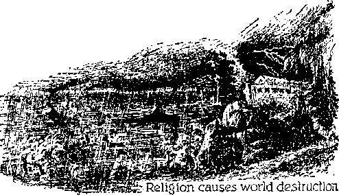What became of the “sons of God” that materialized as men and then married women? Those angels called “sons of God” were originally a part of God’s organization, and it was their duty to be faithful to God and serve him continuously. They yielded to the wiles or influence of the Devil and his associates in wickedness. They permitted themselves to be led into a course entirely out of harmony with the Almighty God. They were therefore no longer shielded nor had God’s protection, but became subject to what the Devil might do to them. This rule is clearly shown by the record appearing in God’s Word.-Hosea 11:8; Jeremiah 12:7; Isaiah 47:6.
What, then, did the Devil do with those sons of God, if anything? The Scriptures show that those spirit creatures were imprisoned. Where were they imprisoned, and who imprisoned them? Manifestly Satan and his bullies, the nephilim, imprisoned them, and their place of imprisonment is somewhere in Magog. Later Jesus preached to those imprisoned spirits concerning God’s purpose; as it is written: “By which also he went and preached unto the spirits in prison; which sometime [aforetime (Revised Version)] were disobedient, when once the long-suffering of God waited in the days of Noah, while the ark was a preparing, wherein few, that is, eight souls, were saved by water.” —1 Peter 3:19,20.
Those creatures were not destroyed in the flood; for the reason that they were not included in the judgment concerning all flesh, and long after the flood Jesus preached to them. During the 120 years aforementioned Noah, the “preacher of righteousness”, had preached to them and they had not heeded his preaching, and for that reason they remained under the power and influence of the Devil and, when the flood broke upon the earth, they found no protection given to them by the Lord God, and the Devil imprisoned them in the expectation of keeping them always away from God. They had heard the preaching of Noah; and the fact that he preached to them and that Jesus later preached to them shows that there is a possibility of their receiving forgiveness and returning to God’s favor, and Satan would imprison them in order to prevent them from returning to God; and it appears that their imprisonment is in the land of Magog. (Ezekiel 38: 2; 39: 6) Satan and his bullies would hold those creatures in restraint so they could not again present themselves unto God. The record shows that thereafter Satan presented himself before the Lord God, but his angels did not appear. “Again there was a day when the sons of God came to present themselves before the Lord, and Satan came also among them to present himself before the Lord.”—Job 2:1.
Since one of the purposes of preaching the truth is to afford creatures an opportunity to repent and come into harmony with God, the fact that Jesus preached to those spirits in prison supports the conclusion that there may be an opportunity for them to be recovered and come back into harmony with God. Being held in prison by Satan would not necessarily mean that they are The seed of Satan’, but that those who repent and reform according to God’s law might be thus saved. That would mean that in due time they would have to take a positive and determined stand against Satan and Gog and all the wicked crowd and declare themselves wholly on God’s side. (For a fuller statement of this matter, and as to how Jesus preached to them, see the small book entitled Angels.)
WILLFULLY WICKED ANGELS
What became of the nephilim or giants, the willfully wicked angels that appeared on earth prior to the flood, and where are they now? The Scriptures, when carefully examined, give answer to this question. Those wicked angels joined Satan in his rebellion and materialized prior to the flood as giants in the earth. They were not included in the judgment of God concerning those who should be destroyed in the flood; for the reason, they had, together with Satan, been previously sentenced to death, and their execution deferred to a later date, as will be seen as progress is made in this study. The judgment of complete destruction was long ago entered against Satan and those other willfully wicked ones, and states that, when it is executed against Satan, “never shalt thou be any more.” (Ezekiel 28:19) Those angels are spirit creatures that willingly joined Satan in the rebellion, are likewise maliciously wicked, and are hold there for everlasting destruction, together with Satan. (Matthew 25:41) At that time all the wicked shall perish. (Psalm 37: 20) Concerning those wicked angels it is written: ‘Whose judgment of old [now from of old (AJR.7.)] does not linger, and their destruction does not slumber.” (2 Peter 2:3, Emphatic Diaglott) The apostle who wrote those words directs his speech to the time of the end of the world; and now that time has come, and for that reason the judgment of those willfully wicked angels does not linger, but will be executed at Armageddon, which is in the near future.
Furthermore, it is written concerning those willfully wicked angels: “For if God spared not the angels that sinned, but cast them down to hell, and delivered them into chains of darkness, to be reserved unto judgment.” (2 Peter 2:4) According to another translator of this text it reads: “For if God did not spare the angels who sinned, but having confined them in Tartarus with chains of thick darkness, delivered them over into custody for judgment.” (2 Peter 2:4, Diaglott) The record shows that those angels were sentenced to death long before the flood. The word “hell”, in this text, is from the Greek tartarus, and that word means or signifies great debasement of degradation. It is the same debasement to which Lucifer was reduced when he became the Devil. Those wicked angels were a part of Satan’s original organization when he was Lucifer, and they joined him in his rebellion. “Chains of darkness” does not mean literally iron chains, but means that which restrains them in darkness concerning the understanding of Jehovah and his purpose and for ever excludes them from his favor, which favor is light, and the contrary of which is thick darkness. It is written that in the light of God there is life; and therefore the "chains of darkness” is the very opposite and would mean complete death or destruction. Those angels before the rebellion were a part of God’s universal organization, and when they joined the rebellion they cut themselves off for ever from his favor. Such clearly appears to be God’s righteous rule concerning all who give themselves over to the Devil in wickedness. The Lord declares that he will gather out the workers of lawlessness and cast them “into outer darkness”.—Matthew 25:30.
Satan is the chief of devils, and that means that there are many other devils; and they all are designated in the Scriptures under these terms, to wit: “principalities,” “powers,” “rulers of the darkness,” 'a host of wicked ones in unseen places.’ (Ephesians 6:12, margin) All of such are enemies of God and are all the enemies of those who serve the Almighty God.
Those wicked angels are alive and continue to carry on their devilish work within their restrained realm, and particularly among those who know not and who do not serve the Almighty God. The original estate or place of habitation of such was God’s organization with Lucifer, and when they, together with Lucifer, rebelled against God, they were degraded, which degradation is called “chains of darkness”. “And the angels which kept not their first estate, but left their own habitation, he hath reserved in everlasting chains, under darkness, unto the judgment of the great day.” (Jude 6) This is in harmony with the following scripture: “The Lord knoweth how to deliver the godly out of temptations, and to reserve the unjust unto the day of judgment to be punished.”—2 Peter 2: 9,
The great day of judgment is the period of time within which Christ Jesus, the Executive Officer of Jehovah, executes judgment, and which will be considered in another chapter of this book. The “chains” have no reference to literal chains, but do mean that those who are thus restrained are removed from God’s light and favor and are in the darkness concerning his purpose, except that they know that they are judged for destruction; but doubtless the Devil tries to convince them otherwise. When Jesus was on the earth, and when he found those wicked spirit creatures afflicting men, he rebuked them, and they cried out: “What have we to do with thee, Jesus, thou Son of God? art thou come hither to torment us before [our] time?”—Matthew 8:29; Luke 4:34.
ACTIVITY
The Devil and his angels have been active from the time of the rebellion at Eden until now, and will continue active until their destruction at Armageddon. As Satan “that old Serpent” is the arch deceiver, also all his wicked angels are deceivers, and the undisputed evidence shows that they continue to deceive men. They operate by gaining control of the mind of man and thereby compel or lead man to commit wrongful acts. When one undertakes to serve Almighty God and thereafter becomes unfaithful, he is easily a victim for those wicked spirit creatures. A striking example is that recorded concerning Saul, who was selected as the first king of Israel. The Israelites asked to have a king, and God yielded to their demands and permitted them to have Saul. The Almighty God gave a specific command to Sani that he must perform a certain duty, and Saul, although attempting it, deliberately failed, and because thereof he fell into the snare of the Devil and his wicked angels. It is written in God’s Word: “The fear of man bringeth a snare: but whoso putteth his trust in the Lord shall be safe.” —Proverbs 29: 25.
When Saul the king was confronted by God’s faithful prophet Samuel, Saul said: “I have transgressed the commandment of the Lord,... because I feared the people, and obeyed their voice.” (1 Samuel 15:24) Such is the unbreakable rule with men who fear other men; and for that reason they disobey God and fall into Satan’s snare. The Lord God withdrew his favor and protection from Saul; then the Devil and his angels got complete control of Saul’s mind and caused him to make numerous attempts thereafter to commit murder. Saul then sought out the witch of Endor, a medium through whom the wicked spirits communicated with human creatures, and Saul consulted that wicked one. “Then said Saul unto his servants, Seek me a woman that hath a familiar spirit, that I may go to her, and inquire of her. And his servants said to him, Behold, there is a woman that hath a familiar spirit at En-dor.” (1 Samuel 28:7) This is proof that witches and familiar spirits were and are enemies of God and man and that they gain control of the mind of man and turn men away from God. On that occasion the wicked spirit further deceived Saul by inducing him to believe that Samuel, who had lived previous to that time and died, was still alive. Samuel, being dead, could not communicate with anyone alive, but the wicked spirits induced Saul so to believe. (Ecclesiastes 9: 5,10) In due time Saul died the enemy of God because he had feared man and had become unfaithful to God and fallen away entirely to the Devil. (1 Samuel 28: 7-20; 31: 4, 5) Witchcraft has been practiced from the time of Saul even to the present day.
WITCHCRAFT
Witches are those creatures who yield themselves as instruments for use by the Devil and his angels and permit themselves to be employed as mediums for communication between wicked spirits and men on the earth. Witchcraft is of the Devil and is the fruit of rebellion. Satan the rebel invented witchcraft, and he and his wicked spiritual allies employ and practice witchcraft to deceive human creatures. When Saul had disobeyed God, the prophet of the Lord said to Saul: “For rebellion is as the sin of witchcraft, and stubbornness is as iniquity and idolatry. Because thou hast rejected the word of the Lord, he hath also rejected thee from being king.” —1 Samuel 15: 23.
Saul had followed Satan’s course and had rebelled against God’s commandment and committed the sin of witchcraft. Furthermore, God’s law expressly prohibited the practice of witchcraft because it is of the Devil: “Thou shalt not suffer a witch to live.” (Exodus 22:18) “There shall not be found among you any one that mak-eth his son or his daughter to pass through the fire, or that useth divination, or an observer of times, or an enchanter, or a witch.”—Deuteronomy 18:10.
The Devil and his associate wicked angels fraudulently induce men to believe that the dead are not dead at all, but alive. Such was Satan’s first lie when he said to Eve, ‘There is no such thing as death.’ For this reason Jesus said of Satan the Devil: Tie is a liar and the father of lies’; that is, the one who originates lies. (John 8:44) Practically all religious organizations in the earth teach that the dead are alive; and that shows that such organizations have fallen under the Devil’s deception. God has specifically declared in his Word: “For the living know that they shall die; but the dead know not any thing, neither have they any more a reward, for the memory of them is forgotten. Whatsoever thy hand findeth to do, do it with thy might; for there is no work, nor device, nor knowledge, nor wisdom, in the grave, whither thou goest.” (Ecclesiastes 9:5,10) “The dead praise not the Lord, neither any that go down into silence.”—Psalm 115:17.
In the face of this and many corroborating scriptures (Psalms 6:5; 146:4; Isaiah 53:12; Ezekiel 18:4, 20) many a religious organization insists that the dead are alive in “purgatory” or in hell or somewhere else, and they base their “proof” upon Satan’s lie and upon the fact that they claim to be able to communicate with the dead by signs, by rappings and by hearing of voices. Such persons go to a spirit medium and have what is called a “seance”, and have the medium to get into communication, as they suppose, with their dead friends, who the medium claims are alive. Such deceived persons hear voices which purport to come from those who have died, but in fact the voices that are heard are the voices of wicked spirits who joined Satan originally in his rebellion and who are the degraded ones in darkness, and who continue to practice fraud upon unsuspecting persons that do not trust in Jehovah God; and they continue to reproach God’s name by keeping alive Satan’s lie, to wit, ‘There is no death.’
It is an absolute fact, not subject to disputation, that none of the wicked angels can communicate with any man who is wholly devoted to God and who continues faithful unto the Lord God. That of itself is proof that all supposed communication with the dead is the operation of the enemies of God and man for the purpose of deceiving man and reproaching God’s name. The purpose of those enemies is to turn men away from God by inducing them to believe the Devil’s lie and the associated lies of “purgatory” and eternal torment, which are built solely upon Satan’s lie. It is apparent, therefore, that the religious organizations that teach the doctrines of purgatory and eternal torture, and that the dead are alive, are operating under the powerful and deceptive influence of the Devil and his wicked angels.
The practice of witchcraft has been carried on for ages and is practiced to this very day. In the sixteenth and seventeenth centuries a great wave of witchcraft swept over Europe and America. Many persons were tormented by the witches, who represented and acted for the wicked spirits, and particularly in England and Scotland there were many hideous scenes of witch torture and extermination. {The Encyclopedia Americana, Volume 29, page 431) In the early days of the American colonies strenuous laws were enacted against the practice of witchcraft. Every American familiar with history knows of the Salem (Massachusetts) witchcraft. The witches, under the influence and control of the Devil and the wicked angels aforementioned, claimed that they were able to ride through thin air on broomsticks, on pokers or on animals, which, of course, is a physical impossibility. Deluded persons yielded themselves to the Devil and his angels and convinced themselves, no doubt, that they could do such things.
As another striking example, in this very year (1937) in Russia there have been a number of men tried, convicted and executed for the crime of treason after having confessed to the commission of crime and the performance of acts of which they could not possibly have been guilty. Those men came into court and pleaded guilty, knowing that their punishment would be death. They recited before the court acts performed by them in accomplishing the alleged crime that they could not under any circumstances have performed. They claimed to have traveled, for instance, from Moscow to Oslo, Norway, by airplanes, the number and description of which they gave, and which airplanes never were in existence. The confession and testimony of those men, and their pleas of guilt and their execution upon their own statements, have greatly mystified people all over the world, and the public press and radio speakers have repeatedly been asked to state the reason therefor, and all have failed to state the reason because they have either deliberately ignored or are totally ignorant of the Word of God. Those men of Russia, who thus pleaded guilty and were executed, were, without a question of doubt, victims who had fallen under the control of the wicked angels, and had pursued a course similar to that followed by King Saul when he fell under the wicked one’s influence. Those wicked angels injected into the minds of those poor men the delusion that they were guilty, and induced them to confess crimes of which they were entirely innocent.
Another instance of the operation of those wicked spirits is this, to wit: On the night of February 27, 1933, the building of the German Reichstag was burned, and that could open the way for Hitler and his crowd to gain complete control of Germany, which they gained immediately thereafter. That crime of arson brought about exactly what the Nazis desired. The Nazis themselves burned the building and then laid the crime at the door of political foes, many of whom were arrested. A Hollander named Van dor Lubbe, described by the press as a half-wit, was arrested, together with several Communists, and charged with the crime of burning the Reichstag. John Gunther, an American journalist, was present at and reported the trial of this man. In his hook Inside Europe are published the facts, and from which the following is quoted, to wit:
“Van der Lubbe, a typical enough unfortunate by-product of modern civilization, was not only weak-minded; he had a deep grievance against society and authority, which his feeble brain sought to remedy by pyromania. He was a genuine arsonist. A homeless vagrant, wandering in the Berlin slums, he set several fires, and in his thick manner boasted about them. And Nazis heard him. The further facts revealed are that the Nazis had arranged for Van der Lubbe to be in the building with fire material so that they could make him appear as the guilty one. The fire that destroyed the building was the chemical fire set by the Nazis, who carried their material through the Goering tunnel, and timed it to go off at just that moment Van der Lubbe thought he set the fire. Lubbe retreated from the building in proud triumph and was arrested by the police, and that was what the Nazis had planned. Lubbe was an obvious victim of maniacal depressive psychosis.” Furthermore the authority above cited says: “The court was terrified every time Lubbe opened his mouth.” Lubbe was put on the witness stand and admitted that he fired the building. He confessed to physical facts impossible for him to have committed. “He was proud of his fire. He resented it deeply when anyone was put forward to share the credit of it.” The public has been mystified about that fire since. What is the real explanation? Without any question of doubt Van der Lubbe was the victim of the wicked spirits described aforesaid, which wicked spirits had gained control of his mind and made him believe that he was the one who burned the building. Those wicked spirits produce insanity in anyone who yields to their influence.
There are numerous other instances of the operation of these wicked spirits in fheir attempt to seize control of the minds of men and plunge them into a desperate condition leading to destruction. Recently there has come an affliction upon the laboring element of the nations, and which is expressed in what is called “sitdown strikes”. Such has been a mystery to many persons, and is yet. The fact is that the same devilish crowd that operated the Nazis in Germany and conspired to have a weak-minded man to confess to their crime likewise is operating upon the minds of men to produce a situation mystifying to the people and in an endeavor to bring about a destruction of the nations and the people.
From the time of the flood until now the Devil and his associated wicked spirits have been actively exercising power over men and nations. Just now, in the year 1937, that crowd of wicked spirits have gained a greater control over rulers and the people of the various nations than at any other time since the flood, and this will appear from the undisputed and unimpeachable evidence as the examination of the facts concerning the enemies progresses. Without any question of doubt the dictators in the various nations of the world today are under the influence of those wicked spirits. The object or purpose of those wicked ones is to carry out the Devil’s purpose from the beginning, which is to try to defame or reproach the name of Almighty God, and to turn the people away from Almighty God and to plunge them into destruction. To appreciate the great crisis in the affairs of the nations, which is now upon all the nations, it is necessary to consider the evidence of the activity of those wicked spirits from the time of the flood to the present time, and particularly as the same relates to the governing powers of the nations of the earth. As this evidence is examined the reason for the present-day perils will readily appear to all sincere, unprejudiced and honest persons.
CHAPTER III
RELIGION
“The way of the wicked is an abomination unto the Lord.” —Proverbs 15: 9.
THE ALMIGHTY GOD brought the first world to an end by the great deluge, which destroyed all flesh upon the earth, including the offspring of the union of the “sons of God” with the “daughters of men”. The only survivors were those in the ark: “And [God] spared not the old world, but saved Noah, the eighth person, a preacher of righteousness, bringing in the flood upon the world of the ungodly.” (2 Peter 2:5) Those who were destroyed were wicked and an abomination in the sight of Jehovah God. There were left on earth Noah and his three sons and four other persons of Noah’s family. The “sons of God” that married human wives were ‘imprisoned’ by Satan, and the wicked angels that joined Satan originally in his rebellion were remanded to a degraded condition and habitation. The Devil had not been deprived of his power, and the reason will be seen as progress is made in this study.
Another world came into existence immediately following the flood, and that world persists to this day; and most persons believe that it will continue for ever; but in this they err. The world consists of heaven and earth, the 63 heaven being that part which is invisible to human eyes, and the earth that part of the world which is visible to human eyes. Angels were not included in the judgment executed at the time of the flood, but the then existing relationship between the visible and the invisible was destroyed by the flood. It is written: “By the word of God the heavens were of old, and the earth, standing out of the water and in the water [within the water-ring or canopy round about the earth]: whereby the world that then was, being overflowed with water, perished.” —2 Peter 3:5, 6.
The world that is now, that is to say, the invisible and the visible, will that abide for ever? The scripture answers that question in these words: “But the heavens and the earth which are now, by the same word are kept in store, reserved unto fire against the day of judgment and perdition of ungodly men.” (2 Peter 3: 7) The world now in existence is designated by the Lord as “this present evil world” (Galatians 1:4), and such is the one that he has decreed shall be destroyed and pass away. “Fire” is a symbol of complete destruction, which will befall the present world. Satan the Devil is the prince or invisible ruler in control of the present wicked world, which shall pass away. (2 Corinthians 4:4) With its passing away there shall appear a new world, and concerning which the scripture says: “We, according to his promise, look for new heavens and a new earth, wherein dwelleth righteousness.” (2 Peter 3:13) Following the flood the population of the earth consisted of Noah and his three sons, Shem, Ham and Japheth, and the other members of Noah’s household. “And God blessed Noah and his sons, and said unto them, Be fruitful, and multiply, and replenish the earth.” (Genesis 9:1) “Now these are the generations of the sons of Noah: Shem, Ham, and Japheth; and unto them were sons born after the flood.” (Genesis 10:1) The human race then began to multiply.
SANCTITY OF LIFE
Immediately after Noah left the ark Jehovah God made known his covenant concerning the sanctity of life. (Genesis 9:9-11) A covenant is a solemn and unbreakable declaration of God’s purpose. God would have all creation to know that life is a gift from him and that no one can properly take or destroy life without the permission of God. The beasts of the field and the fowls of the air God has provided for man that he may use them for food as he may require. (Genesis 9:2-4) If any man, contrary to the law of God, kills another man, the killer is guilty of murder and must suffer death. (Genesis 9:6) Also the wanton and needless slaying of animals is a violation of God’s everlasting covenant. (Genesis 9: 4, 5) If a man kills beasts for his necessary food, such is lawful; but if he kills them merely to satisfy a selfish desire to slay or to gratify his desire for sport, that is a violation of the everlasting covenant concerning the sanctity of life.
The covenant having been announced, the Devil saw an opportunity to further reproach
the name of God by causing man to violate that everlasting covenant concerning the sanctity of life. This violation began to be manifested particularly in Nimrod. The man Nimrod was a descendant of Noah’s son Ham. “Nimrod ... began to be a mighty [man] in. the earth.” The word translated “mighty” in this text (Genesis 10: 8) is the same word translated “mighty” relating to the offspring of the marriage of the spirit creatures with the daughters of men. (Genesis G:4) “He was a mighty hunter before the Lord: wherefore it is said, Even as Nimrod the mighty hunter before the Lord.” (Genesis 10: 9) Nimrod was ambitious, warlike and bloodthirsty, and reveled in wicked deeds, and was undoubtedly induced to do so by reason of the influence of the Devil and his associate demons. Nimrod hunted and killed wild beasts merely to satisfy his wicked desires, and he armed and trained young men to follow him in the killing business, and in the eyes of the people Nimrod became one greatly admired and worshiped because of his prowess. No doubt the Devil put that into the minds of the people, that they would show their devotion to a creature rather than to the Creator. It is written of Nimrod that he was “a mighty hunter before [that is, superior to or greater than]” the Almighty God. The honor, plaudits and adoration bestowed upon Nimrod was worship, and there began the practice of religion following the flood.
Religion is a form of worship bestowed by creatures upon another, the one worshiped being regarded by such creatures as superior to themselves and worthy of adoration and worship. The Devil had gained control of the mind of Cush, the father of Nimrod, and had used Cush, the son of Ham, as a ringleader in turning the increasing population away from Jehovah God. Nimrod, his son, together with others, was trained to violate God’s everlasting covenant and to establish creature worship, and this was for the purpose of diverting the minds of creatures away from the Almighty God. By this means Satan and his associate devils defied the Almighty God and reproached his name, and thereby set up the practice of religion in the earth. Let this be remembered and kept in mind henceforth: Religion has ever been the chief instrument employed by the Devil to reproach the name of Almighty God and turn the people away from the Most High.
Politics is the means and art of organizing and governing the people in order to control organizations of men. Religion, having been organized and put into operation to turn the people away from God and to the worship of creatures, was quickly followed by politics, that is, an organization amongst men to control and rule the people. Nimrod, the religionist, took the lead in politics, he being made the ruler or king. “And the beginning of his kingdom was Babel.” (Genesis 10:10) Nimrod and his religious and political associates built cities, into which the people were gathered, and that was the beginning of trade or commerce, trafficking amongst each other. From that day to this, religion, politics and commerce have been operated
jointly by the Devil and his assistants for the purpose of controlling and ruling the nations of the earth and keeping them away from a

Religion organized
Further carrying out his wicked scheme to turn the people away from God and to cause them to worship creatures, the Devil and his wicked angels injected into the minds of men that their salvation depended upon the acts and power of themselves and other creatures. “And they said, Go to, let us build us a city, and a tower whose top may reach unto heaven; and let us make us a name, lest we be scattered abroad upon the face of the whole earth.”—Genesis 11:4.
By religion the Devil moved the people who were dwelling in the land of Shinar to build the tower of Babel, which means “the gate to God”; therefore a religion of the Devil was at that point brought forward to defy the Almighty God. Doubtless because of that organized movement in setting up a religion God interfered and brought about a confusion of the language of the people, and hence the Hebrew word for Babel means “confusion”. From the very beginning God expressed his indignation against religion, showing that it is an abomination in his sight because formulated, brought into existence and practiced by the Devil. Nothing else has brought about so much confusion among the people as the many kinds of religions that are practiced among them. From and after the flood until now religion has been the chief means of confusing, deceiving and misleading the people and has resulted in turning them away from the knowledge of and worship of the true and almighty God. This of itself is proof conclusive that religion is the product of the Devil, employed specifically to deceive the people and to turn them away from Jehovah. Religion causes the people to be very superstitious and to yield to the influence of their religious leaders, and that opens clearly the way for politicians to gain control of and rule the people, and for the use of commerce or traffic by which the people are robbed of their just rights and earnings.
Bab-el and Babylon mean the same thing. Babylon is the name of the Devil’s organization, which combines three elements, religion, politics and commerce, to control the peoples of the earth. Religion is employed for selfish gain to the Devil's crowd, and therefore God said to the Devil: “By the multitude of thy merchandise they have filled the midst of thee with violence, and thou hast sinned: therefore I will cast thee as profane out of the mountain of God: and I will destroy thee, 0 covering cherub, from the midst of the stones of fire. Thou hast defiled thy sanctuaries by the multitude of thine iniquities, by the iniquity of thy traffic; therefore will I bring forth a fire from the midst of thee, it shall devour thee; and I will bring thee to ashes upon the earth, in the sight of all them that behold thee.”—Ezekiel 28:16,18.
Satan’s ambitious and covetous desire to get gain for himself induced him to rebel against the Almighty God, and thereafter he has employed religion, polities and commerce to further feed his insatiable and covetous desire. In harmony with this it is written: “For the love of money is the root of all evil; which while some coveted after, they have erred from the faith, and pierced themselves through with many sorrows.”—1 Timothy 6:10.
“Money,” as here used, means anything by which gain is measured. The evil is not in the circulating medium which is called “money”, but the wrong results from loving or desiring that which enables one to reap selfish gain. Many men who have at first had faith in Jehovah God, and who began to serve him, have been led to covetousness, and that unsatisfied desire for gain has brought about their complete downfall. Such was the course of Satan and has ever been that of those who serve him. Religion is used for that purpose, that is, that the Devil might gain the devotion of creatures to anything, particularly to himself, and thereby turn them away from God.
Following the organization of Babylon other organized nations came into existence, to wit: Egypt, Assyria, Persia, Greece, Rome, and others. All of such great world powers and all subdivisions thereof, or nations which have formed and do form any part thereof, have had and practiced and do have and practice religion. Babylon is the mother of all religions, and the Devil is the father thereof. All religions properly take the name of Babylon. The Devil is the great enemy or adversary of God, and his religion therefore is an enemy of the Almighty God. The Devil is man’s worst enemy, and his religion is likewise a deadly enemy to man. The Devil’s organization is symbolized by an unchaste or impure woman, which is called “Babylon”. Therefore all religions are of Babylon, and particularly the leading religion known in the lands called “Christendom”.
All the nations, kindreds and peoples on the earth since the Hood have had and practiced, and do continue to have and practice, some form of religion, and each and every one has been made so to do by the wily influence of that wicked one, the Devil, and his associate wicked spirits. It is therefore written in the Bible of and concerning Babylon that 'she has made all the nations drunk with the wine of her fornication’. (Revelation 14: 8) “And upon her fere-head was a name written, MYSTERY, BABYLON THE GREAT, THE MOTHER OF HARLOTS AND ABOMINATIONS OF THE EARTH.” (Revelation 17: 5) All of which shows that religion is the instrument of the Devil employed to oppose, to defy, to mock and to reproach the Almighty God and to deceive men and turn them away from the true Almighty God, whose name is Jehovah. (For further consideration see the book Prophecy, chapter six.)
All religious organizations on the earth are formed and carried on by men who are subjected to wrongful influence and ruled by the great enemy Satan the Devil; and this is true whether any of them know it or not, because the Bible so states. What is here written or said is not an assault upon men. There would be no reason or excuse for that, and no good could be accomplished by holding up men to ridicule. The purpose is to set the facts plainly before the people that all sincere ones may see who constitutes their real enemies.
There are two great organizations in existence, to wit: the organization of the Almighty God, which is wholly righteous, pure and true, and the organization of the Devil, the mimic god, which is unholy, wicked and entirely false. The people of earth are subjected to one or the other of these two organizations. The Devil and his wicked angels and other supporters at all times fight against God to defame his name and to turn the people away from God and into destruction. That wicked organization is attempting to destroy everyone who is on the side of Jehovah God and who therefore tries to do right. The Lord Jesus Christ and his true followers are entirely on the side of Jehovah God, even as the prophets of old were on the side of and served Jehovah God. The faithful servant of the Lord God, speaking by inspiration and authority from the Most High, points out that there is a great warfare waged by those who are on the side of the Devil against those who are devoted to Jehovah God, and employs these words, to wit: “For we wrestle not against flesh and blood, but against principalities, against powers, against the rulers of the darkness of this world, against spiritual wickedness in high places.”—Ephesians 6:12.
It is therefore seen that Satan and his wicked associates that joined him in the rebellion originally, constitute the powers, principalities and invisible rulers of this wicked world which operate in darkness as the enemies of man. Those in the organization of the Almighty God make war upon that devilish rule and power, and therefore must tell the truth concerning religion, because religionists fight against God and religion is the chief instrument by which the people are deceived. In that warfare, however, the faithful servants of God do not use weapons to injure any human creatures in their bodies. The "weapons of their warfare’ are just one, and that one is the “sword of the spirit, which is the word of God”. (Ephesians 6:13,17) To those who are on the side of Jehovah, and who are serving him in this warfare, Jehovah says: "Ye are my witnesses to tell the people about my name and kingdom and purpose.’ (Isaiah 43:10,12) Such witnesses of God are men, walking in the flesh, but using only the weapons of the truth with which Jehovah has armed them. “For though we walk in the flesh, we do not war after the flesh; (for the weapons of our warfare are not carnal, but mighty through God to the pulling down of strong holds).”—2 Corinthians 10:3,4.
Let it be clearly understood, therefore, that the true servants of the Almighty God and followers of Christ Jesus have no fight to wage against any human creature, be that person Jew, Gentile, Catholic, Protestant or infidel. They have no disposition to do injury to any man, but to tell the truth for the good of those who want to know the right way. Men of all nations have fallen under the wily influence and power of Satan and his wicked angelic associates, but such men are the objects of compassion. It is the privilege and duty of Jehovah’s witnesses to tell them the truth as God has commanded, in order that those who are among them and who are of good will toward God may find the only place of security and safety from their enemies. The truth of God’s Word is therefore a warning given that those of good will may heed the warning and flee to the place of safety.
JEHOVAH GOD’S WITNESSES
Abel, Enoch and Noah were faithful and true to Jehovah and maintained their integrity toward God. They were witnesses to the name of the Almighty. It was 350 years after the flood dried up that Noah died (Genesis 9: 28, 29), and during that time the descendants of Noah increased rapidly. Almost all the people had by that time fallen under the influence and control of Satan and the other devils. Two years after the death of Noah Abraham was born. Abraham was then residing in the land of Ur of the Chaldees. He loved and served the Almighty God. When he was seventy-five years old, at the command of Almighty God he moved into Canaan: “’Now the Lord had said unto Abram, Get thee out of thy country, and from thy kindred, and from thy father’s house, unto a land that I will shew thee; and T. will make of thee a great nation, and I will bless thee, and make thy name great; and thou shalt be a blessing: and I will bless them that bless thee, and curse him that curseth thee; and in thee shall all families of the earth be blessed. So Abram departed, as the Lord had spoken unto him; and Lot went with him: and Abram was seventy and five years old when he departed out of Haran.”—Genesis 12:1-4.
He went there to be a witness for Jehovah. Since the rebellion at Eden God has had some faithful witnesses on the earth, although very few in number, compared to earth’s population. God began to make known that no man would have his blessing unless that man had faith in G od and obeyed his commandments, and so He began to preach or proclaim the gospel unto Abraham. “And the scripture, foreseeing that God would justify the heathen through faith, preached before the gospel unto Abraham, saying, In thee shall all nations be blessed. So then they which be of faith are blessed with faithful Abraham.”—Galatians 3: 8,9.
Abraham was a preacher of the truth, and hence a witness for Jehovah God. In due time there was born to Abraham and his wife Sarah a son named Isaac. With Abraham and Isaac God began to reveal by means of prophetic pictures his purpose to send to the earth his own beloved Son Jesus, who is the real heir of promise and he who would prove to be the faithful and true witness of Jehovah, and who would be offered up as a sacrifice to provide the price of redemption for man, to the end that those who would have faith in God and Christ Jesus might escape the wiles of the Devil and find everlasting life. (Genesis 22:1-18) God has developed and carried out his purpose according to his sovereign will, and his purpose is certain to be accomplished even as he has declared it. (Isaiah 46:11) It will be observed from this point forward that at every stage of man’s history religion has been used to oppose God, and particularly to deceive mankind.
The nation of Egypt was, in the days of Abraham, a powerful nation. That nation practiced the Devil religion the same as did the peoples of Babylon. Egypt was a great, commercial and military nation and was ruled by a king the title of whom was Pharaoh, meaning “Great House”.
Jacob was a grandson of Abraham, a true servant of God, one of the faithful patriarchs, and under the command and direction of the Almighty God he moved with his descendants into Egypt and resided there for some years. God changed the name of Jacob to Israel, and thereafter the descendants of Jacob were known as Israelites or Hebrews. (Genesis 32:28; 40:15) The Egyptians, who practiced the Devil religion, in time, under the rule of a harsh Pharaoh, made the Hebrews their slaves and greatly oppressed them. (Exodus 1:11-14) Pharaoh, the ruler and official representative of the Devil on earth, ordered all the male children of the Hebrews to be killed. Moses was born, and his parents hid him, and the babe was found by the daughter of Pharaoh and was reared in the royal house. -Exodus 2: 6-10; Hebrews 11: 23-28; Acts 7: 22.
Because of his zeal for Jehovah and his people, Moses, when he grew to manhood’s estate, was compelled to flee from Egypt in order to remain faithful to God, and he went and dwelt in the land of Midian. While in that land God selected Moses and sent him into Egypt as the deliverer of his people. The Hebrews had refused to yield to the Devil religion practiced in Egypt, and held to the promise made to their father Abraham, and therefore the Egyptians, under the direction of the Devil and his angels, continued to increase the burden and oppression upon the Israelites. Their burdens grew in severity, and God heard their cries, and he sent Moses down to Egypt to act as their leader and deliverer from the hand of the oppressor. It was while in Midian, and when Moses was selected, that God revealed himself to Moses as the “I AM”, that is, the self-existing One, not the one who was or will be, but the One who is, I AM, without beginning and without end. He revealed himself to Moses by His name JEHOVAH, which means his purpose toward those who love and serve him.—Exodus 6: 3.
When Moses appeared before Pharaoh he told him that Jehovah God had commanded that Pharaoh should let the Hebrews leave Egypt, and Pharaoh replied: “Who is [Jehovah], that I should obey his voice?” (Exodus 5:2) This is cited as a further proof that Pharaoh was the official representative of the Devil and the enemy of Jehovah God. Then followed the afflictions upon Egypt, which God sent in the way of plagues, that the Egyptians might be fully warned of his power and his purpose; and time and again, because of these plagues, Pharaoh agreed to let the people go, but refused when the time came for them to go. Then God sent the last plague, that is, the plague of the slaying of the firstborn of Egypt. When the firstborn died, then Pharaoh permitted the Israelites to leave Egypt. Moses led the Israelites out of Egypt and by God's grace took them dry-shod over the Red sea, and when Pharaoh's army attempted to follow and to destroy the Hebrews they were drowned in the sea. (Exodus 14:21-31) Thus Jehovah God there made a prophetic picture foretelling Iris purpose in his own due time to completely overthrow the Devil and all of bis forces. These historical truths are here recited in order that we may get a proper view of the operation of the enemy against the people.
THE BIBLE
How may it be known for a certainty that what is cited in the foregoing is true and wholly trustworthy? The answer is, because those facts are recorded in the Bible, which is the Word of God, and which is the truth. Did the people who lived on the earth prior to the time of Moses have the Bible? No; because Moses himself wrote the first five books of the Bible at the dictation of Jehovah God. Prior to that time God had communicated with his faithful men on earth by and through his angels. (Genesis 18:1-33; 19:1,15) God spoke to Moses and gave him instruction what he should do when he went into Egypt. God made a covenant with the Hebrews just before they left Egypt, and he used Moses as spokesman and mediator for that purpose. When the Piebrews or Israelites reached Mount Sinai after leaving Egypt, God there confirmed his covenant with them, giving to them his fundamental law. (Exodus 19:1-20) He also delivered to them through Moses his divers statutes. God commanded Moses what to write, and he wrote as he was commanded, and thus came into existence the first five books of the Bible.
The record of Jehovah shows that God created man in his own image and likeness and that he made the earth for the habitation of man (Isaiah 45:12,18) and that he instructed the first man what he should do in order to maintain his integrity and proper standing before the Lord. The Devil rebelled, together with a horde of wicked angels, which crowd of wicked ones assaulted mankind to turn them away from God and to destroy them. It is only reasonable that God would give to the obedient men who had withstood the Devil his own word, that they might be guided in the right way. This he did by his angels or messengers for a time, and then in his own due time he caused his faithful servants to make and record his message to mankind, which is called the Bible, and which God has preserved since for the benefit of those who desire to know what is right. Moses was wholly devoted to the Lord God, and God chose him to write the books of the Bible that first appear. Thereafter other faithful servants of the Lord ■wrote portions of the Bible as God commanded them and dictated to them. One of those faithful servants wrote: “The spirit of the Lord spake by me, and his word was in my tongue.” (2 Samuel 23:2) Further testimony upon this point is: ‘Holy men of God [men devoted to God] spoke as they were moved by the holy spirit/ (2 Peter 1:21) (For a more detailed consideration of how we got and have the Bible, see Creation, chapter 5.)
Some men say: “I do not believe there is an Almighty God, and hence do not believe the Bible.” Such men cannot see and understand the truth and are wholly ignorant of man's relationship to the Creator. The Devil has made men mentally blind, and this he has done lest the truth should shine into their minds. (2 Corinthians 4:4) . A sane and reasonable man, by merely looking about him and observing the things that exist, must know that there is a great Creator, who made all things that are visible, and that great Creator is revealed as the Almighty God. One who does not believe God could never understand the truth, but must remain in darkness. It is written: “But without faith it is impossible to please him: for he that cometh to God must believe that he is, and that he is a rewarder of them that diligently seek him.” (Hebrews 11: 6) The man who. says there is no Creator is a fool. (Psalm 14:1) If a man puts himself in the fool class, that shows he is completely under the control of the Devil, who is his worst enemy.
God does not force man to believe the truth. He puts the truth before man and permits man to exercise his own desire and to accept it or not. God is light, and he it is who ‘covers himself with light’. (Psalm 104:2) His light of truth is not given to those who serve the Devil, and that is shown by the fact that the wicked angels are restrained in darkness, as stated hereinbefore. “Light is sown for the righteous.” (Psalm 97:11) The man who delights himself in the law of God and strives to walk righteously is a man who walks in the light and is blessed.—Psalm 1:1, 2.
The Bible was not written for fools, nor is this book published for the benefit of fools. The Bible was written and given to man for his aid and guidance, that such man of good will and purpose might be fully advised as to the right way to go and that he might stay on the side of God and refuse to serve the Devil. “All scripture is given by inspiration of God, and is prof-
itable for doctrine, for reproof, for correction, for instruction in righteousness; that the man of God may be perfect, throughly furnished unto all good works.” (2 Timothy 3:16,17) This publication attempts to put the Bible in a simple way before the people who want to know the truth. It is not expected it will be appreciated or used by others. The Scriptures contain the Word of God, and the same is true and is the proper guide for the man who wants to know and to do what is right. “Thy word is a lamp unto my feet, and a light unto my path. Thy word is true from the beginning; and every one of thy righteous judgments endureth for ever. I rejoice at thy word, as one that findcth great spoil. I hate and abhor lying; but thy law do I love.”—Psalm 119:105,160,162,163. .
Jesus, the perfect One, testified concerning God’s Word as written in the Bible, and said: “Thy word is truth.” (John 17:17) Let no man conclude, however, that the mere possession of the Bible or an occasional reading over texts thereof is sufficient to enable him to be wise. Many persons say: “I have the Bible and know what it teaches”; and yet they are entirely ignorant of what it contains, and of the meaning thereof. The Bible is the greatest storehouse of knowledge and wisdom. A man who desires to know the truth must study the Bible and thus study to show himself approved of God, and not be ashamed to acknowledge to al] that all good, things proceed from the Almighty God. (2 Timothy 2:15) A meek person is one who has an honest desire to learn; and if such a man applies himself in Cod’s appointed way he is certain to learn, as it is written: “The meek will he guide in judgment, and the meek will he teach his way. All the paths of the Lord are mercy and truth unto such as keep his covenant and his testimonies.”—Psalm 25: 9,10.
Many religious clergymen deny the Bible. And why? Because they are not men of God, but are on the Devil’s side. All higher critics are in this class. Such men are wise in their own conceits and desire to shine in the eyes of other men and have the honor and praise which properly belongs to the Almighty God, and thus show themselves in the Devil’s company. They possess worldly wisdom, as it is written: “For it is written, I will destroy the wisdom of the wise, and will bring to nothing the understanding of the prudent. Where is the wise? where is the scribe? where is the disputcr of this world? hath not God made foolish the wisdom of this world? Because the foolishness of God is wiser than men; and the weakness of God is stronger than men.”—1 Corinthians 1:19, 20, 25.
The opinion of a man is of no value whatsoever if that opinion expressed is contrary to the Word of God. If you follow the teachings of men you are certain to remain in darkness. All men are by nature imperfect, and men grove in knovdedge and wisdom only when they seek to know and to do the will of God; and for that reason the man who denies the Bible as the inspired Word of God is a foolish person, whether that man be a clergyman or a hodearrier. To trust in the opinion of man is folly and leads to certain destruction. “Put not your trust in princes, nor in the son of man, in whom there is no help.” (Psalm 146: 3) But to learn of and trust in and follow God’s direction leads to life and happiness. “Trust in the Lord with all thine heart; and lean not unto thine own understanding. In all thy ways acknowledge him, and he shall direct thy paths.” (Proverbs 3: 5, 6) “And this is life eternal, that they might know thee the only true God, and Jesus Christ, whom thou hast sent.” (John 17:3) If a man desires to know the truth, then he must prove all things by the Word of God, which is true, and must hold fast that which is in harmony with the Word of God. All things else are on the side of man’s enemy.—1 Thessalonians 5:21.
The Devil is the prince of darkness, and he puts forth his best endeavors to keep the people in ignorance of the truth and therefore to hold them in darkness. Why do religious leaders, the clergymen, try to keep the people from studying and understanding the Bible? Why have they instructed the people of their congregations to refuse to read anything that explains the Bible? Why do they tell the people to destroy books, such as this one, that presents only the Bible view? The answer is, because they are the agents of and representatives of the Devil, whether they are aware of that fact or not, because he who is not for the Lord is against him. (Matthew 12:30) For selfish reasons they desire to keep the people in ignorance so that the clergy may hold the people in subjection to themselves, receive the honor and plaudits of the people, and also the financial support that comes by reason of the influence they have over the people.
WHY THE DEVIL LIVES
In that long period of time from Eden to Mount Sinai, when the Israelites gathered there at God’s command, the Devil and his angels opposed God and oppressed and afflicted all men who had tried to do right and serve God, and the Devil had succeeded in turning most of the human race away from God. Even Moses and Aaron found themselves in a jam because of the influence exercised over the people by Satan and his angels. The Devil had inflicted great punishment upon the Israelites when in Egypt, and now God had delivered them and they stood at the foot of Mount Sinai to receive the law from God’s hand, that they might be shielded from the Devil’s attack. While Moses was in the mountain receiving the law at the hands of God, the Devil overreached the Israelites and caused them to turn to idolatry or religious worship. Many have asked, and still ask, Why did not God kill the Devil then or before that time and spare men from his oppressive hand and his wicked deception? The Devil and his wicked angels continue to operate even to this very day, filling the earth with violence, and the people with dread. Why does the just and loving God permit the Devil to remain alive and carry on his wickedness?
The answer is given in brief at this point, and then the proof will follow, to wit: Because the Devil declared his ability to turn all men away from God, and he challenged God to put a man on the earth who would remain true and faithful to Jehovah when put to the test by the Devil. That challenge put at issue the righteous name and word of the Almighty God. The effect of the challenge was to declare that Jehovah God is not supreme, he is not all-powerful. God could have killed the Devil immediately. But suppose he had killed him and his wicked angels at the time of the rebellion or at the time of the flood, and before the Devil had been given a chance to oppress the Israelites, what would have been the result? It could have been easily said then that the Devil had not been given the opportunity to prove who is supreme. The question of supremacy would not have been settled in the minds of other creatures. If one creature could defeat God, then the foundation for faith and obedience in God would be for ever shaken. The Lord God would give the Devil a full opportunity to prove his challenge before settling the question for ever.
Pharaoh was the Devil’s representative in Egypt and had defied Jehovah by raising the question: “Who is [Jehovah], that I should obey his voice?” The Devil himself had openly defied Jehovah. Then God caused Moses to write down in His sacred Book the reason why Jehovah God permitted the Devil and his angels to carry on their wickedness and why he has not yet destroyed them; and that declaration, which is an answer to the foregoing question, is this: “But for this cause have I allowed thee to remain, in order to show thee my power; and in order that they may proclaim my name throughout all the earth.” (Exodus 9:16, Leescr) The declaration applied to the Devil specifically and to his then representative on the earth, Pharaoh, the ruler of the chief world power.
Stated in common phrase, the Almighty God declared he would permit Satan and his associated devils to have all the rope possible and a free hand to put forth their very strenuous efforts against Him; that in his own due time he would show his adversaries his supreme power by destroying them and all their supporters, and their works of wickedness; that before destroying them he would cause his own name and his supremacy to be declared throughout the earth, to the end that the enemies might have full warning and notice of their coming destruction, and that the people of good will toward God might be warned and flee from Satan, and take their stand on the side of Jehovah God, and find protection and security. That question at issue must be fully and completely determined for ever in favor of Jehovah God in order that his name and word be vindicated. Such is the reason why God permitted the wicked ones to continue in the earth, and he gives his sure word that in due time he will completely destroy all of them. Now the time has come for his name to be declared throughout all the earth, and for that reason these great truths are now being brought to the attention of the people, by the Lord’s grace.
But why has God permitted the Devil to oppress and afflict those persons on earth who have agreed to serve Him ? Why has he not safeguarded these faithful ones from all assaults of the Devil? The answer is that if God should do so, then the Devil would not have a free hand in his effort to prove his wicked challenge; and, furthermore, those who have agreed to serve God could prove their integrity and faithfulness to God only by resisting the assaults of the Devil, and under all conditions of persecution continuing to maintain their integrity toward God. For that reason God has repeatedly stated to those who serve him his promise to preserve them and give them everlasting life and that he will destroy all the wicked: “The Lord preserveth all them that love him; but all the wicked will he destroy.” (Psalm 145: 20) “Be thou faithful unto death, and I will give thee the crown of lifc.”-Revelation 2:10, A.R.V.
JOB AN ENSAMPLE
The Scriptures specifically name some men who were faithful and true to J ehovah and who withstood the Devil. These men named include Abel, Enoch, Noah, Abraham, Job and Moses. God has used faithful men in times of old as ensamples or types of greater things to come to pass. Among those who were so used was Job. The place of habitation of the Devil and his angels was and is, according to the Scriptures, in “the land of Magog”. (Ezekiel 38:2) In the days of Job Satan had not been barred from heaven but had the privilege of appearing from time to time before the Almighty God. It appears that from time to time the faithful sons of God presented themselves before Jehovah: “Again there was a day when the sons of God came to present themselves before the Lord, and Satan came also among them to present himself before the Lord.”—Job 2:1.
To be sure, Jehovah knew from whence Satan came, but he held communication with Satan manifestly for the purpose of making a picture foretelling how faithful men are tried and tested by the Devil: “And the Lord said unto Satan, From whence comest thou? And Satan answered the Lord, and said, From going to and fro in the earth, and from walking up and down in it. And the Lord said unto Satan, Hast thou considered my servant Job, that there is none like him in the earth, a perfect and an upright man, one that feareth God, and eschew-eth evil? and still he holdeth fast his integrity, although thou movedst me against him, to destroy him without cause. And Satan answered the Lord, and said, Skin for skin; yea, all that a man hath will he give for his life. But put forth thine hand now, and touch his bone and his flesh, and he will curse thee to thy face. And the Lord said unto Satan, Behold, he is in thine hand; but save his life. So went Satan forth from the presence of the Lord, and smote Job with sore boils, from the sole of his foot unto his crown.”—Job 2: 2-7.
Doubtless Satan taunted Jehovah by calling his attention to the fact that only a few men since the time of the flood had stood by Jehovah, that most of them had gone with the Devil, and that if the Devil had a chance he could make them ail forsake God. That was a defiant challenge to Jehovah God, and he accepted the challenge. Job was rich in earthly goods and surrounded by a happy family and enjoyed good health, peace and quietness. The Devil declared that, if those things were taken away from him he would curse God to his face. In answer to that challenge Jehovah said: “Behold, he is in thy hand”; that is, ‘you are at liberty to make him curse me if you can.’ Thereafter Satan the Devil afflicted Job with a loathsome disease, from which he suffered so terribly that his own wife said to him: “Dost thou still retain thine integrity? curse God, and die.” (Job 2:9) But Job stood firm amidst all this test and maintained his integrity toward God. Then the Devil further afflicted Job by causing certain piousfaced religionists to torment him, and through it all Job maintained his integrity, remained firm and true to the Most High.
That which is recorded concerning the experiences of Job is an ensample of those v/ho endure suffering for righteousness’ sake and who in the face of all manner of persecution and punishment maintain their integrity toward God. Just why God would permit the Devil to proceed with a free hand in opposition to Him and in persecution of those who serve God was not revealed at the time to anyone, not even to the angels. That God had a fixed time in which to make known the reason is certain, however, and exactly on time God will bring the entire issue to a climax to his own glory. What followed shows that he has permitted the Devil to tempt men for centuries, and particularly through the operation of religion, using it as an instrument to carry out his wicked challenge. The day of reckoning is at hand, when the issue must be settled, and therefore it is God’s due time to make known the reason to all those who are diligent to have a proper understanding.
ISRAEL ORGANIZED
The descendants of Jacob, now called Israel, were organized into a nation and put under the leadership of Moses. It was after the Israelites had been miraculously delivered from Egypt, and while they were encamped at the base of Mount Sinai, that God gave to that people his fundamental law and his statutes. Ten is a symbolic number denoting completeness, and what is generally called “the ten commandments” really means all or the complete statement of God’s fundamental law to man. His statutes specifically define man’s duty to be performed in harmony with the fundamental law. The nation of Israel was in direct contrast to all other nations and peoples because Israel was the people chosen by the Lord God for himself, and by and through which people he would and did make prophetic pictures foreshadowing greater tilings to come to pass in the future.—1 Corinthians 10:11.
Note here how God gave to that people the fundamental law, which fundamental law applies to all people who undertake to do the will of God: “In the third month, when the children of Israel were gone forth out of the land of Egypt, the same day came they into the wilderness of Sinai. For they were departed from Rephidim, and were come to the desert of Sinai, and had pitched in the wilderness; and there Israel camped before the mount. And Moses went up unto God, and the Lord called unto him out of the mountain, saying, Thus shalt thou say to the house of Jacob, and tell the children of Israel: Ye have seen what I did unto the Egyptians, and how I bare you on eagles’ wings, and brought you unto myself. Now therefore, if ye will obey my voice indeed, and keep my covenant, then ye shall be a peculiar treasure unto me above all people: for all the earth is mine. And ye shall be unto me a kingdom of priests, and an holy nation. These are the words which thou shalt speak unto the children of Israel. And Moses came, and called for the elders of the people, and laid before their faces all these words which the Lord commanded him. And all the people answered together, and said, All that the Lord hath spoken we will do. And Moses returned the words of the people unto the Lord.”—Exodus 19:1-8.
Jehovah God communicated to Moses his law, which was written upon tables of stone: “And he gave unto Moses, when he had made an end of communing with him upon mount Sinai, two tables of testimony, tables of stone, written with the finger of God.” (Exodus 31:18) The unlimited power of the Almighty God enables him to write upon stone as well as upon the sand. Every person who believes that the Almighty God exists and that he is the rewarder of them that serve him, can readily see how God made provision for the Bible to be written and kept securely through all the centuries. No one has ever been able to destroy the Bible, although repeated attempts have been made to do so. It is certain that the Devil has made every possible effort to destroy the Bible, and in modern times particularly he has used religionists, who are called “higher critics”, to discredit the Bible and cause the people to refuse to believe it.
REASON FOR THE LAW
If every creature were perfect and obedieflt to Jehovah God there would be no need for a written law prescribing what is right and commanding the people to refrain from what is wrong. Perfect creatures are moved by unselfishness to do that which is right. The human race was imperfect from the time of the expulsion of Adam from Eden, and by the time the Israelites were delivered from Egypt mankind was much depraved because of his fall and the continued influence exercised upon man by Satan. Laws are necessary for imperfect men to have as a sure guide, that they may go the right way. The laws are made for just such; as it is written: “Knowing this, that the law is not made for a righteous man, but for the lawless and disobedient, for the ungodly and for sinners, for unholy and profane, for murderers of fathers and murderers of mothers, for manslayers.”—1 Timothy 1: 9.
Love, which is the perfect expression of unselfishness, is the complete fulfillment of the law, therefore making the enforcement of law unnecessary. (Romans 13:10) The very essence of the law is written in the heart of every creature that is in full harmony with God and delights to do his will. At the time the Israelites were assembled at Mount Sinai the Devil had almost all of the people on earth in his service, and therefore all were in the way of destruction. The Israelites God would safeguard from that destructive influence. The law which God gave to the Israelites was not for God’s benefit, but entirely for the benefit of man. If a man walks with the Devil he is certain to die, but if he maintains his integrity toward God he will live. Therefore God gave his law through Moses to the Israelites and which applies to all who want to do right, and the first in order and first in importance of Ids commandments or fundamental law is this, to wit:
“And God spake all these words, saying, I am the Lord thy God, which have brought thee out of the land of Egypt, out of the house of bondage. Thou shalt have no other gods before me. Thou shalt not make unto thee any graven image, or any likeness of any thing that is in heaven above, or that is in the earth beneath, or that is in the water under the earth: thou shalt not bow down thyself to them, nor serve them : for I the Lord thy God am a jealous God, visiting the iniquity of the fathers upon the children unto the third and fourth generation of them that hate me; and shewing mercy unto thousands of them that love me, and keep my commandments.”—Exodus 20:1-6.
The law of God never changes, because God never changes. (Malachi 3:6) His law points out the way to everlasting life. No creature will ever be given life everlasting who willfully, that is, intentionally, violates God’s law. If man chooses another for his god, Jehovah will not grant to that man life. For a man to violate the fundamental law of God means that that man puts himself on the side of the Devil, who therefore leads him to destruction. For the benefit of man, then, God provided in his law that man should have no other god before Him, because God alone is the source of life.
Within a short time after the giving of the law to Israel, and while Moses was in the mountain, the Israelites in violation of God’s law made a golden calf as an image for worship, and in punishment for their sin God caused 3,000 of the Israelites to be killed in one day. ‘And God plagued the people, because they made the golden calf.’ (Exodus 32:28-35) The worshiping of the Israelites before the golden calf was the practice of religion, and they were therefore yielding to the influence of the Devil. For God to permit the people, whom he had set aside for himself, to indulge in religion, which is of the Devil, would, to be sure, mean that he would permit them to align themselves with his enemy the Devil. The making of an image of anything in heaven, such as an image of the Lord himself, and bowing down or worshiping before that image, is a violation of God’s fundamental law. To safeguard them from the Devil men are commanded to worship the Lord God and refrain from worshiping before images. The use of any kind of image in connection with worshiping the Lord is a sin, as will be more fully considered hereinafter.
God gave his law to the people, therefore, to safeguard them from the influence and power of the Devil, who, operating chiefly through religion, endeavors to turn all people away from Almighty God. It is written in the Scriptures that Jehovah God gave his word of promise to Abraham that He would raise up a seed and in that seed the opportunity for blessings should come to all the peoples of the earth. Abraham pictured God himself, and his son or natural seed, Isaac, pictured Christ Jesus, the beloved Son of God. God’s law looked forward to the coming of that promised seed, Christ Jesus, the Redeemer of mankind, and He gave the law because of sin, to safeguard his chosen people, the Israelites, that they might be in a proper condition to receive his promised seed Jesus when he did come.
The situation was this: Adam had sinned, and by inheritance all mankind came under the effect of that sin and condemnation, and in due time all men must perish by reason thereof unless saved by and through God’s provision for them: “Wherefore, as by one man sin entered into the world, and death by sin; and so death passed upon all men, for that all have sinned: therefore, as by the offence of one judgment came upon all men to condemnation; even so by the righteousness of one the free gift came upon all men unto justification of life.” (Romans 5:12,18) “For the wages of sin is death; but the gift of God is eternal life, through Jesus Christ our Lord.”—Romans 6: 23.
Jehovah God is the Giver of life, and his provision is to give life through his beloved Son, Christ Jesus. God’s gift of life is to those who have and exercise faith in God and in Christ Jesus, the promised Seed, and who therefore faithfully resist the Devil. God had selected the Israelites from amongst all the peoples of earth and would now give them an opportunity to maintain their integrity toward him by showing their faith in him and obedience to his law; and in order to safeguard them he put his law about them as a hedge or fence to keep them from serving the Devil. With the coming of Christ Jesus those who had then maintained their integrity toward God by obeying his law to the best of their ability, and who had and exercised faith in Christ Jesus, would be in line to be saved and receive the gift of life. Therefore it is written that the transgression of God’s law is sin. “Whosoever committeth sin trans-gresseth also the law: for sin is the transgression of the law.” (1 John 3:4) It is further written: “It [that is, the law] was added because of transgressions, till the seed [Christ] should come to whom the promise was made; . . . Wherefore the law was our schoolmaster
to bring us [God’s chosen people] unto Christ, that we might be justified by faith.” (Galatians 3:19, 24) Thus it clearly appears from the testimony that God commanded the Israelites to serve him as the only God and that it was solely for their benefit, that they might be safeguarded from the assaults of the enemy, Satan the Devil.
The Israelites were about to begin a forty years’ journey through the wilderness land. They would come in contact with other nations and peoples, that practiced the Devil religion. They must be safeguarded from that Devil religion and must remain faithful and true to the Almighty God and thereby maintain their integrity toward him. All who thus did would be permitted to enter the land of promise, and the violators of that law would die and not be permitted in the land of promise. The Israelites, under the Lord’s direction, would thereafter be making living pictures of God’s purpose toward all who would faithfully serve him, and hence the experiences through which Israel passed foreshadowed greater things to come at the end of the world. Moses then led the Israelites on that long journey, during which time he wrote the five books of the Bible, which God dictated to him, that is, the books from Genesis to Deuteronomy inclusive; and thereafter other servants of God wrote down the things that came to pass upon the Israelites and which God caused them to write, not merely as historical facts, but to foreshadow or foretell far greater things to come to pass thereafter.—1 Corinthians 10:11; Hebrews 10:1.
“BESETTING SIN”
Behold now an army of more than 600,000 men, from twenty years of age upward, besides women and children, marching through the desert on their way to the land of promise, taking with them their food and their animals, a people (and their beasts of burden) which God had separated from other peoples of earth. They were marching in obedience to God’s commandment. How many of those men would maintain their integrity toward God and reach the land of promise? What was the great sin that beset them so easily, and that was about them from the very time they began their journey? The answer clearly shown by all their experiences, and by what is recorded in the Scriptures, is this: Religion and formalism, invented by the Devil, and which the people were induced to practice to turn them away from the Almighty God. Religion has ever been the Devil’s chief instrument by which he has beguiled the people and blinded them to the truth. Religion was the besetting sin of Israel, which sin has been the besetting sin of those who have professed to follow in the footsteps of Christ Jesus.
Long years after that journey in the wilderness began the apostle Paul, of the Hebrew stock, wrote the epistle to the Hebrews, and therein he lists a number of faithful men from Abel to John the Baptist who had maintained their integrity toward God, and wherein he shows that it was their shunning religion and their unswerving devotion and faithfulness to the commandments of Almighty God that had gained for them God’s approval. Then it is written as an admonition to all of those who have agreed to do the will of God and to follow in the footsteps of Jesus that they should have in mind these faithful witnesses who went before and should follow a similar course. “Wherefore seeing we also are compassed about with so great a cloud of witnesses, let us lay aside every weight, and the sin which doth so easily beset us, and let us run with patience the*race that is set before us.”—Hebrews 12:1.
Man’s besetting sin, from the time of Eden till now, has been and is religion. It has been the means by which Satan has deceived man, and he has kept it around man and turned him away from God. It was the instrument that the Devil used to cause the Israelites to fall away from God. It is so easy to fall under the seductive influence of religion and thereby to violate God’s law, and the Devil has seen to it that religion has ever been kept before man to cause him to fall.
The making of images, of beads, crosses, and other things of that kind, and using them in what is supposed to be worship of God, is a direct violation of God’s law and shows that those who thus practice are unwittingly falling to the Devil. The saluting of flags or men or other like objects, or bowing down to them, is attributing protection and salvation to creatures or things, and that is a religious formalism and in open violation of God’s law. No creature can divide his affections or devotion between God and anything. Jehovah God is his only protector and is the Life-giver, and he is therefore a “jealous God”, or zealous for righteousness, and will not permit his name or his Word to be sullied by any part of the Devil’s operations or schemes, and therefore He will not give life to those who indulge in things invented and used by the Devil to defame Jehovah’s name. The law of God which provides that men shall have no other god before Him and shall make no image of anything in heaven or in earth and bow down to it is solely for the purpose of safeguarding man from the Devil’s wickedness, “the sin which doth so easily beset” all creatures.
Referring again to the apostle’s words, “Let us lay aside every weight, and the sin which doth so easily beset us,” which words are addressed to God’s covenant people, it is clearly to be seen that no person can faithfully and truly serve God and permit anything to divide his affections between God and any creature of creation; that he cannot practice religion, and at the same time seive God faithfully; that he must lay aside these weights, and do as the apostle Paul did and said: “This one thing I do” (Philippians 3:13), and that is, to follow in the footsteps of Jesus and obey God’s commandments. Religion is clearly in opposition to the commandments of Almighty God.
God’s law is plain, and stubbornness on the part of anyone in obeying that law is idolatry. (1 Samuel 15:23J Every religious practice under the sun means that the practitioners are indulging in idolatry. The use of images in worshiping is idolatry, and all idolatry is abominable in the sight of God. As God permitted Joh to be subjected to great trials, so he permitted the Devil to tempt the Israelites, and to tempt his covenant people since, that they might prove their choice between God and the Devil. Knowing that the Israelites would come in contact with those who practiced the Devil religion, God therefore gave them this specific commandment: “Turn ye not unto idols, nor make to yourselves molten gods: I am the Lord your God.” (Leviticus 19:4) “Ye shall make you no idols nor graven image, neither rear you up a standing image, neither shall ye set up any image of stone in your land, to bow down unto it: for I am the Lord your God.” “And I will destroy your high places, and cut down your images, and cast your carcases upon the carcases of your idols, and my soul shall abhor you.” (Leviticus 26:1,30) “All the gods of the people are idols.” (1 Chronicles 16:26) Religion, therefore, clearly appears to be one of man’s great enemies, which the chief enemy, the Devil, has invented to lead men into destruction.
What followed after the giving of the law shows the great necessity for that law. The record of the Israelites during their journey is replete with instances of turning to idols or Devil religion. Coming in contact with the Moabites they found that people practicing a religion called “Baal-peor”, and many of the Israelites indulged in that religion in violation of God’s law and thus exposed themselves to God’s wrath, and many of them were destroyed: “And they [the Moabites] called the people unto the sacrifices of their gods: and the people did eat, and howed down to their gods. And Israel joined himself unto Baal-peor; and the anger of the Lord was kindled against Israel. And the Lord said unto Moses, Take all the heads of the people, and hang them up before the Lord against the sun, that the fierce anger of the Lord may be turned, away from Israel. And Moses said unto the judges of Israel, Slay ye every one his men that were joined unto Baal-peor.”— Numbers 25:2-5.
Time and again the Israelites violated God’s law by turning to Devil religion, and the result was that only a very few of those who left Egypt lived to see the land of promise. When Moses was delivering to the Israelites his last exhortation, he said to them, as commanded by the Lord God: “(For ye know how we have dwelt in the land of Egypt; and how we came through the nations which ye passed by; and ye have seen their abominations, and their idols, wood and stone, silver and gold, which were among them:) lest there should be among you man, or woman, or family, or tribe, whose heart tumeth away this day from the Lord our God, to go and serve the gods of these nations; lest there should be among you a root that beareth gall and wormwood ; and it come to pass, when he heareth the words of this curse, that he bless himself in his heart, saying, I shall have peace, though I walk in the imagination of mine heart, to add drunkenness to thirst: the Lord will not spare him, but then the anger of the Lord and his jealousy shall smoke against that man, and all the curses that are written in this book shall lie upon him, and the Lord shall blot out his name from under heaven. . . .
“Even all nations shall say, Wherefore hath the Lord done thus unto this land? what mean-eth the heat of this great anger? Then men shall say, Because they have forsaken the covenant of the Lord God of their fathers, which he made with them when he brought them forth out of the land of Egypt: for they went and served other gods, and worshipped them, gods whom they knew not, and whom he had not given unto them: and the anger of the Lord was kindled against this land, to bring upon it all the curses that are written in this book.” —Deuteronomy 29:16-27.
God, having accepted Satan’s challenge, was permitting him to put men to the test and was safeguarding them by his law so that the covenant people of God had the privilege of exercising their will or choice to serve God and live, or serve the Devil and die. This is God’s fixed and unchangeable rule.
When the Israelites, led by the faithful Joshua, reached the land of promise, they served God for a time. (Judges 2:6-13) They were God’s chosen people, and were made the objects and were the objects of continual assaults by the subtle enemy. Yielding to those temptations, the Israelites time and again fell away to the Devil religion. During that period of time there were some men who led the Israelites faithfully to serve God, while others took exactly the opposite course. It was during the reign of King Ahab and his wife Jezebel that almost all the people were turned away to Devil religion. God sent his faithful prophet Elijah to deliver his message of warning and to tell Ahab that his practice of religion was causing the Israelites all the trouble that they were experiencing: “And it came to pass, when Ahab saw Elijah, that Ahab said unto him, Art thou he that troubleth Israel? And he answered, I have not troubled Israel; but thou and thy father’s house, in that ye have forsaken the commandments of the Lord, and thou hast followed Baalim [the Devil religion].”-l Kings 18:17,18.
God raised up Jehu, a faithful servant and who slew Ahab and his household because of the idolatrous practice of religion in which they indulged. “So Jehu slew all that remained of the house of Ahab in Jezreel, and all his great men, and his kinsfolks, and his priests, until he left him none remaining.” (2 Kings 10:11) All the practitioners of Baalism, the Devil religion, in Israel were slain by Jehu, and he brought forth the images out of the house of Baal and burned them, and “thus Jehu destroyed Baal [worship] out of Israel”. (2 Kings 10:25-29) These instances here are cited as further proof that religion is directly in opposition to God’s commandments, is devilish, and is therefore one of man’s great enemies, and an abomination.
BACKSLIDERS
Time and again the Israelites acknowledged their wrong and asked for forgiveness, and the Lord forgave therm- Straightway they would go again and indulge in the Devil religion and fall under that wicked influence. The Lord therefore called them “backsliding Israel”. (Jeremiah 3: 6-14) God had put his name on the Israelites as his own people and was giving them every opportunity to prove their integrity before him, that they might have part in proving Satan a liar and that they might remain faithful to God and have his favor; and for his name’s sake, therefore, he was safeguarding Israel, forgiving them and restoring them from time to time, giving them further opportunity to prove their integrity; therefore it is written concerning Israel: “Notwithstanding the children rebelled against me: they walked not in my statutes, neither kept my judgments to do them, which if a man do, he shall even live in them; they polluted my sabbaths: then I said, I would pour out my fury upon them, to accomplish my anger against them in the wilderness. Nevertheless I withdrew mine hand, and wrought for my name’s sake, that it should not be polluted in the sight of the heathen, in whose sight I brought them forth.” (Ezekiel 20:21,22) The nation as a whole was unfaithful to God, but there were always a few Israelites that remained faithful and true to Jehovah, maintaining their integrity toward him.
Then God sent his faithful men, his prophets, who repeatedly prophesied before the Israelites concerning the coming of the Messiah, God’s anointed One, that is, Christ, the Seed of promise according to the promise which God had made to Abraham. (Genesis 22:17,18) He warned the Israelites through his prophets that if they continued their unfaithfulness to him in the practice of Devil religion he would destroy them, and in harmony with his warning he did destroy them because of their unfaithfulness. Exactly at God’s fixed time he sent Jesus, his beloved Son, whom he sent to deliver his message of truth. The priests of the Israelites were obligated, by God’s commandment, to teach the people concerning his law and the prophecies which referred to the coming of the great Messiah, the promised Seed; therefore they should have known about the coming of Jesus, and the priests in particular should have been ready to receive him.
When Jesus was born, not one of the priests or clergymen or other practitioners of religion was permitted to be witness to the fact, and manifestly that was because they were practicing the Devil religion. God chose as his witnesses to the birth of Jesus the meek herders of sheep. God caused his angels from heaven to announce the birth of Jesus and to speak to the shepherds these words; “And, lo, the angel of the Lord came upon them, and the glory of the Lord shone round about them: and they were sore afraid. And the angel said unto them, Fear not: for, behold, I bring you good tidings of great joy, which shall be to all people. For unto you is born this day, in the city of David, a Saviour, which is Christ the Lord. And this shall be a sign unto you: Ye shall find the babe wrapped in swaddling clothes, lying in a manger. And suddenly there was with the angel a multitude of the heavenly host, praising God, and saying, Glory to God in the highest, and [Roth.] on earth peace, among men of good-will.” (Luke 2:9-14) By that time almost all the people of Israel had turned to religion; but there were a few who were faithful to God’s commandments.
DEVIL AND HIS AGENTS
Had the priests, Pharisees and scribes, otherwise known as the clergymen of Israel, been faithfully devoted to doing the will of God and obeying his commandments, they would have known that Jesus would begin his ministry when thirty years of age and they would have instructed the people to be ready to receive him and to obey his commandments. When Jesus reached the age of thirty years and began his ministry, not a single one of the clergy class received him and hailed him as the Son of God. The reason why they did not was, because they were religionists and were looking for favor to themselves from amongst men (John 5:44), and they were the instruments of the Devil practicing his religion. Those Jewish clergymen or religionists were full of guile and fraud and deceit. A few honest and faithful Israelites were looking for Christ the Messiah, and it was from among such that Jesus chose his disciples, concerning one of whom Jesus said: “Behold an Israelite indeed, in whom is no guile!” (John 1:47) This was conclusive proof that all the religious leaders, the clergymen, were full of guile and deceit.
Jesus was baptized in the Jordan river and was anointed of Jehovah; and John, standing by, beheld the manifestation of God’s power upon Jesus and His approval of him. “And, lo, a voice from heaven, saying, This is my beloved son, in whom I am well pleased.” (Matthew 3:17) No Pharisee or other clergyman was there to witness that great event. No doubt the Devil looked on from some point, but, of course, was invisible to men.
Immediately after his anointing of the holy spirit Jesus was assaulted by the Devil, who made a subtle and vicious attack to bring about the destruction of Jesus. The Devil demanded that Jesus perform a miracle by making bread from stone, to which Jesus replied that man’s existence does not depend upon material bread alone but does depend upon his obedience to God’s Word. The Devil then dared Jesus to show his superiority by jumping from a high pinnacle into the valley, to which Jesus replied: “It is written again, Thou shalt not tempt- the Lord thy God.” The Devil, being the invisible ruler of the world, mockingly and sarcastically offered to turn the world over to Jesus if Jesus would bow down and worship the Devil, to which Jesus replied: “Get thee behind me, Satan: for it is written, Thou shalt worship the Lord thy God, and him only shalt thou serve.” (Matthew 4:1-10; Luke 4:1-13) This is further and conclusive proof that the Devil is the enemy of God, that he is a fraud, a deceiver and a liar, that he is the inventor of religion, and that those who worship any creature or thing, and fail to worship the Lord God, are the enemy of God, and the agent or ally of the Devil, whether they know it or not. There was not one clergyman of the Jews that accepted Jesus and stood by him; which shows that all such were agents of the Devil.
Thereafter Jesus began his work of preaching to the people and introduced his discourse with these words: “The kingdom of heaven is at hand.” Did any of the clergymen accept that as true? Not one. The priests, Pharisees and other religious leaders were hypocrites and loved the plaudits and approval of men, and sought the worship of the people even as their father the Devil had done. A great multitude of the people went w’ith Jesus into the mountain, where he delivered to them that famous “Sermon on the Mount”. From the record it does not appear that a single clergyman was there to hear that great sermon. The common people listened with eagerness to learn, and, amongst other things, Jesus said to them: “And when thou prayest, thou shalt not be as the hypocrites are; for they love to pray standing in the synagogues and in the corners of the streets, that they may be seen of men. Verily I say unto you, They have their reward. But thou, when thou prayest, enter into thy closet, and when thou hast shut thy door, pray to thy Father which is in secret; and thy Father, which seeth in secret, shall reward thee openly. But when ye pray, use not vain repetitions, as the heathen do; for they think that they shall be heard for their much speaking.” (Matthew 6:5-8) Then Jesus gave to the people a model prayer, which is generally known as “the Lord’s prayer”. —Matthew 6: 9-13.
In the foregoing text it was the priests or clergymen who practiced religion to whom Jesus referred as hypocrites making a great show of their pious faces in the streets that they might be seen of men. Compare the conduct of those Jewish clergymen with the clergymen and religious leaders of this present day. Often you have observed a priest or other clergyman or religious practitioner going about the streets with a prayer book in his hand, pretending to read it, or sitting in the parks doing the same thing. Daily those clergymen walk through the streets wearing peculiar garments that they may attract the attention of men. They stand in the church buildings, as the Jewish clergymen stood in their synagogues, and strike a sanctimonious attitude, and utter senseless speech in a language that few, if any, of those present can understand; and that they do that they may attract attention of men to themselves. Thus Jesus shows that the practitioners of religion among the Jews find their counterpart in the practitioners of religion now on earth in “Christendom”.
The man Jesus was the great and true witness of Jehovah God, whom God sent to the earth to tell his message of truth for his name’s sake. If the priests and clergymen of that day had been honest and on the side of Almighty God they would have gladly heard the words of Jesus and followed his instructions, but instead they refused to believe him and opposed him in every possible manner, and this they did because they were the agents of the Devil and therefore the enemies of God. It is written concerning the sincere Jews of the common people, who listened to the preaching of Jesus, that “the common people heard him gladly”. (Mark 12: 37) Did the clergymen believe the words of Jesus? They did not, but, on the contrary, they did everything they could to induce the people not to believe. When a sincere man reported to those clergymen the wonderful words that Jesus had uttered and things he had done, they replied: “Are ye also deceived? Have any of the rulers or of the Pharisees believed on him?” (John 7:47,48) Instead of supporting Jesus the clergy of his time used every possible means in opposition to him to prevent the people from hearing his words of wisdom and life. Exactly the same condition exists today with the religious leaders of “Christendom”.
OPPOSERS OF TRUTH
What advantage is there in now considering the clergy who were on the earth when Jesus was here, and why should this be done at all? The purpose is to show that those men were practitioners of religion, claiming to represent God, but in fact were on the side of the Devil and were the enemies of God; and that in the present time those who oppose Christ Jesus and his kingdom are the enemies of God and of man; that religionists are always opponents of the truth; which shows that religion proceeds from the Devil and is employed to deceive the people; and what was true when Jesus was on earth is still true, to wit, that religion is against God and his kingdom. By his prophets of old God had foretold that the religious leaders of Israel would turn the people away from God, and now Jesus, the greatest of all prophets, told those religious teachers to their face that they were hypocrites and the Devil’s representatives. What Jesus said to those men applies with even stronger force to those of the present time who practice religion for gain and who oppose those who proclaim God’s Word of truth concerning Christ and his kingdom.
The religious leaders among the Jews claimed to be the seed of Abraham according to the promise and that they were the sons of God. Jesus had told them that God had sent him to the earth to bear witness to the truth, and that the message he was delivering was not his own, but that he was speaking the words which God had commanded him to speak; and in the face of these statements the clergy or religionists tried to kill Jesus, and Jesus reminded them of this fact.
Mark here the words of Jesus, addressed to those opposing religionists: 'T know that ye are Abraham’s seed; but ye seek to kill me, because my word hath no place in you. I speak that which I have seen with my Father: and ye do that which ye have seen vzith your father. They answered and said unto him, Abraham is our father. Jesus saith unto them, If ye were Abraham’s children, ye would do the works of Abraham. But now ye seek to kill me, a man that hath told you the truth, which I have heard of God: this did not Abraham. Ye do the deeds of your father. Then said they to him, We be not born of fornication; we have one Father, even God. Jesus said unto them, If God were your Father, ye would love me; for I proceeded forth and came from God; neither came I of myself, but he sent me. Why do ye not understand my speech? even because ye cannot hear my word. Ye are of your father the devil, and the lusts of your father ye will do. He was a murderer from the beginning, and abode not in the truth, because there is no truth in him. When he speak-eth a lie, he speaketh of his own: for he is a liar, and the father of it. And because I tell you the truth, ye believe me not. Which of you convinc-eth me of sin? And if I say the truth, why do ye not believe me? He that is of God heareth God’s words: ye therefore hear them not, because ye are not of God.”—John 8: 37-47.
And did they show themselves to be sons of the Devil, as Jesus had told them? The facts conclusively show that they did. They practiced religion, based upon the traditions of men, ignored the commandments of God, and thus made the Word of God of none effect, and therefore they were the enemies of God and enemies of the people. Mark here the words of Jesus, which conclusively show the difference between religion and obeying the commandments of God: “Then came to Jesus scribes and Pharisees, . . . saying, Why do thy disciples transgress the tradition of the elders? . . . But he answered and said unto them, Why do ye also transgress the commandment of God by your tradition ?... Thus have ye made the commandment of God of none effect by your tradition. Ye hypocrites! well did Esaias prophesy of you, saying, This people draweth nigh unto me with their mouth, and honoureth me with their lips: but their heart is far from me. But in vain they do worship me, teaching for doctrines the commandments of men/’—Matthew 15:1-9.
Those clergymen and preachers were practitioners of “the Jews’ religion” and were the instruments of the Devil. Saul afterwards testified to the same effect, as will appear at Galatians 1:13,14. The Devil got those Jewish clergymen on his side because they were proud and sought the favor of men and taught the doctrines which men had invented and taught and they ignored and disregarded the commandment of God. From the day of Nimrod onward the Devil has employed religion to turn men away from God in furtherance of the Devil’s wicked challenge to Jehovah. The Devil works upon the vanity of men and induces them to adopt and practice formalism by which it is claimed that they worship God, but which in truth and in fact is an abomination in the sight of God.
God, through his holy prophets, had announced his purpose to set up a kingdom which should rule the world in righteousness to the honor of God’s name and for the good of all righteous creatures. He foretold that he would send his beloved Son, the Messiah, to rule and bless the people. Then came Jesus in due time, declaring to the people that he had come as the representative of Jehovah God and for the gathering of men unto himself who would faithfully serve Jehovah God and be witnesses to His name. Were there any religionists amongst those Jews who joined with Jesus in proclaiming the kingdom and inviting the people to put themselves under Jehovah’s King? Not one; but, on the contrary, they tried to keep the people out of the kingdom; concerning which Jesus said: “But woe unto you, scribes and Pharisees, hypocrites! for ye shut up the kingdom of heaven against men: for ye neither go in yourselves, neither suffer ye them that are entering to go in.” (Matthew 23:13) At this present time who among the religious loaders are tolling the people of God’s kingdom under Christ as the only hope for the world? Not a single one. On the contrary, they tell the people to give no heed to those persons who come to them preaching the message of God’s kingdom. They cite human inventions and human agencies as the means of relief and salvation for the people.
The religious Pharisees, who opposed Jesus, were great sticklers for formalism, that they might appear in the eyes of men as being very clean and righteous and wonderful men. They were following the traditions of their fathers who had murdered the faithful prophets of God, and so now they would seek to kill Jesus, the greatest of all prophets. Therefore Jesus said to them: “Woe unto you, scribes and Pharisees, hypocrites! for ye are like unto whited sepulchres, which indeed appear beautiful outward, but are within full of dead men’s bones, and of all uncleanness. Even so ye also outwardly appear righteous unto men, but within ye are full of hypocrisy and iniquity. Woe unto you, scribes and Pharisees, hypocrites! because ye build the tombs of the prophets, and garnish the sepulchres of the righteous, and say, If we had been in the days of our fathers, we would not have been partakers with them in the blood of the prophets. Wherefore ye be witnesses unto yourselves, that ye are the children of them which killed the prophets. Fill ye up then the measure of your fathers. Ye serpents, ye generation of vipers! how can ye escape the damnation of hell?” (Matthew 23:27-33) Here is the clear declaration of Jesus that religionists are the agents of the Devil, whether they are aware of that fact or not.
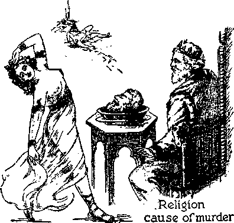MURDERERS
All liars and murderers are religionists. Whenever a murderer is about to be executed, he has some religious practitioner to say some senseless words over him, which is supposed to save him, but which does no good. The Devil was the originator of religion, and the Devil is the father of lies and a “murderer from the beginning” and ever thereafter. (John 8:44) From Nimrod down to the present hour the breakers of God’s everlasting covenant, who have opposed God and murdered human creatures, have been and are religionists, practicing some form of religion. It was religionists that murdered the holy prophets of God, whom he had sent to declare his truth, and those religionists murdered them because they represented God and followed the truth. (Matthew 23: 30-32) When Jesus, the great Prophet and Heir of the Almighty God, came to earth the Devil put it into the minds of the religionists to kill him, and therefore they said concerning Jesus: “This is the heir; come, let us kill him, and let us seize on his inheritance.” (Matthew 21: 38) It was not the common people, but the religionists, that opposed Jesus and that sought his lifeblood, and this they did because he told the truth.
The man Jesus was the only righteous perfect man ever on the earth. He was holy, harmless, undefiled and without sin. (Hebrews 7:26; 1 Peter 1:19) He went about doing good to the people and never did a wrongful or harmful thing to anyone. He was repeatedly charged with crime, and on every occasion it was the religionists who falsely accused him. It was the religionists who entered into a conspiracy to have Jesus put to death, because they feared that the people who followed him would all abandon the clergymen and those religionists would be left without any means of support; and in proof of this it is written: “The Pharisees therefore said among themselves, Perceive ye how ye prevail nothing? behold, the world is gone after him.” (John 12:19) “Then gathered the chief priests and the Pharisees a council, and said, What do we? for this man doeth many miracles. If we let him thus alone, all men will believe on him: and the Romans shall come and take away both our place [our jobs] and nation.” —John 11:47,48.
The high priest then expressed himself in these words: “Ye know nothing at all, ... it is expedient for us, that one man should die ... he prophesied that Jesus should die .. . Then from that day forth they took counsel together for to put him to death.” (John 11: 49-53) This was a conspiracy to commit deliberate murder, and that conspiracy was carried into effect by the commission of the overt act.
The clergymen caused Jesus to be wrongfully charged with the high crime of treason. It was not the common people or the political element that demanded his death, but it was the religionists, who cried out: “Crucify him,” and, “His blood be on us.” (Matthew 27:12-26) When Christ Jesus was nailed to the tree and was pouring out his lifeblood, the clergy mocked him: “Likewise also the chief priests mocking him, with the scribes and elders, said, . . . He trusted in God; let him deliver him now, if he will have him; for he said, I am the Son of God.” (Matthew 27:41-43) The same spirit moves modern-day clergymen to speak against those who proclaim the message of God’s kingdom.
The clergymen or religionists did not see that the body of Jesus had a decent burial, but it was a rich lawyer of honorable estate who had not consented to the action of the priests that begged for the body of Jesus that he might give it a decent burial. (Matthew 27: 57) It was the chief priests and Pharisees, the religious leaders, that tried to prevent the resurrection of Jesus, and that bribed soldiers with large sums of money to say falsely that his disciples had stolen the body while they slept. (Matthew 28:11-13) Can any honest person for one moment doubt the guilt of those religionists and that they, the leaders of religion, scribes and Pharisees, clergymen, acted as the agents and representatives of the Devil? As progress is made in this study keep in mind that it was the religionists that murdered Jesus, and then compare therewith the facts which show that the murderers in modern times are leaders in religious practice.
PURPOSE OF HIS COMING
The man Jesus was the Son of God. Before he became a man he was known as the Logos, the active agent of Jehovah God in the creation of all things. (Colossians 1:16) By the supreme power of Jehovah God, Jesus, the Logos, ‘was made flesh [a human creature] and dwelt among men.’ (John 1:14) Jehovah God sent him to earth as his special representative, and the message which he delivered was the message from the Almighty God. (John 7:16) The Devil, the inventor of lies, the deceiver and murderer, for centuries had slandered the name of Jehovah God, mocked him and defied him and challenged him to put on earth any man who would remain true to God when the Devil put him to the test. After giving the Devil four thousand years to carry on unhindered his wicked work Jehovah God sent his beloved Son Jesus to earth to prove the Devil a liar and to be the vindicator of Jehovah’s name. In carrying out the will of God it was of first importance that Jesus proclaim the truth; therefore when asked concerning his mission on earth, he replied: “I am a king. To this end was I born, and for this cause came I into the world, that I should bear witness unto the truth. Every one that is of the truth heareth my voice.” (John 18:37) It follows, therefore, that every person who refuses to hear the message of Jesus is not of the truth, but that he is under the control of the arch liar and enemy, the Devil.
REDEMPTION
The primary reason and purpose of Jesus’ coming to earth was to bear witness to the truth of and concerning Jehovah God and his kingdom and to vindicate Jehovah’s holy name. Incidental thereto, and as a secondary reason, he came to redeem man from the condemnation resulting from Adam’s sin. Because of the willful violation of God’s law Adam was sentenced to death, and after that all his children were born. The condemned Adam was imperfect because under sentence of death, and could not produce a perfect child, and the result has ever been that all men have been born in sin and conceived in lawlessness. “Behold, I was shapen in iniquity, and in sin did my mother conceive me.” (Psalm 51: 5) “Wherefore, as by one man sin entered into the world, and death by sin; and so death passed upon all men, for that all have sinned.” (Romans 5:12) Abel, Enoch, Noah, and Abraham were faithful to God, but, being born as imperfect men and therefore without right to everlasting life, by reason of Adam’s sin, they could not get everlasting life unless provision for the redemption were first made. Man must be ransomed from death by the sacrifice of the perfect human life, because it was the perfect human life which God’s law required Adam to give up as a penalty for sin. All men being descendants of Adam, there was no man who could present a perfect sacrifice unto God in the place and stead of Adam. God made the necessary provision.
It is the male of the human species that furnishes the life germ by God’s provision. How, then, could a perfect man be provided, and who could become a ransom price for or deliverer of mankind? Jehovah the Almighty God caused Mary to conceive while yet a virgin. (Matthew 1:18) She conceived in her womb by virtue of the power of the holy spirit of God exercised upon her. Seeing that God made man and woman out of the elements of the earth, there would be no difficulty whatsoever in God’s causing a child to be conceived in the womb of Mary; which he did. The man-child Jesus was born, and was pure, holy, undefiled and entirely separate from sinners, having none of the contaminated life germ descending from Adam. (Hebrews 7: 26) Jesus therefore is always designated in the Scriptures as “the Son of man”, which is “the Son of God”. When the man Jesus reached the age of thirty years he was qualified, under the terms of God’s law, to become a priest unto God. It was then that Christ Jesus consecrated himself fully to do the will of God, and his immersion in the waters of the Jordan river was an outward evidence to others that he had made the covenant to be obedient to the will of God. It was then that his words apply: “Then said I, Lo, I come: in the volume of the book it is written of me, I delight to do thy will, 0 my God: yea, thy law is within my heart.” —Psalm 40: 7,8; Matthew 3:15-17.
The one who would redeem mankind must offer himself voluntarily as a sacrifice, and that being the will of God, Jesus voluntarily and gladly complied with God’s will and thus offered himself by presenting himself wholly unto the Lord God. The lifeblood of the perfect man Jesus could and did furnish the ransom or redemptive price for sinful man. The life is in the blood. (Leviticus 17:11,14) The voluntary sacrifice of the perfect human life of Jesus provided the redemptive price, his lifeblood being poured out in sacrificial death. ‘Without the shedding of blood there is no remission of sin.’ (Hebrews 9:22) The lifeblood of the perfect man Jesus God could accept, and did accept, as the ransom price and sin offering for sinful man. (For detailed consideration of the redemption of man, see book Reconciliation.)
The perfect man, Christ Jesus, was subjected to all manner of assaults and persecutions inflicted upon him by the Devil and the Devil’s religious representatives on the earth, and through all of such assaults and persecutions Jesus maintained his integrity toward God, never for one moment deviating from the path of loyalty and faithfulness to God. Thereby Jesus proved Satan a liar, and this in vindication of Jehovah’s name and word. After he had given testimony concerning the name of Jehovah and the kingdom, which covered a period of three and one-half years, he was then charged with the capital crime of treason, was given a mock trial, convicted without legal evidence, and crucified by being nailed to a tree, thus being put to death as a sinner accursed of God; and thus he would appear in the eyes of all others. (Deuteronomy 21:23) God permitted his enemies to put Jesus to death, knowing that Jesus would remain faithful even unto death, proving his integrity to God, and that God would raise him up out of death. Jesus thus met all the requirements and fully showed his qualification to become the vindicator of God’s name.
IHEOYI IESUS VW"
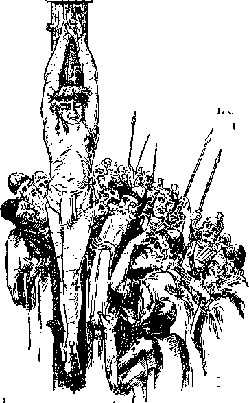f*
Religionists murder Jesus
Because of his faithfulness God raised up Jesus out of death and gave to him life and immortality, not as a man, but life divine, an endless and indestructible life, and exalted Jesus to the very highest place in all the universe next to Jehovah. (Philippians 2:5-11) God committed to Christ Jesus, the immortal One, all power in heaven and in earth. (Matthew 28:18) Therefore Jesus said: “I am he that liveth, and was dead; and, behold, I am alive for evermore, Amen; and have the keys of hell and of death.” (Revelation 1:18) Christ Jesus therefore becomes clothed with all power and authority to
act for Jehovah in all things as his chief executive officer.
When with his disciples, Jesus instructed them that all creatures who will receive everlasting life and the blessings of Almighty God must willingly and faithfully serve God. Then of himself he said: “And whosoever will be chief among you, let him be your servant: even as the Son of man came not to be ministered unto, but to minister, and to give his life a ransom for many.” (Matthew 20: 27, 28) This shows that the man Jesus understood that it was the will of his Father Jehovah not only that he tell the truth and become the Vindicator of his Father but that as a man he must die to provide the ransom or redemptive price “for many” of the human race. For how many of the human race: all or only a part? Not for all, because the redemptive price results beneficially only to those who believe on and obey God and Christ Jesus. Therefore he gave his life as a ransom for as many of the human race as take their stand on the side of God and Christ and maintain their integrity toward God when put to the test.
It is written: “For the wages of sin is death; but the gift of God is eternal life, through Jesus Christ our Lord.” (Romans 6:23) Here the matter is squarely put to every man, to wit: If you prefer to continue on the side of the Devil and against God the result will be complete destruction; but if you take your stand on the side of God and Christ, showing full faith in the redemptive price and proving your integrity toward God, you will receive at God’s hands, through Christ Jesus, the gift of life everlasting. In further corroboration of this, it is written : “The Father loveth the Son, and hath given all things into his hand. .He that believeth on the Son hath everlasting life: and he that believeth not the Son shall not see life; but the wrath of God abideth on him.” (John 3: 35, 36) Otherwise stated, all men came under condemnation by reason of sin, and God’s wrath against sin is death; if one believes on the Lord Jesus Christ God removes that condemnation from him; but if man prefers to remain on the side of the Devil and continue in sin, then God’s wrath or condemnation abides on him and is not removed. Thus it is seen that God’s intelligent creatures are made free agents to choose life or death after having received a knowledge of God’s provision for them.
The provision God has made to give life to men is prompted entirely by unselfishness or love on the part of God; as it is written: “For God so loved the world, that he gave his only begotten Son, that whosoever believeth in him should not perish, but have everlasting life. For God sent not his Son into the world to condemn the world; but that the world through him might be saved.” (John 3:16,17) It necessarily follows, then, that those who do not believe “perish”, which means to be completely annihilated. God has no pleasure even in the death of the wicked, and certainly he could have no pleasure in inflicting torture upon anyone. The doctrine of eternal torment in hell is another one of Satan’s vicious lies, which lies are taught to the people only by religionists, and the purpose of this Devil lie is to turn people away from God and force them into the Devil’s organization, that is, the “religious” organizations. “Hell” means the condition of death, not a place of torture. When a man prefers to continue in wickedness, God mercifully puts him to sleep in death, and that man never again awakens. “God is love,” and he could not be guilty of a fiendish act such as eternal torture. The Lord causes to be brought to the attention of the people the truth, and then each one has the opportunity to believe or not to believe, as he may choose.
While instructing those who listened to and believed him, Jesus said: “I am come that they [that believe] might have life, and that they [that prove faithful unto death] might have it more abundantly.” (John 10:10) In order for anyone to believe, he must learn of God’s provision for man through Christ Jesus. Therefore it is written: “For whosoever shall call upon the name of the Lord shall be saved. How then shall they call on him in whom they have not believed? and how shall they believe in him of whom they have not heard? and how shall they hear without a preacher? And how shall they preach, except they be sent? as it is written, How beautiful are the feet of them that preach the gospel of peace, and bring glad tidings of good things!”—Romans 10:13-15.
Further exercising his loving-kindness, God has provided that the attention of the people should be brought to the truth of and concerning himself and his provision to give them life. He causes his Word to be proclaimed that the people may hear. The enemy Satan seeks to destroy all mankind, but the Almighty God graciously informs man that all those who will get on God’s side, believe upon and serve the Lord Jesus Christ and Jehovah and prove faithful, shall live.
After the flood Satan induced men to practice religion in mockery of God and all the nations adopted and practiced the Devil religion. Jehovah God then chose the people of Israel, formed them into a nation, and gave them his commandments and instructed them how they could obey God and live. Thus the matter was clearly put before mankind. Men could choose to stay in the Devil’s crowd or could serve Jehovah God faithfully and truly. Soon thereafter the Devil invaded the camp of Israel and induced that people to adopt formalism, which formalism in an outward way appeared to give honor to God but which in fact was against God. The Israelites soon began to use images in connection with their formalistic worship, and that was in direct violation of God’s law. Continuing in this way, the nation went fully over to the Devil; only a few of the individual Israelites remained true to God. Men began the practice of formalism, which constituted “the Jews’ religion”, and that formalism and those man-made doctrines were handed down from parents to children; which is called “tradition”. When Jesus came to earth the Jews were practicing religion, based upon such tradition, and which religion and tradition
made void the commandments of God, and Jesus so told them.
Jesus taught the people fully and sincerely to obey the commandments of God, and thus Jesus established true Christianity. There is no such thing in existence as “the Christian religion”, because all religion proceeds from God’s enemy, the Devil. “Christian religion” is a misnomer, fraudulent and deceptive. “Christianity” means the full and complete obedience of man to God’s commandments, even as Christ Jesus taught and obeyed God’s commandments. Therefore a person is a Christian only when he is a true follower of Christ Jesus, which means that he must be diligent in obeying God’s commandments and follow them and not the teachings of man. Religion is a great enemy, always working injury to mankind, and this without regard to whether man is sincere or otherwise. Religion is entirely out of place in the church of God. What, then, is meant by the term the “church of God”?
HIS CHURCH
“Christ is the head of the church.” •—Ephesians 5: 23.
THERE is but one real and true church, and that is God’s church, which is the “church of the firstborn”, whose names “are written in heaven”. (Hebrews 12:23) Writing of men’s names in books on earth has nothing to do with making them members of The Church. Jesus informed his disciples that God would build the church, which is not a building made with hands, but consists of a company or organization of Christians, with Christ Jesus as the Head or Chief One thereof. By his prophets God had promised to send Christ, the Messiah, and the devout Jews who were faithful to God were looking for the fulfillment of that prophetic promise. Speaking to his disciples, Jesus propounded to them this question: “Whom do men say that I . . . am?” And some of the disciples answered: 'Some say that you are one of the prophets returned.’ “He saith unto them, But whom say ye that I am? And Simon Peter answered and 'said, Thou art the Christ, the Son of the living God. And Jesus answered and said unto him, Blessed art thou, Simon Bar-jona: for flesh and blood hath not revealed it unto thee, but my Father which is in heaven. And I say also unto thee, That thou art Peter; and
upon this rock I will build my church; and the gates of hell shall not prevail against it.” (Matthew 16:13-18) The Devil has seized upon these words of Jesus and used the same to promulgate one of the most deceptive lies that has ever been told, a lie by which millions of honest and sincere people have been deceived and turned away from God and led into the devilish organization.
Jehovah God is designated in the Scriptures as the great Rock or Stone. (Deuteronomy 32:4) Christ Jesus, his beloved Son, is also designated in the Scriptures as a rock or stone, whom God makes the ruler of the world to rule in righteousness. (Daniel 2:32-45) “Christ” means God’s “Anointed”, and his duly commissioned Servant and Vindicator, his Faithful and True Witness. When Peter, in response to the question propounded by Jesus as above stated, said to Jesus: “Thou art the Christ,” Jesus concurred in that answer and then added these words: “Upon this rock [that is, upon God’s Anointed One, the Christ, symbolized by a rock] I [as God’s duly commissioned Servant and representative] will build my church”; which is God’s church, because whatsoever Jesus does is according to the will of God. Upon Christ the Messiah’the church is builded, and Christ is the Head thereof, as well as the foundation. He is the Chief One in the organization.
The inspired apostle of the Lord Jesus, who walked with Jesus and learned of him and who wrote under the direction of the Lord, said to his brethren that he prayed for them: “The eyes of your understanding being enlightened [that they might receive the spirit of wisdom]; that ye may know . . . what is the exceeding greatness of his power to us-ward who believe, according to the working of his mighty power, which he wrought in Christ, when he raised him from the dead, and set him at his own right hand in the heavenly places, far above all principality, and power, and might, and dominion, and every name that is named, not only in this world, but also in that which is to come; and hath put all things under his feet, and gave him to be the head over all things to the church, which is his body, the fulness of him that filleth all in all.”—Ephesians 1:17-23.
It is therefore made certain that “the church”, which is the only true church, is that body of creatures selected by Jehovah and brought into Christ Jesus, and who give honor and glory to Jehovah God, and who serve him to the exclusion of everything; that these members are not confined to some earthly organization, but that God selects them and assigns them to a place in his organization as it pleases him. (1 Corinthians 12:18) “Christ is the head of the church: and he is the saviour of the body,” and “the church is subject unto Christ,. . . that he might sanctify and cleanse it with the washing of water by the word, that he might present it to himself a glorious church, not having spot, or wrinkle, or any such thing; but that it should be holy and without blemish.” (Ephesians 5: 23, 24, 26, 27) No man or company of men has any right or authority to set up an organization and label it “The church”, and all men who do so are doing violence to God’s Word.
The church is God’s organization which he builds by and through his beloved Son, the Head and Lord thereof: “And God hath set some in the church: first, apostles; secondarily, prophets ; thirdly, teachers; after that, miracles; then gifts of healings, helps, governments, diversities of tongues.” (1 Corinthians 12:28) The church is “the household of God”, composed of Christ Jesus and the members of his body: “built upon the foundation of the apostles and prophets, Jesus Christ himself being the chief corner stone; in whom all the building, fitly framed together, groweth unto an holy temple in the Lord; in whom ye also are builded together for an habitation of God through the spirit.”—Ephesians 2:19-22.
God, by his prophet, speaks of the church and designates it by the name “Zion”, which is his capital organization and wherein he dwells: “For the Lord hath chosen Zion; he hath desired it for his habitation.” (Psalm 132:13) That church is “the church of the living God, the pillar and ground of the truth”. (1 Timothy 3:15) From these plain scriptures it is certain that the church could not possibly consist of any organization on earth in which politics, and commerce or trafficking, form a part, and in which the members of such organization commit many deeds of cruelty and wickedness. The church is the temple of God, not the temple built of material things by human hands, but the body of creatures devoted wholly to the Almighty God.
(1 Corinthians 3:16,17) As progress is made in the examination of what follows, it will be seen that the enemy has seized upon the name “the church” and used the same to perpetuate the great fraud upon man and to further defame the name of Almighty God.
PURPOSE
What is God’s purpose in having a church? The answer from the Scriptures is, that he might use it to testify to his name and to carry out his commandments in vindication of his name. Here again it is needful to emphasize the challenge that the Devil flung, in the face of Jehovah God, and God’s reply thereto. The Devil declared that he could cause all men to ‘curse God to his face’ if he (the Devil) were permitted to put man to the test, and God permitted the Devil to try that very thing. God replied: ‘For this cause have I permitted thee to remain, for to show thee my power; and that my name may be declared throughout all the earth.’—Exodus 9:16, Leeser.
God’s judgment against the Devil was that he should be destroyed; but before the execution of that judgment He would have his own great name declared throughout the earth, and then he would exercise his unlimited power against the enemy. God then proceeds in his own due time and good way to take out from the world faithful men and women who prove their integrity toward him, and he makes them members of his church under Christ Jesus and uses such to proclaim his name throughout the earth before Jehovah executes his judgment against the enemy. God’s church, therefore, constitutes his witness or witnesses while on the earth; and when elevated to heaven at the resurrection, such witnesses are used by him for his purposes ever thereafter.
The church was a mystery to all men until after God gave his holy spirit to his faithful men at Pentecost, which was given fifty days after the resurrection of Jesus. Concerning that mystery one of the apostles testifies: “Even the mystery which hath been hid from ages and from generations, but now is made manifest to his saints: to whom God would make known what is the riches of the glory of this mystery among the Gentiles; which is Christ in you, the hope of glory.”—Colossians 1:26,27.
After Pentecost the apostles were assembled at Jerusalem in conference, and then it was that God revealed to them that his purpose in gathering unto Christ Jesus those who would be made a part of his church was and is that he might have a “people for his name”, which people must bear testimony to his name, and that this testimony must be delivered before God exercises power against the enemy. (Acts 15:13-17) From the time of the ascension of Christ Jesus into heaven and until his coming again to carry out God’s purposes and the setting up of the kingdom, God, through Christ Jesus, selects from amongst the nations or peoples of the earth “a people for his name”, the faithful ones of whom constitute his church, and who must declare his name. Those selected ones, in order to have God’s approval, must follow in the footsteps of Jesus and prove faithful unto death. (1 Peter 2:21; Revelation 2:10) It is certain, therefore, that all the true followers of Christ Jesus, who constitute his church, must suffer more or less at the hands of the Devil, and which suffering and punishment is inflicted upon them by the religious agents of the Devil on earth, just as they afflicted the Lord Jesus Christ. For this reason some of the sufferings of Christ was left over for the body’s sake, as it is written: ‘Who now rejoice in my sufferings for you, and fill up that which is behind of the afflictions of Christ in my flesh for his body’s sake, which is the church.”—Colos-sians 1:24.
It was the religionists who persecuted Jesus, and he declared that that same class of religionists would persecute all who would be his true followers. “If ye were of the world, the world would love his own: but because ye are not of the world, but I have chosen you out of the world, therefore the world hateth you. Remember the word that I said unto you, The servant is not greater than his lord. If they have persecuted me, they will also persecute you; if they have kept my saying, they will keep yours also. But all these things will they do unto you for my name’s sake, because they know not him that sent me.”—John 15:19-21.
The fact that Christ Jesus, the Head of the church, is the Faithful and True Witness of Jehovah (Revelation 3:14), and also the further fact that he stated, “Every one that is of the truth heareth my voice” (John 18:37), proves beyond all question of doubt that everyone who is of his church must be a witness to the name and to the kingdom of God. It is the faithful followers of Christ Jesus, members of his organization or church, that have always looked with eagerness for his coming again and the setting up of his kingdom, and concerning which the inspired apostle wrote in the Scriptures : “Now we beseech you, brethren, by the coming of our Lord Jesus Christ, and by our gathering together unto him, that ye be not soon shaken in mind, or be troubled, neither by spirit, nor by word, nor by letter as from us, as that the day of Christ is at hand.” (2 Thessalonians 2:1,2) “And the very God of peace sanctify you wholly; and I pray God your whole spirit and soul and body be preserved blameless unto the coming of our Lord Jesus Christ.”—1 Thessalonians 5:23.
Only the faithful followers of Christ Jesus are gathered unto him and made a part of his church at his second coming. It is those who are anxious for the setting up of the kingdom of God that prove faithful and true to God and Christ. At his second coming it is these faithful ones to whom he gives the commandment: “And this gospel of the kingdom shall be preached in all the world for a witness unto all nations: and then shall the end come.” (Matthew 24:14) It is to this same faithful class that Jehovah says: “Ye are my witnesses . . . that I am God.” (Isaiah 43:10-12) "Thou shalt be called by a new name [Jehovah’s witnesses], which the mouth of Jehovah shall name.” (Isaiah 62:2, A.R.V.) Consider these indisputable truths set forth in the Word of God, and then ask yourself and answer this question: Is there an organization on earth today that is preaching to the people that Jehovah is the only true God, that Christ Jesus is the King and rightful Ruler of the world, and that his kingdom is at hand and is the only hope of the world?
The church being God’s organization, taken out of the world for His name’s sake, it follows that the members thereof are those who worship the Almighty God in spirit and in truth. (John 4:23) They honor God, and not man and manmade organizations. Such true worshipers cannot be faithful to God and at the same time participate in the political affairs of this wicked world. Those who worship God in spirit and in truth are wholly devoted to him in obeying his commandments. “For the worship [mistranslated religion in the Authorised Version] that is pure and holy before God the Father, is this: to visit the fatherless and the widows in their affliction, and that one keep himself unspotted from the world.”—James 1: 27, Syriac Version.
The great adversary of God and enemy of the church and of all its members is that old Serpent, Satan the Devil. It is certain, therefore, that that old deceiver would inaugurate many and all kinds of seductive schemes concerning the church in order to deceive the people. This he has done, and at the same time the Devil puts forth his great effort to devour those who constitute the true church. To those who are of God’s church, taken out from the world as witnesses to his name, Jehovah has committed the “testimony of Jesus Christ”, and these must obey the commandments of the Almighty God. Against these faithful ones the Devil, that old Dragon, makes his assault and tries to destroy them; as it is written: “And the dragon was wroth with the woman [God’s woman, symbolic of his organization called Zion, the church (Isaiah 54:1-13)], and went to make war with the remnant of her seed, which keeb the commandments of God, and have the testimony of Jesus Christ.”—Revelation 12:17.
It is also written that the church must fight the enemy Satan and his agents by proclaiming the truth; that they shall not use carnal weapons, such as guns and cannon and swords made of steel, and other instruments that destroy (2 Corinthians 10:4); that the weapons of their warfare are “the sword of the spirit, which is the word of God”. (Ephesians 6:17) That is the reason that Jehovah’s witnesses must tell the truth and do so amidst great opposition and persecution carried on by Satan and his religious representatives.
Do you know of any religious organization that engages in a war upon others and that calls itself at the same time “The church of God”, and which organization uses deadly weapons with which to destroy those who oppose them? Do you know of any organization claiming that it is the church of God, which engages in the politics of the world, and which organization attempts to rule the world? Do you know of any religious organization claiming to be the church of God but which makes treaties or concordats with beastly political and commercial powers and works with them in carrying out worldly schemes? If so, it is certain that such “religious organization” is not the representative of God and Christ, but that it is the representative of the enemy Satan, who is the enemy of every man that desires to see righteousness prevail.
The life of every human creature on earth today is in the balance, and that includes you. The truth is of greatest importance to you, because you must know and follow the truth in order to live. If it is your honest and sincere desire to know what is the truth, then put aside any and all preconceived opinions or prejudice and then honestly and sincerely consider the indisputable facts that follow herein, together with the infallible Word of the Almighty God; and if you do so, your understanding will be enlightened as never before. Are you prepared now to rely upon God’s Word, which is the truth, even though it makes it clear that many men and organizations that appear to be good are devilish in the extreme? Do you want to live, and therefore do you want to know the truth? What follows wifi shock many persons, and make them angry, but such persons are prejudiced and foolish, to say the least. Those who are really honest and sincere and desire to serve God and live will be delighted to learn the truth as set forth in what follows herein.
RACKETEERS
“The wicked worketh a deceitful work.”
—Proverbs 11:18.
A RACKET is a scheme, plan, dodge or trick used for selfish gain and which deceives and works injury to others. A perversion of the truth for the purpose of inducing another in reliance upon it to part with something valuable is a racket. A false scheme or misrepresentation or suppression of the truth, which results in injury to others, and for pecuniary gain to the schemer, is a racket. A deception intentionally practiced, with a view to gain, is a racket.
A racketeer is a schemer who is artful, wily and cunning and who uses his plan or scheme to gain an unfair advantage over others. The racketeer gains an undue advantage over others, and then uses his scheme or plan to rob or pillage others, and this he does for real or supposed gain to himself. All racketeers are public enemies and enemies of honest persons, and are the enemies of God. Rackets, practiced by racketeers, work injury to those upon whom the trick is practiced.
Men who are engaged in traffic that is unlawful and that works injury to the people are racketeers and public enemies. The stealing of 142 children or persons and holding them for ransom is a racket, and the stealer or kidnaper is a public enemy. Men who engage in the whiteslave trade are racketeers and public enemies. Real estate promoters who operate schemes to defraud others are racketeers and public enemies. Those who operate a scheme by offering prizes to induce persons to buy or sell worthless goods, wares and merchandise are racketeers. Men who engage in robbery, stealing and murder for personal gain are racketeers and public enemies. The man who engages in the scheme of blackmail and thereby obtains money is a racketeer and a public enemy. All such public enemies either put the people in fear or fraudulently overreach them. Men who engage in political schemes misrepresenting the facts in order to induce the people to support them that they may thereby reap a personal or pecuniary gain are racketeers and public enemies. Commercial men or corporations operating a scheme or schemes that result in injury to the people are racketeers and public enemies. Those who engage in any kind of fraudulent scheme that results in loss or injury to others are racketeers and public enemies. Men who use motion pictures to mislead the people, and thereby gain any kind of profit in name, money or influence, are racketeers. All racketeers are agents of the Devil, whether they realize that fact or not. All wrongful schemes originate with the Devil, and that great enemy induces and influences men to use such rackets to do injury to others and to bring reproach upon the name of the
Almighty God. Such is a general description of rackets and racketeers.
GREATEST RACKET
Put aside now preconceived opinions, and with an unbiased mind examine the facts concerning the greatest of all rackets that has ever been practiced under the sun, to understand the truth of which is for your own personal welfare. Honest persons have some means of protecting themselves against many public enemies because they are warned against such enemies, can see how the enemies operate, and can take steps to safeguard their own interests. The most dangerous and destructive kind of racketeering is that which has the appearance of honesty but which is operated in such a subtle, deceptive manner as to blind the people to the real truth. The credulous and unsuspecting are caught unawares in the enemy’s trap and find it almost impossible to extricate themselves therefrom.
The greatest racket ever invented and practiced is that of religion. The most cruel and seductive public enemy is that which employs religion to carry on the racket, and by which means the people are deceived and the name of Almighty God is reproached. There are numerous systems of religion, but the most subtle, fraudulent and injurious to humankind is that which is generally labeled the “Christian religion”, because it has the appearance of a worshipful devotion to the Supreme Being, and thereby easily misleads many honest and sincere persons. Strange as it may seem, the two words “Christian” and “religion” are diametrically opposed one to the other. Most persons in the land called “Christendom” have been led to believe that the two words mean one and the same thing, and through lack of knowledge of the truth great injury is done to the people. The greatest public enemy is that which operates with a righteous appearance but which is fraudulent, brings reproach upon God’s name, misrepresents his purpose, and thereby robs the people of their money, their peace of mind, their liberty of speech and thought, and the opportunity of life everlasting.
Under the practice of the so-called “Christian religion” the world at the present time has reached that period described in the Bible in these words: “This know also, that in the last days perilous times shall come. For men shall be lovers of their own selves, covetous, boasters, proud, blasphemers, disobedient to parents, unthankful, unholy, without natural affection, trucebreakers, false accusers, incontinent, fierce, despisers of those that are good, traitors, heady, highminded, lovers of pleasures more than lovers of God; having a form of godliness, but denying the power thereof: from such turn away. Now as Jannes and Jambres withstood Moses, so do these also resist the truth: men of corrupt minds, reprobate concerning the faith. But they shall proceed no further: for their folly shall be manifest unto all men, as theirs also was.”—2 Timothy 3:1-5, 8, 9.
Do not confuse “Christianity” with the so-called “Christian religion”. The latter operates in the name of God and Christ but is wholly against Christ and his kingdom, which is the only hope of the human race. Religion labeled “the Christian religion” is a racket invented by the Devil to defame the name of Almighty God and is practiced by men, some of whom are honest and practice it because they have been induced to believe it is right, while others know that they are wrong and are working a fraud upon the people. The latter are doubly dangerous to the interests of the human race. Because the name of Christ has been and is used to work a great fraud upon the people, the racket thus practiced is the greatest of all. There are many sincere and honest persons in organizations known as “religious” or “church organizations”, and it is with the hope of helping such to see the truth that this publication is put forth. What is here published is not an attack upon men, but is an attack upon the most subtle and devilish kind of frauds that ever existed. Those who desire to know the truth will be pleased to now carefully consider the origin of the so-called “Christian religion” and how it has progressed in the earth.
Christ Jesus is the Head or beginning of Christianity, because he leads and others follow in obeying God’s commandments. Christ means Anointed of God, the One who is commissioned to carry out God’s purpose. Christ is not and never was for one moment a religionist. He always strictly obeys the commandments of the Almighty God. He instructed his faithful disciples in the Word and purpose of Jehovah God. After the resurrection of Jesus from the dead the holy spirit, which is the invisible power of God, came upon the faithful apostles and they understood the truth as it was not possible for them to understand it before that time. Those faithful men, in the name of Christ, went about “from house to house” (Acts 20:20), teaching the people and preaching to them that the shed blood of Christ Jesus provides the redemptive price for man from condemnation, and that it is the purpose of Jehovah God to give life to those who believe on Christ and follow in his steps. Because those men were freely telling the truth to the people concerning Christ, the religionists amongst the Jews assaulted the apostles, brought them into the courts, demanding: “By what power, or by what name, have ye done this?” One of those faithful apostles of Jesus Christ replied in these words: “Be it known unto you all, and to all the people of Israel, that by the name of Jesus Christ of Nazareth, whom ye crucified, whom God raised from the dead, even by him doth this man stand here before you whole. This [Christ] is the stone which was set at nought of you builders, which is become the head of the corner. Neither is there salvation in any other; for there is none other name under heaven given among men, whereby we must be saved.”—-Acts 4:10-12.
During the remainder of the earthly career of the apostles they continued to preach to the people Christ Jesus, his crucifixion and resurrection, and the coming of his kingdom as the only hope of mankind, and many of the common people heard and believed. To offset the work of the apostles of Christ, Satan the Devil began to build an anti-Christ organization, into which latter organization many people were drawn. Ambitious men assumed the leadership amongst those who started to follow in the footsteps of Jesus, and those ambitious and selfish men became the teachers and leaders of the organization (Acts 20:29,30), and then was the organization labeled as “the Christian church”, and the doctrines and practices thereof were from that time forward called “the Christian religion”. The Lord had warned his disciples of the coming of the anti-Christ, that is, those who should deceive the people in the name of Christ. (2 John 7) Such deceivers were manifesting themselves even in the days of the apostles. (2 Thessalonians 2:7) In this day (1937) the religious organization that has its headquarters at Vatican City, Italy, and which calls itself “the Christian church” or “Christian religion”, dominates the religion of the nations called “Christendom”.
As heretofore shown, religious organizations began with Babylon and extended to all parts of the earth. When Rome became a world power, and which is known as Pagan Rome, that world power practiced the Devil religion; and in time Pagan Rome blossomed into what is known as Papal Rome, which from then till now practices what is called the “Christian religion”. The following indisputable historical facts should be read with real interest, since they disclose that Rome completely fell under the Devil religion.
The quotations following are from The Encyclopedia Americana:
ROMAN RELIGION. From the time that the Roman religion appears within the pale of traditional and recorded history it seems to have been constantly and progressively subjected to varying influences, both internal and external, and to have passed through many changes. . . . Fundamentally the primitive religious ideas of all the Indo-European peoples were quite similar. Even the Roman religion, in the days when Rome was governed by kings and had already begun to evolve complicated rituals and complex myths, still retained a suggestive similarity to that of India. . . . The early Roman gods were the personification of the elements of nature. The old Roman deities and supernatural beings of their nomadic life, the patrons of the chase and the guardian spirits of the mountains, the rivers, the earth, the sky and the upper heavens gradually assumed more definite attributes . . . The deities and religious customs and practices of all the tribes of Italy of Indo-European origin, which were quite similar, gradually became domesticated in Rome. Naturally as the Roman Empire broadened and became more cosmopolitan, its religious system also became broader and more all-embracing. Having absorbed the deities of the Italic Peninsula, the habit of absorption became, with Rome, all-impelling, and the pantheon of the Imperial City, reaching out its octopus arms in every direction throughout the already wide confines of the rapidly extending Roman domain, and even beyond it, brought new creeds, new deities and new religious philosophies into Rome. Under such conditions as these little or no religious dogma could exist; nor did it. . . . Thus ecclesiastical Rome became as cosmopolitan and eclectic as the Roman Empire itself. This is but another way of saying, however, that the religious life of the Roman community was constantly shifting as the process of broadening continued.
. . . Diana, the moon goddess, under one name or another and with somewhat varying attributes, the favorite deity of so many nomadic peoples given to the chase, and in all probability the chief deity of the nomadic Romans, gave place to the earth mother, the producer, the characteristic deity of an agricultural people. . . . Jupiter, the god of the sky, of the upper regions and of thunder, usurped the foremost place primitively held by Diana, the moon mother, becoming the titular deity of the Romans and the supreme god of the Latin races united under the imperial sway of Rome. . . .
... Juno, the female counterpart of the supreme deity {Jupiter] himself, and the definition of the supposed female qualities of the sky. In other words, she is but a subdivision of Jupiter himself, whose sister and wife she is represented, in Roman mythology, to be. . . .
Next to Jupiter and Juno, his regal consort, the greatest of the Roman state gods, was Mars, . . . the patron of war, . . . Mars, who was especially honored in March and October, was the patron of the opening and closing of the war campaigns and of the sports connected therewith. . . .
... At this early period in the life of the Roman people, the superior priesthood seem to have been almost inseparably connected with the nobility and the kingly rulers, the latter of whom had already begun to lay claim to descent from the gods. The seeds of ancestor worship had also already been planted, a custom which was later on to deify kings and emperors, as the legal and de facto representatives of the gods upon earth. . . .
... It looked very much as if the old religion were about to go by the board when the establishment of the [Roman] empire saved it for the time being. The emperors claiming to rule by divine right and direct descent from the gods, it was very much to their interest to uphold a state religion; which they did on a magnificent scale, bringing into the national church all the officers, employees and dependents of the government. The state church, at this latter stage, was an immense fraternity, all the members of which were bound, by virtue of their office, to support it. This revival of the ancient Roman religion was, therefore, less religious than political . . . Babylonian, Greek, Assyrian, Egyptian and Eastern religious ideas found welcome in Rome. The Great Earth Mother of Asia Minor [therefore of Babylon] and Isis, the mother goddess of Egypt, were not only introduced into Rome but their worship, which was accompanied with elaborate ritual and ceremonial, became almost universal throughout the Roman Empire; and such a firm root did it take among the masses of the Roman people and the Eastern nations under the domination of Rome that the early Christian missionaries found great difficulty in eradicating it.
. . . This craze for foreign deities went to unheard-of extremes, going so far afield as Persia, from which was introduced the great sun god, Mithras, with his elaborate mystical worship, which became very popular in the Imperial City itself. . . . Thus Rome, bathed in philosophy, scepticism, mysticism, emotionalism and stoicism, with nothing solid to which to anchor, drifted upon the rocks of national religious shipwreck. In this condition sho was found . . . for the development of the Catholic faith.
The Encyclopedia Americana, Vol. 23, pages 641-645.
The “gods” mentioned in the foregoing are Gog and the wicked demons, which inhabit what is known in the Scriptures as “the land of Magog”. The faithful apostles of Jesus Christ saw the anti-Christ religion advancing in their day and forewarned the people against it. Soon after they passed from the earth the Devil saw to it that what began as the Christian organization was corrupted and turned into what has since been called the “Christian religion”, and which has since operated in the earth under the name of the ‘Roman Catholic religious system’. The following historical facts, taken from Lord’s Old Roman World, are here appropriate:
“In the First Century not many wise or noble were called.... In Ute Second Century... It was a disgrace to be a Christian in the eye of fashion or power. . . . the church . . . was a small body of pure and blameless men, who did not aspire to control society. But they had attracted the notice of the government and were of sufficient consequence to be persecuted.” During the second century “bishops had become influential, not in society, but among the Christians”. Then “ecclesiastical centralization commenced; . . . The Church was thus laying the foundation of its future polity and power”.
It is certain that the Lord God had not marked out such a policy. It is equally certain that it was the Devil who was planting and cultivating the seeds of selfishness to accomplish his wicked purpose.
The historian above mentioned continues: “The Third Century saw the Church more powerful as an institution. . . . doctrines were systematized [into creeds and confusion].... great bishops ruled the growing church.... The Church was rapidly advancing to a position which extorted the attention of manldnd [the world, to be sure]. It was not till the Fourth Century—when imperial persecution had stopped; when Constantine [the emperor of Pagan Rome] was converted; when the Church was allied with the State; when the early faith was itself corrupted; when superstition and vain philosophy [prompted by the Devil] had entered the ranks of the faithful; . . . when synods were brought under political influence; . . . when politics and dogmatics went hand in hand,... that men of rank entered the church. When Christianity became the religion of the court and of the fashionable classes, it was used to support the very evils against which it originally protested. The Church was not only impregnated with the errors of Pagan philosophy, but it adopted many of the ceremonies of oriental [Devil] worship, . . . The clergy, ambitious and worldly, sought rank and distinction.... They became lazy, arrogant, and independent. The people were shut out of the government of the Church. The bishop became a grand personage who controlled and appointed his clergy. . . . The mission of the [true] Church was lost sight of in a degrading alliance with the State.”
SUBTLE SCHEME
The Lord God gives warning to men in these words: “The fear of man bringeth a snare; but whoso putteth his trust in the Lord shall be safe.” (Proverbs 29:25) The man who fears that he may lose some honor or other tiling that he regards as valuable unless he pursues a compromising course is certain to fall into Satan’s trap. Ambitious men are easily led into Satan’s trap. No doubt the early leaders in what is known as the Catholic Church organization were sincere, but some of them, particularly being ambitious for honor amongst men, and fearing they might lose what they had, quickly fell to the flattery of the Devil, who saw to it that they had plenty of it. About 400 years after the death of the apostle Peter the Roman Catholic “Hierarchy of Jurisdiction” was organized. After still further centuries had passed, and the people had been kept in ignorance of the truth, it was then an easy matter to induce the living ones to believe that a man whom they had been taught to honor as pope and the head of the Hierarchy is the successor of the apostle Peter. The people were thus induced to believe a great and injurious falsehood.
There is no reason to say anything about the man who fills the office of pope, and therefore nothing is here intended to apply to an individual, but what is said is against the office. That office of pope had no existence in the days of the apostles. It was created by men at the instance of Satan, and the first man elected to that office was elected in the year 440 (A.D.).
—McClintock & Strong’s Cyclopedia, Vol. 7, page 629.
The Catholic Church did not exist until long centuries after the days of the apostles of Jesus Christ, and yet that organization today claims to be the church of Christ, and millions of sincere persons believe that falsehood. Neither Christ nor any of his apostles had anything whatsoever to do with bringing into existence the Catholic organization. Only the Devil could conceive the idea of organizing a great religious system and labeling it the “Christian Church”; and his purpose, in keeping with his name, was and is to deceive the people and keep them in Ignorance of the truth concerning the church of God. The church of God, of which Christ Jesus is the Head, is the only true church, and the names of those who are in it are written in heaven and not on earth. (Hebrews 12: 23) Because that religious organization assumed the name of Christ and stealthily and gradually put forth its false doctrines, it has become the most far-reaching and destructive racketeer that has ever been in existence, and works to the greatest injury to the people and to the defamation of God’s name. It operates upon false pretenses and false teachings.
PRETENSES
A pretense is the act of laying claim to something or holding out to others some teaching or doctrine to induce such others to take a course consistent with such pretense. The Catholic organization, commonly called the “Catholic church”, is made up of the pope, bishops, cardinals, priests and others called “clergymen”; and all those who support that organization or who are adherents thereof are known as the “Catholic population”, but which “Catholic population” are not members of the church. In the Catholic organization there are the high and the low clergymen, that is to say, the Hierarchy of authority, composed of men in high positions; while there are many humbler men in the priesthood who obey the commands of the higher-ups. The Catholic organization has long held out and continues to hold out to the people certain claims or doctrines for the manifest purpose of inducing people to become adherents to or “children” of that organization. Among the doctrines so taught and held out is this one, to wit: That the Boman Catholic Church is the one true and only church. The following quotation is from the well-known Catholic authority: “The true Church must be Apostolical. Hence in the Creed framed in the first Ecumenical Council of Nic tea, in the year 325, we find these words: T believe in the One, Holy, Catholic and Apostolic Church.’ ’’-The Faith of Our Fathers (Gibbons), page 38.
Credulous persons, who hear this claim and rely upon the same, are induced to act, and therefore millions of sincere persons have been induced to believe that the Boman Catholic organization is the Church of God, and for that reason they have submitted themselves to the organization which is ruled by the Hierarchy. If the claims or pretenses made by the Catholic organization are false, then it must be conceded that the people are being imposed upon to their injury and that those who are responsible for such pretenses or false claims are therefore racketeers. By what rule shall these claims be measured to determine whether or not they are true or false? The sincere person who believes in God and in Christ, and who is of good will toward God, will quickly answer this question in these words: “The Word of God is the only true guide by which we must determine the truth or falsity of such claims.”
Is the Roman Catholic Church organization the true church of the living God? The answer must be, No. Refer now to the foregoing chapter four of this book, wherein are given the scriptures showing that the true church is the temple or organization of Jchovah God and that the one and true Foundation Stone or Rock thereof is the Lord Jesus Christ, who is the Head and Lord of the church; and that all others in the temple or church are members of his body and that such must be transformed into the likeness of the Lord Jesus Christ, faithfully following in his steps, and that these are the witnesses of Jehovah God, who are commissioned to bear testimony to his holy name. The office and mission of the church of God under Christ Jesus, compared with that of the Roman Catholic organization, show that the two take exactly opposite courses. The Roman Catholic organization is now and for centuries has been engaged in religion, politics and commerce for gain, and is therefore the enemy of God and the enemy of all men.
In the Scriptures a “tree” is used as a symbol of a creature or of an organization composed of creatures, and the fruits borne by that tree symbolically stand for what creatures or organizations hold before the people as spiritual food for their sustenance and growth. Jesus, speaking of the same, says: “A good tree cannot bring forth evil fruit, neither can a corrupt tree bring forth good fruit. . . . Wherefore by their fruits ye shall know them. Not every one that saith unto me, Lord, Lord, shall enter into the kingdom of heaven; but he that doeth the will of my Father which is in heaven.”—Matthew 7:18-23.
Jehovah God has covenanted to give to Christ Jesus and his faithful ones who follow him, and who are made members of his church, his kingdom, which kingdom shall in time rule in righteousness and minister blessings to the people. (Luke 22:28-30) The kingdom of God has nothing that is commercial, and has nothing in common with the harsh, cruel and wicked system that rules the world now and which present rule is under the Devil and his representatives. Concerning this world Jesus said: “My kingdom is not of this world.” (John 18:36) “The prince of this world [Satan] . . . hath nothing in me.” (John 14: 30) The Scriptures then show that Christ Jesus takes his kingdom and rules at the time of his second coming, at which time he gathers unto himself his church.—2 Timothy 4:1; 2 Thessalonians 2:1.
Jesus addresses himself to religionists of his time and of the present time, and to them he says: “The kingdom of God shall be taken from you, and given to a nation bringing forth the fruits thereof.” (Matthew 21:43) The Roman Catholic church organization has never at any time brought to the people the fruit or message of God’s kingdom, but, on the contrary, that organization has at all times co-operated with politicians, militarists, commercial giants, and other gangsters to rule and control the nations of the earth. Instead of bearing before the people the fruits of God’s Word, which sustain them, that is, the fruits of God’s kingdom, the Catholic organization has bitterly opposed the kingdom under Christ. Every religious organization on the earth indulges in politics and in commerce, more or less, contrary to the will of God, and all these organizations ill-treat and persecute the men and women who bear the message or fruits of and concerning the kingdom of God before the people.
INCONSISTENT
The Scriptures lay down the unchangeable rule that everyone who is made a member of the church of God faithfully follows in the footsteps of Jesus, and therefore must do as Jesus does. “For even hereunto were ye called: because Christ also suffered for us, leaving us an example, that ye should follow his steps: who did no sin, neither was guile found in his mouth.” (1 Peter 2:21,22) Again Jesus says: “Every one that is of the truth heareth my voice.” (John 18:37) All such must obey his commandments or else suffer destruction. (John 14:15; Acts 3:23) To lay claim to the high office of the representative on earth of Jesus Christ, and then to take the course exactly opposite to what Jesus took, is wholly inconsistent and shows that the claims or pretenses of the Catholic organization are false. Consider now the well-known facts in the light of the above and supporting scriptures, and by such scriptures determine the truth or falsity of the claims of the Catholic organization.
Neither Jesus nor his apostles owned any real estate, houses or other property. Of Jesus it is written: “[He] hath not where to lay his head.” (Luke 9:58) Jesus and his apostles did not build cathedrals and draw the people into them to serve them, but the Lord and his apostles went about “from house to house” preaching the truth to the people and instructing them in the way of God. (Matthew 10:5-15) All true followers of Christ Jesus have ever pursued the same course. Constantine, the politician and emperor of Rome, who was a pagan or heathen, claimed to adopt “Christianity”. He became a “Catholic”. Constantine was rich and doubtless had been induced to believe that he could buy his salvation.
The following is quoted from Cardinal Gibbons’ The Faith of Our Fathers, page 134: “Constantine gave to the Roman Church munificent donations of money and real estate, which were augmented by additional grants contributed by subsequent emperors. Hence the patrimony of the Roman Pontiffs soon became very considerable.” From that time onward the Roman Catholic Church organization became very rich in material things. Thus it is seen that it pursued a course wholly inconsistent with that pursued by Christ Jesus. The religious organization, in the Fourth Century, had bishops and rulers, many of them, and then the bishop of Rome was elected to the office of pope. That was the real beginning of popedom, and was more than 300 years after the days of the apostles. —See The Encyclopaedia Britannica, Volume 2, page 81.
Soon thereafter the pope, as the head of the Roman Church organization, began to exercise political or temporal power. Pepin, king of France, after defeating the Lombards in the war, placed the pope as temporal ruler of the conquered provinces. Thus the pope came into existence as a temporal power by means of a war of conquest; which is contrary to the Word of God. Says Cardinal Gibbons: “Charlemagne, the successor of Pepin, not only confirms the grant of his father, but increases the temporal domain of the Pope by donating him some additional provinces. This small piece of territory the Roman Pontiffs continued to govern from that time till 1870, with the exception of brief intervals of foreign usurpation.”—The Faith of Our Fathers, page 137.
In the exercise of his political power the pope has maintained his ambassadors at the courts of almost all the nations of “Christendom”. Such a course is entirely inconsistent with and at
variance with Christ Jesus, the Head of the church of God, who declares that he has nothing whatsoever to do with the political affairs of this world because Satan controls them.
From 1870 till 1919 the pope was almost completely shorn of his temporal power, as will appear from the historical facts subsequently set forth herein. (See pages 254-262.) During the period of time from 1848 to 1919 the Roman Catholic Church organization continued to dabble in the politics of the world, however, and to seek to gain political recognition and power amongst the nations of the earth. Immediately following the World War the pope sought a seat at the conference of the League of Nations that he might engage in dividing up Europe when the League of Nations was formed. The pope was prevented from gaining a seat at that conference; but after the League of Nations was formed and began to operate, the Devil saw to it that the papal organization got on top of the League, and it has been riding it ever since. Mussolini became a friend of the pope, and since then they have operated together. “In 1929 the Lateran Treaty adjusted the relations of church and state in Italy. Shortly thereafter Mussolini and the Pope, strong characters both, clashed over the education of Fascist youth; in 1932 the Duce went to the Vatican, knelt in prayer, and, it is believed, took holy communion. He was an avowed atheist, like his father, in youth; latterly he has become very religious.” —Inside Europe, page 195.
The ambition of Mussolini is to become a great war lord and to rule the whole world by force. The Roman Catholic organization, working with him, fully supports his ambition. When Mussolini began and carried on his bloody conquest against the poor blacks of Abyssinia, and in which war many lives were destroyed, the pope and the Catholic organization backed up Mussolini and “blessed” his murderous assaults. Now the dictator of Italy attempts to compel men and women to breed like dumb beasts for the purpose of producing men to be later sacrificed in war, and in this the pope backs up Mussolini. A press dispatch from Rome, published by the United Press and broadcast over many radio stations, under date of March 4, 1937, says: “Italy's Fascist leaders agreed today on a vigorous effort to increase the birth rate and provide more soldiers for the army of the future. A seven-point program was adopted for immediate application by the Fascist grand council, supreme advisory body, in another of its closely guarded night sessions under Premier Benito Mussolini.... It was reported that Pope Pius would instruct Roman Catholic clergymen to give full support.”
Such a course is clearly in violation of God’s everlasting covenant concerning human life, and the so-called Roman Catholic “Church” is guilty under God’s law. (Genesis 9:8-13) Does it appear that such an organization represents God and Christ, or that such organization fraudulently uses the name of God and Christ as a camouflage behind which it carries on its devilish anti-Kingdom work?
The scarecrow held up throughout the lands now is that of Communism, and it is the papacy that is behind that scarecrow movement. Everyone who dares tell the truth about the Roman Hierarchy is by that organization denounced as a Communist. The facts are that Communism has been encouraged by the Jesuits, the secret order of the Roman Catholic Hierarchy, and then used as a camouflage or scarecrow to frighten the people to unite in a movement contrary thereto, and which latter movement is clearly controlled by the papacy. In this manner the Nazis of Germany, with Hitler as the leader, were organized and now carry on a ruthless, cruel and murderous rule in that land; and which class of Nazis delight to persecute those who faithfully represent God and Christ and who bear the fruits of his kingdom before the people. Many of Jehovah’s witnesses in Germany have recently been put to death, and thousands of others imprisoned, merely because they had in their possession Bibles and books explaining the Bible, which enable the people to see God’s provision for suffering humanity. The Hitler government is in full accord with the Vatican of Rome. Would the Lord Jesus Christ approve such as the rule of Hitler? Certainly not; and since the Roman Church backs up Hitler, that is persuasive evidence that the Roman Catholic organization represents the Devil and is the enemy of God and Christ.
At one time the Roman Catholic Hierarchy controlled Spain, during which time she prosecuted the wicked Inquisition, compelling people to become Catholics or suffer cruel torture. The people rebelled against the highhanded racketeers of Catholicism and organized a republic. Then the Roman Catholic militarists began prosecuting a rebellion against the republic of Spain, carrying on a cruel and vicious war for the purpose of again placing the Roman Catholic Hierarchy in control of that country. The Hierarchy wrongfully obtained possession of millions of money obligations of the Spanish government, concealed the same in their cathedrals, and used it to prosecute a rebellious war, in which hundreds of thousands of persons have been cruelly murdered, many of them killed by Catholic priests. Mussolini and Hitler have supported the Roman Catholic Hierarchy in the prosecution of that rebellious war. Surely no representative of God and Christ on earth could engage in such a warfare, which is in open violation of God’s everlasting covenant concerning the sanctity of human life.
Since the World War, and since the Roman Catholic organization has regained temporal power, she has become bold and aggressive as never before. A person would have to be mentally blind who does not now see that the purpose of the Roman Catholic Hierarchy is to gain control of the political affairs of the world and rule the people with dictators. The papacy has made an alliance with the political rulers of Japan, who make no pretense of being Christians, and she there prosecutes a campaign to silence everybody that speaks the truth against Catholicism. The Roman Catholic Hierarchy is vigorously pushing its campaign to gain control of the offices and political affairs of the British Commonwealth of Nations, but her greatest effort is now put forth to gain control of the United States of America. A book published in 1935 by a former Roman Catholic Jesuit, who manifestly was sick of the duplicity practiced by the rulers in that wicked religious organization, amongst other things says:
In theory, Catholic Action is the work and service of lay Catholics in the cause of religion, under the guidance of the bishops. In practice it is the Catholic group fighting their way to control America. . . .
There was a time—it is now past—when only pious Catholics took part in the work of the Church. But today many Catholics who cannot qualify as pious are busy about Catholic Action. Catholicism, in America at least, has ceased to be a matter of religious observance. Catholicism now is something that partakes of clannishness, and that is constituted in large part by social and political and “club” affiliations. Among the hundreds of Catholic leaders who are outstanding for their loyalty to the cause are to be found quite a few who have little if any regard for Catholic doctrines or observances. Catholic Action would be a far less serious factor in this country were its only agents pious and devout Catholics. The starting point of the wave of Catholic Action in this country may be traced back to the inauguration of the National Catholic Welfare Conference in 1921. On that occasion Archbishop Hanna declared: “We have co-ordinated and united the Catholic power of this country.
It now knows where and when to act and is encouraged by the consciousness of its unity. We feel ourselves powerful because our reunion has become visible.” From that day Catholic strength has grown apace, and Catholic organizations have multiplied. . . .
New organizations spring into existence every month. Only last May (1935) a “Catholic War Veterans Association” was established under the patronage of Bishop Molloy of Brooklyn. Already it has several “posts” and it aims at becoming not only a nation-wide but an international organization. Women auxiliaries are attached to the “posts” under the snappy name of “Yeomanettes”. “I am sure,” announced the chaplain, Father Higgins, “that we will have the holy backing of Cardinal Hayes and that the entire hierarchy will likewise approve.” Contemporaneously with the Catholic War Veterans, the Catholic College Graduates felt inspired to do more than they were doing for Catholic Action and to set up a new organization, so that their leadership in Catholic life might become more effective. Father Parsons S.J., explaining the new move, writes: “ . . . Organize! Pool the intellects and the wills of as many of the graduates as can be got together. Give them a common objective. Fire their imaginations with the vision of a great movement which takes its roots from deep within the traditions that formed our Western civilization. Let them be daring. Let them be even revolutionary if the need be for that."
. . . “Catholic men,” he said, “should unite in order to be able to tell legislatures that they must not introduce bills which are inimical to the ideals of the family or the ideals of the Catholic Church. They should organize so as to be strong enough to insist that school teachers who teach 'pernicious doctrines’ be removed.” —Rome Stoops to Conquer, pages 15-18.
Space will not permit to call attention here to the divers means employed politically and otherwise to push forward “Catholic Action”, and thereby gain control of America and other nations. The purpose here is to call attention to the fact that a religious organization that indulges in such political, commercial, military and other wicked methods as those employed by the Boman Catholic Hierarchy could not possibly be the representative of Christ on earth, and that therefore the claims or pretenses of the Roman Catholic organization concerning its being the church of God are wholly fraudulent and false. Such alone should be sufficient to prove to every honest and sincere person that the Roman Catholic organization is the instrument of the Devil and therefore inimical to the welfare of humankind. If a person desires to jeopardize his eternal welfare by holding on to and supporting that wicked organization, which is the enemy of God and man, such is his privilege; but this is a warning, that he may have no excuse for later saying that he did not know the organization represented the Devil. The purpose of this publication is to aid honest and sincere persons, whether Catholic or otherwise, to see the truth, that they may seek and find the only place of security.
' The Roman Catholic Hierarchy church organization is the most perfectly organized political body on earth and is the most powerful one of all organizations. The British Commonwealth of Nations holds the distinction of being the greatest world power that ever existed. Its claim is that its possessions are so far flung that the sun shines on some part thereof at all times. Made up of many peoples, kindreds and tongues, the British Commonwealth of Nations is truly cosmopolitan. Many good people of England are beginning to see the great danger that now threatens the Commonwealth and that such danger is the Roman Catholic Hierarchy.
In practically all of the colonies or subordinate portions of the Commonwealth, Roman Catholic officials are in control, and those officials utterly disregard the rights of any nonCatholics. In both Northern and Southern Rhodesia, in West Africa, in the Fiji Islands, in Quebec and many other parts of the Commonwealth, political, religious Roman Catholics under the domination of the Vatican control the public offices. They manifest an outward allegiance to the British Commonwealth, but at heart those Catholic officials are loyal only to the Vatican. They suppress the truth and forbid the importation of publications that would enlighten the people in these colonies, particularly the natives, and thus keep them in ignorance. If the people perchance get into possession of literature that enlightens them concerning God’s Word and his kingdom, Roman Catholic officials take immediate steps to prevent the further publication of such literature and the promulgation of the truth. Those Catholic officials do not hesitate to promulgate lies, charging true Christians with crimes, which persons are in no wise guilty. Such lies are told to furnish an excuse to prohibit the people from possessing anything that explains to them the Word of God, which Word of God exposes the duplicity and crookedness of the Roman Catholic organization.
From the subordinate parts of the Commonwealth pressure is being brought to bear, on England in particular, and it is only a question of time, and that a short time, until the British Commonwealth of Nations will be dominated and controlled by the Roman Catholic Hierarchy. Such a course of action is wholly inconsistent with that of true followers of Christ, and these facts are cited here to prove that the Roman Catholic organization does not represent God and Christ but represents the Devil.
NUMBERS AND WEALTH
In the United States alone, it is claimed, there are twenty million of the Catholic laity, that is, “children of the church” or “Catholic population”, which population is dominated by thirty thousand clergymen. The Catholic Church organization in America holds title to property valued at more than two billion dollars. The Encyclopedia Americana, in an article published in 1927, shows that at that time the Catholic church had within its organization throughout the earth 294,583,000 persons. The material wealth of the Catholic organization is to be found in great sums on every continent and country of the earth, aggregating many billions. Whence does its tremendous wealth come ? What representations and claims have been made by the Itoman Catholic Hierarchy to induce the people to put themselves under the dominating control of that organization and to so greatly enrich that religious, political organization?
PURGATORY
Without a doubt the source of revenue of the Boman Catholic church organization, that which has brought the greatest amount of money into the coffers of the Vatican, is the doctrine of “purgatory”. Millions of persons have put their trust in the clergymen and by the clergymen have been induced to believe that when a man dies it is only the body that dies, but that the soul of that man continues to live and that every soul goes immediately to one of three places, that is, the righteous to heaven, the willfully wicked to eternal torment or hell, and those who have died in venial sin and who have not been cleaned up go to “purgatory”, there to remain for an indefinite period of time, the duration of which may be shortened by money contributed by living friends and paid into the hands of priests of the Catholic Church to say prayers on behalf of the dead. Also it is represented the money thus contributed results beneficially to those who are living and that after death their time in “purgatory” might be shortened.
Sincere people, believing such representations to be true, have rushed into the Catholic organization and have freely given up their money, hoping thereby to gain for themselves and their beloved dead great benefits and to relieve their dead friends from suffering the “fires of purgatory”. The result has been and is that billions of dollars of money have been poured into the Roman Catholic organization’s treasury, which has been used and is being used by the Hierarchy, to carry forward its ambitious and cruel purpose, and for the “higher-up priests” to live wantonly and fare sumptuously daily, while the common people suffer for the necessities of life. If the Catholic doctrine of “purgatory” is false, then it must be considered by every honest person that the Roman Catholic Hierarchy is operating the greatest racket ever known, by which racket the people are robbed of their money, their peace of mind, and their prospects of a knowledge of God’s purpose; and this alone brands the Catholic organization as the instrument of the Devil and the enemy of God and of man. It is also further proof that the claim made that the Catholic church is the church of God is another of the Devil’s lies, told for the purpose of deceiving the people and turning them away from Jehovah God.
That no one may have reason to say, as many Catholic priests have said, that their doctrine of “purgatory” is misrepresented to the people, the following is quoted from the book of Cardinal Gibbons, a renowned Catholic authority: “The Catholic Church teaches that, . . . there exists in the next life a middle state of temporary punishment, allotted for those who have died in venial sin, or who have not satisfied the justice of God for sins already forgiven.
She also teaches us that, although the souls consigned to this intermediate state, commonly called purgatory, cannot help themselves, they may be aided by the [prayers] of the faithful on earth. The existence of purgatory naturally implies the correlative dogma—the utility of praying for the dead—for the souls consigned to this middle state have not reached the term of their journey. They are still exiles from heaven and fit subjects for Divine clemency.
"... His soul will be ultimately saved, but he shall suffer, for a temporary duration, in the purifying flames of Purgatory. This interpretation is not mine. It is the unanimous voice of the Fathers of Christendom.”—TAe Faith of Our Fathers, pages 205-208.
This is a plain statement that the doctrine of “purgatory” is based upon tradition and not upon the Word of God, and according to the rule laid down by Jesus this doctrine makes void the Word of God, because it is false. (Matthew 15:3, 6) For the purpose of laying the foundation for the doctrine of “purgatory’’ the same authority, on page 217, says this: “For what is death? A mere separation of body and soul. The body, indeed, dies, but the soul ‘lives [on] . . . ’ It continues after death, as before, to think, to remember, to love.”
Such is the teaching of men in the Catholic Church organization, handed down for generations by tradition. You may choose to believe tradition or the Bible. Which are you willing to believe? The Bible proof is now here submitted, showing that the “purgatory” doctrine is wholly false and therefore of the Devil. The Douay is the Catholic Version of the Bible, and has the full endorsement of the Hierarchy. That Version says concerning the soul: “The soul that sinneth, the same shall die.” (Ezechiel 18:4, Douay) By their own version of the Bible the Catholic doctrine of “purgatory” is proved false. What is the soul? It is a living, breathing creature. Every man is a soul, but no man possesses a soul. In Genesis 2:17 it is written: “But of the tree of the knowledge of good and evil, thou shalt not eat of it; for in the day that thou eatest thereof thou shalt surely die.” By what authority is the claim made that death is merely the separation of the body and soul and that the soul lives on? That claim is based wholly on the Devil’s lie. God declared that man should die if he sinned. The Devil says there is no death; and Jesus says the Devil is a liar. (Genesis 3:4; John 8: 44) “All they that be fat upon earth shall eat and worship: all they that go down to the dust shall bow before him: and none can keep alive his own soul,”-Psalm 22: 29.
Catholic tradition says: 'The dead continue to remember, to think and to love.’ The Catholic Bible says: “For there is no one in death, that is mindful of thee: and who shall confess to thee in hell [the grave (Auth. Fer.)]?” (Psalm 6: 6, Douay) This same scripture in the Authorized Version says: “For in death there is no remembrance of thee: in the grave who shall give thee thanks?” (Psalm 6: 5) “The dead praise not the Lord, neither any that go down into silence.” (Psalm 115:17) “For the living know that they shall die, but the dead know nothing more, neither have they a reward any more: for the memory of them is forgotten. . . . Whatsoever thy hand is able to do, do it earnestly: for neither work, nor reason, nor wisdom, nor knowledge shall be in hell [the grave], whither thou art hastening.” — Ecclesiastes 9:5,10, Catholic Douay Version.
Seeing that the Scriptures conclusively prove that the dead are not conscious anywhere and not undergoing punishment or suffering in “purgatory”, it is clear that the “purgatory” doctrine is another of the Devil’s lies employed by men to deceive and to rob the people, and to turn them away from God, and to carry on the most subtle, devilish racket on earth. Note now, the Roman Catholic Hierarchy has always invoked the rule that the common people must not study the Bible by themselves but must receive only whatsoever the Catholic Church teaches. See The Faith of Our Fathers, page 74, where it is said that “God never intended the Bible to be the Christian’s rule of faith, independently of the . . . authority of the [Catholic] Church”. On the contrary, the Scriptures, written in the Bible at the command of Almighty God, were written to be man’s true and unfailing guide that the man of God might be fully equipped. (2 Timothy 3:16,17) There is no text in the Bible that supports the theory of “purgatory”; and, knowing this to be true, the clergy of the Roman Catholic Hierarchy tell the people that they must not attempt to study the Bible independently, but must take the interpretation of the priests. “Purgatory” is a religious doctrine, invented by the enemy of God and man for the purpose of turning men away from God.
Any kind of scheme or trick that is operated to cause others to unwittingly part with their money is a racket. Three-card monte, the shell game, the lightning-rod scheme, the real estate schemes, or the prize-contest scheme, or any other scheme that is used to improperly take away from the people their money, is a racket. Inducing people to invest their money in lottery schemes or suchlike is a racket; all of which are bad and are strictly avoided by honest and careful persons. When a man or organization gains the confidence of others and then takes advantage of such others and thereby wrongfully causes them to give up their money, that is a vicious racket, because the one robbed has no way of protecting himself. When a man or organization induces the people to believe that their dead friends are conscious and suffering in a place called “purgatory” and that contribution of money by the living can help such suffering ones, and the people are thereby induced to part with their money to the priests, such is the meanest, crookedest, most damnable racket that could be practiced. No man has ever received the slightest benefit for money given over to priests to say prayers for the dead or for the living; therefore the obtaining of money by the priests or clergymen upon the claim that they can benefit the dead is obtaining money under false pretenses and should be punished like all other similar crimes.
The Catholic Hierarchy makes it a regular business to call upon the Catholic population for money to supply what is called the “purgatorial purse” and suggests the contribution of specific sums for each person for whom prayers are made. The amount received for each name submitted is almost always suggested according to the ability of those who contribute. Twenty-five cents a name is sometimes used, and sometimes far greater sums. But suppose twenty-five cents per name is contributed by each of the twenty million “Catholic population” in America, and that this contribution is made once a week, that makes a very large sum of money that is wrongfully extracted from the pockets of the people. But suppose the amount is a dollar a week per person, on the average; that would mean for twenty million persons one billion and forty million dollars per year. Persons of moderate means or much means, who are permitted to have an audience with the “august” clergy, contribute much more than a dollar per week each. The claim is made that the Catholic population of the world today is upward of 300,000,000, and if each of these is held up for twenty-five cents per week for the “purgatorial purse”, that alone would amount to the enormous sum of $3,900,000,000 per year. Add to that the other contributions that are regularly made to the Hierarchy, and, too, the weekly collections that are gathered in by the nuns from the laboring class, and it appears that there is a fabulous sum of money that continues to flow into the coffers of the
Hierarchy as a result of the operation of the great racket, a racket that is greater than all other rackets combined.
CONTRAST
Radio stations frequently broadcast programs calling attention to the various rackets or fakes that are now being imposed upon the people, by which large sums of money are collected from people who are credulous. For instance, a puzzle scheme is advertised by which the public are told that those who successfully solve the puzzle will receive so many votes, and thereafter, by expending more money, they may draw a very large prize. By this racket great sums of money are collected, and the prize is never paid; and then the police make a raid on the racketeers and arrest them. The United States post-office department issues an order prohibiting the use of the mails to carry on such a racket, and properly so. Contrast this with the “purgatory” racket. A Catholic priest publishes a letter telling Catholics that by contributing so much money they can aid their suffering dead in “purgatory”. This letter advises the people that for each name submitted a certain sum should be contributed. The money is sent in regularly, paid over as a result of a false and fraudulent representation that it will result beneficially to the people. The United States government has a Roman Catholic as postmaster general and in control of the post-office department, and who is in fact an agent and representative of the Vatican. Has anyone ever heard of his issuing an order forbidding the use of the United States mails to carry on a racket of collecting money from the people upon the representation that it is for the benefit of the dead?
The “purgatory” racket is much more reprehensible than the prize racket above mentioned, because the people know they are gambling on the prize racket. As to the “purgatory” racket the credulous are taken advantage of, kept in ignorance of what the Scriptures teach, and prevented by the racketeers from knowing the truth, and then they are robbed of millions of money, and the post-office department piously folds its hands and says: 'This is doing a good work.’ Does any sane and honest person believe that an organization or religious system that carries on such a racket could at the same time be the representative of God and Christ on earth? The proof is overwhelming that the claims and pretenses made by the Roman Catholic Hierarchy organization that it is the church of God are a monstrous lie, a great defamation of the name of Almighty God, and that the same are made for the purpose of robbing the people and turning them away from God.
REMISSION OF SINS
Another erroneous doctrine of the Roman Catholic church system is that the clergy of that system can forgive sins. The credulous Catholic population believe that the priest possesses such power from God, and, so believing, they go to the priest at regular intervals and confess their sins that they may receive remission or absolution. One who commits the most heinous crime may do that and then straightway go out and commit another crime. A striking example is that of Mussolini. Until he made peace with the Roman Catholic Hierarchy he was an avowed atheist and a common gangster, but afterwards he went to the Vatican and made an alliance with the papal system and then went forth and committed greater crimes than ever before. He carried on a cruel war of conquest of Abyssinia in utter violation of God’s law, and no doubt received what the papacy calls "absolution” from the pope, because that “august official” attempted to “bless” Mussolini’s war activities. Men who believe that the pope or the priests have power to forgive sins embrace and practice that religion to ease their conscience and to steel their conscience for further crime. Says the Catholic authority: “It follows, first, that the forgiving power was not restricted to the Apostles, but extended to their successors in the ministry unto all times and places. The forgiveness of sin was to continue while sin lasted in the world; and as sin, alas! will always be in the world, so will the remedy for sin be always in the Church. The medicine will co-exist with the disease.”—The Faith of Our Fathers, page 333.
The Roman Catholic church system has assumed to perform this great act of forgiving of sins for a money consideration, and still does so. The foregoing authority further says: “Nor did the Pope exceed his legitimate powers in promising to the pious donors spiritual favors in exchange for their donations. For if our sins can be redeemed by alms to the poor, as the Scripture tells us, why not as well by offerings in the cause of religion V’—Page 370.
“And the Church having power to remit the greater obstacle, which is sin, has power also to remove the smaller obstacle, which is the temporal punishment due on account of it.”— Page 365.
Every person familiar with the Papal history needs only to have it called to his mind that one John Tetzel, a Dominican monk, became famous through Germany and other parts of Europe by reason of the fact that he sold indulgences for large sums of money whereby the purchaser was authorized to commit any or all kinds of crime with impunity. This racket has been carried on for so long a time that even the priests are convinced it is their inherent right to receive donations of money from the poor and from the rich upon the pretext that the priests have power to grant absolution or forgiveness for the commission of sin.
It is not at all surprising that the political and commercial ruling element of Italy, Germany, Austria and many other countries are supporters of the Vatican. Those men are steeped in crime, and they must have something to ease their conscience, and they are willing to pay for it. They are induced to believe that regardless of the crime committed they may receive absolution from the Papal Hierarchy. This racket, practiced by the Papal Hierarchy, has brought millions of money into the coffers of the Vatican; particularly the politicians are induced to believe that they must do their part by liberally contributing to the Catholic purse. It is not surprising that many of the officials of the ruling element and the commercial giants of Great Britain and America are adherents of the Catholic religion and that they pay large sums of money in the nature of insurance premiums against loss by reason of their deliberate wickedness. Thus it is seen that the racket enlarges and that the Roman Catholic Hierarchy has no real competitors anywhere in the field of racketeering. If the priests or clergymen of that system have no power to forgive sins, then their course is nothing else than a subtle scheme to filch money from the pockets of others and to bring reproaches upon the name of Almighty God. Now let us look at the real authority and see who can forgive sins.
The Scriptures show that God alone, through Christ Jesus’ merit, can forgive sins. If a man does not believe upon the Lord Jesus Christ and that his shed blood is the basis for the forgiveness of sins, then God will not hear his prayer or forgive him, but the wrath of God continues to abide upon that person, as it is plainly stated in John 3:36. It is written: “The blood of Jesus Christ his [God’s] Son cleanseth us from all sin.” (1 John 1:7) “Without shedding of blood [the blood of Jesus Christ] is no remission [of sin].” (Hebrews 9: 22) Again it is written: “In whom we have redemption through his [Jesus’] blood, even the forgiveness of sins.” (Colossians 1:14) Jesus conferred upon his faithful apostles specific authority concerning remission of sins, as stated in these words: “Whose soever sins ye remit, they are remitted unto them; and whose soever sins ye retain, they are retained.” (John 20:23) This authority, however, is limited only to those faithful apostles, and applies to no one else before or after.—1 John 1:9; 2:1,2.
No wonder the Roman Catholic Hierarchy advise the “Catholic population” to refrain from reading the Bible, but to take only what “the church” says. When honest and sincere people know the Word of God, they will break away from the Catholic system; and the racketeers know that, and when that happens their racket is done. The claim that the Roman Catholic Hierarchy priests have power to forgive sins is extremely blasphemous and is another part of their racket or scheme. Surely this racket could not be carried on with sensible and reasonable people if they were first informed in the Scriptures and believed in God and Christ Jesus. This is further and conclusive proof that the Roman Catholic church system is not the church of God, but that it is a Devil religious organization, carried on to the reproach of God’s holy name, and works great injury to the people.
CEREMONIES
The Roman Catholic religious organization performs certain ceremonies or mere formalisms. On entering the cathedral the finger is dipped in what is called “holy water”, and the people are induced to believe that, even if that water had been pumped out of a pond, some man could make it holy. Then the man entering makes the sign of a cross upon himself; the priest then sprinkles the congregation with the same kind of water, reciting at the time parts of the Fiftieth Psalm, or some other scripture; then he proceeds according to the mass book (but not according to the Bible) by saying or repeating certain words in Latin, which probably no one present can understand. While doing this the priest wears peculiar clothing and continues to perform other acts, such as the above. Such is a religious practice, wholly unauthorized by the Scriptures, and a reproach upon God’s name, but another means to induce the credulous to believe here is where they get their protection and salvation.
Hoping to find some authority for these senseless ceremonies the Roman Catholic Hierarchy cite the ceremonies performed by the Israelites in connection with the tabernacle. They ignore entirely, however, the Bible statement that those ceremonies performed by the Israelites were merely moving or living pictures performed under the direction of Jehovah, particularly foretelling things to come to pass in the future. (Hebrews 10:1; 1 Corinthians 10:11) Such types performed by the Jews were no authority for anybody to perform those ceremonies afterwards, because they pertained to the law and Jesus Christ fulfilled the law and nailed it to his tree. (Colossians 2:14) The ceremonies performed in connection with the tabernacle in the wilderness particularly foretold the coming of Christ Jesus and his great sacrifice to provide the ransom price for the remission of the sins of men, and the presentation of his blood in the Most Holy, that is, in heaven itself, there to make satisfaction for the sins of the people. —Hebrews 9: 20-24.
Christ having fulfilled the law, then the Devil institutes a ceremony in mockery of what the Lord has done, and causes his agents, the clergy, to carry on senseless ceremonies to overawe the people, falsely claiming the same find authority in the ceremonies performed in Israel. He puts it in the mind of selfish and sinful men to arrogate to themselves the power to do what Jesus alone had authority to do. When Christ Jesus came and performed his work, all such ceremonies as were practiced in God’s law to Moses ended with His crucifixion. “Wherefore the law was our schoolmaster to bring us unto Christ, that we might be justified by faith.” (Galatians 3:24) “For Christ is the end of the law for righteousness to every one that believeth.”— Romans 10:4.
Those ceremonies performed by the Hierarchy priests result in great reproach to the name of the Lord God and in furthering the practice of their racketeering upon the people. Neither Jesus nor his apostles after him indulged in any kind of formalism or ceremonies. Jesus instituted the Memorial of his death, which is celebrated once each year as a reminder that those who have covenanted with God to follow in the footsteps of Jesus must be broken with him and suffer as he suffered (1 Corinthians 11:23-26; 10:16,17); and then the Catholic priests blasphemously attempt to change the emblems of wine and bread into the actual blood and body of Christ, and to induce the credulous ones to believe it, to the end that they may be further overawed and submit themselves to racketeering schemes.
Fixed and formal ceremony is entirely contrary to what Jesus instituted with his disciples. Such formalism is what the prophet of God referred to and what Jesus subsequently repeated, to wit: “Ye hypocrites! well did Esaias prophesy of you, saying, This people draweth nigh unto me with their mouth, and honoureth me with their lips; but their heart is far from me. But in vain they do worship me, teaching for doctrines the commandments of men.” (Matthew 15:7-9) This is further proof that the Roman Catholic Hierarchy organization is not the church of God, but represents God’s enemy.
IMAGES
In the ceremonies performed by the Roman Catholic organization they employ images. A Catholic authority says: “The Christian religion [not the Bible] has allowed the use of [images] statues and paintings to represent the incarnate Son of God, the saints, and angels, and these images are a legitimate aid to devotion.” (The Catholic Encyclopedia, Volume 12) This practice of the Catholic church is diametrically opposed to God’s law. Jehovah God expressly commanded that no image shall be made and used. (Exodus 20:3-5) The use of images by the Hierarchy, therefore, further shows that the Catholic organization is not the church of God, because His church does not openly violate God’s law. Jesus always obeyed God’s commandments, and the members of his church must do likewise. To his people God gives this commandment : “Every man is brutish in his knowledge : every founder is confounded by the graven image: for his molten image is falsehood, and there is no breath in them. They are vanity, and the work of errors: in the time of their visitation they shall perish.” (Jeremiah 10:14,15) Of course, the Hierarchy would not wish the Catholic population to know that these texts are in the Bible, because that knowledge would ruin their racket.
But one says, ‘How about the statue showing Jesus Christ being crucified on the cross? Should not we have that kind of statue in our place of worship?’ Jesus was not crucified on a cross. God’s law provided that the accursed sinner should be hanged upon a tree. The Catholic priests know this, because their Bible so states. (See Galatians 3:13, Douay Version.) (Deuteronomy 21:22,23) Jesus died in the place and stead of a sinner, and therefore as a sinner, although holy, pure and undefiled; and his death complied with God’s law, and therefore must take place by his being nailed to a tree, and the facts show he was so nailed to the tree. “Christ hath redeemed us from the curse of the law, being made a curse for us: for it is written,
Cursed is every one that hangeth on a tree.” —Galatians 3:13.
The wooden cross and shrines were used in the practice of religion by the heathen long before the birth or death of “the man Christ Jesus”. The practice of the Catholic system in connection with a cross was borrowed from the pagans. A well-known authority says:
The cross was worshipped by the Pagan Celts long before the [birth] and death of Christ. “It is a fact,” says Maurice, “not less remarkable than well-attested, that the Druids in their groves were accustomed to select the most stately and beautiful tree as an emblem of the deity they adored, and having cut the side branches, they affixed two of the largest of them to the highest part of the trunk, in such a manner that those branches extended on each side like the arms of a man, and, together with the body, presented the appearance of a huge cross, and on the bark, in several places, was also inscribed the letter Thau [Greek].” It was worshipped in Mexico for ages before the Roman Catholic missionaries set foot there, large stone crosses being erected, probably to the “god of rain.” The cross thus widely worshipped, or regarded as a sacred emblem, was the unequivocal symbol of Bacchus, the Babylonian Messiah, for he was represented with a head-band covered with crosses. This symbol of the Babylonian god is reverenced at this day in all the wide wastes of Tartary, where Buddhism prevails.—The Two Babyions, page 199.
“The adoration of the statues of the Buddha and of his relics is the chief external ceremony of the religion. . . . The central object in a Buddhist temple, corresponding to the altar in a Roman Catholic church, is an image of the Buddha, or a dagoba or shrine containing his relics.” . . . The form of religious worship contains many points (veneration of relics, auricular confession, beads, processions, etc.) which bear a striking resemblance to practices of the Boman Church, acknowledged by all, but explained differently. ... In the land of its birth, India, Buddhism had to endure a longcontinued persecution, and was at last entirely driven out, after it had flourished there about twelve hundred years. The time of its introduction into the other countries is as uncertain as its early history in general.— McClintock & Strong’s Cyclopcsdia, Vol. I, pages 907-910.
To bow before an image made of a cross is contrary to the Word of God, in violation of his law above cited, and is further proof that the Catholic church organization is not the church of God. Why pray publicly before an image of Christ and pretend you are praying to Jesus, when Jesus himself is fully alive in heaven? Teaching his followers to pray, he said: “But thou, when thou prayest, enter into thy closet, and when thou hast shut thy door, pray to thy Father which is in secret; and thy Father, which seeth in secret, shall reward thee openly. But when ye pray, use not vain repetitions, as the heathen do; for they think that they shall be heard for their much speaking.” (Matthew 6:6,7) Jesus then proceeds to outline a model prayer. (Verses 9-13) But the Hierarchy does not wish the common people to follow that.
The followers of Christ Jesus, who are of the church of God, therefore pray to God in the name of Christ Jesus, their Lord and Head, as directed by the Lord. (Matthew 6:9; John 14:13,14) “If ye abide in me, and my words abide in you, ye shall ask what ye will, and it shall be done unto you.” (John 15:7) Praying with beads and before statues and images is false worship. God is pleased with those who “worship him in spirit and in truth”. (John 4:23, 24) Religionists are the enemies of God, because they have forms of pretended worship of God but they have no real devotion to God and to his kingdom. What is here said is not an attack upon men, but an expose of a devilish system, created and put in operation by God’s enemies, which reproach his name and work injury to the people.
The foregoing evidence proves conclusively that religion is a racket and that those who practice it for gain are racketeers, and that the chief ones among all racketeers are those who make up and form the Roman Catholic Hierarchy, who rob the people of their money, take away their liberty of thought and action, and put in jeopardy their lives. It is against such deceivers of the people that God speaks these words: “The wicked worketh a deceitful work.” (Proverbs 11:18) The wicked are those who once had God’s favor by being placed in a position to know his Word, and who then employed what knowledge they gained to use for selfish or pecuniary gain. Since Satan’s world has reached its climax, the time has come for the people to have a chance to know the truth and to determine whether or not they want to follow their worst enemies or render themselves in obedience to the great God of the universe.
The nation of Israel had God’s favor because they were his covenant people, and that nation departed from the commandments of God, and their clergy taught them religion instead of God’s commandments. Likewise in the early days following the death of the apostles of Jesus Christ, men who learned of God’s purpose were greatly favored by him with some knowledge of his truth. It was then that ambitious men in the organization departed from the commandments of God and adopted and taught the doctrines of men and formed what is now called “the Christian religion”, used and practiced in the nations called “Christendom”. Within such religious organizations, and particularly within the Catholic organization or under it, there are many persons who desire to know and to serve God faithfully; and God will now give them an opportunity.
By his prophets Jehovah foretold the conditions which now exist and the record of which appears in the Catholic Douay Version of the Bible, and a part of it in that Bible reads: “For among my people are found wicked men, that lie in wait as fowlers, setting snares and traps to catch men.” (Jeremias 5:26, Douay) These words of the Lord specifically describe the Roman Catholic “Hierarchy of Jurisdiction”, which rules the underpriests and the “Catholic population”, and which Hierarchy lays claim to being God’s people. The honest people under the Hierarchy must now hear the truth, that they may flee from that wicked organization and find refuge under Christ Jesus, the Head of Jehovah’s organization. For that reason Jehovah sees to it that all such persons of good will, who desire to know and to obey him, shall have an opportunity to hear the truth.
Further describing those selfish, arrogant, boastful, cruel clergymen, the racketeers in the organization (or “house”) which they rule, the Lord says to them: “Your iniquities have turned these things away, and your sins have with-holden good things from you. For among my people are found wicked men, that lie in wait as fowlers, setting snares and traps to catch men. As a net is full of birds, so their houses are full of deceit: therefore are they become great and enriched. They are grown gross and fat: and have most wickedly transgressed my words. They have not judged the cause of the widow, they have not managed the cause of the fatherless, and they have not judged the judgment of the poor.”—Jeremias 5:25-28, Douay.
The Roman Catholic Hierarchy have “houses” all over the earth within which they practice fraud and deceit, carrying on their racket, and by which the credulous, honest, sincere people are induced to wrongfully give up large sums of money, which has greatly enriched that organization. The money, therefore, has been obtained by fraud and in the name of God. Aside from the honest and sincere people of good will under the Catholic organization, there are millions of others claiming to be Christians, but who are not, and who use their religion for selfish gain. These include priests, politicians and other racketeers and prognosticators of what shall come
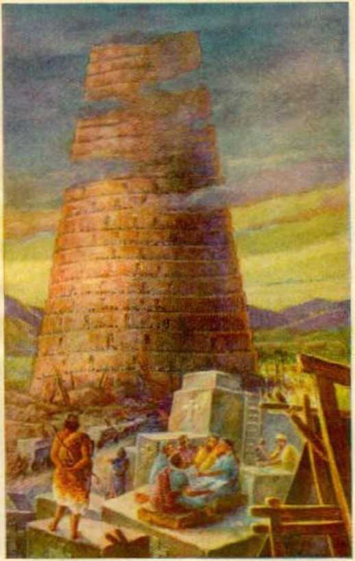RELIGION TURNING MAN FROM GOD —Genesis 11:1-9
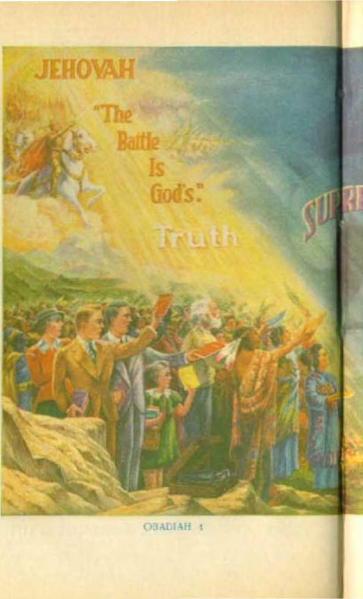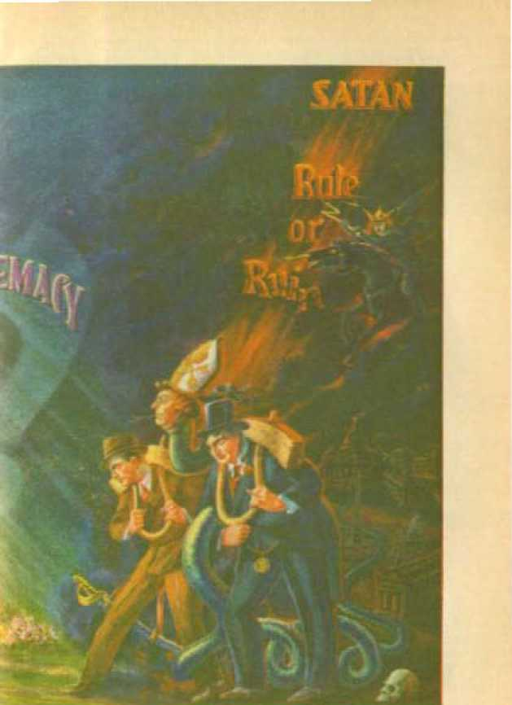PEUGirims ughtikc, the lhfd
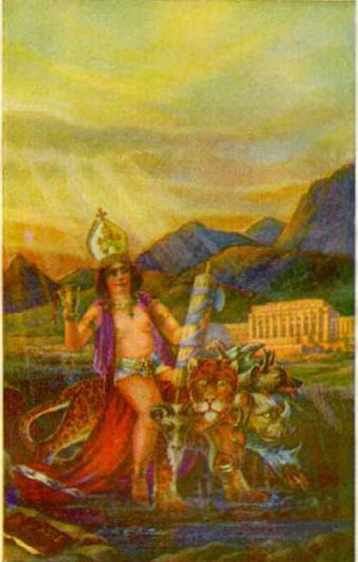RELIGION RIDES THE NATIONS -—‘Revelation 17-14
to pass. Those men indulge in what is a horrible abomination unto God, and therefore he continues to say to them: “Shall I not visit for these things, saith the Lord? or shall not my soul take revenge on such a nation? Astonishing and wonderful things have been done in the land. The prophets prophesied falsehood, and the priests clapped their hands: and my people [my pretended people, who practice religion for gain] loved such things: what then shall be done in the end thereof?”—Jeremias 5: 29-31, Douay.
The Roman Catholic Hierarchy have told the common people, or the “Catholic population”, that they must not read the Bible; and clearly such is for the purpose of keeping the people in ignorance. It must now be apparent, to all honest people of earth who have any knowledge, that the Roman Catholic organization is a religious political organization, indulging in a selfish work, which blasphemes the name of Almighty God, falsely and fraudulently represents him, carries on a racket in the name of Christ, and is the great enemy of God and of the people. Carefully now consider what follows, and the Scriptures in support of the same, by which the Almighty God foretold exactly the conditions existing in this very day showing how the Roman Catholic Hierarchy is a selfish and devilish organization, operating under the misleading title of “Christian religion”, and desperately attempting to gain control over all the peoples of the earth in order to satisfy its selfish and ambitious desires.
"SONG OF the:
HARLOT”
“Take a harp, go about the city, thou harlot that hast been forgotten: sing well, sing many a song, that thou mayst be remembered.”—Isaias 23:16, Douay.
IT IS WRITTEN in the Scriptures: “Known unto God are all his works, from the beginning of the world.” (Acts 15:18) Necessarily that means that from the time of the beginning of the wicked world, over which Satan has been and is the invisible ruler, Jehovah God knew exactly what would come to pass and he made a record thereof in advance, and which record is called ‘God’s prophecy, written down by holy men of old, as God dictated to them’. (2 Peter 1: 20, 21) There is no limitation to God’s foreknowledge and power, and, of course, he could and did write prophecy exactly as it shall come to pass. Satan had flung the challenge into God’s face, and that challenge was accepted (Job 2:1-7), and therefore God from the beginning purposed what should come to pass in his own due time, and so he caused to be written in his prophecy these words: “I have spoken it, I will also bring it to pass; I have purposed it, I will also do it.” (Isaiah 46:11) To that end God caused his chosen people, the Israelites, and those who had dealings with that people, to 104 make certain motion pictures foreshadowing or foretelling what should come to pass in the future. God caused his faithful prophets to make a record thereof, writing the same in symbolic or cryptic phrase, of what the future would bring forth.
All prophecy was dictated by Jehovah God and is written in such a manner that no creature, not even the prophets who wrote, could understand the meaning thereof until God’s due time to make the meaning clear. The outworking of God’s purpose, as recorded in the prophecies, will bring salvation to all men who remain faithfully on the side of Jehovah God, maintaining their integrity toward him, and thereby they will participate in proving that Satan is a liar. As proof that the prophets and others did not and could not understand until due time, it is written: “Of which salvation the prophets have inquired and searched diligently, who prophesied of the grace that should come unto you: searching what, or what manner of time the spirit of Christ which was in them did signify, when it was testified beforehand the sufferings of Christ, and the glory that should follow. . . . which things the angels desire to look into.”—1 Peter 1:10-12.
With the coming of the end of Satan’s world, and when his rule should be first interrupted, the time came for unfolding these prophecies. This coming takes place at the time of the second coming of Christ Jesus, the Rightful Ruler who comes to the temple of God, and through whom God makes known the meaning of his prophecies, that those who love and serve him may understand them. For centuries most of the Bible has been a puzzle to all persons, although the clergy have arrogated to themselves the sole authority to understand and interpret. It is quite evident that the clergy today have no understanding of the prophecies, because their hearts are removed from the Lord. But now the prophecies can be understood by those who really love and serve God, for the reason that God’s due time has come for them to understand it: “Now all these things happened unto them for ensamples: and they are written for our admonition, upon whom the ends of the world are come.”—1 Corinthians 10:11.
Exercising his sovereign will, God caused his prophets, who were true and faithful men, to write the prophecy: “For no prophecy ever came by the will of man; but men spake from God, being moved by the holy spirit.” (2 Peter 1: 21, Revised Version) By His prophets Isaiah, Ezekiel, Jeremiah and others God foretold that there would arise in the earth a great religious organization, which would falsely claim to be God’s representative on earth, but which in fact would be and is God’s worst visible enemy; and that said religious organization is and for a long time has been the instrument of Satan, the great enemy, which he has employed and used to deceive and mislead the people and turn them away from God, and to bring reproach upon God’s holy name. By his same prophets God foretold the means by which that great religious organization would carry on its work of racketeering and blasphemy, and what would be the end thereof. At this particular point attention is called to the twenty-third chapter of Isaiah’s prophecy, an examination of which will disclose that fraudulent and wicked religious organization, which has deceived the people for so many years and robbed them of their money and their happiness. It will be well to here carefully read from the Bible that twenty-third chapter of Isaiah and consider it in connection with what follows herein.
Jehovah, in the prophecy, is described as the great Father or Life-giver, and his organization on the earth is called “Zion”; and that organization is the “mother” of the children of God who maintain their integrity toward him: “And all thy children shall be taught of the Lord; and great shall be the peace of thy children.” (Isaiah 54:13) The good “woman”, Zion, symbolically stands for the universal organization of God. (Isaiah 54:1-12) The head or highest part of God’s organization is The house of sons’, of which Christ Jesus is the head. —Hebrews 3: 6.
Satan, the great adversary, also has an organization, which is entirely wicked, always opposed to God, and brings reproach upon his name, and is designated under the symbol of a bad woman or “harlot”. Satan’s organization is also called “Babylon”. The Devil’s “woman” or organization, called Babylon the 'old whore’ or “harlot”, gives birth to all that are opposed to God, and for that reason all her offspring are called the 'children of the Devil’ and of the harlot. (John 8:44) “And the woman was arrayed in purple and scarlet colour, and decked with gold and precious stones and pearls, having a golden cup in her hand full of abominations and filthiness of her fornication: and upon her forehead was a name written, MYSTERY, BABYLON THE GREAT, THE MOTHER OF HARLOTS AND ABOMINATIONS OF THE EARTH. And I saw the woman drunken with the blood of the saints, and with the blood of the martyrs of Jesus; and when I saw her, I wondered with great admiration.”—Revelation 17:4-6.
All organizations on the earth that are in opposition to God and his kingdom, therefore, necessarily take the name of “Babylon” and “harlot”, and those names specifically apply to the leading religious organization, the Roman Catholic church, which claims to be the mother of the so-called “Christian religion”. That mighty religious organization, foretold in the Scriptures, uses the method of harlots to induce politicians and commercial traffickers and others to fall into her arms and yield to her supposed charms. In the Scriptures this organization is likened unto a “strange woman”, “which flat-tereth with her words,” and which entices the credulous persons that are void of understanding to yield to her influence. (Proverbs 7:5-18) In the prophecies the “harlot” or religious organization is pictured as bedecking herself in gaudy and showy clothes, peculiar hats, lace and silk skirts, and other gaudy apparel, and she is represented as sauntering forth and indulging in singing seductive songs to inveigle others into her trap, that she might have personal adulation and praise of men and at the same time reap also pecuniary gain.
The prophecy of Isaiah here considered discloses the great religious organization operating in the earth; and from about the beginning of the fourth century onward and until the year 1848 (A.D.) that religious organization attained to great and commercial power and occupied a prominent place amongst the temporal powers of the earth. She was for a time deprived of her temporal power and lost much prestige, and then the prophecy discloses that later she goes forth wearing her harlot garments and deports herself as a harlot, singing seductive songs like a harlot, by which she hopes and expects to regain her temporal power and influence amongst the nations of the earth; and the prophecy shows that for a time she succeeds. Then, when she appears to have reached the zenith of her glory, she boastfully says: ‘Now I am at "peace and safety”; I need nothing.’ That boastful declaration is followed by complete destruction of that wicked system, but the destruction is performed by the hand of Jehovah God through Christ Jesus. That great prophecy is now in course of fulfillment, and when we set the prophecy itself alongside the physical facts well known, everyone who loves God and serves him can understand the prophecy and will study it with the keenest interest.
“Harlot” is properly defined as a female committing adultery or fornication indiscriminately.
In the Hebrew the word is used as applying to things spiritual, that is to say, going after idols, the committing of idolatry, thereby departing from the true worship of Jehovah God and engaging in religion or the worship of various wicked deities, all of which tends to turn men away from God and Christ.
That part of the prophecy here specifically considered related to Tyre; which name is used symbolically. Satan the Devil is designated in prophecy as “the king of Tyrus [or Tyre]”. (Ezekiel 28:12) The visible ruler of the city bearing that name was merely, as the Scriptures state, "the prince of Tyre.” (Ezekiel 28: 2, AJl.V.) Satan rebelled against Jehovah and therefore departed from the true faith toward God that he, Satan, might traffic in humankind. To do that, Satan employed religion, as hereinbefore stated. Satan began by telling doctrinal lies respecting Jehovah God, hence religious lies, and such lies constitute the main stock in trade of all religions; and which doctrinal lies are uttered by the word and authority of the Devil, and not on the authority of the Word of Jehovah God. Satan introduced his lying doctrines to Eve when he said: “Ye shall not surely die; for God [as you, Eve, call him] doth know that in the day ye eat thereof then your eyes shall be opened; and ye shall be as gods, knowing good and evil.”—Genesis 3:4,5.
Eve desired religion, and the Devil saw to it that her desire was fulfilled. She wanted Adam and herself to become mighty ones, "as gods,” and not be limited to knowing just Jehovah God’s Word. She wanted her 'eyes opened’ and to ‘know good and evil’. The mere worship of God by obedience to him was made to appear as extreme and too much in restraint of the liberty of Eve and Adam. As “gods” they would not be restrained, but would be independent and hence not subject to the “Higher Power”. Then they could do what seemed right in their own eyes, even to compromising between “good and evil”. That was the first introduction of religion to mankind. Thus Satan, “the king of Tyrus,” created and used religion as the means of gaining control of and commercializing the human race. Therefore God said to the Devil, “the king of Tyrus”: “By the multitude of thy merchandise they have filled the midst of thee with violence, and thou hast sinned: therefore I will cast thee as profane out of the mountain of God: and I will destroy thee, O covering cherub, from the midst of the stones of fire. Thine heart was lifted up because of thy beauty; thou hast corrupted thy wisdom by reason of thy brightness: I will cast thee to the ground, I will lay thee before kings, that they may behold thee.” (Ezekiel 28:16,17) The practice of religion had its beginning with Adam and Eve. Thereby they expressed the selfish desire to have that which their Creator had not given to them. The Devil’s purpose in introducing religion was to alienate the devotion of man from God; and this is conclusive proof that the Devil is the author and father of all religion.
Adam’s son Abel was never religious, because he was fully obedient to and received the approval of God the Creator. At the beginning the children of Adam were not commercial. Then Cain began to practice religion, in this, that he adopted a form of worship, but without faith in God. He had no love for God, nor for the true worship of God. He brought unto God an offering for which offering God had no respect. Cain was not ‘doing well’, and Jehovah said to him: “Sin lietli at the door.” (Genesis 4:3-7) Then followed the great crime of murder committed by Cain, and which was induced by religion. Since then religion and murder have gone hand in hand. There never has been a war but that the religionists attempted to bless the warring factions.
Politics and commerce or trade were quickly developed through religion, and this for selfish gain. Cain built a city and named it for his son Enoch, meaning “dedicated [to selfishness]”. Then the grandson of Cain became “an instructor of every artificer in brass and iron”, which were and are commercialized and used for military purposes. (Genesis 4:8-22) Due to religious practices in defiance of Jehovah God the human race became frightfully degenerate. The flood came and destroyed all practitioners of religion. Noah and his household remained true to Jehovah God, and they were the only survivors of the great deluge. Noah was “a preacher of righteousness”, but never a religionist.—2 Peter 2: 5.
In obedience to God’s commandment Noah and his sons, following the flood, began to “multiply, and replenish the earth”. (Genesis 9:1) Soon after the flood religion again came prominently to the fore. Nimrod, the great-grandson of Noah, became the visible religious leader, and “he began to be ... a mighty hunter before the Lord”. That was the practice of religion, because it put Nimrod, a creature, “before” or superior to God, the Creator, and it was a religion to all of Nimrod’s admirers and supporters. The purpose was to turn creatures away from Jehovah. With Nimrod religion began to be practiced after the flood. After religion polities was quickly employed and the political rule by Nimrod the religionist began. “And the beginning of his kingdom [political rule] was Babel.” Then commerce quickly developed, which is evidenced by Nimrod and his sons’ building cities and bringing together many people, which again required traffic amongst them.-Genesis 10: 8-12.
The building of the city and tower of Babel was induced by religion, and this is clearly shown by the language of the builders. “And they said, Go to, let us build us a city, and a tower whose top may reach unto heaven; and let us make us a name, lest we be scattered abroad upon the face of the whole earth.” (Genesis 11: 4) Bab-el, Babil and Babylon, all meaning the same thing (Genesis 10:10, margin), from the beginning stood for religion, politics and commerce, because the very express purpose was to turn men away from God in defiance of his commandment. The name Nimrod means “rebel” or “rebellious one” that rules. He named the beginning of his political kingdom Bab-el, which meant to him and his followers “The gate to God”; therefore a religion. In defiance of the religious aspect of this organization the Almighty God interfered and brought about the confusion of tongues or language, and therefore the Hebrew word for Bab-el means “confusion”. Religions have always brought confusion to the people. The word “Babylon” means the same as “Babel”. The deity or one worshiped by that people was “Bel” or “Baal”, which means the Devil, the covetous one. (See Prophecy, pages 127,128, and the scriptures there cited.) This is further proof that religion is the product of the Devil. Politics and commerce, added to religion, form the elements of Satan’s organization. Jehovah God, by his prophet Ezekiel, designates Babylon as “a city of merchants”, “a land of traffic” or commerce. —Ezekiel 17:4,12.
The fact that Jehovah named Satan the Devil “the king of Tyrus” and said to the Devil, “By the multitude of thy merchandise they have filled the midst of thee with violence,” is conclusive proof that the city of Tyre or Tyrus stands for or symbolizes the Devil’s organization, which is made up of religion (the chief element or binding tie), politics, and traffic or commerce. All these things recorded in the Word of God were written aforetime for the aid and comfort of those persons now on the earth who love and serve Jehovah God as he has commanded.
Referring now to the foregoing Scriptural definition of harlot: What religious system exactly fits the prophecies recorded in God’s Word? There is but one answer, and that is, The Roman Catholic Church organization. It is a religious organization. It claims to be the mother of the “Christian religion”, so called. All other religious organizations that take the name “Christian religion” are the offspring of the Roman Catholic organization, and therefore all are a part of Babylon. No one will even attempt to dispute the fact of the relationship of all so-called “Christian religions” to the Catholic church organization.
The Roman Catholic organization is ruled by the Hierarchy, and that organization indulges and participates in the political affairs of all the nations of earth. The Roman Catholic church is also a great commercial organization. It contains all the elements of the religious organization which began with Nimrod and of which the Devil is the father. This must not be construed to mean that all the people who are dominated by the Roman Catholic organization, or who support the same, are the willing servants of the Devil. Great numbers of Catholics have been misled and woefully deceived. The millions of people who hold to the Catholic church organization, aside from the clergy, are designated as “the Catholic population”. Great numbers of these people are sincere, and it appears to be the Lord’s will to now give them an opportunity to see the truth and take their stand on the side of God and righteousness. Nothing herein must be construed as an expression of ill will toward individuals or persons. The purpose of this publication is to expose the Devil’s deceitful methods, in order that honest and sincere persons may escape his clutches and find the way to life and happiness.
The prophecy concerning Tyre applies to the Roman Catholic religious system. Zidon, being a neighbor city, pictured other religions that consort with and operate with the Roman Catholic organization. The term “Christendom” is a word applying to those countries or nations wherein the so-called “Christian religion” is practiced. All religious systems called “Christian religion” properly take the name of the mother “harlot”; therefore the terms Babylon and Tyre apply to the lands known as “Christendom”. Zidon, having been built before Tyre, would well picture other religions practiced prior to the beginning of the Roman Catholic, and which co-operate with the Roman Catholic organization. With this introductory a detailed examination of the prophecy appearing at the 23d chapter of Isaiah proceeds; and those who really love God will pursue this study with a keen interest and, it is to be hoped, with much profit. If repetitions appeal' at different places you will see that such repetitions are necessary in order to drive home the point.
BURDEN
The prophecy of the 23d chapter of Isaiah is introduced with the words “The burden of Tyre”. That means something heavy to be borne by ancient Tyre and foreshadows a greater burden to be borne by modern Tyre. The prophecy applies in a miniature way to ancient Tyre, and it applies on a far greater scale to the Roman Catholic religious system and in that system will have its fulfillment in completion. God has his own way to conceal the meaning of a prophecy until his due time to reveal it to those who love him. It often appears that the prophecy is recorded in the inverse order, that is to say, that which applies last to the fulfillment of the prophecy in completion appears in the record first, while that which applies first appears in the divine record last. At this point it seems well to examine some historical facts as they appear in the Bible, and which relate to ancient Tyre and the cities associated with her.
Zidon was a sister city of ancient Tyre. Men who built cities immediately following the flood named them for their sons, as it appears at Genesis 10:1-6, 8,15-19. From the Scriptures it appears that Nimrod was a cousin to the Zido-nians and also to the Tyrians. Both cities practiced the religion which the Devil promulgated. It is written: “Ashtoreth the goddess of the Zidonians” (1 Kings 11:5); also, “the gods of Zidon.” (Judges 10:6) The Zidonians’ religion dates practically from the same time as the building of Babel.—Genesis 10:10,19; 11:1-9.
Tyre was built by the descendants of Canaan, the cursed one. (Genesis 9:25) The Hebrew word for “Tyre” is “Tsore”, and means “rock”. The city was built on a rock island, like a point in the sea, a short distance from the mainland of Phoenicia. It became a world-important center of commerce or traffic upon the seas. Doubtless the Devil chose this place, a rock, on which to build Tyre, in mockery of and as a mimic of Jehovah God’s organization to rule, which is built upon the Rock (Christ Jesus) taken out from Jehovah’s universal organization, Jehovah himself being the Great Rock.—Daniel 2: 34, 45.
The first mention of Tyre is at Joshua 19: 29, wherein it is called “the strong city”. It was included in the territory assigned to the tribe of Asher of the people of Israel. (Joshua 19: 24-31) Both Zidon and Tyre maintained religious temples wherein they practiced the Devil religion and where they invoked the demon gods to bless their commercial traffic. (Joel 3:4,5) The Devil was the invisible “king of Tyrus”, and the spiritual father of the visible ruler of the ancient city, which city was ruled by the representative of the Devil. That representative is called “the prince of Tyrus”. (Ezekiel 28: 2,12) Note that the “prince of Tyre” said: “I am a God, I sit in the seat of God, in the midst of the seas [hence, as a sea god].” Also note that Jehovah said to him: “Thou art a man, and not God.”—Ezekiel 28: 2.
The Devil said of himself: “I will be like the Most High” (Isaiah 14:13,14), and thus he declared himself to be equal to the Almighty God, Jehovah. Satan the Devil is designated in the Scriptures “the god of this world” (2 Corinthians 4:4), that is, the invisible, spiritual ruler. “The prince of Tyre” therefore prophetically pictures the visible representatives of the Devil who claim to be as gods. Such a claim is made by the head of the Roman Catholic religious organization. The pope of Rome or the Roman Catholic organization is designated by the Hierarchy a god, as it is stated in history. A Roman Catholic authority, Ferraris’ Ecclesiastical Dictionary, says: '‘The pope is of such dignity and highness that he is not simply a man, but, as it were, God, and the vicar of God. . . . Hence the pope is crowned with a triple crown, as king of heaven, of earth and of hell. . . . Whatsoever the pope does seems to proceed from the mouth of God. . . . The pope is, as it were, God on earth, the only prince of the faithful of Christ, . . . The pope can sometimes counteract the divine law.”
While this high-sounding claim is made by the Roman Catholic organization for the pope, mark that it does not say of what god he is the representative on earth. The fact is, he is the representative of “the god of this world”, who the Scriptures show is the Devil. (2 Corinthians 4:4) It is quite certain that the sincere ones of the “Catholic population” would not willingly class any creature as equal to Jehovah, the Almighty God. They have been deceived and misled by the claims of the Hierarchy.
The Devil has caused the people to be very superstitious or religious. Paul came in contact with the people of Athens, who were practicing the Devil religion in ignorance of the fact that they were paying homage to the Devil. To them Paul said: “Men of Athens, in all things I perceive that ye are very religious.” (Acts 17:2229, R.V.) Another translator renders the text in this wise: “How . . . reverent of the demons ye are, I perceive.” (Roth.) “Men of Athens, I perceive that you are in every respect remarkably religious.” (Weymouth') This is further corroborative proof that religion is of the Devil and is in exact and complete opposition to the commandment of Almighty God. “The man of sin” practices religion, acting contrary to the commandments of God. “That man of sin ... , the son of perdition; who opposeth and exalt-eth himself above all that is called God, or that is worshipped; so that he, as God, sitteth in the temple of God, shewing himself that he is God. Even him whose coming is after the working of Satan, with all power and signs and lying wonders, and with all deceivableness of unrighteousness in them that perish; because they received not the love of the truth [the very opposite of religion is the truth], that they might be saved. And for this cause God shall send them strong delusion, that they should believe a lie [religious teaching].” (2 Thessalonians 2: 3,4, 9-11) That company of persons forming or composing the “man of sin” relies on the teachings of men, or tradition, which make void the Word of God/—See pages 303-305.
Ancient Tyre, as shown by the Scriptures, did in fact control the commerce of the sea. “The sea” symbolically stands for the people that bear up and give support to the Devil’s religious organization. Therefore Tyre pictures religion commercialized, that is to say, religious doctrines and ceremonies and superstitions used for commercial purposes for the enrichment of a few at the expense of the credulous people, who are kept in subjection and under control. Religion traffics in humankind, selling the gullible and credulous people to the professional politicians and militarists. The religious institution known as the Roman Catholic Hierarchy claims that the head of that organization is infallible and can spiritually do no wrong, and yet it uses and practices religion and religious ceremonies to commercially gain material wealth and to wrongfully control the people. Its subjects, that is, the “Catholic population”, must worship the religious institution, and at the same time those people are forced to contribute or pay money for the up-keep of the institution. “Organized Christianity” so called, or “organized religion”, is generally understood to embrace the Roman Catholic Church, the Greek Orthodox Church, and the Protestant Church; but the Roman Catholic organization claims to be the original church, the mother of the so-called “Christian religion”, and that the other religious systems are her daughters.
The Roman Catholic Hierarchy, the ruling power of “Christian religion” so called, is the modern “prince of Tyrus”, the members of the Hierarchy even giving themselves the title “the princes of the church”. Modern Tyre, therefore, is organized religion, visibly ruling the people under its father the invisible ruler, “the king of Tyrus,” who is the Devil. Jesus gave this plain statement concerning the practitioners of religion founded upon tradition: “Ye are of your father the devil, and the lusts of your father ye will do. He was a murderer from the beginning, and abode not in the truth, because there is no truth in him. When he speaketh a lie, he speaketh of his own: for he is a liar, and the father of it.”—John 8:44.
Today Protestantism is dead so far as the protest against the practitioners of Catholicism is concerned, and the Protestant clergy, together with the rabbis of the Jewish religious organization, follow the lead of the Itoman Catholic organization and act in harmony therewith. All such practice religion, of which the Devil is the author. Ancient Tyre was an opponent of Jerusalem, God’s typical organization. Modern Tyre is the enemy and opponent of the true spiritual Jerusalem, God’s people on the earth.—Ezekiel 26:2,
“SHIPS”
Says Jehovah by his prophet: “Howl, ye ships of Tarshish.” (Isaiah 23:1) Ships are vessels, implements or instruments, such as were used by ancient Tyre to carry on its commerce and trade upon the seas, and to establish colonies in the lands round about, to be used for commercial purposes. Also its religion was thus carried and spread to other places in the earth. Tarshish appears to have been one of the colonies of ancient Tyre where traffic was carried on. Tarshish was built at the far end of the Mediterranean sea opposite from Tyre and in the land since known as Spain. “Tarshish was thy merchant by reason of the multitude of all kind of riches: with silver, iron, tin, and lead, they traded in thy fairs.” (Ezekiel 27:12) Her ships or vessels would carry the merchandise in which she trafficked. As a greedy enemy of Jerusalem it appears that Tyre used the ships under its control to carry on a slave trade: “Yea, and what have ye to do with me, 0 Tyre, and Zidon, and all the coasts of Palestine? will ye render me a recompence? and if ye recompense me, swiftly and speedily will I return your recompence upon your own head: because ye have taken my silver and my gold, and have carried into your temples my goodly pleasant things: the children also of Judah and the children of Jerusalem have ye sold unto the Grecians, that ye might remove them far from their border.”—-Joel 3: 4-6.
Applying the prophecy to modern Tyre, the Roman Catholic Hierarchy organization, the “ships of Tarshish” well picture the underpriests and subordinate organizations working under the command of the ruling Hierarchy, which is designated “The Hierarchy of Jurisdiction”. The underpriests or orders under the Hierarchy, such as missionaries, Jesuits and others, are sent to all parts of the earth by the “Hierarchy of Jurisdiction” to perform the more direct work with the people, which is called “missionary work”, and to commercialize the people and carry on a commercial work or trade in gathering in money for the up-keep and support of the Hierarchy. The monks, Jesuits, missionaries, priests, and all like agents work under the command or direction of the “Hierarchy of Jurisdiction”, and thus such are in symbol represented as “mariners” of the sea, and the wise men are the pilots directing the movement of these symbolic ships: “The inhabitants of Zidon and Arvad were thy mariners: thy wise men, 0 Tyrus, that were in thee, were thy pilots.” —Ezekiel 27:8. .
Such vessels or instruments of the Hierarchy are used to hoodwink the common people and to deal with them and to keep them in slavery to the ruling power of the organization. Such underlings do the work of manipulating the common people or so-called “Catholic population”, who pay the bills, and the “Hierarchy of Jurisdiction” reaps the commercial benefits. In his book entitled The Faith of Our Fathers, published first in 1876, Cardinal Gibbons says: “The number of Catholics in the world is computed at three hundred millions.” (Page 10) The claim is now made that there are more than 20,000,000 of the “Catholic population” in the United States alone. Such constitute that which is symbolically designated “the sea”, who bear up and support the organization; and the work of gathering the “Catholic population” under the organization and collecting the revenue from them is done chiefly by the underlings or underpriests, which vessels or “ships” ride upon the sea.
The following is a sample of what is constantly being done by the priests: A Catholic priest known as “Anthony O.M.C.”, operating from Kentucky, sent out a letter to the credulous and superstitious believers in the false “purgatory” doctrine of the Catholic religion, which letter is dated Louisville, Kentucky, September 21,1936. That letter calls upon the credulous ones in these words, to discharge ‘your duty towards your dear departed, who, helpless in their purgatory prison, crave the relief only Masses and Prayers can bring them. . . . Your offering will help to complete the Purgatorial Purse'. Attached to that letter is a paper or blank to be filled out and signed by all receiving it, setting forth the amount of money contributed for the purgatorial purse, and on that paper appear these words: “It is suggested that you send out or pledge an offering of 25c for each name listed.” The paper or slip contains space for more than twenty names. Many of the “Catholic population” will contribute a much larger sum than that suggested. But suppose each one contributes 25c; that, according to the number of Catholics in the United States, would mean five million dollars, and, according to Cardinal Gibbons’ estimate of the number in the world, would be more than fifty million American dollars annually. A very unique commercial scheme. It has been well said that the Roman Catholic Hierarchy is the richest in material wealth of any institution on earth. Religion, commercialized, is truly the Devil’s scheme, and God declares it so.—Ezekiel 28:16-18.
“HOWL”
The word “howl”, as appears in the prophecy, clearly shows that a great calamity will come upon modern Tyre, that is, the Roman Catholic Hierarchy organization. A howl means a wail of great distress or despair. When is that howl to begin? From the Scriptures it seems certain that the complete fulfillment of this prophecy is at the beginning of Armageddon, that is, the beginning of the “strange act” of the Almighty God. (Isaiah 28: 21) The reason for this conclusion is stated as follows: It appears that Jehovah caused his prophecy to be here recorded in a manner to conceal the meaning thereof until his due time for the understanding to be given to his people. In the prophecy here under consideration the command to “howl” (verse 1) is recorded in the prophecy before mention is made of the “seventy years” and the singing of "the song of the harlot” set forth in Isaiah 23, verses fifteen and sixteen. That does not mean, however, that in the complete fulfillment of the prophecy the howling must precede the “seventy years”, nor that the howling must continue for a period of seventy years either before or after.
As an example of how Jehovah causes prophecy to be recorded and revealed, attention is called to the drama of Ahab and Jezebel, both of whom were slain before the seventy sons of Ahab and also before the worshipers of Baal were slain (2 Kings 9:1-37; 10:1-28); but not so in the complete fulfillment of that prophetic picture. The fulfillment shows the acts last recorded picture that which was first fulfilled. (See Vindication, Book Three, pages 41-53.) The prophecy of the “seventy years” mentioned by Isaiah, in 23:15, corresponds with a like prophecy of “seventy years” prophesied by Jeremiah. (Jeremiah 25) What is there described by Jeremiah as coming to pass at the end of seventy years, is actually fulfilled in completion prior to Armageddon. Attention is called to this here merely to show that the prophecy at verses 1-14 is not necessarily fulfilled before that part of the prophecy mentioned in verses 15-17 in Isaiah 23.
Some time after the destruction of ancient Jerusalem in 606 B.C. Nebuchadnezzar laid siege to and seriously damaged ancient Tyre. There was then some howling. (Ezekiel 29:18) '‘For thus saith the Lord God, Behold, I will bring upon Tyrus Nebuchadrezzar king of Babylon, a king of kings, from the north, with horses, and with chariots, and with horsemen, and companies, and much people.’’ (Ezekiel 26:7) “Behold, I will send and take all the families of the north, saith the Lord, and Nebuchadrezzar the king of Babylon, my servant, and will bring them against this land, and against the inhabitants thereof, and against all these nations round about, and will utterly destroy them, and make them an astonishment, and an hissing, and perpetual desolation. ... To wit, Jerusalem, and the cities of Judah, and the kings thereof, and the princes thereof, to make them a desolation, an astonishment, an hissing, and a curse; as it is this day; . . . and all the kings of Tyrus, and all the kings of Zidon, and the kings of the isles which are beyond the sea.” (Jeremiah 25:9-35) This great distress mentioned by the prophets above quoted clearly applies to Armageddon.—Revelation 16:13-16.
In the year 1848 distress came upon the Roman Catholic organization; also in 1870, and continued more or less until 1918; but such as then occurred could in no way compare with what will come to pass at Armageddon. The snarling or howling that took place in those years could in no way compare with the howl that will go up when Jehovah lays waste modern Tyre. When Jehovah, by his prophet, says: “Howl, ye ships of Tarshish, for it [Tyre] is laid waste”; when that comes to pass, such will cause modern Tyre to really howl. That howl will come when the Greater-than-Nebuchadnez-zar, Christ Jesus, the Executor of Jehovah’s purposes, the Mighty Warrior, goes into action at the beginning of Armageddon. It is true that there was an attempt by world powers in 1848 and 1870 to lay waste the Roman Catholic Hierarchy organization, but that did not succeed. The permanent laying it waste will be such as to produce a mighty howl, and that will be at the beginning of Jehovah’s “strange act”.—Isaiah 28:21.
It is the command of Jehovah given to the ships of Tarshish to “howl, . . . for it [Tyre] is laid waste, so that [in Tyre] there is no house, no entering in”. According to Rotherham the text is rendered thus: “For it is laid too waste to be a haven to enter.” In other words, there is no haven to enter Tyre, because Tyre is destroyed. The howl is because incoming ships or vessels of Tarshish, laden with merchandise, could find no berth nor wharf, nor warehouse in which to put the merchandise intended for Tyre. Such is due to the fact that Tyre and her once favorable position in commerce and intercourse with other countries are ruined and the markets thereof wrecked. This is further proof that “the prince of Tyras is a man and not a god’. (Ezekiel 28:9) It will then clearly appear that the text (Matthew 16:18) often misquoted, to wit, The gates of hell cannot prevail against it,’ has no application whatsoever to the Roman Catholic church organization, but that such Scriptural text has been wrongfully applied by the Roman Catholic Hierarchy to deceive the people, and that misapplication has resulted in deception and great injury to the people. No more will the Roman Catholic Hierarchy organization carry on its work of 'encompassing sea and land to make proselytes for hell’ (Matthew 23:15), because the modern Tyre will be done. That of necessity will come about by reason of the “strange act” of Jehovah in completely destroying modern Tyre, which is the Roman Catholic organization, so that none can seek her or enter her thereafter.
The “land of Cyprus”, or island sometimes called “Chittim”, was northwest of Tyre. Paul sailed from Zidon “under Cyprus, because the winds were contrary”. (Acts 27:4) It was a near-by colony dependent upon Tyre. It was originally colonized by the Phoenicians from Tyre and Zidon. Says the prophet of God: “From the land of Chittim [Cyprus (Roth.)] it is revealed to them.” (Isaiah 23:1) This would mean that the ships of Tarshish were bound for Tyre and laden with commerce and, while putting in at the port of Chittim or Cyprus, learned of the desolation of Tyre and that their ships were out of a job because Tyre was done for. The report of the fact shakes greatly the
dependent colony. In this connection the prophet of God says: “Thus saith the Lord God to Tyrus, Shall not the isles shake at the sound of thy fall, when the wounded cry, when the slaughter is made in the midst of thee? Now shall the isles tremble in the day of thy fall; yea, the isles that are in the sea shall be troubled at thy departure.” (Ezekiel 26:15,18) “All the inhabitants of the isles shall be astonished at thee, and their kings shall be sore afraid, they shall be troubled in their countenance. The merchants among the people shall hiss at thee; thou shalt be a terror, and never shalt be any more.”— Ezekiel 27:35,36. .
Applying this part of the prophecy to modern Tyre, the Roman Catholic organization, as it properly applies, it will be seen that all who have depended upon the Roman Catholic organization, all who have had dealings with the Hierarchy for selfish gain, either political or commercial or otherwise, will be greatly grieved and shaken. For many years that religious organization has boastfully said: 'The gates of hell shall never prevail against us’; and now not only will those seeing it go down be shocked, but to them it will appear very strange that such a calamity could come to an organization that claimed to represent God. This indicates that at the very beginning of Armageddon the religious organizations, as such will perish and others seeing it will wail. “And in their wailing they shall take up a lamentation for thee, and lament over thee, saying, What city is like Tyrus, like the destroyed in the midst of the sea?” (Ezekiel 27: 32) “The merchants of these things, which were made rich by her, shall stand afar off for the fear of her torment, weeping and wailing, and saying, Alas, alas, that great city, that was clothed in fine linen, and purple, and scarlet, and decked with gold, and precious stones, and pearls! For in one hour so great riches is come to nought. And every shipmaster, and all the compamy in ships, and sailors, and as many as trade by sea, stood afar off, and cried when they saw the smoke of her burning, saying, What city is like unto this great city! And they cast dust on their heads, and cried, weeping and wailing, saying, Alas, alas, that great city, wherein were made rich all that had ships in the sea by reason of her costliness! for in one hour is she made desolate.”—Revelation 18:15-19.
Religion has been a means employed by the Devil to build his mighty organization on earth, which has deceived millions; and religion and religionists, according to the prophecies of God, will be the first of Satan’s organization to be destroyed at the beginning of Armageddon.
DUMFQUNDED
Jehovah, by his prophet, then addresses the supporters of Tyre, both ancient and modern, in these words: “Be still [silent (margin), dumb (Roth.)), ye inhabitants of the isle; thou whom the merchants of Zidon, that pass over the sea, have replenished.” (Isaiah 23:2) This silence or dumbness is because of Jehovah’s “strange act” then begun. (Isaiah 28: 21) Many credulous
and gullible persons, and particularly the politicians and commercial giants, now look to the Itoman Catholic Hierarchy, the modern Tyre, to pull them through their difficulties, but when they see Jehovah strike down that organization, which has claimed to be invulnerable, they will be greatly astonished and dumfounded. Then in distress they will say, according to God's prophet: “We looked for peace, but no good came; and for a time of health, and behold trouble!”—Jeremiah 8:14,15.
The words of Isaiah’s prophecy here considered, to wit, “ye inhabitants of the isle” (vs. 2), manifestly mean in the final fulfillment those near the Hierarchy and who have been looking to the Hierarchy for help, protection and safely, even as Chittim or Cyprus was near to Tyre and depended upon Tyre. Those close or nearby and dependent upon the main organization, being of the same stripe, picture the Jewish and Protestant clergy and other allies of the Hierarchy who tag along behind the Hierarchy at the present time to do the bidding of the old “whore”. (Ezekiel 27:8) They have helped to replenish the coffers of the Hierarchy, and hence Jehovah’s “strange act” is against not only Tyre but the Zidonians and other allies, as he declares in his prophecy: “And all the kings of Tyrus, and all the kings of Zidon, and the kings of the isles which are beyond the sea.” —Jeremiah 25: 22.
Today the so-called “Protestants” and the Yiddish clergy openly co-operate with and play into the hands of the Roman Catholic Hierarchy like foolish simpletons and thereby aid the Hierarchy to carry on her commercial, religious traffic and increase her revenue. Commercial religion is the stock in trade of all such merchants. The Hierarchy takes the lead, and the simpletons follow. The Hierarchy is now taking the lead in compulsory flag-saluting, and in building images or monuments, such as what is now widely advertised to be built at Washington, D. C.; and the clergy of the so-called “Protestant” and Yiddish organizations fall in line and do what they are told, and when the “sackbut” sounds they fall down and worship. (Daniel 3:5) Poor simpletons!
The Devil’s purpose, and therefore the purpose of his instruments, who are “enemies”, in thus making merchandise of the people, is to keep them in subjection and to build up and support the Roman Catholic organization on earth. That part of the prophecy concerning “hire” or “merchandise” appears to have fulfillment during the period of time when the harlot sings, as marked in the record at Isaiah 23:15,16. This adds further force to the conclusion that prophecy cannot be understood until fulfilled or in course of fulfillment. But let it be understood and kept in mind that this prophecy will not be appreciated by merely casual reading. Careful study is required. The fulfillment does not come chronologically in the order of recording of the prophecy; but it appears better here to proceed with the study in the order in which the prophecy is recorded in the Bible, rightly dividing it in harmony with the facts and the Scriptures, and thereby locate the time of the fulfillment. In brief the fulfillment of the prophecy from verses 15 and 16 precedes the fulfillment of the preceding verses of the same chapter. Read carefully the entire scripture text at Isaiah, twenty-third chapter.
The peoples of earth, likened to the sea that bears up the ships of commerce, have been used as merchandise and for gain by the big clergy of the religious systems, which are brought into being by Satan the god of this world. Says Jehovah by his prophet in connection herewith: “And by great waters the seed of Sihor [the grain of Shihor (Roth.)], the harvest of the river [harvest of the Nile (R.E. and Roth.)], is her revenue; and she is [was (R.7.)] a mart of nations.” (Isaiah 23:3) The Lord said to Joshua: “Sihor ... is before Egypt.” (Joshua 13:3) Egypt was a commercial world power. Tyre had dealings with Egypt, which symbolizes the Devil’s world power and which was brought into action and employed to reproach the name of Jehovah God.
It is written concerning ancient Egypt that its annual revenue amounted to approximately $20,000,000 or that which is equivalent to that sum. Egypt was a great market for the commerce of the nations. Compare these facts with the commercial traffic of the Roman Catholic Hierarchy. The Roman Catholic Hierarchy has, and for a long while has had, dealings with Big Business or mighty commerce of the world, members of the Hierarchy being large investors in the commercial traffic of the world. The Boman Catholic Hierarchy has been and is a market for all the world, dealing in and manipulating the people, and particularly the “Catholic population”, and doing this for its own selfish gain. Politicians of all nations find the Hierarchy both politically and financially advantageous to them. Dictators in particular find a strong ally in the Hierarchy, and it will be generally found that these dictators are backed up and supported and put in power by the Hierarchy. Other religious organizations at the present, the Yiddish and Protestants, deal with the Boman Catholic Hierarchy because it appears to them to be to their selfish advantage.
Will the Yiddish and the Protestant clergy ultimately find it advantageous to link themselves to the Hierarchy and be dictated to by the Hierarchy of the Catholic organization? In answer to that question Jehovah says by his prophet: “Be thou ashamed, O Zidon [Turn thou pale, 0 Zidon (BoiZ?.)]; for the sea hath spoken, even the strength of the sea, saying, I travail not, nor bring forth children, neither do I nourish up young men, nor bring up virgins.”—Isaiah 23: 4.
Instead of being benefited those dupes and allies of the Boman Catholic Hierarchy will become pale of face and grow sick when they see the power of the Hierarchy yielding to Jehovah’s “strange work”, now being carried on, and they will be greatly shaken with shame and humiliation when they observe the beginning of Jehovah’s “strange act”. Becently the president of the United States has advised the adoption
of the "good neighbor” policy between all religious organizations and that they proceed in unity in their course of action. That will prove to be very bad advice, as many will later discover. The Roman Catholic Hierarchy now take the lead in an aggressive campaign against all who do not fall in line with their schemes, and in this campaign the other religionists trail along. Everyone today who will not support the religionists is denounced as "red” or “communist”, even Jehovah’s witnesses being classed by the religionists as such, although those religionists making these false charges well know that Jehovah’s witnesses have no part whatsoever with the political affairs of the world. The Hierarchy follow the course of their father the Devil in making such false charges.
Author
religion
Under the Devil's wily and deceptive influence the people in general, which are used to bear up and support the religious systems that engage in traffic, have been deceived and blinded into following such a course. The time is certain to come, however, when the following part of the prophecy will be fulfilled, to wit: “The sea hath spoken, even the strength of the sea”; that is to say, the sincere people who love righteousness will break away from the religious prison house and speak against that wicked organization. Those who compose the “great multitude” (Revelation 7: 9), as waters, are first turned away from the support of the religionists and give their devotion to Jehovah God and Christ Jesus. Then will follow in due time the masses who will renounce and turn away from and against the religionists. This prophecy shows that in God’s due time the relationship of the sincere people with the religionists will be broken off. “The sea” (that is, the people used and exploited by the Devil to mother, nourish and support the religious systems, and who have been ruled) become the rulers or “kings” that will turn against the old “whore” and disclaim any relationship whatsoever to her.—Revelation 17:16-18.
Nebuchadnezzar, after laying siege to ancient Tyre, invaded Egypt. (Ezekiel 29:18-20) The fall of religionists, particularly the Roman Catholic Hierarchy organization, will precede the destruction of the political and commercial elements of Satan’s visible organization, and such will bring great pain and astonishment to the latter; as it is written: “As at the report concerning Egypt, so shall they be sorely pained at the report of Tyre.” (Isaiah 23:5) The report here mentioned is concerning the beginning of Jehovah’s “strange act”. This text, according to the Revised, Version, reads: “When the report cometh to Egypt, they shall be sorely pained at the report of Tyre.” The fall of the Roman Catholic Hierarchy, the religious organization, will bring great pain to the remaining portions of Satan’s visible organization, because they will observe the ability of Jehovah’s Executioner to perform Jehovah’s “strange act” at Armageddon, and it will be evident to the remaining ones that they have no power to protect themselves and that their turn for destruction is next. This conclusion is abundantly supported by other scriptures.-Revelation 18: 9-19.
Today Jehovah’s witnesses in every part of the earth are being persecuted by the Roman Catholic Hierarchy and allies, and the Hierarchy religious organization is the chief visible instrument of the Devil which brings into action against Jehovah’s witnesses the political and commercial elements, and together they seek to make the burden great upon the back of those who love and serve Jehovah. And now in this hour of great distress the true people of Jehovah God greatly rejoice because, true to the promise of the Almighty God, greater hope and strength is given to them by revealing to them an understanding of his prophecy. “The Lord will give strength unto his people; the Lord will bless his people with peace.” (Psalm 29:11) Those who now devote themselves entirely to Jehovah and his King, and who continue to maintain their integrity toward God, rejoice to be counted worthy of suffering some of the reproaches that came upon Christ Jesus. They are fully advised that Christ Jesus the King is upon his throne and has gathered unto himself those of his royal house, whom he leads and comforts. Now Jehovah through Christ Jesus is revealing to his people a knowledge and appreciation of his prophecies hidden in times of old, and by this knowledge the faithful have increased hope.
Jehovah’s due time having arrived to make clear the meaning of such prophetic pictures, he grants to those who love and serve him the privilege of seeing the meaning thereof. This privilege is not given to the selfish and supercritical ones, but to those who love God. In these “perilous times” God grants this favor to those who faithfully serve him, that they may have comfort and that their hope may be strong. The Roman Catholic organization, the mother and leader of religious organizations, is very arrogant, boastful, scornful and vicious, and acting in utter defiance of God’s commandments. The vessels or instruments employed by the Boman Catholic Hierarchy who do the Hierarchy’s bidding likewise act viciously and without regard to the rights of others and wholly contrary to the Word of God. The prophecy at the 23d chapter of Isaiah, at this point, continues to speak of the conditions of the Hierarchy and their allies, and the time is immediately before and at the beginning of Armageddon.
Chittim was the island nearest to Tyre, while Tarshish was at the opposite end of the Great or Mediterranean sea. To get from Tyre to Tarshish one must travel the full length of the Mediterranean sea. It is understood that Tarshish was a colony situated on the coast of Spain and belonging to Tyre and Zidon. Jonah took ship for Tarshish, in order to flee far away from his assigned duty. (Jonah 1:3) Says the prophet (Isaiah 23:6): “Pass ye over to Tarshish; howl, ye inhabitants of the isle.” “Pass ye over to Tarshish, howl, ye inhabitants of the coast.” —Rotherham.
In the fulfillment of this part of the prophecy the lesser and dependent parts of the Catholic organization, whether far from the mother organization or near thereto, would have reason to howl and lament over the destruction of the Catholic Hierarchy, the modern Tyre. Missionary establishments, operating in the most distant parts of the earth from Rome, will be searched out and reached by the hand of Jehovah, because Jehovah declares he will search out all his enemies. The Hierarchy is the enemy of Jehovah and of his organization: “Thine hand shall find out all thine enemies; thy right hand shall find out those that hate thee. Thou shalt make them as a fiery oven in the time of thine anger: the Lord shall swallow them up in his wrath, and the fire shall devour them. Their fruit shalt thou destroy from the earth, and their seed from among the children of men.
For they intended evil against thee; they imagined a mischievous device; which they are not able to perform.” (Psalm 21:8-11) At the beginning of Armageddon Jehovah will execute that hypocritical organization.
The prophecy is then addressed to the subordinate parts of the enemy organization, the modern Tyre: “Is this your [Tarshish’s] joyous city [mother organization], whose antiquity is of ancient days? her own feet shall carry her afar off to sojourn.” (Isaiah 23:7) The Catholic Hierarchy is not at all joyous in Jehovah, although hypocritically and falsely claiming to represent God. It is joyous in its own merchandise and profits in the gay markets dealing in humankind. The Hierarchy and allied clergy employ all kinds of worldly schemes to entice the people and cause them to give up their money. In the church buildings they have, at stated intervals, concerts, Christmas cantatas, bazaars, socials, dances, athletics and like things in order to attract the people to join their church congregations and to relieve themselves of their money for the benefit of the religionists.
The words of the prophet are in the nature of a question addressed to the smaller parts of the Roman Catholic organization, calling direct attention to the vanity of the Hierarchy. To these smaller ones the prophet, in substance, says: ‘Have you anything to exult in now, seeing that modern Tyre, the Roman Catholic Hierarchy and allies and dupes, is in a wrecked and spoiled condition? You boasted that it was so solidly built and fortified that nothing could do it serious damage. You boasted in its strength and relied upon it for protection and salvation and therefore automatically did its bidding. Modern Tyre, the Roman Catholic organization, has failed you.’ Therefore says the prophet concerning Tyre: “Whose antiquity is of ancient days.” Tyre was preceded by Zidon, this latter city being mentioned in Genesis the tenth chapter in connection with Babel, and it may well correspond to the religionists of Pagan Rome, which merged into Papal Rome. Tyre, even in the days of Joshua, was called a “strong city” (Joshua 19:29), and must have been founded on its rocky ground before the time of Joshua. The Roman Catholic Hierarchy claims that theirs is the oldest, the mother and the true church organization, because it is the oldest religious organization of “Christendom”, and they cite in support of this claim that its antiquity dates from the time of Christ. It claims an unbroken chain of apostolic successors back to the apostle Peter; it calls itself “the Eternal City”.
But what shall be the end of the Roman Catholic Hierarchy organization, that is, modern Tyre? Jehovah, by his prophet, says: “Her own feet shall carry her afar off to sojourn,” (Verse 7) Rome thinks she is too ancient to ever have to move; that she is so thoroughly and completely entrenched in her position that no storm can move her bulwarks; and for this reason she claims to be invulnerable. Further speaking by his prophet, Jehovah says: “Behold, the Lord hath a mighty and strong one, which, as a tempest of hail, and a destroying storm, as a flood of mighty waters overflowing, shall cast down to the earth with the hand. The crown of pride, the drunkards of Ephraim, shall be trodden under feet. . . . When the overflowing scourge shall pass through, then ye shall be trodden down by it.”—Isaiah 28: 2, 3,18.
Her arrogance and boasting attitude will bring her no good. Modem Tyre has existed for a long while and has practiced her wickedness with little hindrance, and in the minds of her mighty men is entirely secure in her position; but, according to Rotherham: “Though from ancient days is her antiquity, yet shall her own feet carry her away, far off to dwell,” that is, to remain permanently, by being removed from her place of existence into destruction, and there shall she remain for ever.
By his prophet Joel Jehovah speaks of the ill-treatment to which his covenant people have been subjected by modern Tyre, the Hierarchy of Rome. In this prophecy “Judah” and “Jerusalem” stand for the people of God’s organization. During the World War the religionists, led by the Roman Catholic Hierarchy, attempted to rid the earth of those who are and were devoted to Jehovah. Concerning this Jehovah says by his prophet: “Yea, and what have ye to do with me [Jehovah], 0 Tyre, and Zidon, and all the coasts of Palestine? will ye render me a recompence ? and if ye recompense me, swiftly and speedily will I return your recompence upon your own head: . . . The children also of Judah and the children of Jerusalem have ye sold unto the Grecians, that ye might remove them far from their border.”—Joel 3:4-6.
The day for the Hierarchy to pay comes, and the Lord God says to that Roman, scornful, boastful and wicked religious organization, which has ill-treated his faithful children: “Behold, I will raise them out of the place whither ye have sold them, and will return your recompence upon your own head: and I will sell your sons and your daughters into the hand of the children of Judah, and they shall sell them to the Sabeans, to a people far off: for the Lord hath spoken.”—Joel 3:7,8.
Jehovah always makes good his word. The day of recompense is absolutely certain to come, and the pay-off will be at the beginning of Armageddon, and the Hierarchy will find no way to avoid it. “Thus saith the Lord, For three transgressions of Tyrus, and for four, I will not turn away the punishment thereof; because they delivered up the whole captivity [Jehovah’s people] to Edom, and remembered not the brotherly covenant; but I will send a fire on the wall of Tyrus, which shall devour the palaces thereof.”—Amos 1: 9,10.
With the beginning of Armageddon modern Tyre will cease, and no more will ‘her feet carry her’ and her missionaries to the many lands of the earth, there to seek new markets in which to exploit the people, but she will go to the place where she will remain permanently. Of that crowd of religious leaders, the Hierarchy, priests and other clergy, Jesus said: “Serpents, progeny of vipers! how can you escape the judgment of the Gehenna?”—Matthew 23:33, Emphatic Diaglott.
The proselyting work of the Roman Catholic Hierarchy and her vessels or instruments will cease then for ever. The words of Jesus will then appear applicable and appropriate to the Hierarchy and her supporters and tools: “Woe unto you [promoters and rulers of modern Tyre], scribes and Pharisees, hypocrites! for ye compass sea and land to make one proselyte; and when he is made, ye make him twofold more the child of [Gehenna (Diag.)] than yourselves.”—Matthew 23:15.
A question is then propounded by the prophet of Jehovah to all who have the hearing ear: “Who hath taken this counsel against Tyre, the crowning city, whose merchants are princes, whose traffickers are the honourable of the earth?” (Isaiah 23:8) Another rendering of this text is: “Who hath purposed this against Tyre, the bestower of crowns?” (R.V.and Roth.) These words further identify the Roman Catholic Hierarchy, because for centuries the Roman Catholic Hierarchy has claimed that the pope has the power and the authority to crown and to depose earthly kings. To those thus crowned and who have submitted to the domination of the religionists, the Hierarchy has been and is the “higher powers”.
The Hierarchy demands the full obedience of each one of its underclergy, as well as obedience of the political rulers of many lands, and the Hierarchy bestows titles upon whomsoever that organization chooses to honor, and thereby makes men “princes of the church”, and these “traffickers”, acting at the behest of modern Tyre, are the “honourable [men] of the earth”. When one of those Roman princes visits America, for instance, the politicians, with bands of music and flags, meet him at the ship’s dock, bow down, kiss his ring, and perform a lot of other senseless religious ceremonies. The Roman Catholic Hierarchy demands that the political rulers of the earth, the smaller priests, and the “Catholic population”, the common people, shall regard the Hierarchy and speak of its members as “spiritual princes”, who are in no wise subject to political rulers. Even a king or an earthly monarch is permitted to kiss the big toe of the so-called “holy father”, the head of the Hierarchy.
Manifestly the question propounded at verse eight above quoted is to rivet attention upon the Hierarchy: “Who hath purposed this against Tyre?” The answer to that question appears below, and the language employed shows that it is at the time when Jehovah is exercising his power to punish the workers of iniquity, that is, modern Tyre, the Devil’s chief instrument. The answer is: “The Lord of hosts hath purposed it, to stain the pride of all glory, and to bring into contempt all the honourable of the earth.” (Verse 9) God plainly states: “I have purposed it, I will also do it.” (Isaiah 46:11) Let no one doubt that God will carry out his purpose. Modern Tyre is made up of an arrogant, boastful, proud and scornful company and demands and receives high esteem and the plaudits of men. Jehovah’s decree upon such is announced by the Lord Jesus, to wit: “That which is highly esteemed among men is abomination in the sight of God.” (Luke 16:15) “Whosoever shall exalt himself shall be abased.” (Matthew 23:12) These fixed rules of Jehovah are not subject to change and are certain to be enforced against all who come within the scope thereof, and this certainly includes the Roman Catholic Hierarchy. It is Jehovah who has purposed the destruction of modern Tyre, the great religious “harlot” organization. And why? The Scriptural answer is: “To stain [(A.R.V., margin) profane] the pride of all glory.” Certainly this means all glory that has been taken away from God, to whom it belongs, and been bestowed upon creatures.
The men composing the Roman Catholic Hierarchy, or modern Tyre, ‘clothe themselves in garments of glory and beauty’ and then “strut their stuff” in public places to be seen of men, that they may receive honor and glory of men. They consider that they are granting a great privilege to men to kiss their finger or toe. They call themselves by high-sounding titles and claim that their glory and “holy” beauty is so sacred that it is a dreadful sin for anyone to profane or criticize their attitude or to teach the people anything of the Bible that calls attention to God’s denunciation of religious hypocrisy. The proclamation of God’s truth quoted from the Bible “shocks the religious susceptibilities” of those hypocritical clerical gentlemen and of all their allies.
It is written concerning Jehovah and his heavenly organization: “Out of Zion, the perfection of beauty, God hath shined.” (Psalm 50:2) The Hierarchy fraudulently seizes upon this text and misapplies it, assumes to stand in the place of God, and claims for those of the Hierarchy the beauty and glory that belong only to the Lord. Therefore Jehovah declares his purpose to “humble the pride of all beauty”. —Rotherham.
That religious, mercantile, political, arrogant, extremely selfish and proud organization shall fall, as Jehovah God has decreed, to wit: “Say unto Tyrus, 0 thou that art situate at the entry of the sea, which art a merchant of the people for many isles, Thus saith the Lord God, 0 Tyrus, thou hast said, I am of perfect beauty.” (Ezekiel 27: 2, 3) The Hierarchy thus poses before all nations of earth. Her allies and her dupes sing of her glory and beauty, whether the singers believe it or not; the politicians do it because they want political support. All these vessels or instruments supporting the Hierarchy fall in line and shout of her glory and beauty. To them Jehovah says: “The ships of Tarshish did sing of thee in thy market; and thou wast replenished, and made very glorious in the midst of the seas.”—Ezekiel 27: 25.
But the day is not far distant when those singers and glorifiers of the Hierarchy and all her allied religionists will come to a sorrowful end, because Jehovah says: “Thy riches, and thy fairs, thy merchandise, thy mariners, and thy pilots, thy calkers, and the occupiers of thy merchandise, and all thy men of war, that are in thee, and in all thy company which is in the midst of thee, shall fall into the midst of the seas in the day of thy ruin. The suburbs shall shake at the sound of the cry of thy pilots. And all that handle the oar, the mariners, and all the pilots of the sea, shall come down from their ships, they shall stand upon the land; and shall cause their voice to be heard against thee, and shall cry bitterly, and shall cast up dust upon their heads, they shall wallow themselves in the ashes. And they shall make themselves utterly bald for thee, and gird them with sackcloth, and they shall weep for thee with bitterness of heart and bitter wailing. And in their wailing they shall take up a lamentation for thee, and lament over thee, saying, What city is like Tyrus, like the destroyed in the midst of the sea?”—Ezekiel 27:27-32.
To all the peoples of this world, who stand on the side and see the fall of the mighty religious organizations, it will seem 'very strange’ that God would expose and destroy such, or that which the clergy have called by the name of the Lord. For many centuries the Roman Catholic Hierarchy has assumed the name of God and Christ, and claimed to be the only true organization of the Lord. But the Lord God marks their hypocrisy and says concerning that hypocritical organization: “Therefore will I do unto this house, which is called by my name, wherein ye trust, and unto the place which I gave to you and to your fathers, as I have done to Shiloh.” (Jeremiah 7:14) God completely destroyed all religious practices at Shiloh which bore his name.
Who on the earth today claims the exclusive right to use the radio and to speak to the people thereby, and to tell the people what they shall or shall not believe and do? Who are the ones claiming to be “the honourable [men] of the earth”, entitled to the praise, honor and acclaim of all others? What class of men scornfully push aside all those who dare speak of God's Word without first obtaining their permission? To these questions the answer is, The Roman Catholic Hierarchy, and their allies or close associates. Jehovah declares that it is his purpose to “bring into contempt all [these] honourable of the earth”, or “to make of little esteem” such exalted ones. (Roth.) The Hierarchy, the main organization, the Jesuits, the Nazis, the Fascists, the allied clergy, are the ones of whom the Lord speaks when he says: “Whose traffickers are the honourable of the earth.”—Verse 8.
And what means will Jehovah employ to bring such “honourable” men into contempt? Such so-called “honourable” men are the instruments of Satan and therefore enemies of God, and in the battle of the great day of God Almighty, in the day of his wrath, he will destroy them. “Thou shalt make them as a fiery oven in the time of thine anger: the Lord shall swallow them up in his wrath, and the fire shall devour them. Their fruit shalt thou destroy from the earth, and their seed from among the children of men. (Psalm 21: 9,10) Jehovah’s “strange work” is now exposing the duplicity and hypocrisy of those self-styled “honourable” ones; and his “strange act”, at the beginning of Armageddon, will rid the earth of that hypocritical religious organization and will proceed to the complete wrecking of the entire organization of the Devil. As Armageddon begins, the destruction of religionists will appear to all who are not on the side of Jehovah and his King as “strange”, very “strange”.—Isaiah 28: 21.
The Roman Catholic Hierarchy, that is, “the Hierarchy of Jurisdiction,” which rules, claims to be the mother organization. Her supporters, agents, tools, vessels and instruments used, are her offspring or “daughters”. Jehovah, by his prophet, now addresses the “daughter” class and says: “Pass through thy land as a river fas the Nile (R.P. and Rof/i.)], 0 daughter of Tarshish: there is no more strength.” (Isaiah 23:10) The river Nile passes through the entire length of Egypt and from time to time overflows its banks and floods the country round about; so Jehovah says to those addressed: “Pass through,” that is to say, make complete inspection of the “work” and “act” of Jehovah and its effect; go and see for yourselves and verify all that his “strange work” does concerning the Hierarchy and other clergy.
Jehovah has called his people to “rise up against her in battle” (Obadiah 1) and to proclaim God’s judgment against the religious organization ; and in the prophecy of Isaiah such is called “thy land”, that is, meaning the organization to which the supporters or vessels give service and support. The parent organization has colonized, supervised and appropriated to its service and exploited those designated in the prophecy as the “daughter”. The fact that Tarshish should be told to pass through her own land on a sight-seeing or inspection journey to observe the effect of God’s purpose as executed, indicates that God’s "strange act”, at the beginning thereof, will destroy the Hierarchy organization, that is, the inanimate corporation, and that some of the clergy under or beneath the “Hierarchy of Jurisdiction” will remain alive for a time and see the effects before they themselves are destroyed in the battle as it progresses.
To those survivors, for a season at the beginning of the battle of the great day, the Lord says: “There is no more strength [girdle {margin')}.” The word here rendered “strength” is different from the word translated “strength” at verse 14 following. Says the English Revised Version: “There is no girdle about thee any more,” that is, from the mother organization, modern Tyre, the “Hierarchy of Jurisdiction”, because that system is laid low in the dust and can give no more support to its vessels. This is proof not only that the lower order of the clergy, which remain, which have been used as tools of the Hierarchy to do menial service to the ‘organization of jurisdiction’, will be made to drink of the cup of the bitter wrath at the Lord’s hand, but also that the highest ones in the Hierarchy, including the “supreme pontiff”, shall drink deeply, “spue [out], and fall.”—Jeremiah 25:27.
Another translation of this text reads: “There is no restraint any more,” (A.R.U.) The Hierarchy now pats restraint upon those who tell the truth about her and who inform the people about God’s kingdom as the only hope of mankind. Jehovah’s witnesses have now been commanded by the Lord to “rise up against her in battle”, and in obedience to this command the faithful go forth amidst great opposition to declare the message of God of and concerning his purpose. Restraint does not stop them. The Roman Catholic Hierarchy brings to bear all its influence and power exercised by and through religionists, politicians and commercial men, and the courts, to restrain Jehovah’s witnesses and to prevent them from telling the truth. When Armageddon begins, that restraint will be removed, and “no restraint any more” will be upon Jehovah’s witnesses, because the witness work in the earth will then be finished and the marking and gathering of the “great multitude” by the Lord to himself will be completed.—Revelation 7: 9-17; Ezekiel 9:4-6.
Until that time, as it is written, the “four angels” to whom it is given to “hurt the earth and the sea”, continue to hold back the storm of the Lord. (Revelation 7:1-3) The time comes when the restraint ends, and then there will be ‘no more restraint’ upon the “ten horns” of “the beast”, the political ruling classes, which shall turn upon the Hierarchy religious organization and rend it at the will of God (Revelation 17:16-18), and then Jehovah’s great Executioner shall completely wreck every part of Satan’s organization. Religion, which has for so long brought reproach upon Jehovah’s name, and the religious organizations and their political and commercial laws shall completely pass away in the battle of the great day of God Almighty as it progresses.
As ancient Tyre built her commerce upon the sea and the coastlands round about, even so modern Tyre, the mighty religious system, has built her commerce upon the peoples all round about her, situated in her supposedly invulnerable place at the Vatican in Rome. The time comes for Jehovah’s “strange act” to be executed, and, looking back upon the effects thereof, his prophet says: “He stretched out his hand over the sea; he shook the kingdoms; the Lord hath given a commandment against the merchant city, to destroy the strong holds thereof.” (Isaiah 23:11) The religious organizations boastfully claim both the sea and the land, but the claim thereof is false. “The sea is his [God’s], and he made it; and his hands formed the dry land.”—Psalm 95: 5.
At Armageddon, Jehovah, by his Executioner, rids the sea and the land of all of Tyre’s trade ships, that is, her instruments, vessels and tools, supporters and dupes. He reaches out to the most distant established settlements of modern Tyre and wipes them out. Says the Lord by his prophet: “He shook the kingdoms,” that is, all the ruling powers of the earth, whose kings committed fornication with Tyre, the old whore, for mutual benefit to enrich themselves. Those kingdoms will not be able to stand up under Jehovah’s shaking, but will be shaken to pieces and destroyed. (Haggai 2:21,22) The old whore goes first into the ashcan, and then the others follow. “And there came one of the seven angels which had the seven vials, and talked with me, saying unto me, Come hither; I will shew unto thee the judgment of the great whore that sit-teth upon many waters; with whom the kings of the earth have committed fornication, and the inhabitants of the eax-th have been made drunk with the wine of her fornication. And the ten horns which thou sawest upon the beaJt, these shall hate the whore, and shall make her desolate and naked, and shall eat her flesh, and burn her with fire. For God hath put in their hearts to fulfil his will, and to agree, and give their kingdom unto the beast, until the words of God shall be fulfilled. And the woman which thou sawest is that great city, which reigneth over the kings of the earth.” (Revelation 17:1, 2,16-18; 18:3) “The king of Tyrus,” the Devil himself, and all of his kingdom shall be completely shaken down and destroyed.—Ezekiel 28:12-19.
Jehovah gives command to his high officer, Christ Jesus, to execute the wicked organization, and concerning this the American Revised Version (Isaiah 23:11) reads: “Jehovah hath given commandment concerning Canaan [merchantmen (E.R.V., margin)],” that is, the coast of Canaan occupied by Tyre and Zidon. According to Rotherham the text reads: “Command against the Phoenician coast.” The command to Christ is given to “destroy the strong holds thereof”. One of the most powerful strongholds of the coast of Canaan was Tyre, and Tyre was specially mentioned in the command to destroy. (Jeremiah 25:22) Modern Tyre, the Roman Catholic organization, is one, and probably the strongest one, of the strongholds of Satan’s visible organization. No stronghold is so strong, however, as to be able to withstand the assault of Jehovah’s Executioner. Christ Jesus possesses the keys to hell (Revelation 1:18), and hell shall not prevail against him and his organization. The Roman Catholic Hierarchy has wrongfully adopted and applied the words spoken by Jesus concerning his organization, to wit: “The gates of hell shall not prevail against it” (Matthew 16:18); but the day is not far distant when the Hierarchy will see her complete end and will fully know the day of deceiving others has come to a final end. To those who love and faithfully serve Jehovah he now gives this information in advance of the fall of that hypocritical and wicked organization, to the end that such faithful may be comforted and have increased hope.
Viewing the prophecy of the twenty-third chapter of Isaiah as a whole, it appears that the period of rejoicing by the Roman Catholic Hierarchy precedes Armageddon, and just a short time before the beginning of Armageddon. The time arrives when the rejoicing of that religious system must cease, because Jehovah has so decreed; and therefore he caused to be written: “And he [Jehovah] said, Thou shalt no more rejoice, 0 thou oppressed virgin, daughter of Zidon; arise, pass over to Chittim; there also shalt thou have no rest?’ (Isaiah 23:12) Since the prophecy is “the burden of Tyre”, it appears that it is Tyre, that is addressed as the “oppressed virgin, daughter of Zidon”. The city of Zidon was built first, and Tyre would be viewed as a daughter. Zidon had a devil religion. Pagan religion preceded the papacy, and many of the devilish practices of paganism were adopted by the papacy, and both originated with and are the children of the Devil.
Tyre would be viewed as a “virgin” daughter because not legitimately married but unclean from fornication, her chastity having been “violated”. (Rotherham) To that violation of her chastity she consented, and she therefore would be the “oppressed”. The Boman Catholic religious organization has practiced whoredom with “all the kings” or ruling powers of the earth of Satan’s visible organization, but the time comes, just preceding the beginning of Armageddon, when the Lord convinces the “ten kings” or ruling forces of the nations, which turn on the harlot religious system, and that system becomes greatly oppressed. God puts it in the mind of the ruling powers to fulfill his will. —Revelation 17:16,17.
The time arriving for her great oppression to begin, the Hierarchy system will seek rest somewhere, and, because thus seeking, Jehovah says to her: “Arise, pass over [the sea] to Chittim,” ‘and see if you can find rest there.’ Chittim, being near to Tyre, would represent any subsidiary or auxiliary organization where the old woman might seek rest and relief and find none. This would seem to indicate that the Roman Catholic Hierarchy system will be seeking a place of consolation and therefore abasing herself by going to some lesser organization, seeking a way to escape the deepest abasement, which is certain to come upon her by reason of being cast into Gehenna. (Matthew 23:12) Will the Hierarchy system find rest there? Jehovah replies: “There also shalt thou have no rest.”
From time to time the Hierarchy system has had some setbacks or losses of temporal power, but she has always claimed that such setbacks were only temporary. She claims that she is eternal, cannot suffer destruction, and therefore she can afford to wait out any temporary setbacks while she schemes to advance her position. The abasement or opposition to her in the past the Hierarchy has claimed to be that “little season” during which Satan is loosed, at the end of which she will triumph. (Revelation 20: 3,7) Again she is wrong in her conclusion. The time for her complete humiliation is near at hand, and there is no way for her to stop it now, and therefore there is no way for her to escape. Not even the individual members of that religious clergy crowd will be able to disguise themselves by putting on overalls and thus hiding their identity. (Zechariah 13:4-6) They will not escape the scrutiny of others, and certainly not God’s executive officer. There is no rest short of complete destruction, from which she shall never again rise.
Jehovah used the Chaldeans, of whom Nebuchadnezzar was the king, as His executioner, who thus foreshadowed Christ Jesus, the great executioner of Jehovah who shall execute the devil religion, and particularly the Roman Catholic system. (Ezekiel 26:7-14; Jeremiah 25:9, 17, 22) Therefore Jehovah says to the observers: “Behold the land of the Chaldeans; this people was not till the Assyrian founded it for them that dwell in the wilderness; they set up the towers thereof, they raised up the palaces thereof; and he brought it to ruin.” (Isaiah 23:13) The words “Behold the land of the Chaldeans” manifestly direct the attention to his executioner that executes the judgment of Jehovah upon the Hierarchy system. Then the prophet says: “This people [that is, the people of ancient Tyre and of modern Tyre, the Roman Catholic Hierarchy] is no more.”—E.R.V.
The word “till”, as appears in the Authorized Version, is an interpolation, and the correct rendering appears in the Revised Version. Therefore, as stated in the text, the ships of Tarshish calling at the port of Chittim, the island near Tyre, would have no reason to proceed on to Tyre because of the information received at Chittim that Tyre no longer existed. Likewise in the antitype or fulfillment, the underpriests, missionaries and other subsidiary organizations are told that the Roman Catholic Hierarchy system is no more, that is, “the Hierarchy of Jurisdiction” is done for and hence there would be no occasion to further seek her. It is plainly written by another prophet that the end of the Hierarchy will be complete destruction; that is, “they shall be as though they had not been.” —Obadiah 16,
Since the word “till” is an interpolation, and therefore improperly in the text, that part of verse thirteen following the word “till” is no part of the preceding sentence. Therefore the words after “till” read: “The Assyrian [Asshur (Leeser); Assyria (Rotherham)] founded it.” The word Asshur appearing in this part of the text means “successful one”, as in Genesis 10:11.
In Isaiah’s day the Assyrian world power still held the upper hand over the Chaldeans; but in Jeremiah’s time, and eighteen years before the fall of Jerusalem, Nebuchadnezzar had become king of Babylon and established the Babylonish empire. (See Isaiah 39:1-8.) Therefore the words in Isaiah 23:13, to wit, “The Assyrian founded it,” clearly mean the Chaldeans or Babylonians. “The Assyrian” pictures God’s Executioner, Christ Jesus. Note that “the Assyrian” as a nation did not establish or found “the land of the Chaldeans”. Babylon preceded Assyria. It is said in connection with Nimrod: “And the beginning of his kingdom was Babel, and Erech, and Aecad, and Calneh, in the land of Shinar. Out of that land went forth Asshur [he went out into Assyria (margin)], and build-ed Nineveh, and the city Rehoboth, and Calah.” Another author (Hislop) renders the text; “And he, being strengthened, went out of the land and built Nineveh,” the capital of Assyria.
With this explanation, note that the English Revised Version of the text (vs. 13) reads;
“The Assyrian hath appointed it [(Aulh. Ver.') founded it],” that is to say, appointed “this people” of Tyre. Appointed the people of Tyre for what or for whom? The prophecy answers: “For the beasts of the wilderness.” (E.R.V.) Clearly this means that God’s Executioner, pictured by the Assyrian, hath “appointed” modern Tyre (that is to say, the Roman Catholic Hierarchy organization and its clergy and allies) to a place or condition uninhabited by persons but wholly for brute beasts, hence for desolation.
In support of this conclusion, note the words of Revelation 18: 2, 3: “And he cried mightily with a strong voice, saying, Babylon the great is fallen, is fallen, and is become the habitation of devils [wild goats, satyrs], and the hold of every foul spirit [stinking vapors arising like apparitions out of a marshy, foul and corrupt land], and a cage of every unclean and hateful bird [a place frequented by birds decreed by the law of God unfit for human habitation]. For all nations have drunk of the wine of the wrath of her fornication, and the kings of the earth have committed fornication with her, and the merchants of the earth are waxed rich through the abundance of her delicacies.” This text, without a doubt, applies to Satan’s religious organization, the Roman Catholic Hierarchy being the principal part thereof. Therefore the prophecy of Isaiah discloses that Jehovah’s Executioner has “appointed” that Devil religious organization for desolation in accord with the decree or judgment heretofore written at the dictation of Jehovah.
The prophet continues to speak of the successful Chaldeans and symbolically refers to Jehovah’s Executioner, saying: “They set up the towers thereof [their towers (R.V.); siegetowers (Roth.)], they raised up [(R.V.) they overthrew; (Roth.) demolished] the places thereof.” The siege towers were set up, and thus the walls of ancient Tyre were surmounted and the palaces of her merchant princes were demolished. Applying the prophecy to modern Tyre, the Roman Catholic Hierarchy organization: God’s Executioner, Christ Jesus, sets up siege towers against the Devil religious system and the princes of the Roman Catholic organization that traffic in human creatures, and destroys their strongholds, and the system falls, including the so-called “holy father” and all of the trafficking princes. And the result is what? Says the prophet in answer: “He brought it to ruin,” (E.R.V.) 'Tie made it a ruin”; that is, Jehovah’s Executioner at the beginning of Armageddon brings the Devil religious system to ruin.
The bulwarks of the Roman Catholic system, which for long has reproached the name of Almighty God, will completely crumble to the dust, and then the individuals who continue to live for a time will have reason to lament. Therefore, says the prophet of Jehovah: “Howl, ye ships of Tarshish, for your strength [which is modern Tyre] is laid waste.” (Isaiah 23:14) The statement is similar to the words used in Isaiah 23:1 and shows that the “howl” is raised at the beginning of Armageddon and when the Hierarchy falls. Says the Revised Version, verse fourteen: “Howl, ye ships of Tarshish; for your stronghold is laid waste.” The “Hierarchy of Jurisdiction”, which operates in and out of Vatican City, Italy, is by the Lord Jehovah's decree certain to be laid waste; and that “Hierarchy of Jurisdiction”, the central government of the religious system that for centuries has deceived the people and blasphemed God’s name, will go down. When that stronghold does go down its supporters can do nothing but howl. Armageddon will mark the complete fulfillment of the foregoing prophecy of Isaiah twenty-three, verses one to fourteen.
APPARENT FULFILLMENT
It has been suggested that verses one to fourteen of Isaiah 23 describe certain adverse experiences to which the Roman Catholic Hierarchy has been subjected during a period of seventy years, from 1848 to 1918, and during which time she is forgotten and her howl is heard; that at the end of that period the Roman Catholic Hierarchy again comes to the fore; and hence that the latter part of the prophecy recorded in the twenty-third chapter applies after the fulfillment of the first part of the prophecy. The facts do not fit that conclusion, for the reason that the “howl” of Tyre clearly refers to what comes to pass at the beginning of Armageddon. There is, however, an apparent fulfillment of the prophecy concerning the ‘howling of the ships of Tarshish’ or supporters of Tyre, within the seventy-year period above men-
tioned, from 1848 to 1918; but instead of being a fulfillment it would better be termed an agreeable parallel on a minor scale to that stated in the prophecy.
It seems well to here set forth certain pertinent historical facts that came to pass during the seventy-year period from 1848 to 1918, in order that the student may consider the same in studying the prophecy; and which consideration may remove some doubt that might otherwise exist. Such historical facts here inserted are quoted from well-known and recognized authorities. They relate to the Roman Catholic religious system from 1848 to 1918 and are as follows:
HISTORICAL
1848. January: Revolutions in various states on Italian peninsula. February 22-24: Revolution in France; King Louis Philippe out; republic is proclaimed. March: Revolution in Austrian Empire. Revolutionary movements in Germany. Insurrection at Rome; the populace demand a democratic ministry and the proclamation of Italian nationality; the pope [Pius IN] hesitates; the Romans surround the palace, and a conflict ensues. The pope accepts a popular ministry (Cardinal Palma, the pope’s secretary, shot in this conflict.) . . . November 16. November 20, a free Constitution published. November 24, the pope escapes in disguise to Gaeta. November 28, protest of the pope against the acts of the provisional government (of Romo).
1849. February 8, the Roman National Assembly divests the pope of all temporal power, and adopts the republican form of government. February 18, the pope appeals to the Catholic powers (of the world). “He now enjoyed the sympathy of the reactionists all over the world who had looked so coldly upon his early efforts at reform, but gained, of course, the execrations of the liberals, whose cause he had abandoned. Rome, left without a ruler, bloomed into a republic. The pope protested against all its acts, and summoned the Catholic world to put it down.” (McClintock & Strong Cyclopaedia, Vol. VITT, “Pius IX”) June 3, the French under Marshal Oudinot commence an attack on Rome. June 30, after a brave resistance, the Romans capitulate to the French army. July 4, the Roman Assembly dissolved, and an officer from Oudinot’s camp arrives at Gaeta, to present the pope with the keys of Rome.
1850. April, the pope arrives at Rome; Cardinal Antonelli becomes foreign minister. “The pope returned in April, 1850, surrounded by the bayonets of a French army. . . . His first act was the perfidy of destroying the constitution of chartered rights which he had guaranteed to his subjects. . . . The Inquisition recommenced its sacred labors. . . . the Bible was prohibited.” (McClintock & Strong Cyclopaedia, Vol. VIII, “Pius IX”) September 24, he issues the bull establishing a Roman Catholic hierarchy in England.
1861. March 27, Cavour claims Rome as capital of Italy. June, the emperor of France declines a union with Austria and Spain for the maintenance of the pope’s temporal power. “In 1868, the Austrians broke the concordat and declared their spiritual emancipation. The year after, Queen Isabella was driven out of Spain, and the government of the people refused to be bound by any previous treaties with the papacy [September 29,30].” [February 16,1873, the first Spanish republic is proclaimed at Madrid, Spain].—McClintock & Strong Cyclopedia, Vol. VIII, “Pius IX.”
1870. September 11, the pope refuses terms offered him by the king of Italy (sovereignty of the Leonine city and retention of his income). September 20, after a brief resistance from the foreign papal troops, stopped by order of the pope, the Italian troops under [General] Cadorna make a breach and enter Rome. September 21, Cardinal Antonelli issues a diplomatic protest against the Italian occupation of Rome. September 26, protest of the pope (Pius IX, still). September 29, circular letter from the pope to the cardinals complaining of the invasion and of his loss of liberty, and interference with his post bag. October 2, plebiscite: out of 167,548 votes, 133,681 for [Rome’s] union with the kingdom of Italy. October 8, result of the plebiscite sent to the king [of Italy]. October 9, Rome and its provinces incorporated with the kingdom by royal decree.
“In 1870, finally, the war with Prussia destroyed the empire in France, and with the fall of [Louis] Napoleon not only the French refused to be bound to Rome, but the gates of the Eternal City opened to all Italy. , . . Notwithstanding all efforts of [King] Victor Emmanuel for peace, the pope sternly persisted in his firm protest against the inevitable change of things. . . . He lived retired in the Vatican, and called himself a prisoner.-McClintock & Strong Cyclopedia, Vol. VIII, “Pius IX.”
1871. May 13, law guaranteeing to the pope full personal liberty and honors, a revenue of 3,225,000 livres, &c.; rejected by the pope in his allocution, May 15. October 27, allocution of the pope, appointing some Italian bishops; still rejecting guarantees.—Haydn’s Dictionary of Dates, under “Rome”, “Popes,” “France,” “Spain,” &e.
1878. February 7, Pope Pius IX dies. “On Feb. 7, 1878, he died, after a protracted dropsical illness. . . . The missions of the Church were also strengthened, being carried forward in partibus infidelium, and great hierarchies, in lands formerly heathen or Protestant, were added to the vast clergy that owned 'the Latin obedience.’ Thus he provided by brief of 1850 for the ecclesiastical government of England, . . . exulting in the supposed triumph of his Church in the land which had been the home of the Reformation for three centuries. Then he created in this country [U. S. A.] a vast Roman Catholic hierarchy by elevating to the cardinalate the archbishop of New York in 1875, and prepared the way for the re-establishment of the hierarchy in Scotland, which was effected in 1878. . . . One of the foulest blots on the pages of history regarding his reign is the forcible conversion of the Jew boy Mortara, and of a piece with this is the abject condition of the Hebrews at Rome, where the walls of the Ghetto were only removed with the establishment of the Italian power.’-McClintock & Strong Cyclopedia, Vol. VIII, “Pius IX.”
“He also established four new dioceses in the United States at Albany, Buffalo, Cleveland and Galveston, all in 1847. In later years he established nearly 50 others in medium-sized American cities. . . . Matters were now going too fast and too far for Pius, who refused to countenance the revolutionary movement, . . . The pope now entirely lost the favor of the Roman populace. Threatened by the mob in his own palace he fled to Gaeta, and a Roman republic was proclaimed in February 1849, with Mazzini at its head. Louis Napoleon, determined to restore the pope, sent an expedition to Rome under Oudinot, by whom the Italian patriots, led by Garibaldi, were overpowered. Rome surrendered on 3 July; but the pope did.not return to his capital till April 1850. . . .
“The pope himself now bestowed his whole attention upon the church. He recalled the Jesuits, canonized saints and defined two dogmas. ... in 1854 ... in 1870. Previous to this time the pope’s temporal dominion had become sadly shrunken in extent, owing to the gradual unification of Italy under Victor Emmanuel. The temporal power of the pope, however, was still secured by the presence of a body of French troops at Rome, ... On 20 September. 1870 the Italian troops entered Rome, and the temporal power was at an end. The Vatican was left to the pope; and free diplomatic intercourse, the honors due to a sovereign, and a civil list of £129,000 yearly, secured to him. But these he declined, and confined himself to the Vatican and its garden, declaring that he was under restraint and a prisoner in his own palace.”—The Americana, Volume 22, “Pius IX,” page 137.
1878. March 4, Romanist hierarchy revived by pope; archbishopric of Glasgow, bishop of Dunkeld, &c. This was about a month after the death of Pius IX, pope for almost 32 years.
“In November, 1848 [the year of the flight of Pius IX to Gaeta], the German bishops of the Romish body assembled at Wurzburg, to consult together concerning the best means to proceed in this critical period. . . . Shortly before this, however, an organization of far-reaching significance had been effected, in which also— and prominently—the laity were to co-operate, viz., the Pius Society, a Roman Catholic counterpart of the Protestant Church Diet. . . .
“In October, 1848, at Mayence, . . . the first union of this kind was formed under the name of Pius Society. Here all the single unions were formed into a great collective union under the name of 'Catholic Union of Germany1; although in practice the shorter name of Pius Society has been preferred. ... A second assembly was held at Breslau, where the papal letter was received, and where the assembly openly expressed it that ‘a united Germany was only possible with a Catholic Christianity.’ Here a new society was also organized, the Vincentius Society, for missionary work at home. ... In the United States there is hardly a large town in which one or the other of these societies is not to be found. The tendency is the same, although the name may be different. The purpose of these organizations in the United States is to bring THE STATE AS MUCH AS POSSIBLE UNDER THE INFLUENCE AND CONTROL OF THE HIERARCHY, and the political arena is the field of labor. Already they influence the legislatures, school-boards; yea, we may say they form a state within the state.”—McClintock & Strong Cyclopedia, Vol. VIII, “Pius Societies.”
1914. September 3, Cardinal della Chiesa was elected the successor of Pius X and took the name of Benedict XV. 1917. August 1, Benedict XV issued his “famous peace note”, “which President Wilson answered on behalf of the Allied and Associated powers, saying that the ideals which the pope had expressed were their ideals, but that the Central Powers appeared unwilling to acknowledge or accept them.”—The Americana, Vol. Ill, “Benedict XV.”
1918. November 11, beginning of great warchest drive in the United States, in which seven organizations participate. “There is, of course, widespread dissatisfaction with the arrangement—most especially because the Catholic War Council, which includes the Knights of Columbus, will receive $30,000,000. The position is taken by those who object to the united budget that the Knights of Columbus, as an organization, has no more right to cantonment and trench privileges than have other secret societies, and that the Catholic church should have no privileges in the camps and on the field that are not extended to other religious bodies.... The Catholic church, in particular, will stand out in the open as a political organization which, during the entire length of the war, left no stone unturned to advance papal interests. . . . And among the charges to be preferred against the Catholic church after the war will be her peculiar participation in cantonment and trench privileges, and the mandatory method by which she secured a place in the war chest.”—The Apostolic Review, November 19, 1918.
1918. November 30, the New York Evening World says the pope desires to attend the peace conference in order that he may gain some “temporal power”, and adds that the Vatican is seeking to establish a private telegraph office in the Vatican with private wires to all governments, so as not to have to use the Italian telegraph lines.—The Watchtower, Jan. 1,1919, pages 4, 5.
1919. January, Benedict XV completely frees Italian Catholics from all inhibitions against participation in Italian political movements. His relations with the royal court of Italy were more cordial than those of any pope since 1870, and the celebrated “Roman Question” was left by him in a fair way of settlement. At the beginning of Benedict XVs “reign” about 20 nations had formal diplomatic relations with the Vatican. At its close, in 1922, there were more than 31. Relations with France had been restored, and the British Empire had taken steps to have a more intimate representation. Negotiations were pending for an exchange of envoys with Tokyo, Japan.—The Americana,Nol. Ill, “Benedict XV.”
1919. March 11, an Associated Press dispatch from Paris read as follows:
“It has become known that pope Benedict has addressed an appeal to the powers emphasizing the urgency of the speedy conclusion of peace with Germany. It is understood that the pontiff states that the Vatican possesses reliable information that the situation in Germany, socially and economically, is very grave, and that he fears the spread of Bolshevism with such rapidity that it might result in the establishment of a Bolshevik state, which, in turn, might become allied with Bolshevik Russia Watchtower, April 1, 1919, pages 100,101.
1919. March 23, the first meeting of Fascists in Milan, Italy. May, Adolf Hitler attends his first Nazi meeting in Munich, Germany. September, the National Catholic Welfare Conference [Council, formerly] [NCWC] is organized in the United States.
At the close of the World War, in 1918, the Roman Catholic Hierarchy realized the opportune time had arrived to begin efforts toward regaining temporal power previously had by that institution. The Hierarchy did begin her efforts then which culminated successfully on February 11, 1929, when it was publicly announced that the papacy’s temporal power had been restored.
Now it is important to determine, if possible, what is the meaning and application of the “seventy years” mentioned in the prophecy (Isaiah 23:15); what is meant by the harlot’s being forgotten, and what is the meaning of “the song of the harlot”. Suffice it to say at this point of the study that the prophecy appearing at verses 15 and 16 has fulfillment before the beginning of the “howl”, as mentioned in verses 1 to 14, which “howl” clearly marks the beginning of the battle of the great day of God Almighty.
‘Jehovah’s day’ is a term used in prophecy and relates to the time when Jehovah enthrones his commissioned King and sends him forth to rule. (Psalms 2:6; 110:2) It is also referred to in the Scriptures as “that day”. It marks the time when Christ Jesus the King began to interrupt the rule of Satan which he had so long carried on unhindered. It is marked by the beginning of the “war in heaven”, which resulted in the ousting of Satan and his angels from heaven and casting them down to the earth. (Revelation 12:7) Practically at the same time the World War began on the earth. It is the time of the beginning of Satan’s overthrow, which will ultimately culminate at Armageddon. Reference to that time is made in the prophecy of Isaiah 23:15, where it is written: “And it shall come to pass in that day.” At this point the prophecy in fulfillment moves back from a consideration of the things that will come to pass at the beginning of Armageddon and gives consideration to things or causes directly provoking that conflict. The time for the beginning of the fulfillment of this part of the prophecy in Isaiah 23:15 is in the year 1914 (A.D.), when the war began in heaven. (Revelation 12:7) As shown by the historical facts, in the year 1914, and for several years prior thereto, the Roman Catholic Hierarchy did not rate as a temporal ruling power in the earth. During that period of time it was claimed that the pope was “the white prisoner” at the Vatican.
Seeing that ancient Tyre pictured the Roman Catholic Hierarchy organization as it now exists, and which is therefore modern Tyre, it will be of aid in the examination of the prophecy if we keep in mind the objective or chief purpose of the Hierarchy, which purpose is, to wit: To rule over the nations of the earth as the claimed representative of Christ, with the false slogan “Christus Rex”, that is, Christ the King, meaning, in fact, the pope, the head of the Roman Catholic “Hierarchy of Jurisdiction” on the earth. Such has been the objective of the Roman Catholic organization from the beginning, but she has received setbacks from time to time, which the organization attributes to the opposition by her enemies.
Says the prophet of Jehovah: “It shall come to pass in that day, that Tyre [modern Tyre, the Roman Catholic Hierarchy organization] shall be forgotten.” Forgotten by whom1? By her former illicit paramours who have committed fornication with her. She is forgotten for a time as a temporal power. The political ruling powers counted her out as regards temporal power, viewing the pope as merely a spiritual adviser, without much influence, not to be feared. It does not necessarily follow that the Hierarchy is “forgotten” for seventy years. The prophecy clearly fixes the time when she is forgotten, by saying: “In that day . . . Tyre shall be forgotten.” A comparison of the language of verse 15 with that of verse 17 more clearly shows this: That there is a period of time in which the harlot is forgotten and Jiat time of forgetting her of which the prophecy takes notice is “in that day”, that is, the day of Jehovah; and that it is at the end of seventy years that the Lord will visit Tyre. The Lord’s visit to Tyre manifestly is not for her upbuilding, but for her adverse judgment, which visit begins with Jehovah’s “strange work” and concludes with the beginning of Jehovah’s “strange act”.—Isaiah 28: 21.
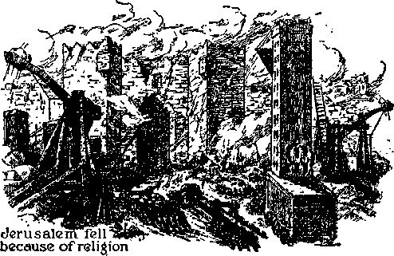SEVENTY-YEAR PERIOD
The prophecy of Isaiah here considered was paralleled by the prophecy uttered by Jeremiah, in which latter prophecy the ‘"seventy years” was associated with the seventy years of desolation of Jerusalem, Concerning this Jehovah’s prophet Jeremiah said: “Behold, I will send and take all the families of the north, saith the Lord, and Nebuchadrezzar the king of Babylon, my seiwant, and will bring them against this land [Judah and Jerusalem], and against the inhabitants thereof, and against all these nations round about [including Tyre], and will utterly destroy them [in the type, for seventy years], and make them an astonishment, and an hissing, and perpetual desolations. . . . And this whole land [Canaan] shall be a desolation, and an astonishment; and these nations [including Tyre] shall serve the king of Babylon seventy years. And it shall come to pass, when seventy years are accomplished, that I will punish the king of Babylon, and that nation [by ousting Satan and his angels from heaven; which began in A.D. 1914], saith the Lord, for their iniquity, and the land of the Chaldeans, and will make it perpetual desolations.” What “nations” will God make “perpetual desolations”? (Vss. 9,11) Certainly Tyre is included, because it is written: “And all the kings of Tyrus, and all the kings of Zidon, and the kings of the isles which are beyond the sea.”—Jeremiah 25: 9-22.
God’s prophet Zechariah speaks of the antitypical fulfillment of this prophecy upon spiritual Israel as pictured by Jerusalem, and the time is clearly marked out. (See Zechariah 14:1,2; Book Preparation, page 281.) It was not necessary for spiritual Israel to be desolated the full, literal seventy years in order to fulfill the typical picture of ancient Jerusalem’s desolation. The desolation of spiritual Israel was accomplished between 1914 and 1919, or within a period of about four years. After that period of time spiritual Israel, that is, the remnant, to whom the testimony of Jesus Christ is committed (Revelation 12:17), fulfilled the picture of the return of the captivity from Babylon to Zion, and thus the seventy years of desolation antitypically was counted as completely fulfilled. The important thing was the desolation, and not the mere length of time thereof.
Note now that Jeremiah counts Tyrus’ desolation of seventy years as running concurrently with the seventy years of desolation of Jerusalem; therefore, as in the case of spiritual Israel, so with Tyre in the modern fulfillment, that is, as applying to the Roman Catholic Hierarchy. The “desolation”, or absence of temporal power or the time in which the “harlot” is “forgotten”, would not require literally seventy years. The important point here is the desolation, and not the exact length thereof. Furthermore the foregoing period of desolation is “in that day”, hence could not begin until the beginning of the day of Jehovah, to wit, in 1914.
In the type or picture the two equal periods run concurrently; and likewise the symbolic period of seventy years upon modern Tyre, the Roman Catholic Hierarchy, which would be counted as ended at approximately the same time as the desolation upon the remnant of New Jerusalem came to an end, which was about the end of 1918 or beginning of 1919. It would therefore not be at all necessary to measure back from November 24,1918, to November 24,1848, in order to locate the time of the fulfillment of this part of the prophecy. It suffices, then, that the Roman Catholic Hierarchy was forgotten and neglected "in that day", that is to say, Jehovah’s day, which began in 1914; and which period of forgetting ended in 1919; and that the forgetting was by her former political associates who had committed fornication with her, classing her as a temporal power. If the physical facts show that the Roman Catholic Hierarchy was forgotten or neglected by the political powers from 1914 to 1919, that would be a further corroboration of the conclusion that the fulfillment of the symbolic or prophetic seventy-year period is as hereinbefore stated, to wit, from A.D. 1914 to 1919.
“FORGOTTEN”
The Roman Catholic Hierarchy tried to seat herself in a prominent temporal position during the World War, but failed. During that time the pope was generally under suspicion, by the Allies in particular, and that with good reason. Although the pope tried to screen himself by claims of being neutral and maintaining strict neutrality during the World War, his claims naturally were not considered sincere. Note the following historical fact: “London, Treaty of (1915). A secret agreement concluded between Italy, France, Great Britain and Russia on 26 April and finally signed on 9 May 1915, declaring the terms under which Italy agreed to enter the war on the side of the Entente Allies. ‘By the future treaty of peace’ Italy was to receive the Trentino, the whole of Southern Tyrol, as far as its natural and geographical frontier, the Brenner Pass; . . . The Holy See was not to be permitted to intervene by diplomatic action in regard to peace or questions arising from the war.”-27ie Encyclopedia Americana, Vol. 17, pages 632, 633.
There was a secret agreement of the Entente Allies to ignore or forget the Roman Catholic Hierarchy as a temporal power, and specifically the head thereof. A publication issued at Washington, D. C., in March 1929, known as The Protestant, Volume 9, Number one, page one, paragraphs three and four, says: “Throughout the World War diocesan periodicals of the Hierarchy in this country [the United States] urged the papal ambition to sit in judgment on the belligerents as arbiter of peace. It was Italy that defeated that aspiration. In the pact of London [Treaty of 1915 above mentioned] that country executed a covenant barring the pope from any part in the conduct of hostilities or the terms of peace. Italy had excluded the papacy from both peace conferences at The Hague. But the Concordat [of 1929] removes that obstacle. Instead of the resolute adversary of the Roman See, Italy becomes its foremost confederate.”
This proves that the pope tried to have illicit relationship with the political powers of the nations during the World War period but was pushed to the side and “forgotten” during that period, that is, between 1914 and 1919; and this corresponds exactly with the time spiritual Israel was under restraint by Satan’s organization. The old whore’s charms did not allure the greedy nations just at the time of the war, because they wanted all the prospective pie. These facts exactly fulfill the prophecy concerning the ‘forgotten harlot’. The old woman was hanging down her head and wearing long, black clothes during that time. But, behold, she woke up at the end of that period, as the prophecy foretold she would do.
Says the prophecy (verse 15): “According to the days of one king.” In the type the “one king” was the Babylonish line of kings, from Nebuchadnezzar to Belshazzar, of the land of the Chaldeans. But in the antitype or fulfillment of the prophecy “in that day’’, from 1914 forward, Christ Jesus, the enthroned King of Jehovah, began and has continued his reign. “Like the days of one king” (Lesser); “according to the days of a certain king.” (Rotherham) These two latter translations help to clarify the matter and manifestly refer to the “King of the Chaldeans” and the antitypical desolationperiod fulfilled from 1914 to 1918 as above stated. The World War closed November 11, 1918, and it was shortly after that time that the tight position of the pope began to be lifted and the “forgotten” period began to end.
When the peace conference began to he discussed the pope immediately got busy and tried to get a seat at that conference. On November 30,1918, the New York Evening World published a statement to the effect that “the pope [then Benedict XV] desired to attend the peace conference in order that he might gain some temporal power”. The publication stated that the Vatican sought to establish a private telegraph office and linos at the Vatican, “with private wires to all governments, so as not to have to use the Italian lines.” (Sec The Watchtower, January 1, 1919.) The Italian government up to that time had kept the cold lady5 in the background. The peace conference opened on January 18, 1919, at which conference the League of Nations compact was presented, and later adopted, and at that conference the pope made efforts to gain a seat on a par with the political governments or nations, but failed. All these facts show that in that period of time above mentioned the old “harlot” was forgotten.
The events above mentioned were approximately seventy years after November 24, 1848. at which latter date the pope, in disguise, fled from Rome. On February 8, 1849, the Italian government divested the pope of all temporal power. But these facts appear to be merely incidental to the prophecy, and not in fulfillment thereof. These facts would help to conceal the true meaning of the prophecy for a time and until God’s due time for it to be understood.
The prophecy further says: “After . . . seventy years [of desolation typical and antitypical] shall Tyre sing as an harlot.” Other translations render this part of the prophecy in this manner, to wit: “It shall be unto Tyre as in the song of the harlot” (R.V.); “shall it befall Tyre according to the song of the harlot” {Rotherham) ; “there shall be unto Tyre as the song of a harlot” {Douay); “shall it happen to Tyre as in the song of the harlot.” {Leeser) Note that it is not a song by the harlot, but “the song or the harlot”; and that appears to be the reason why Leeser in translating this text puts verse sixteen in quotation, and thus verse sixteen is “The Song”. That “Song of the Harlot” must be and certainly is a prophecy of the Lord concerning the harlot religious system, that is, the Roman Catholic organization, allies and supporters; and which prophecy foretells her conduct immediately following the end of the period in which she is forgotten. The Roman Catholic system sings songs, like other harlots, to attract attention to herself. The song begins to revive her traffic and patronage and her efforts to gain her chief objective, to wit, to rule the nations of the earth as the vicegerent of Christ and in a dictatorial way.
The words of “the song of the harlot” are addressed to the harlot herself, that is to say, to the Roman Catholic Hierarchy, and at the period after the end of the World War in 1918, and which is after the enemy Satan and his wicked crowd of angels had been cast out of heaven and down to the earth and when Satan began to gather his forces, visible and invisible, to Armageddon. (Revelation 12:7-9; 16:13-16) In this action or work Satan brings forward and puts into action his religious institution, the Roman Catholic Hierarchy. This also marks the time when the Lord builds up Zion and sends forth ‘the remnant of the seed of his woman' as his witnesses to proclaim his name and kingdom throughout the earth. (Revelation 12:17) The words of “the song of the harlot” are these : “Take an harp, go about the city, thou harlot that hast been forgotten: make sweet melody, sing many songs, that thou mayest be remembered.” (Isaiah 23:16) This song is not sung to magnify the name of Jehovah, but for the contrary purpose. “And the harp and the viol, the tabret and pipe, and wine, are in their feasts; but they regard not the work of the Lord, neither consider the operation of his hands.”— Isaiah 5:12.
The harlot is a “street-walker”, and she decks herself in her best wearing apparel, paints her face, and sallies forth to accomplish her business of enticing and seducing others. She resorts to “an harp”, that is, instruments to make a pleasing sound to the ear of her prospective paramours, including those she once had, and also new suckers, such as the United States and the professional politicians who run it. She adds whatsoever she can to her attractive charms and carries on her seductive work, and in doing this she stages a hypnotizing background of entrancing sound.
The “harp”, as used in the prophecy, pictures the equipment or instrumentality of the old harlot by which she would add power and influence to her religious squawks or doctrinal lies in order that she might inveigle others into her trap and gain control over them. Those instruments antitypically are such as the Jesuits, Fascists, Nazis, “Holy Year” fiasco, Holy Name Society, Catholic Action, Knights of Columbus, anticommunist schools, the Catholic press, the National Catholic Welfare Conference, the Legion of Decency, controlling moving pictures and moving-picture censorship, feigned and hypocritical patriotism exhibited in compulsory flagsaluting, the building of monuments and images at the expense of religionists, and all suchlike movements, by and through which she “struts her stuff” and bamboozles and hoodwinks the credulous population, hoping thereby to further her cause and gain her great objective, to wit, to rule the nations of the earth by dictators. Since the World War the old harlot has daily increased her boastful, scornful attitude and arrogance in parading herself before the peoples of the earth.
The harlot, that is, the Roman Catholic organization, goes up and down the earth with her instruments of sound under the leadership of the- Devil and in opposition to the faithful followers of Christ Jesus, who are now singing the praises of Jehovah and his King. The harlot puts forth her best endeavors to crush everything that makes known the truth as God has put it in his Word. In striking contrast to the conduct of the harlot Jehovah pictures his faithful witnesses with the Lord in this beautiful symbolic phrase: “And I saw as it were a sea of glass mingled with fire; and them that had gotten the victory over the beast, and over his image, and over his mark, and over the number of his name, stand on the sea of glass, having the harps of God. And they sing the song of Moses the servant of God, and the song of the Lamb, saying, Great and marvellous are thy works, Lord God Almighty; just and true are thy ways, thou King of saints.”—Revelation 15:2, 3.
The song of praise to the Most High announces that his kingdom is the only hope of the world and that Christ will now reign in righteousness and will destroy all hypocrisy and wickedness; and this song greatly disturbs the old “whore”, and she whangs her harp with all her power and energy and uses all her power and influence to get the harpers of the Lord out of the way. The songs by the harlot announce that the Roman Catholic system is the hope of the world; and while she sings, such fanatics as Mussolini and Hitler applaud and lend their support. Her persecution of Jehovah’s witnesses in every country is conclusive proof of this statement. The facts well known, and which are coming to pass in this day, exactly fit the prophecy, and this shows that now is the time, from and after the end of the World War, that the old “whore” is employing all her “harlot charms” to draw the nations and the people under her control, that she may rule to the satisfaction of her selfish and wicked ambition. She works with Mussolini and his like to accomplish her purpose.
And where does she go to sing the harlot song? The prophecy answers: “About the city, thou harlot that hast been forgotten.” She once had temporal power, then she was forgotten during the time that the political crowd thought best to ignore the old woman; and again, following the war, conditions are changed, and it is the appropriate time, as she thinks, for her to go out and round up her old, and some of her new, paramours, putting on her most attractive air, and thereby inducing political fornicators to turn again to her. And in what “city” docs she parade? Not amongst God’s faithful people, not in the temple of Zion; but she goes about the city symbolically designated as “Christendom”, the nations that are willing to have the name of Christ indirectly attached to them for commercial purposes. Such is the city of the “ten kings”.
As a “street-walker” the old and experienced harlot accosts each “king” or ruling power of the nations, and sings her songs; that is to say, she puts on a show before them by which she expects to dazzle the kings. Since the end of the World War the harlot, the Roman Catholic Hierarchy, has been exhibiting herself, clothed in her peculiar garments by which she is identified, appearing with painted face and flattering words and at much expense, which expense money she collects from the “Catholic population”, and thus she goes on her campaign of enticement and seduction. She calls it “Catholic Action”. It could be dubbed also “Devil’s visible action”. The Jewish rabbis and the so-called “Protestant” clergy fall right into the old harlot’s arms, receive a few lessons from her, and then take their place in the show, attempting to make the politicians and the commercial men believe that their best interests require that they associate themselves with the religious, that is, the “harlot” organization. She is making progress in her seducing business, that is, the Roman Catholic Hierarchy system.
The old harlot, since the World War, has gained complete control of Italy and Germany; and wherever in those nations her paint and enticing words fail, she uses force of arms. She poses as though she were honest, and hypocritically says she represents God and Christ, the great Prince of Peace, and at the same time she organizes and launches a rebellion against the government of Spain because that government kicked her out and refused to yield again to her seductive charms, and Mussolini and Hitler send soldiers into Spain to help murder the poor innocents. Her priests and other underlings, wearing clerical robes and armed with sword and gun, go forth to murder the people of Spain in order to carry out the harlot’s wicked design to gain control of that nation. Just at the present time the old “harlot” is putting on her big show at Washington, D. C., endeavoring to establish diplomatic relationship between the United States and the Vatican, and Washington is getting quite drunk with the “wine of her fornication”. The United States is quite a youth, not so fully acquainted with the harlot as the other nations, and is well likened in the prophecy to a young man getting his eyeteeth cut. Often a young man who is simple yields to the seductive influence of an enticing harlot who sings songs and exhibits herself in public places. The United States appears to be in the class of such simpletons.
Jehovah God, foreknowing the present-day conditions and the activities of the harlot religious organization, caused an appropriate proverb to be recorded long ago, and which now is applicable, to wit: “For at the window of my house I looked through my casement, and beheld among the simple ones, I discerned among the youths a young man void of understanding [United States], passing through the street near her corner; and he went the way to her house, in the twilight, in the evening, in the black and dark night; and, behold, there met him a woman with the attire of an harlot, and subtil of heart. (She is loud and stubborn; her feet abide not in her house; now is she without, now in the streets, and lielh in wait at every corner.) So she caught him, and kissed him, and with an impudent face said unto him, I have peace offerings with me; this day have I paid my vows: therefore came I forth to meet thee, diligently to seek thy face; and I have found thee. I have decked my bed with coverings of tapestry, with carved works, with fine linen of Egypt. I have perfumed my bed with myrrh, aloes, and cinnamon. Come, let us take our fill of love until the morning; let us solace ourselves with loves: for the goodman is not at home, he is gone a long journey; he hath taken a bag of money with him, and will come home at the day appointed. With her much fair speech she caused him to yield, with the flattering of her lips she forced him. He goeth after her straightway, as an ox goeth to the slaughter or as a fool to the correction of the stocks; till a dart strike through his liver, as a bird hasteth to the snare, and knoweth not that it is for his life.”—Proverbs 7:6-23.
Will the United States yield to the harlot’s blandishments and fall? It so appears. The old “harlot” has her instruments everywhere in the land working overtime to get control of the United States and every branch of the government, and the politicians are falling to her enticements, and many of the people who are dupes and easily deceived are likewise yielding. Fascists and Nazis are one and the same crowd and are instruments employed with great effect by the Homan Catholic Hierarchy to gain control of the nations. Each day the strength of that organization grows in the United States. The people in general appear to be asleep to the danger. The harlot even controls the movingpicture business in order to keep the people’s thoughts on everything except the danger that besets the nation. An agent of the Vatican is the moving-picture dictatorial censor, and he approves pictures which magnify the Catholic system, loose conduct of the sexes and many other crimes. It is indeed a frightful time. It is the nighttime, and the people slumber. Darkness covers the land, and gross darkness is upon the people. (Isaiah 60:2) The harlot organization and her instruments are busy during all hours of this dark “night”.
The old “harlot”, according to the prophecy, sings; as it is written: “Make sweet melody, sing many songs, that thou mayest be remembered.” This she does in order to add to her charms and her power. Her endeavor is to induce the political crowd to believe not only that she is their spiritual guide, but that she should exercise temporal power and supremacy over all the political organizations. Inducing the politicians to yield to her blandishments, she will do business with them and through them and thereby gain control of the people and rule as a counterfeit Christ over the nation and ultimately over all the nations of “Christendom”.
The aggressive campaign of the Roman Catholic Hierarchy of the present time is called by that organization “Catholic Action” and shows beyond all doubt that the present is considered the time fo* the old “harlot” to gain temporal control of the nations of the earth. She therefore squawks her songs, which songs are lies, of course, because that is her stock in trade, as God foretold. Now she boastfully says, as the prophet foretold: ‘“We have made lies our refuge, and under falsehood have we hid ourselves”; nothing can “prevail against” us.' (Isaiah 28:15) With glaring, brazen hypocrisy she calls attention to her supposed attractiveness and desirability.
Hiding the real facts from others, she poses as the rightful censor of the truth. She tells the Federal Communications Commission, and the owners and operators of radio stations, what they shall and shall not broadcast. She tells the people what they shall and shall not hear or read. She dictates to legislative bodies, to the judges of the courts, and to the other political officials of the land. She takes the lead in compulsory saluting of flags, contrary to the fundamental law of the nation, and directly in violation of God’s law. (Exodus 20:2-5) She poses as very patriotic and insists on the school teachers’ taking an oath, which never before was thought of in America, and she bluffs the legislative and judicial powers to compel them to sustain her. Claiming to be patriotic, she is a traitor to every country under the sun. She takes oaths of allegiance to governments, with a mental reservation that it is all right to quickly violate them. She poses as the guardian of the people to insure a clean social condition, and underneath and behind the scenes carries on all manner of uncleanness.
Amongst her instruments that she uses are ultraselfish men called “Jews”, who look only for personal gain, and who therefore readily yield to and join with the Hierarchy in any unrighteous schemes. The Catholic organization in fact controls the moving-picture business, and on every possible occasion in the exhibition of pictures attempts to magnify the “merits” of the Roman Catholic Hierarchy. She raises a great hue and cry about Communists’ being a danger, and this she does in order to attract the people’s attention away from her own crookedness and to enable her to take advantage of the people and slip her own instruments into positions of power. Her instruments and her songs seem to be endless, and therefore, in fulfillment of the prophecy, she sings “many songs”, and the political dupes with gaping mouths are led right into her snare. The prophecy is now being rapidly fulfilled.
And what is the real purpose of the Roman Catholic Hierarchy action? Says the prophet: “That thou mayest be remembered”; that is, that she might get back her position of temporal power. Her great ambition is temporal power and rule of the nations of the world, and therefore she must be remembered by her political paramours. Religion, which she wrongfully claims is “Christianity”, is used by her to gain political power. She is determined now to have to do with the treaties and make treaties with the nations and to bring all religious practices under her control and to suppress everyone who does not declare that she is the representative of God on earth. She is determined to suppress everyone who dares declare the truth of God’s Word.
Jehovah’s witnesses are commissioned to speak the truth, and therefore Jehovah’s witnesses constitute a stinging thorn in the flesh of the old “harlot” because they lift high the banner of the Lord, pointing the people to the declaration of Jehovah that his kingdom and his King are the hope of the world and that there is none other. The kingdom of God under Christ, as proclaimed by Jehovah’s witnesses, is the only thing the Roman Catholic Hierarchy now really fear. The old “harlot” is now very diligent to hide from the people her long and bloody record as inquisitionist and the many crimes she has committed, and when her activity and filthy record, as recorded in history, are mentioned and the truth of God’s Word is told about her, she howls and with great crocodile tears says: “That speech is shocking to our religious susceptibilities.” The facts conclusively prove the fulfillment of the prophecy.
“ABOMINATION”
The “abomination of desolation”, spoken of by Daniel the prophet, and by the Lord Jesus, is that which claims to rule in the place and stead of God’s kingdom under Christ Jesus. (Daniel 11:31; 12:11; Matthew 24:15) The League of Nations was set up for that very purpose, claiming the right and power to rule the world. But have in mind what constitutes and controls the League of Nations. At the very beginning of the organization of the League of Nations the Roman Catholic Hierarchy sought a place or scat in that conference, and she there began to put on her show to get into it and to dominate the League. When that ‘beast came up out of the pit’ (Revelation 17: 8) immediately following the end of the World War, the old “harlot” climbed on the back of that “beast” and has been riding arrogantly since (Revelation 17:3,7), and exercising the guiding control of the League of Nations, claiming the right to rule and vigorously attempting to rule the world in the place and stead of Christ Jesus.
Therefore the "abomination that maketh desolate” is the League of Nations and is labeled by organized religion “the political expression of God’s kingdom on earth”. Organized religion, with the Roman Catholic Hierarchy in the lead, is the binding tie and the chief part constituting the League of Nations, which claims the right and which attempts to rule the world in the place and stead of Christ-See Light, Book Two, page 103.
The Roman Catholic Hierarchy, the leader of organized religion, subtly exercises its power and influence in the League of Nations, and she expects to exercise even greater power, and doubtless will, in the very near future, regardless of what the combine is called. The old “harlot” is riding on the back of the “beast” and therefore is the dominating part thereof. The objective of the League of Nations is to rule the world contrary to God’s purpose, and therefore the League of Nations and the Hierarchy are one, constituting the “abomination that maketh desolate”; which abomination is the enemy of God, and it stands “where it ought not” to stand. (Mark 13:14) This is a warning to everyone who loves God and Christ to flee to God’s organization under Christ.—Matthew 24:15,16.
GREAT ENEMY
Is the Roman Catholic organization a friend of this wicked world, of which Satan is the invisible ruler? There is but one answer to this question, and that must be in the affirmative. The Roman Catholic Hierarchy is a part of the world, and the chief part thereof. The professional politicians and commercial traffickers are a part of that organization. The Hierarchy is pushing forward the radical element of Fascism and Nazism to gain complete control of the nations of the earth. The Hierarchy violates God’s law in order to make friends with the other wicked elements of the earth. She employs different schemes in different countries to meet the necessary conditions, which will enable her to gain temporal power. Jesus Christ declared: “My kingdom is not of this [wicked] world”; because Satan is the prince or invisible ruler of this wicked world.—John 18:36.
In view of the indisputable facts, does it appear that the Boman Catholic Hierarchy or church organization is the enemy of God and his kingdom under Christ? Let the Scriptures answer that question clearly and emphatically: “Ye adulterers and adulteresses, know ye not that the friendship of the world is enmity with God? whosoever therefore will be a friend of the world is the enemy of God.” (James 4:4) This text, together with the physical facts, proves beyond all doubt that the Boman Catholic Hierarchy is the greatest visible enemy of God and Christ; and the reason is, because that religious organization is the chief visible instrument of Satan in carrying forward his challenge to turn the people away from God. The 'adultery’ referred to here is not that of illicit relationship between the sexes, but means the illicit relationship between the organization claiming to represent God, and symbolized by a “woman”,
with the political, commercial and gangster powers of the world; and which proves that the organization is God’s enemy. By the use of fraud and deceit the Roman Catholic religious organization leads the people into Satan’s trap, thus proving that such religious organization is man’s worst visible enemy. Jesus emphatically declared that no man or organization can serve two masters. He cannot serve God and the Devil.—Matthew 6: 24.
The doctrines of the Roman Catholic “Hierarchy of Jurisdiction” and the practices in which that organization indulges show that she is the chief servant of the Devil and the arch enemy of God. The unchangeable rule of God is announced in these words: “Know ye not, that to whom ye yield yourselves servants to obey, his servants ye are to whom ye obey; whether of sin unto death, or of obedience unto righteousness?” (Romans 6:16) From all the evidence the conclusion is irresistible that the Roman Catholic Hierarchy organization serves the Devil and is therefore the enemy of God, the enemy of man, and the very personification of unrighteousness.
‘VISITS TYRE’
The prophecy then declares that Jehovah visits Tyre, and surely that visit is not in her favor, but for judgment against that wicked organization. When does the Lord visit her? The prophecy answers: “And it shall come to pass, after the end of seventy years, that the Lord will visit Tyre, and she shall turn to her hire, and shall commit fornication with all the kingdoms of the world upon the face of the earth.” (Isaiah 23:17) Other translations of this text are: “And it shall come to pass after the end of seventy years, that Jehovah will visit Tyre.” (A.R.V.) “So shall it be at the end of seventy years that Jehovah will visit Tyre.” (Rotherham) “And it shall come to pass after seventy years, that the Lord will visit Tyre.” —l)c>uay.
This shows that it is from and after 1918 that Jehovah visits Tyre, and during the time in which the Lord is restoring his remnant from Babylon and using them for his purpose. As Jehovah permits the Devil to remain, so for a time he permits the old “harlot”, the Roman Catholic Hierarchy organization, to remain in existence for a time and to operate against his kingdom and his witnesses. First Jehovah visits her with the proclamation of the truth against her, and, in doing this, he commands his witnesses to “arise ... up against her in battle”. (Obadiah 1) This is Jehovah’s “strange work”; and, this strange work being completed, he visits her and executes judgment upon her, and that marks the beginning of his “strange act”, which is the second-part of his visit. (Isaiah 28:21) During the first part of his visit, as in case of his visit to Sodom, Jehovah gathers the evidence against her as to her activities as a harlot operating with a harp and song. During the first part of the visit, says the prophet, “she shall turn [(B.K.) shall return; (Roth.) will return] to her hire.” She returns to her hire as a harlot and uses that hire with which to commit fornication with the rulers of the earth.
Note this part of the prophecy says: “And shall commit fornication with all the kingdoms of the world upon the face of the earth”; according to the Revised Version: “Shall play the harlot with all the kingdoms of the world.” Such is exactly what the Roman Catholic Hierarchy organization is doing and has been doing from and after 1918, and will continue to do until the beginning of Armageddon; and while she is doing that, Jehovah is doing his “strange work” of exposing her wickedness. The activity of the old “whore” in committing harlotry with all the kingdoms of the world appears to be more than merely establishing diplomatic relationship with all nations and being recognized as a temporal power. It surely means the carrying out of the objective of the Roman Catholic Hierarchy to set up a Fascist government controlling the nations of the earth, that the Hierarchy may arbitrarily rule the nations in a dictatorial manner.
DEVIL’S OFFSPRING
The League of Nations is the child of the Devil by his “woman”, “organized religion,” and which is brought forth in opposition to Jehovah’s “man-child”, which shall rule the world. (Revelation 12:5) The combination of the League of Nations is made up of religion, politics and commerce, religion being the binding tie and riding on the back of the “beast” and claiming the right to rule. The old “whore” gains her dominating position in this combine when she ‘returns to her hire’ or traffic and ‘plays the harlot with all the kingdoms of the world upon the face of the earth’. This is further proof that the combine is “the abomination that maketh desolate”. Corroborating this conclusion, note Revelation 17:1, 2: “And there came one of the seven angels which had the seven vials, and talked with me, saying unto me, Come hither; I will shew unto thee the judgment of the great whore that sitteth upon many waters [as ancient Tyre did]: with whom the kings of the earth have committed fornication [which the Roman Catholic Hierarchy, has done since 1918, while rejecting the kingdom of God, the ‘Stone laid in Zion’], and the inhabitants of the earth have been made drunk with the wine of her fornication.”
During the past few years the Fascists and Nazis have grown at a tremendous speed, thus showing that the inhabitants of the earth are made drunk with the Roman Catholic Hierarchy’s lying, poisonous doctrines, her “wine”; and the fornication and drunkenness continue to increase: “For all nations have drunk of the wine of the wrath of her fornication, and the kings of the earth have committed fornication with her, and the merchants of the earth are waxed rich through the abundance of her delicacies.”—Revelation 18: 3.
The combine of the nations, under the influence of organized religion, was lined up behind the Hague International Arbitration Court, which went out of sight during the World War but quickly came up out of the pit following the World War: “And the beast that was, and is not [during the World War], even he is the eighth [wTorld power; namely, the combine of the League of Nations with Devil-religion riding], and is of the seven [previous world powers, existing before the World War], and goeth into perdition [at Armageddon, the harlot being first unseated and destroyed].”-—Revelation 17:11.
While the old “harlot” rides the beast and thus symbolically is in control of it, the Protestant clergy drag along in the procession and shout: “This is the political expression of God’s kingdom on earth”; and the deluded and ignorant populace yell, and for what reason they know not. The old “harlot” returns to her hire, that is, uses her stock in trade to induce others to commit fornication with her, and with her blandishments as a harlot thereby gains the upper hand of the nations and rides on the back of the combine, and thus “the abomination of desolation” is complete.
It was the Fascists’ leader, Mussolini, who during the World War opposed the pope’s being recognized as a temporal power, and it was the same Mussolini who saw to it that the pope regained his temporal-power position in 1929; and since then the pope has not been known to seek a seat in the League of Nations, and the reason is, because he has pursued a more subtle policy, thereby obtaining a seat as the rider of the entire “beast” and has the whole gang kissing his big toe.
The United States is not supposed to be a member of the League of Nations; but the prophecy (E.U.) says: “She . . . shall play the harlot with all the kingdoms of the world upon the face of the earth,” and this necessarily includes the United States of America. It is well known, by every person in America who really thinks, that the determination of the Roman Catholic Hierarchy is to gain control of the United States and make it a government similar to that of Germany and Italy. Just preceding the election in the United States in 1936 Cardinal Pacelii, Papal secretary of state of the Vatican, visited the United States, and the result was that practically every Roman Catholic in the United States voted for Mr. Roosevelt, the man who had said previously that ‘diplomatic relationship would be established with the Vatican as soon as the American people could be brought around to it’.
BRITAIN AND AMERICA
No one on earth can tell exactly what will come to pass; but those devoted to the Lord, and according to the divine rule of applying the well-known facts to God’s prophecy now in course of fulfillment, can well reach a reasonable conclusion as to what shall come to pass. The question is, Will Great Britain and America become Fascist under the dominating control of the Roman Catholic Hierarchy? The Scriptures and the facts appear to fully support that conclusion. Within the borders of the British Commonwealth of Nations and the United States of America the truth of God’s kingdom has had its greatest proclamation and witness, and that is exactly what the Roman Catholic Hierarchy hates. It is the truth of and concerning the kingdom of God when proclaimed that “shocks the religious susceptibilities” of the Hierarchy crowd, because they hate that which lets God’s light shine and which exposes them. For that reason the Hierarchy attempts to suppress the use of the radio and all other means of publication of God’s kingdom message.
The prophecy of the Lord shows that modern Tyre, the Catholic organization, commits fornication with all the nations and gains her desire. When the Hierarchy has gained complete temporal power of the earth, that will in her mind fully establish the conclusion that her desire has been fully accomplished, and then she will say “Peace and safety” (1 Thessalonians 5:3); and then the “ten horns”, that is, all the ruling powers of the nations, “receive power ... with the beast,” the League of Nations combine being in fact a league of Fascism or combined Fascist governments, dominated by the Roman Catholic Hierarchy. “And the woman [Devil’s visible religious organization, the harlot] which thou sawest is that great city [the Hierarchy organization], which reigneth over [combined Fascism,] the kings of the earth.” — Revelation 17:12,18.
What was the real inducement that caused King Edward VIII to abdicate may be better understood in the near future. That Fascism now is gaining at an alarming rate in Britain, there is not the slightest doubt. Also the Fascists and Nazis are rapidly increasing in the United States. The Roman Catholic Hierarchy is confident of putting to silence through its instruments everything and every activity that exposes the crookedness of the Hierarchy and makes known Jehovah God’s purpose. It is nighttime, so far as most of the people are concerned; and the old “whore”, while the people slumber, moves forward with greater confidence. A complete fulfillment of the prophecy draws nigh. God caused the apostle Paul to write authoritatively concerning this very time, to wit: “But of the times and the seasons, brethren, ye have no need that I write unto you. For yourselves know perfectly that the day of the Lord so cometh as a thief in the night. For when they shall say, Peace and safety; then sudden destruction cometh upon them, as travail upon a woman with child; and they shall not escape.” ■—1 Thessalonians 5:1-3.
Jehovah is now carrying on his “strange work”, which serves to enlighten the people of good will and to show them the only way of escape; and only those who find that way will escape. The old “whore” sitting upon the back of the beast may soon be expected to say: ‘Peace and safety; we have silenced all opponents.’ Then Jehovah’s “strange act” will begin, and sudden destruction comes upon her “as travail upon a woman with child”. There begins the howl, described by Isaiah 23:1-14, and the end will be the destruction of Satan’s religious system, by which he has hoodwinked the people and made merchandise of them. The old harlot’s triumph will be short, and her destruction complete.—Ezekiel 27:12-34; Revelation 17:16,17.
“HOLINESS TO THE LORD”
The Roman Catholic Hierarchy’s "refuge of lies” will furnish no protection to her, but her bulwarks will be completely swept away when her doctrines are known to be false. (Isaiah 28:17) At some time in the fulfillment of this prophecy it will come to pass as it is written: “And her merchandise and her hire shall be holiness to the Lord: it shall not be treasured nor laid up; for her merchandise shall be for them that dwell before the Lord, to eat sufficiently, and for durable clothing.’-Isaiah 23:18.
Surely the words “her merchandise and her hire shall be holiness to the Lord” could not refer to material merchandise, such as the anarchists might seize and confiscate; because it is written in God’s law: “Thou shalt not bring the hire of a whore, or the price of a dog, into the house of the Lord thy God for any vow; for even both these are abomination unto the Lord thy God.” (Deuteronomy 23:18) What, then, could be meant by 'filer merchandise and her hire”? Jehovah’s prophet speaking concerning unfaithful Samaria says: “And all the graven images thereof shall be beaten to pieces, and all the hires thereof shall be burned with the fire, and all the idols thereof will I lay desolate: for she gathered it of the hire of an harlot, and they shall return to the hire of an harlot.”—Micah 1:7.
The Roman Catholic Hierarchy with an air of superiority, and with great claim of power and authority from God, have approached the kings of the earth and said to them in effect: “We bestow upon you the divine right to rule, we give yon holy sanctions and heavenly blessings; and by reason thereof your positions as political rulers are sacred and are ordained of God, and therefore, so far as the people are concerned, you are viewed as constituting the ‘higher powers’; and we who compose the Hierarchy are the spiritual ‘higher powers’ and superior to all other earthly power.” (Romans 13:1) The true “Higher Powers” are Jehovah and Christ Jesus. The claim that earthly organizations are “the higher powers” is therefore false. Jn this fraudulent representation and claim made by the Roman Catholic Hierarchy, the harlot proceeds to gain control over millions of gullible men. Such constitutes the “merchandise” and “hire” of the harlot by which she draws men into her clutches. The Roman Catholic Hierarchy has fraudulently posed as the representative of God with full divine authority to bestow blessings on kings, while in truth and in fact she is the representative of the Devil. The Hierarchy uses ‘the hire of the harlot’ to induce the political powers to believe that she should dictate the policy of the world, and thus carry out her purpose to set up a dictatorial rule of the earth.
But now the time arrives when Jehovah turns the tables on the old wench. Jehovah does not bring the ‘merchandise and hire of the harlot’ into his temple, but by carrying on and doing his “strange work” Jehovah exposes the wickedness of the Roman Catholic Hierarchy, the religionists; and thus he counteracts the effects of her merchandise and hire and causes the same to work against the religionists, and the result is beneficial to those who love righteousness and hate iniquity. This Jehovah does by causing the people to have their eyes opened to the truth and to clearly see that the Roman Catholic Hierarchy, the leader of religionists, is a part of Satan’s organization; and those people of good will, who thus see and identify the Roman Catholic organization as a part of Satan’s organization, separate themselves from that wicked organization and hasten to Jehovah’s city of refuge, the place of holiness. (Numbers 35:11-32) Therefore when “her merchandise and her hire” are fully exposed and revealed by the truth, these truths turn those of good will to “holiness to the Lord”.
Jehovah’s witnesses have a part in this “strange work”, in this, that as his commissioned servants they carry God’s message of warning to the people of “Christendom”, and which message of truth is the true guide to all the people in or outside of “Christendom” who desire to take the right course. When the people of good will see and understand the truth, then the false doctrines which they have been taught by the Hierarchy work against the organization of Satan and to the glory of Jehovah, the Holy One, and thus become “holiness to the Lord”.
Says the prophet: “It shall not be treasured nor laid up.” Her merchandise and lying shall not be brought into the temple of Jehovah, but it shall be used against and operate against the harlot. As to the “merchandise” and “hire” of a material kind, that is, all the material wealth of the Roman Catholic Hierarchy, that, to be sure, shall be left behind by the old harlot when, at the beginning of Armageddon, the religious system shall be destroyed. It all in truth belongs to the Lord, because the earth and the fullness thereof are his. (Psalm 24:1) At all times such material things have belonged to the Lord, but have been misused and abused by the religionists. Those who survive Armageddon will find better use for such, because they will use material things to the glory of God in his service. “For her merchandise shall be for them that dwell before the Lord.” The word “dwell” as here used in the prophecy means ‘to abide and remain as a remnant’. (Isaiah 7:3, margin; Psalms 27:4; 61:6,7) The promise of Jehovah is that those persons of good will who ‘seek righteousness and meekness’ may be “hid” during Armageddon and dwell thereafter on the earth. It is such that the Lord Jesus leads unto the fountain of life, feeding them and fulfilling their desires, and those are the ones that praise Jehovah day and night. (Revelation 7:9-17) They abide in his organization and under his protection.
During the World War, when spiritual Jerusalem, that is, God’s faithful remnant people on the earth, seemingly had come to the end of their way, the clergy of modern Tyre, the religionists aforementioned, exulted and felicitated each other; concerning which the Lord caused to be written: “Son of man, because that Tyrus hath said against Jerusalem, Aha, she is broken that was the gates of the people; she is turned unto me; I shall be replenished, now she is laid waste.” (Ezekiel 26:2) But soon and in God’s due time he turns the tables on the Roman Catholic Hierarchy, and that wicked organization is laid waste, and Jehovah’s witnesses are shown as praising the Most High after the Hierarchy goes down. (Revelation 19:1-3) When that calamity befalls the religionists, the persons of good will, composing the great multitude who have proved their integrity by obeying Jehovah’s commandments, will then ‘dwell in the presence of the Lord’ and will sing his praises for ever: “Surely the righteous shall give thanks unto thy name; the upright shall dwell in thy presence.”—Psalm 140:13.
Again, says the prophecy (Isaiah 23:18): “For her merchandise shall be for them that dwell before the Lord, to eat sufficiently.” The so-called “spiritual and religious” foods, which are false and which are provided by the Roman Catholic Hierarchy for the people, and which are “her merchandise”, being exposed by the light and unfolding of Jehovah’s Word, these truths of God’s Word become prophetic food for those who are fed at Jehovah’s table, which includes, to be sure, those of the great multitude, which the Lamb of God shall feed.
(Revelation 7:17) The revelation of Jehovah’s prophecy stripping bare the religious frauds and disclosing Jehovah’s judgment against such fraudulent merchandise becomes spiritual “meat in due season” for those who love Jehovah. Prophecy in fulfillment and being understood proves to be their spiritual nourishing food and is profitable to those who love God. When the people of good will see these things, then no longer is the old “harlot” and her allies, by the use of her “merchandise” and lying, able to keep those who love and serve Jehovah from eating and filling sufficiently, and they do eat sufficiently of God’s spiritual food and are greatly satisfied and rejoice.
Further the prophecy says: “And for durable clothing,” “stately clothing” (H.V., margin). Clothing symbolically stands for identification. When those persons of good will hear and act upon the truth, seeing that the “hire” and “merchandise” of the old “harlot” is a fraud and snare, they immediately wash up, that is, they ‘wash their robes and make them white in the blood of the Lamb’. (Revelation 7:14) They are clothed with stately “white robes” and thus identify themselves as servants of Jehovah God. They get on the Lord’s side and no longer have anything to do with the harlot organization. Their devotion, service and praise is to Jehovah and his King, who sits upon the throne and who shall for ever rule the world in righteousness. The faithful “great multitude” then have a “stately” appearance.
SUMMARY
Briefly summing up the prophecy of the 23d chapter of Isaiah, this appears as its message to those who love Jehovah and who joyfully obey his commandments:
Ancient Tyre represented commercialized religion and religionists, to wit, the Roman Catholic Hierarchy, which is modern Tyre and leads in the religions of the world. “The king of Tyrus” means the Devil himself; while “the prince of Tyre” stands for the visible, religious representative of the Devil on earth.
“Zidon” also stands for Devil religion, including both “heathen religion” so called, or paganism, and all other religious allies of the Roman Catholic Hierarchy.
“Ships [that is, vessels] of Tarshish” stands for the various subordinate organizations of the Roman Catholic Hierarchy, which support and do the bidding of the Hierarchy and carry on her menial work.
“Harlot,” an unchaste woman, stands for Satan’s organization, of which religion is the most subtle part visible to man and is used to seduce others from Jehovah God.
The purpose or the objective of the Roman Catholic Hierarchy is and ever has been to gain control of and rule the nations of the earth.
For many years the Roman Catholic Hierarchy organization was recognized as a temporal power ruling over the kings of the earth. She lost that power for a time, and regained it in 1929. During the World War the Roman Catholic Hierarchy, the harlot, sought a place among the nations in matters pertaining to war and peace, but was cast to the side and forgotten. At the close of the World War, in fulfillment of the prophecy, the Roman Catholic Hierarchy began her activities to regain temporal power, and, as the once forgotten harlot, she goes about the nations singing the song of the harlot, that is, using seductive means to induce the political rulers of the nations to recognize her and to restore her to her former position as a temporal power.
Fascism and Nazism mean one and the same thing and are the instrument of the Roman Catholic Hierarchy, the child of the Devil, to gain control of the earth by the Hierarchy and turn all people against God and his kingdom. The Roman Catholic Hierarchy classes everyone that is opposed to her as “red” or “communist”, and this 's done to incite the people against those who stand for whatsoever is right. The Hierarchy is particularly opposed to and persecutes Jehovah’s witnesses because they proclaim the truth of God’s name and kingdom and point to God’s kingdom as the only hope of the world.—Matthew 12:18-21, A.R.V.
The prophecy seems clearly to indicate that the Roman Catholic Hierarchy, operating its organization of Fascism, together with other religious allies, will gain control of the leading nations of the earth, including Britain and the United States, and then that hypocritical religious organization will cry out, as prophetically written, “Peace and safety.” This part of the prophecy is set forth in Isaiah 23; 15-18.
When the Hierarchy has reached her zenith of glory and is supposed to be in absolute security, then God, through Christ Jesus, completely wrecks the old-harlot organization, and that marks the beginning of Armageddon. This great “burden” or woe coming to the religionist clement of Satan’s organization strikes terror into every one of her supporters, and these, by the prophecy, are shown as wailing and howling, because they clearly see that they are next in line for the expression of God's wrath against them. This part of the prophecy appears in verses 1-14 of Isaiah 23, and shows that the woe comes upon the religious organizations at the end of her very short period of seeming triumph.
Now Jehovah is carrying forward in the earth his “strange work”, exposing to view the wicked organization of Satan. He lays upon his witnesses the duty and gives to them the privilege and opportunity of proclaiming his name and his kingdom in the earth, and thus they have a part in this strange work, (lievelation 12:17) When that strange work is done, then begins his “strange act”, which is the battle of the great day of God Almighty. During the period of his “strange work” the great multitude must take their stand on the side of Jehovah and his kingdom and prove their faithful obedience and maintain their integrity toward God. Jehovah now makes known these precious truths to those who love him that they may be comforted and have greater hope in this time of peril. Let all who claim to love Jehovah God prove their love for him and his King by now joyfully obeying the commandments of the Most High. “Arise ye, and let us rise up against her in battle.” —Obadiah 1.
“MAN OF SIN”
Jehovah, in his Word, describes his ideal man that is pleasing to him. (Psalms 1, 8,16, 111, and 113) He designates the ideal man as “my servant”, “mine elect.” (Isaiah 42:1-6, 19, 20) That ideal man or elect servant is Christ Jesus and the members of his official house, his church; and although composed of many members, they are all one and are designated “a perfect man”. (Ephesians 4:13; 1 Corinthians 10:17; John 17:21) Exactly opposite to that ideal man, and opposing God’s elect servant, is an enemy designated in the Scriptures as the old “harlot” and as “the man of sin”, “the son of perdition,” (2 Thessalonians 2:1-3, R.Vr) and which also is a composite body made up of many persons who indulge in a work of opposition to God’s kingdom and in persecuting all those who faithfully serve God. That “man of sin” is the servant of the Devil, the enemy of God and the enemy of man.
Some in that composite body were once in line for the kingdom of God, having entered into the covenant to do the will of God, following in the footsteps of Jesus. Such by reason of becoming unfaithful have fallen away from God and Christ, and these are designated as “the evil servant” and may well he classed as the head or chief ones of the “man of sin”,
“the son of perdition.” That "evil servant", once looking for the Lord, says in his heart, “My lord delayeth his coming,” and then begins to smite those who serve God.—Matthew 24:48-50. . .
All of the “man of sin” company arc religionists, and include many priests, clergymen, “elective elders,” and others, who willfully indulge in persecuting the faithful witnesses of Jehovah, to whom has been committed the testimony of Jesus Christ, and who obey God’s commandments; and all of these persecutors act as the instruments of the Devil. (Revelation 12:17) In this present time those enemies manifest themselves by promulgating lies leveled against those who are proclaiming the kingdom of God. They attempt to induce persons to join some organization that is religious, and in doing so they employ fraudulent and lying means, -which clearly shows that they consider that “gain is godliness”; and concerning which it is written: “If any man teach otherwise, and consent not to wholesome words, even the words of our Lord Jesus Christ, and to the doctrine which is according to godliness, he is proud, knowing nothing, but doting about questions and strifes of words, whereof cometh envy, strife, railings, evil surmisings, perverse dis-putings of men of corrupt minds, and destitute of the truth, supposing that gain is godliness; from such withdraw thyself.”—1 Timothy 6: 3-5.
If they find someone seeking the truth of Ged’s Word they straightway make an attempt to inveigle such persons into their trap. They use outwardly 'good words and fair speech to deceive the hearts of the simple’. (Romans 16:18) Judas Iscariot, who undertook to follow Jesus Christ and then betrayed him, was an ensample or type of such enemies, and of him Jesus said that he was lost and that He had lost none except the son of perdition. (John 17:12) Judas, therefore, foreshadowed the “evil servant” company, “the man of sin,” “the son of perdition.” Such composite company is spoken of in the Scriptures in these words (2 Thessalonians 2:9): “Whose coming is after [that is, according to] the working of Satan, with all power and signs and lying wonders,” and who carry forward Satan’s schemes to oppose God and his kingdom. The “evil servant” class and the “man of sin”, “the son of perdition,” are at the end in one and the same company, although pursuing a somewhat different course until they are joined together in opposition to the kingdom of God.
ENEMIES ASSEMBLED
To aid the reader to more readily comprehend, the specific enemies of God are here briefly named, to wit: Satan, the Devil, “the god of this world,” the invisible ruler of man; Gog, the chief officer of Satan in command of the Devil’s organization visible and invisible; all the wicked angels, who have rebelled against Jehovah God. All of such enemies are invisible to the natural or human eyes.
The visible enemies of God, that is, those on earth and who also are the enemies of men, are these, to wit: Religion, religious organizations, and practitioners of religion (in these religious organizations are included thieves, robbers, liars, whoremongers, murderers, manstealers or kidnapers, frauds, cheats); and all suchlike religion and religious practices being the means of blinding the people to the truth, and using a great mountain of lies behind which the racketeers hide themselves. These enemies are influenced and controlled by the Devil and his invisible associates, the wicked spirits who cause men to commit all manner of wicked, crimes. Of Satan it is written that he is a subtle or wily opponent, and he teaches all his instruments to be subtle and wily foes. The visible enemies of men on earth, therefore, are all who indulge in wrongdoing and who are moved by hatred, ill will, and malice and extreme selfishness. AU these enemies work against the interests and to the detriment of every honest and sincere person who desires to serve God and follow a course of righteousness.
By the facts and the scriptures that appear in the foregoing it is clearly seen that there are two great opposing organizations, one righteous, which is God’s organization, and one wicked, which is the Devil's organization; the two pitted against each other. If Jehovah God is to win the controversy raised by Satan’s wicked challenge, there must come a time when the climax is reached and the final conflict is indulged in. What, then, is to be the fate of the enemy?
CHAPTER VII
“Thine hand shall find out all thine enemies: thy right hand shall find out those that hate thee. Thou shalt make them as a fiery oven in the time of thine anger: the Lend shall swallow them up in his wrath, and the fire shall devour them.” — Psalm 21: 8,9.
MEN are often deceived, and many of them become deceivers. Concerning “the last days”, which is a time of great peril, it is written: “But evil men and seducers shall wax worse and worse, deceiving, and being deceived.” (2 Timothy 3:13) All the evidence shows that the present is a time of greatest deception ever practiced upon the people. No man can deceive God at all. God knows even the secret thoughts of man. At all times he knows who are his enemies, and in his due time he will search them out and duly recompense them for all their wickedness. By what means will he do so? and who will act for Jehovah in dealing with his enemies?
Jesus was born in the month of October; and that is generally understood to mark the beginning of the year 1 A.D. At the time of his birth a company of shepherds were guarding their flocks near the town of Bethlehem, when they heard the voice of angels from heaven proclaiming this glad news: ‘Glory to God in the highest, on earth peace toward men of good will.’ (Luke 2:14, Rotherham) That meant that the great 307
Prince of Peace was born and that in due time he would be God’s instrument to bring peace on earth toward all who are of good will toward God; and also means that he will bring about the end of God’s enemies and that all will be to the glory of the Most High. Jesus is the Vindicator of Jehovah’s holy name. Today all persons of good will are keenly interested in the coming of Christ Jesus, his kingdom, and the vindication of God’s name.
Exactly thirty years after the birth of Jesus his official work began on the earth, and his first utterance on that occasion was, “The kingdom of heaven is at hand”; meaning that Jesus, the chosen King and rightful Euler of the world, was beginning his work preparatory for the kingdom, which shall rule the world in righteousness. This proves that the kingdom is the means by which God will completely vindicate his name. For three and one-half years, and until his death, Jesus taught the commandments of God, and the faithful Jews heard him, forsook religion, and obeyed God’s commandments.
Throughout that period of time Jesus stressed the fact of the coming kingdom, and the end of the unrighteous world. He taught his disciples that he must go away first and receive from Jehovah’s hand the kingdom authority, and that then he would return and set up his kingdom. (John 14:3) Jesus was “put to death in the flesh”, and God raised him out of death a “spirit” and exalted him to the highest place in the universe. (1 Peter 3:18, R.V.; Philippians 2: 8-11) Jesus was duly commissioned then to rule the world as King, but it was not then God’s due time for that reign to begin. God’s purpose was to permit the enemy Satan to have full time and opportunity to carry out his boastful challenge, and therefore He said to Jesus: “The Lord said unto my Lord, Sit thou at my right hand, until I make thine enemies thy footstool.” —Psalm 110:1.
For more than 1800 years Jesus must wait for his reign to begin, and within that period of time Jehovah, by and through Christ Jesus, has gathered out from the nations “a people for his name”, which people God uses specifically to declare his name in the earth just preceding the overthrow of his enemies.-Acts 15:14.
END OF THE WORLD
“The world” means the peoples of earth, organized into nations and under the supervision of an invisible overlord, and which overlord for centuries has been Satan the Devil, who, together with a host of wicked angels, has influenced, controlled and ruled the world without interruption. “The end of the world,” therefore, means the beginning of the period of time when the rule of Satan must be interrupted preparatory to his overthrow. The coming of the Lord Jesus, the rightful King, would necessarily interrupt Satan’s rule of the world and would mark the time when there should be a final showdown between Satan and Jehovah God.
To Jesus his disciples propounded this question : “What shall be the [proof] of thy coming, and of the end of the world?” (Matthew 24:3) Jesus immediately answered the question in these cryptic words: “For nation shall rise against nation, and kingdom against kingdom; and there shall be famines, and pestilences, and earthquakes, in divers places. All these are the beginning of sorrows.” (Matthew 24:7,8) The beginning of the interruption of Satan’s rule, it is seen, therefore, would be a time of sorrow upon the wicked one and upon his allies and agents, visible and invisible, and sorrow to people under Satan’s power. That prophecy of Jesus began to have fulfillment in the autumn season of 1914, which marks the beginning of the end of Satan’s wicked world. For further proof that the end had come, marking the time when there should be a change, Jesus said: “Upon the earth distress of nations, with perplexity; . . . men’s hearts failing them for fear, and for looking after those things which are coming on the earth.” (Luke 21: 25, 26) Everyone observes that such conditions have obtained, particularly since the World War began, in 1914; and since 1918 the woes and troubles upon peoples and nations have increased.
The Scriptures give further and corroborative evidence of Christ’s coming and the end of the world, which evidence is recorded in these words: “Thou hast taken to thee thy great power, and hast reigned. And the nations were angry.” (Revelation 11:17,18) That also marks the date 1914, as shown by the indisputable facts. Up to that time Satan had the privilege of appearing in heaven. (Job 2:1) When Jesus was enthroned, the conflict immediately began between Christ Jesus and the Devil, that old Serpent and Dragon. That war in heaven marks specifically the beginning of the end of the world, and concerning which it is written: “And there was war in heaven; Michael [who is Christ Jesus] and his angels fought against the dragon [that is, the Devil]; and the dragon fought and his angels, and prevailed not; neither was their place found any more in heaven. And the great dragon was cast out, that old serpent, called the Devil, and Satan, which deceiveth the whole world; he was cast out into the earth, and his angels were cast out with him. And I heard a loud voice saying in heaven, Now is come salvation, and strength, and the kingdom of our God, and the power of his Christ; for the accuser of our brethren is cast down, which accused them before our God day and night.” (Revelation 12:7-10) Thus the Devil and the wicked angels were excluded from heaven and cast down to the earth. Both the chronology of the Bible and prophecy show that it was in 1914 the world ended, marking the time when Christ Jesus took power and began his reign, and his first work was to cast Satan and the wicked angels down to the earth.
TROUBLE INCREASES
The beginning of the World War marked the “beginning of sorrows” on the earth, as Jesus stated. The World War ended in 1918, but the troubles upon the nations have continued to increase since. In the first chapter herein a number of questions are propounded concerning the great increase of sorrow and trouble in the earth, and now those questions shall be answered according to the Scriptures and in harmony with the Scriptures. The clergy have told the people that the increased woes upon the nations are due to the fact that the people have been unfaithful to their religious organizations and for that reason God has sent trouble upon them. That claim is entirely wrong and a defamation of God’s holy name. The correct answer is set forth in the Bible in these words: “Woe to the inhabiters of the earth, and of the sea! for the devil is come down unto you, having great wrath, because he know-eth that he hath but a short time.”—Revelation 12:12.
Being cast out of heaven and compelled to confine his operations to the earth, Satan knows that his time is very short until the final conflict which will determine the question of supremacy and his own existence. The purpose of Satan the Devil is to turn all men away from God and bring about their destruction. Therefore Satan the enemy brings greater woes and sorrows upon the peoples of earth and causes his agents, the religionists, to falsely charge Almighty God with the responsibility therefor, his purpose being to turn the people against God and cause them to curse God and die.
You will now readily call to mind that there has been a great increase of crime and woe and suffering since the end of the World War, all of which is due to the operations of God’s enemy the Devil and his wicked allies. As further corroborative proof, note it is written in the Scriptures, to wit: “This know also, that in the last days perilous times shall come. For men shall be lovers of their own selves, covetous, boasters, proud, blasphemers, disobedient to parents, unthankful, unholy, without natural affection, trucebreakers, false accusers, incontinent, fierce, despisers of those that are good, traitors, heady, highminded, lovers of pleasures more than lovers of God; having a form of godliness, but denying the power thereof; from such turn away.” (2 Timothy 3:1-5) Those who take the lead in the wickedness described in this scripture are the religionists, who are now carrying on their religious racket. This is further proof that these are the last days for Satan and his wicked agents and that soon the end thereof will come.
“THE TEMPLE OF GOD”
In connection with the Bible record of the war in heaven and the ousting of Satan, it is written: “And the temple of God was opened in heaven.” (Revelation 11:19) What is meant by the term “the temple of God”? It does not mean a house or building erected by human hands, but means the composite body of faithful followers of Christ, the Head of God’s organization. In proof of this statement note the scriptures addressed to the faithful followers of Jesus Christ: “Know ye not that ye are the temple of God, and that the spirit of God dwell-eth in you? If any man defile the temple of God, him shall God destroy; for the temple of God is holy, which temple ye are.”—1 Corinthians 3:16,17.
Those who compose the temple of God are not religionists, but must be separate and distinct from every part of Satan’s organization, showing full obedience to God’s commandments: “And what agreement hath the temple of God with idols? for ye are the temple of the living God; as God hath said, I will dwell in them, and walk in them; and I will be their God, and they shall be my people. Wherefore come out from among them, and be ye separate, saith the Lord, and touch not the unclean thing; and I will receive you, and will be a Father unto you, and ye shall be my sons and daughters, saith the Lord Almighty.”—2 Corinthians 6:16-18.
The temple of God is the house of sons, of which Christ Jesus is the Head. It is the church of God; and concerning which it is written:’ “Ye are .. . the household of God;... In whom all the building, fitly framed together, groweth unto an holy temple in the Lord; in whom ye also are builded together for an habitation of God through the spirit.” (Ephesians 2:19, 21, 22) The names of those who compose that temple company are not written in books on the earth, but are recorded in heaven: “[The] church of the firstborn, which are written in heaven.”—Hebrews 12: 23.
COMING TO THE TEMPLE
It is to the temple company, his faithful followers, that Jesus Christ says: “And if I go and prepare a place for you, I will come again, and receive you unto myself; that where I am, there ye may be also.” (John 14: 3) God caused Solomon to build a temple at Jerusalem, which was a mere type of God's organization, his spiritual temple, of which Christ Jesus is Head. Solomon, who was a type of Christ Jesus, began to build that temple in the fourth year of his reign. (1 Kings 6:1) When Jesus was on earth it was in the fourth year of his ministry, or exactly three and one-half years after the beginning thereof, that he offered himself to Jerusalem as king. As shown by the foregoing evidence, it was in 1914 that Christ Jesus was enthroned by Jehovah as King (Psalm 2:6); and three and one-half years thereafter, that is, in the fourth year of his reign, Jesus Christ comes to the temple of Jehovah God; that is to say, he began to gather unto himself his faithful followers, first those who are dead being resurrected, and then those on earth were gathered. During the 1900 years of his waiting many of the faithful had died and must sleep in death until the coming of the Lord. Doubtless some of those faithful ones had been Catholics and some of them non-Catholics, but all of the temple company must be wholly devoted to God and to Christ. The faithful dead are first resurrected and gathered unto the Lord; and that marked the beginning of gathering the temple company.—1 Thessalonians 4:15-17.
The second coming of the Lord and the beginning of his reign must precede by three and one-half years his coming to the temple and gathering unto himself his faithful ones. “Now we beseech you, brethren, by the coming of our Lord Jesus Christ, and by our gathering together unto him, . . . Let no man deceive you by any means; for that day shall not come except there come a falling away first, and that man of sin be revealed, the son of perdition.” ■—2 Thessalonians 2:1,3.
Those on the earth and alive at the coming of the Lord, and who were found faithful, are gathered unto him, and form or make up the temple class. Before the coming of the Lord Jesus there must be, as the Scriptures point out, a preparatory work done concerning Christ’s second coming. The facts show that for forty years prior to 1918 the Lord caused his faithful followers to proclaim throughout the earth the second coming of the Lord, to the end that those who are faithfully devoted to him might be prepared to receive the Lord. That was work under Christ Jesus preparing for the coming to the temple. Concerning this matter Jehovah caused to be written: “Behold, I will send my messenger, and he shall prepare the way before me; and the Lord, whom ye seek, shall suddenly come to his temple, even the messenger of the covenant, whom ye delight in; behold, he shall come, saith the Lord of hosts.”—Malachi 3:1.
The matter of the coming of the Lord to his temple is considered more in detail in Vindication, Book Three, beginning with page 101. The proof shows that the time of his coming was in 1918 and that he has since been at the temple.
Those who deny this are against God and his kingdom, regardless of what they may claim.
PURPOSE OF HIS COMING
The primary purpose of the coming of the Lord Jesus is the vindication of Jehovah’s name. The Scriptures show that at his coming there would be some who would remain faithful and true to God when put to the most severe test. Those who successfully withstand the test receive the Lord’s approval. Have in mind now that Jehovah said to the Devil that He would first have his name declared throughout the earth and that then he would show forth his supreme power. (Exodus 9:16) The temple company constitutes The people of God taken out for his name’. (Acts 15:14) Such are the ones who must be witnesses for Jehovah.— Isaiah 43:10-12.
Those faithful ones on earth at the second coming, and who prove faithful unto God, are called “the remnant of her seed” (Revelation 12:17); meaning that they are the remaining faithful ones who are the children born of God’s woman or organization, and which takes place at the temple judgment. At the time of the coming of the Lord to the temple there were many who had made a covenant to do God’s will, all of whom must be put to the test by the Lord Jesus, to determine who are faithful and unselfishly devoted to God and his kingdom. That marked the beginning of judgment. Therefore concerning his coming to the temple, and the
purpose thereof, it is written: “But who may abide the day of his coming? and who shall stand when he appeareth? for he is like a refiner’s fire, and like fullers’ sope; and he shall sit as a refiner and purifier of silver; and he shall purify the sons of Levi, and purge them as gold and silver, that they may offer unto the Lord an offering in righteousness.”—Malachi 3:2, 3.
All judgment has been committed to Christ Jesus, and now he sits as the great Judge to render and to execute judgment. (John 5:22,27) He tries all who have made a covenant to do God’s will, and those who receive his approval thereafter ‘offer unto God an offering in righteousness’, which offering in righteousness is the unselfish devotion to God in the proclamation of his message of his kingdom, and sounding the praises of Jehovah. (Hebrews 13:15) It is with those who have made a covenant with the Lord that judgment begins at the temple. “For the time is come that judgment must begin at the house of God; and if it first begin at us, what shall the end be of them that obey not the gospel of God?” (1 Peter 4:17) At that judgment the approved ones the Lord Jesus designates collectively as “a faithful and wise servant”, and then adds: “Blessed is that servant, whom his lord, when he cometh, shall find so doing. Verily I say unto you, that he shall make him ruler over all his goods.”—Matthew 24:46,47.
“His goods” here mentioned means his kingdom interests, that is to say, the proper proctarnation of the testimony concerning Christ and his kingdom. The faithful approved ones are made witnesses for the Lord and receive instruction from him at the temple (which is called the ‘secret’ or ‘dark’ place, hidden from the world), and such witnesses are then commanded to go forth and proclaim from the housetops, that is, publicly, what they have learned. (Matthew 10:27) Because they faithfully obey the Lord’s commandment in proclaiming the testimony, the old Dragon, the Devil, desperately attempts to destroy them; and concerning which it is written: “And the dragon was wroth with the woman, and went to make war with the remnant of her seed, which keep the commandments of God, and have the testimony of Jesus Christ.”—Revelation 12:17.
It is those of the temple company remaining on the earth, the people taken out from the world for the name of Jehovah, that are commanded by the Lord to go to the people and tell them of the kingdom, and to warn them of the destruction of Satan’s organization that is coming upon the world and to inform them of the great blessings that shall come to the people after Satan’s organization is destroyed. The Lord therefore gives this commandment: “And this gospel of the kingdom shall be preached in all the world for a witness unto all nations; and then shall the end come. For then shall be great tribulation, such as was not since the beginning of the world to this time, no, nor ever shall be.”—Matthew 24:14, 21.
Jehovah’s witnesses delight to obey this commandment, regardless of all opposition on the part of Satan and his religious agents. As the Lord’s witnesses they have no alternative; they must obey. (Acts 3:23) The Lord at the temple is sending forth his witnesses to proclaim this glorious message of the kingdom, and which they must do as a witness to the nations and as a warning, and this work must be done before the execution of God’s enemies. It is being done now.
ENEMIES IDENTIFIED
While the witnesses of Jehovah are, in obedience to God’s commandment, proclaiming his name throughout the earth, the judgment of the nations, and particularly of the religious organizations, is in progress. One of the purposes of the ‘preaching of this gospel as a witness to the nations’ is to furnish the opportunity to the peoples of the nations to identify themselves and make known to others whether they are on the side of God or on that of the Devil. The judgment of the nations is now taking place; and concerning which it is written: “When the Son of man shall come in his glory, and all the holy angels with him, then shall he sit upon the throne of his glory; and before him shall be gathered all nations; and he shall separate them one from another, as a shepherd divideth his sheep from the goats; and he shall set the sheep on his right hand, but the goats on the left.”—Matthew 25:31-33.
The animals, goats and sheep, are here used as symbols denoting the bad and the good. Goats are used as a symbol of those people who show an ugly, cruel and persecuting spirit in opposition to the kingdom of God and against God’s witnesses. The persons of good will toward God and his kingdom are symbolized by "sheep”. The division of the people into two general classes, that is, goats and sheep, is now in progress.
The “faithful servant” class, who, as Jehovah’s witnesses, carry the message of the kingdom to the people, are counted by the Lord Jesus as a part of himself, because they are members of his official house or body. Whatsoever is done unto his faithful followers, whether that be good or bad, Jesus marks up as done unto himself. The facts and scriptures show that the Devil hates God’s faithful witnesses and tries to destroy them. All those who join the Devil in the persecution of the faithful followers of Christ Jesus are of the Devil, and hence are placed by the Lord in the goat company.
Consider the facts now: Who are the ones in the earth that ill-treat, persecute and cause to be arrested and imprisoned the faithful witnesses of the Lord, who go about from house to house to exhibit to the people this gospel of the kingdom and to tell them about the kingdom? There is but one answer. It is the religionists, the leaders in the religious organizations, that cruelly persecute the faithful followers of Christ, and the ones that take the
lead in that cruel persecution are those of the Roman Catholic Hierarchy. They are the ones who urge the people to destroy books which explain the kingdom or kingdom message. It is those religionists, who are children and agents of the Devil and therefore enemies of the Lord, that are desperately trying to keep the people in ignorance of what is written in the Bible. They not only cause the arrest of these witnesses, but heap indignities and punishment upon them after they are thrown into prison. To that wicked, persecuting, goat class of religionists Jesus, the great Judge, says: “For I was an hungred, and ye gave me no meat: I was thirsty, and ye gave me no drink: I was a stranger, and ye took me not in: naked, and ye clothed me not: sick, and in prison, and ye visited me not. Then shall they also answer him, saying, Lord, when saw we thee an hungred, or athirst, or a stranger, or naked, or sick, or in prison, and did not minister unto thee? Then shall he answer them, saying, Verily I say unto you, Inasmuch as ye did it not to one of the least of these, ye did it not to me.”—Matthew 25:42-45. .
The facts well known clearly identify the religionists, and particularly the Roman Catholic Hierarchy, as the “goats” who persecute Jehovah’s witnesses, and this they do because Jehovah’s witnesses are faithfully serving the Lord in obedience to his commandments. A few instances are here cited: In the state of New Jersey, where the Roman Catholic Hierarchy is exercising great political power over the politicians and the courts, hundreds of Jehovah’s witnesses have recently been arrested and thrown into prison for no reason whatsoever except the fact that they preach the truth of God’s kingdom to the people. They are arrested on the ground that they are preaching the gospel without a police permit. It is worse than ridiculous to conclude that a policeman, an imperfect and unrighteous man, could grant a permit to do what the Almighty God has commanded shall be done; and for the same reason neither the police nor the courts have any right to prevent or even attempt to prevent what the Almighty God has commanded his witnesses now to do. Their conduct is ‘fighting against God’, and thus they identify themselves as God’s enemies, who will receive due recompense.
In many of the other states like persecutions of the Lord’s faithful followers are carried on by religionists, particularly by the Roman Catholic Hierarchy. In Catholic Quebec many of the faithful followers of Christ Jesus are charged with the crime of sedition and are convicted upon the sole testimony that they are going about preaching the gospel of God’s kingdom. In Germany, which is outwardly ruled by the fanatic Hitler, but which is secretly ruled by the Roman Catholic Hierarchy and the Devil, thousands of faithful and true witnesses for the Lord are imprisoned, cruelly beaten and some of them foully murdered because they have in possession a Bible or books which explain the Bible. In Italy, which is outwardly ruled by the gangster Mussolini and secretly dictated to by the Vatican, the true and faithful followers of Christ Jesus are cruelly persecuted. In Northern and Southern Rhodesia, in West Africa, and many islands of the sea, and, in fact, in all the lands of so-called “Christendom”, the religionists, and particularly the Roman Catholic Hierarchy, carry on a wicked persecution of the faithful followers of Christ. By this means those persecutors identify themselves as “goats”, that is, enemies of God and of Christ.
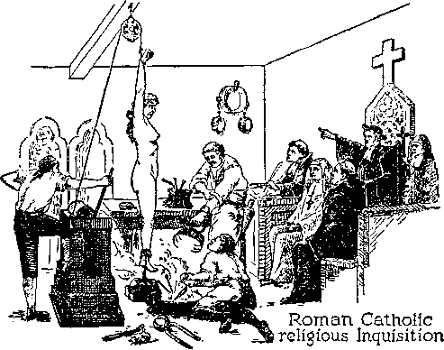The Lord, the great Judge at the temple, takes note of this and divides the nations by placing the “goats” on his left hand, which means the place where they will receive a just punishment. And what will be the punishment of such wicked goats? Jesus announces his decree, to wit: “Depart from me, ye cursed, into everlasting fire, prepared for the devil and his angels. And these shall go away into everlasting [destruction].” (Matthew 25:41,46) In the judgment which the Lord is now conducting at the temple he is 'finding out his enemies’ and making them identify themselves and duly marking them for destruction.—Psalm 21:8, 9.
SHEEP
The faithful members of the body of Christ he designates as his “sheep”, who are made members of his royal house. Then says Jesus: “And other sheep I have, which are not of this fold; them also I must bring, and they shall hear my voice; and there shall be one fold, and one shepherd.” (John 10:16) Those who compose this company designated as “other sheep” are also designated in the Scriptures as those persons' of good will toward God, and as Jona-dabs (2 Kings 10:15-23), and who, continuing faithful, shall form the “great multitude” and receive life everlasting on the earth. In the judgment now in progress at the temple those “other sheep” identify themselves by the course they take, and these are the ones of whom the Lord says that he puts them on his right hand, that they may receive his favor.
When Jehovah’s witnesses go about the country carrying the message of the kingdom and come in contact with the people of good will, they are gladly received by such persons. When these “other sheep” find some of Jehovah’s witnesses sick, suffering and in prison, they do what they can to relieve them of such suffering, and they do so because they love righteousness and hate iniquity and desire to be pleasing to God and to Christ Jesus; and thus they identify themselves. Therefore it is written concerning them: “Then shall the King say unto them on his right hand, Come, ye blessed of my Father, inherit the kingdom prepared for you from the foundation of the world: for I was an hungred, and ye gave me meat: I was thirsty, and ye gave me drink: I was a stranger, and ye took me in: naked, and ye clothed me: I was sick, and ye visited me: I was in prison, and ye came unto me. Then shall the righteous answer him, saying, Lord, when saw we thee an hungred, and fed thee? or thirsty, and gave thee drink? When saw we thee a stranger, and took thee in? or naked, and clothed thee? or when saw we thee sick, or in prison, and came unto thee? And the King shall answer and say unto them, Verily I say unto you, Inasmuch as ye have done it unto one of the least of these my brethren, ye have done it unto me.” (Matthew 25:34-40) Those faithful “other sheep” receive the blessings of everlasting life.
PREPARING FOR ARMAGEDDON
While the Lord Jesus Christ at the temple is conducting judgment, and while his faithful followers and witnesses are carrying the message of the kingdom to the people, Satan is moving with all his power to assemble all the enemies of God preparatory for the final battle at Armageddon. The word “Armageddon” means the place of assembly of troops, that is, where God’s people are, and Satan gathers his forces together to destroy them. Knowing his time is short, Satan is hurrying his forces on for the conflict; and concerning this it is written: “And I saw three unclean spirits like frogs come out of the mouth of the dragon, and out of the mouth of the beast, and out of the mouth of the false prophet. For they are the spirits of devils, working miracles, which go forth unto the kings of the earth and of the whole world, to gather them to the battle of that great day of God Almighty. And he gathered them together into a place called in the Hebrew tongue Armageddon.”— Revelation 16:13,14,16.
The term “beast” here used symbolically stands for the governments of the nations of the earth, particularly of “Christendom”, which are beastly and cruel. The “false prophet” is composed of those of the ruling element of the nations of “Christendom” which falsely prognosticate that the remedy for the present ills is found in the League of Nations or other like combinations of men and nations. They ignore and oppose God’s kingdom and look to man for support and protection and blessings. The word “dragon” is one of the Devil’s names, and he it is who is directing the enemy’s forces. All are marching forward and taking their position ready for the great conflict.
THE EXECUTION
The climax comes at the battle of Armageddon. It is “the battle of that great day of God Almighty”, and at that battle the disputed question of supremacy will be settled for ever. The Devil boastfully and egotistically expects to win. He is certain to lose. Jehovah has been waiting for this time, and he has let the Devil go on, and for that reason he addressed the Devil in these words: “But for this cause have I allowed thee to remain, in order to show thee my power.” (Exodus 9:16, Leeser) The power of Jehovah God is unlimited. He is the Almighty God, his purpose shall be accomplished, and none can prevent it. The enemies of God having been identified, and the wickedness thereof disclosed, and the warning given, the time for execution is at hand. Those who believe that God’s Word is true may expect to find in the Scriptures the correct and true statement as to the execution of God’s enemies. It is even so.
The chief visible enemy of God, and therefore the greatest and worst public enemy, is the Roman Catholic religious organization. For centuries that organization scornfully and arrogantly has ridden upon the backs of the peoples and nations and robbed the people of their just earnings. The day of that wicked institution must come to an end. That organization, that is to say, the Roman Catholic “Hierarchy of Jurisdiction”, for years has boastfully said and still says: “The gates of hell shall not prevail against [us].” These words of Jesus Christ concerning his own organization, which is the habitation of Almighty God, are misapplied by the Roman Catholic Hierarchy; and this is further evidence of the presumptuous sin of that religious organization.
Jehovah foretold that the Hierarchy would make such boastful claims, and long ago he caused his prophet to record a prophecy concerning the Roman Catholic religious organization, in which that devilish organization is represented as saying: 'Yes, Armageddon is coming, but the overflowing scourge shall not come unto us, for we have made lies our refuge, and under falsehoods have we hid ourselves. We have made a covenant with death, and with hell we are at agreement. We are safe and secure.’
Jehovah God replies to that declaration of the boastful and scornful men who for long have ruled the “Catholic population” and other people, and his answer is in these words: “Your covenant with death shall be disannulled, and your agreement with hell shall not stand; when the overflowing scourge shall pass through, then ye shall be trodden down by it.” (Isaiah 28:14-18) Do you care to believe God or to believe those scornful and arrogant men? You must make your choice.
Have in mind also that the Roman Catholic Hierarchy, the religious system, is designated by the Lord God in these words: “The harlot,” and old “whore”, and “Babylon”, “Babylon the great, the mother of harlots and abominations of the earth.” For centuries that wicked organization has ridden upon the back of the beastly governments or ruling political and military powers, and now the time approaches when God will put it into the hearts of those who rule to fulfill his will, and they “shall make her [the old harlot] desolate and naked, and ... burn her with fire”. (Revelation 17:15-17) That will mark the beginning of Armageddon. It is that religious crowd, together with their chief allies, that have for centuries oppressed the people; and therefore says the Lord Jehovah concerning them: “The Lord of hosts hath purposed it, to stain the pride of all glory, and to bring into contempt all the honourable of the earth.” —Isaiah 23: 9.
It is the Roman Catholic “Hierarchy of Jurisdiction” that has falsely and fraudulently assumed to shepherd the “Catholic population” and rob them and fleece them. Claiming to be shepherds, they have really been wolves; and to that wicked crowd Jehovah says: “Howl, ye shepherds, and cry; and wallow yourselves in the ashes, ye principal of the flock; for the days of your slaughter and of your dispersions are accomplished; and ye shall fall like a pleasant vessel.”—Jeremiah 25:34.
The Roman Catholic “Hierarchy of Jurisdiction”, the religious system, is hypocritical in the extreme; and God hates a hypocrite, a racketeer and a liar, all of which that gang is. ‘The hope of hypocrites shall perish.’ (Job 8:13) That hypocritical crowd of religionists carry on their racket concerning “purgatory” by which they rob many widows and orphans; and by means of false pretenses and the making of long prayers they are enabled to deceive and practice their racket; and to such Jesus Christ says: “But woe unto you, scribes and Pharisees, hypocrites! for ye shut up the kingdom of heaven against men; for ye neither go in yourselves, neither suffer ye them that are entering to go in.”—Matthew 23:13.
They viciously assault and persecute those men and women who faithfully serve God by carrying to the people his message of the kingdom; and like vipers which hide in the grass they hide behind the police and other officers to sting and otherwise injure the Lord’s little ones, and to them the Lord Jesus says: “Ye serpents, ye generation of vipers! how can ye escape the damnation of hell? Wherefore, behold, I send unto you prophets, and wise men, and scribes: and some of them ye shall kill and crucify; and some of them shall ye scourge in your synagogues, and persecute them from city to city.”—Matthew 23: 33, 34.
That proud, scornful, arrogant and presumptuous crowd of religionists think they are fooling the Lord; but even their sacrifices are an abomination unto him. ( Proverbs 16:5; 21: 27) Even their prayers are an’abomination in the sight of God.—Proverbs 28: 9.
And when will the end of that hypocritical, religious organization come? At the beginning of Armageddon. ‘Roman Catholic Action,’ as the selfish, political movement of the Hierarchy is now called, will soon convince themselves and others that they have put to silence all who tell the truth and who thereby expose the wickedness of the Hierarchy. Having spread their influence politically and otherwise throughout the earth and destroyed the freedom of speech and the freedom of worship, and regarding themselves as secure from all opposition, that wicked crowd is represented as saying: We are now at peace and safety; we can go on without interruption and carry forward our racket to suit ourselves.’ Concerning this matter the Lord’s Word says: “For when they shall say, Peace and safety; then sudden destruction cometh upon them, as travail upon a woman with child; and they shall not escape.” (1 Thessalonians 5:3) The religious systems that have for long defamed God’s name shall be the first to fall at the battle of the great day of God Almighty.
“EVIL SERVANT”
The Scriptures and the facts show that there are those who covenant to serve God, and who break their covenant, deny the Lord’s coming, and begin to smite their brethren, and these the Lord designates the “evil servant”. (Matthew 24:48,49) One of the disciples of Jesus foreshadowed that “evil servant”, and his name was Judas Iscariot. He was an enemy of God and of Christ. While Judas was professing to be the servant of Christ, he was conspiring with the enemy to have Jesus put to death and to have Jesus and his brethren betrayed into the hands of the enemy. For this reason Jesus called Judas “the son of perdition”. (John 17:12) Some men of modern times have been greatly favored by a knowledge of the truth, and by having a part in God’s organization, and have then broken their covenant and become wicked, denied the presence of the Lord, and have gone about smiting those who do serve God and Christ Jesus. That wicked class, called the “evil servant”, is the most reprehensible part of “the man of sin” and is described in the Scriptures as “the man of sin”, “the son of perdition,” of which Judas was a type.
Those composing the “evil servant” are the enemies of God and of Christ and his kingdom, and the fate of such is announced by the Lord in these words: “And shall cut him asunder, and appoint him his portion with the hypocrites; there shall be weeping and gnashing of teeth.” (Matthew 24:51) And again concerning that same crowd it is written: “Whom the Lord shall consume with the spirit of his mouth, and shall destroy with the brightness of his coming.” (2 Thessalonians 2:8) Concerning such “evil servant” class, “the man of sin,” “the son of perdition,” it is written: “But these, as natural brute beasts, made to be taken and destroyed, speak evil of the things that they understand not; and shall utterly perish in their own corruption.”—2 Peter 2:12.
OTHER ENEMIES
Jehu was a type of the Lord Jesus Christ and pictured him as the great Executioner of Jehovah. Jehu slew all the practitioners of the Devil religion who practiced in the land of Israel. Those people professed to serve God but had turned to Devil worship. Those religionists were typical of “Christendom”, professing to serve God but serving the Devil. At the commandment of the Almighty God Jehu annihilated those Devil worshipers; and that foreshadowed and foretold that Christ Jesus will completely wipe out all religion and religious practices, because such defame the name of Almighty God. (2 Kings 10:1-28) Religion has always been the chief means of deceiving men and reproaching God, because the Devil found it the best means by which he could deceive. Religion and religious practitioners will be the first to be destroyed at Armageddon. Christ Jesus, the great Executioner, will execute them and then proceed with the other elements of Satan’s organization.-See Vindication, Book Three.
Symbolically the religious systems are likened unto a great city. That organization or “great city” is certain to fall in the near future, and the political, military and judicial and other supporters of the religious system, which have profited by that system, will see that they are next in order for punishment at the hand of the Lord, and then they will weep and wail: “The merchants of these things, which were made rich by her, shall stand afar off for the fear of her torment, weeping and wailing, and saying, Alas, alas, that great city, that was clothed in fine linen, and purple, and scarlet, and decked with gold, and precious stones, and pearls! for in one hour so great riches is come to nought.” (Revelation 18:15-17) Then they will attempt to hurl their armies and navies and all other forces into battle, but they will perish at the hand of the Lord.
“BEAST” AND “FALSE PROPHET”
The governing elements that rule the world, because of harshness and cruelty, are designated under the symbol of a “beast”. Those elements of the visible organization of Satan which prophesy that the world can be recovered and the people blessed by the puny efforts of man are designated “the false prophet”. Now behold Jesus Christ pictured as riding upon a war mount and going forth to war with all the enemy forces, and being followed by his armies in heaven, before whose onward march the “beast” and “false prophet” will be utterly unable to stand: Armageddon will proceed. “And he was clothed with a vesture dipped in blood; and his name is called The Word of God. And the armies which were in heaven followed him upon white horses, clothed in fine linen, white and clean. And out of his mouth goeth a sharp sword, that with it he should smite the nations; and he shall rule them with a rod of iron; and he treadeth the winepress of the fierceness and wrath of Almighty God. . . . And I saw the beast, and the kings of the earth, and their armies, gathered together to make war against him that sat on the horse, and against his army. And the beast was taken, and with him the false prophet that wrought miracles before him, with which he deceived them that had received the mark of the beast, and them that worshipped his image. These both were cast alive into a lake of fire burning with brimstone.” (Revelation 19:13-21) Thus is described the execution of the rulers of the nations of the earth.
Every part of Satan’s wicked organization shall be destroyed, including all who work any kind of iniquity, such as frauds, cheats, thieves, robbers, kidnapers, rapists, murderers, religious racketeers and other racketeers, and all suchlike. Says the Lord God concerning all those wicked ones of the world: “Therefore wait ye upon me, saith the Lord, until the day that I rise up to the prey; for my determination is to gather the nations, that I may assemble the kingdoms, to pour upon them mine indignation, even all my fierce anger; for all the earth shall be devoured with the fire of my jealousy.”—Zephaniah 3: 8.
The execution of all of those will be done by the Lord Jesus Christ, to whom Jehovah says: “Ask of me, and I will give thee the nations for thine inheritance, and the uttermost parts of the earth for thy possession. Thou shalt break them with a rod of iron; thou shalt dash them in pieces like a potter’s vessel.” (Psalm 2:8,9, B.V.) Armageddon will not be a fight between the members of Satan’s organization, but, as is plainly stated in the Scriptures, it is the battle of God Almighty in which he, through Christ Jesus and his army, will wreck Satan’s entire wicked organization, that the earth may be cleansed from all iniquity. “The nations are sunk down in the pit that they made; in the net which they hid is their own foot taken. The Lord hath made himself known, he hath executed judgment; the wicked is snared in the work of his own hands. The wicked shall return to Sheol, even all the nations that forget God. For the needy shall not always be forgotten, nor the expectation of the poor perish for ever. Arise, O Lord ; let not man prevail; let the nations be judged in thy sight.”—Psalm 9:15-19, E.R.V.
“Upon the wicked he shall rain snares; fire and brimstone and burning wind shall be the portion of their cup.” (Psalm 11:6, E.R.V.) “But the wicked shall perish, and the enemies of the Lord shall be as the excellency of the pastures; they shall consume; in smoke shall they consume away.” (Psalm 37: 20, E.R.V.~) “Morning by morning will I destroy all the wicked of the land; to cut off all the workers of iniquity from the city of the Lord.” (Psalm 101: 8, E.R.V.) “The Lord preserveth all them that love him; but all the wicked will he destroy.”—Psalm 145:20.
The earth is full of wickedness and wicked creatures; and when Armageddon is done, all the wicked on the earth will be dead, for God has declared they shall be slain by the hand of Christ Jesus. “And the slain of the Lord shall be at that day from one end of the earth even unto the other end of the earth; they shall not be lamented, neither gathered, nor buried; they shall be dung upon the ground.” (Jeremiah 25:33) “The land shall be utterly emptied, and utterly spoiled; for the Lord hath spoken this word.” (Isaiah 24:3-6) Such will be the fate of all who remain on the Devil’s side. This information the Lord now brings to the attention of the people, that they may, before his wrath strikes, choose which side they desire to be on. What is your choice?
INVISIBLE ENEMIES
The Scriptural evidence cited in a preceding chapter shows that there is a host of wicked spirit creatures who joined the Devil in his rebellion and who have since practiced fraud and deception on the human race and continue to reproach God’s holy name. What is to be the fate of such? The chief one among that wicked angelic crowd next in order to the Devil himself is designated as Gog, who, together with other wicked angels, has his habitation in what is called “the land [place] of Magog”. “Thus saith the Lord God [Jehovah], Behold, I am against thee, 0 Gog, the chief prince of Meshech and Tubal.” (Ezekiel 39:1) A more detailed consideration of the Scriptures relating to Gog and the other wicked angels will be found in Vindication, Book Two, page 311 et seq.
Gog and the other wicked angels with him have for centuries exercised a ruling power over the nations of the earth. Having destroyed the wicked ones in the earth, Christ Jesus leads his forces against those wicked spirit creatures and destroys them; and concerning which it is written: “Thou shalt fall upon the open field; for I have spoken it, saith the Lord God. And I will send a fire on Magog, and among them that dwell carelessly in the isles; and they shall know that I am the Lord.” (Ezekiel 39:5,6) It is further written concerning the same wicked crowd: “The Lord knoweth how to deliver the godly out of temptations, and to reserve the unjust unto the day of judgment to be punished.” (2 Peter 2:9) “And the angels which kept not their first estate, but left their own habitation, he hath reserved in everlasting chains, under darkness, unto the judgment of the great day.” (Jude 6) Their end is destruction; as it is written that God has prepared a place for the complete destruction of all the wicked ones. —Matthew 25:41.
DEVIL LAST
It was the Devil who challenged Jehovah and who for centuries has defied and reproached him. Jehovah gave his word that the Devil shall feel His power; and that word will be kept, and the Lord Jesus Christ will execute Jehovah’s purposes. The Devil is compelled to stand by and see all of his organization first destroyed. This will be humiliating to him when he knows that he is next. The Lord Jesus then binds him and casts him into “the bottomless pit”, where he is completely silent for a thousand years. (Revelation 20:1-3) At the end of the thousand years Satan shall be released for a little season and then utterly destroyed.—Revelation 20:7-10.
The complete destruction of the Devil and his organization is the decree entered by Jehovah long ago, and which will be executed in his due time: “By the multitude of thy merchandise they have filled the midst of thee with violence, and thou hast sinned; therefore I will cast thee as profane out of the mountain of God: and I will destroy thee, 0 covering cherub, from the midst of the stones of fire. Thine heart was lifted up because of thy beauty; thou hast corrupted thy wisdom by reason of thy brightness; I will cast thee to the ground, I will lay thee before kings, that they may behold thee. Thou hast defiled thy sanctuaries by the multitude of thine iniquities, by the iniquity of thy traffic; therefore will I bring forth a fire from the midst of thee, it shall devour thee; and I will bring thee to ashes upon the earth, in the sight of all them that oehold thee. All they that know thee among the people shall be astonished at thee: thou shalt be a terror, and never shalt thou be any more.”—Ezekiel 28:16-19.
Destruction is the everlasting fate of all the enemies of God. “His enemies shall lick the dust.” (Psalm 72:9) “For, lo, thine enemies, 0 Lord, for, lo, thine enemies shall perish.” (Psalm 92:9) “Thine hand shall be lifted up upon thine adversaries, and all thine enemies shall be cut off.”—Micah 5: 9.
The Word of God is true; and from the indisputable testimony all doubt is removed as to who are God’s enemies and what shall be their fate. In view of the frightful suffering the Devil and his allies have brought upon the human race, in view of the fact that a host of enemies are now operating in an attempt to destroy all mankind, and in view of the terrible things that shall shortly come to pass on the earth, as shown by the Scriptures, would you now care to be introduced to a real friend, in whom you can put complete confidence and absolute trust and who will guide you into the way of everlasting life and happiness? If so, that privilege is now before you.
CHAPTER VIII
FRIENDS
“A man that hath friends must shew himself friendly: and there is a friend that sticketh closer than a brother.” — Proverbs 18: 24.
JEHOVAH GOD is the Friend of all who love and obey him and who faithfully do that which is right. He called Abraham his friend because Abraham was faithful and obeyed him: “And the scripture was fulfilled which saith, Abraham believed God, and it was imputed unto him for righteousness; and he was called the Friend of God.” (James 2:23) This makes known God’s unchangeable rule, that those who are faithful to God under the test are the friends of God. Who, then, is a friend? The Scriptures answer: “A friend loveth at all times.” (Proverbs 17:17) Love is a complete expression of unselfishness; therefore it is written: “God is love.” (1 John 4:16) Jehovah God is unselfish and can do nothing that is selfish. Everything he does is prompted by unselfishness. Even the destruction of his enemies is not for his pleasure, because he declares that he takes no pleasure in the death of his enemies. (Ezekiel 18:23, 32) He destroys them for the good of those who do right and for the honor of his name, which is righteous and holy.
The Lord Jesus Christ is a Friend of all who love and obey God. He is the anointed King of 342
Jehovah, who shall rule the world in righteousness, and all his acts are prompted by love. How may a man have the Lord for his Friend? “He that loveth pureness of heart, and hath grace in his lips, the king shall be his friend.” (Proverbs 22:11, margin) That means that if a man has a pure or unselfish motive in what he does, and his words toward God and Christ are gracious, that person is one of good will toward God, and the King, Christ Jesus, shall be his Friend. A knowledge of what God and Christ have done for man produces in the man of pure heart a great desire to have God and Christ for friends. Briefly, then, consider some of the scriptures showing the loving-kindness of Jehovah and of the Lord Jesus Christ.
By reason of the fact that Adam chose to disobey God and follow the Devil Adam was justly sentenced to death, and the result to his children was that they were born imperfect. All men, therefore, are conceived in sin and born in iniquity. (Psalm 51:5) “Wherefore, as by one man sin entered into the world, and death by sin; and so death passed upon all men, for that all have sinned.” (Romans 5:12) If a man then chooses to support the Devil, he could never have God for his Friend. God was under no obligation to do anything for imperfect man, the sinner. Because God is love, he unselfishly provided the way for imperfect men to be reconciled to him and given an opportunity to obtain life everlasting as a gracious gift; and this provision he made by and through Jesus Christ, thus proving that God and Christ are the great and everlasting Friends of all who want to do right. Therefore it is written: “For God so loved the world, that he gave his only begotten Son, that whosoever believeth in him should not perish, but have everlasting life.” (John 3:1G) “For the wages of sin is death; but the gift of God is eternal life, through Jesus Christ our Lord.”—Romans 6: 23.

Christianity
What, then, is required of a man that he may put himself in line to receive the blessings that God has in reservation for the obedient ones ? The man must first believe that God exists and that he is the rewarder of them that seek him and serve him unselfishly (Hebrews 11: 6), and he must believe that Jesus Christ is his Redeemer and Savior. If the man chooses to believe God and Christ, and to put himself on the side of
God and Christ, instead of remaining on the side of the Devil, that shows his heart is right toward God. That is not requiring very much of any honest man. All such should want to be on the side of God and Christ. If God would compel men to believe on him and Christ Jesus, that would not leave the matter to the choice of man. But God does not compel man to believe. He brings man face to face with Uis truth and shows man what provision God has made for him, and thus he affords man the opportunity to exercise freely his choice. If the man chooses to turn aside from God and serve the Devil and the Devil’s religious agents, he thereby deprives himself of God’s favor. His first step is to seek the Lord and serve him; and if he does not do this he abides under the Devil’s rule and the wrath of God. For this reason it is written: "He that believeth on the Son hath everlasting life; and he that believeth not the Son shall not see life; but the wrath of God abideth on him.”—John 3:36.
How differently religious organizations operate toward man! The Roman Catholic religious system has a long and wicked record of torture inflicted upon men to compel them to believe what that religious system teaches. Falsely that religious system claims to represent God, when in fact it is God’s enemy and the representative of the Devil. The man seeking consolation enters the building called the Catholic church "cathedral”, and as he enters he is required to go through certain forms and ceremonies and to put his money in the box, and then he listens to some harangue and is told, if he fails to do what the clergy tell him God will punish him; and for fear he obeys what the Catholic system teaches. Therefore God says of such: “Wherefore the Lord said, Forasmuch as this people draw near me with their mouth, and with their lips do honour me, but have removed their heart far from me, and their fear toward me is taught by the precept of men.”—Isaiah 29:13.
Are those clergymen who teach the precepts of men your friends, and the friend of God? No, they are not; but, on the contrary, they are enemies of God, as it is written: “Whosoever therefore will be a friend of the world is the enemy of God.” (James 4: 4) The evidence heretofore examined shows that the Catholic system is a part of the wicked world and therefore the enemy of God. If you support an organization or crowd that are enemies of God, then you cannot have the Lord God and Christ Jesus for your friends. What, then, must a man do who is in a religious organization? The Scriptures answer: ‘Come out of her and be separate from her, lest ye partake of her sins and receive of her plagues,’ which shall befall her at Armageddon.—2 Corinthians 6:16-18; Revelation 18: 4.
Christ Jesus is the Friend of everyone who tries to do right. lie permitted himself to be put to an ignominious death that he might redeem man from the results of sin and death. Prompted by love Jesus gave his life a ransom price for as many as believe on him and serve him. (Matthew 20:28; John 10:10) A sheep is an obedient animal and is used as a symbol of those who hear the Lord and obey his voice. Therefore said Jesus: “I am the good shepherd, and know my sheep, and am known of mine. As the Father knoweth me, even so know I the Father; and I lay down my life for the sheep. And other sheep I have, which are not of this fold: them also I must bring, and they shall hear my voice; and there shall be one fold, and one shepherd.”—John 10:14-16.
Thus for love and in loving obedience to Jehovah Christ Jesus brings those who obey him into God’s fold, the place of safety. Those who thus believe on the Lord Jesus Christ he considers friends, and it was for these that he gave his life. “Greater love hath no man than this, that a man lay down his life for his friends.” (John 15:13) A man may have Jesus for his friend on condition of his obedience: “Ye are my friends, if ye do whatsoever I command you.”—John 15:14.
A time of great crisis has come, because these are the “last days” and hence the time of God’s reckoning with his enemies. God is therefore bringing to the attention of the people the truth as expressly set forth in his Word, the Bible, to the end that all men that are of good will toward God who desire to do right, and who hate wickedness, may have the opportunity of breaking away from Satan’s organization and taking their stand on the side of God and Christ. All the Scriptural evidence and the indisputable facts show that the time of the execution of God's vengeance against all wickedness is at hand. Satan the enemy is against all persons who desire to serve God, and hence all who take their stand on the side of the Lord are “not desired” by the Devil and his religious practitioners on earth. It is against those wicked ones that God is going to express his wrath. Therefore Jehovah says to the people of good will: “Gather yourselves together, yea, gather together, O nation not desired: before the decree bring forth, before the day pass as the chaff, before the fierce anger of the Lord come upon you, before the day of the Lord’s anger come upon you.”—Zephaniah 2:1, 2.
Why gather yourselves together? That you may thus identify yourselves as being on the side of God. Then what must you do ? The Lord answers: “Seek ye the Lord, all ye meek of the earth, which have wrought his judgment [as commanded]; seek righteousness, seek meekness; it may be ye shall be hid in the day of the Lord’s anger.”—Zephaniah 2: 3.
How may one “seek righteousness”? By diligently ascertaining what is right; and this one does by searching God’s Word and that which the Lord has provided for the understanding of his Word: “The law of the Lord is perfect, converting the soul: the testimony of the Lord is sure, making wise the simple: the statutes of the Lord are right, rejoicing the heart; the commandment of the Lord is pure, enlightening the eyes: the fear of the Lord is clean, enduring for ever: the judgments of the Lord are true and righteous altogether. More to be desired are they than gold, yea, than much fine gold; sweeter also than honey and the honeycomb. Moreover, by them is thy servant warned: and in keeping of them there is great reward.” (Psalm 19:7-11) Man must be guided in the right way, and the only right guide is God's Word; as it is written: “Thy word is a lamp unto my feet, and a light unto my path.”— Psalm 119:105.
How may a man “seek meekness”? “Meekness” means being teachable and having a desire and willingness to learn. One must diligently seek to learn what is contained in the Word of God. Shall the man thus seeking meekness be guided by what other men say? No; because all men are imperfect and no man’s opinion or teaching nor that taught by organizations is right. Only the Word of God is the true and correct guide. We are not to put our trust in men, but to trust in the Lord; as it is written: “Put not your trust in princes, nor in the son of man, in whom there is no help.” —Psalm 146: 3.
If a man is the friend of God and obeys God, will God guide him in the right way? Yes; and the answer of the Lord makes this sure: “The meek will he guide in judgment, and the meek will he teach his way.” (Psalm 25: 9) If a man desires to bo taught and led in the right way and he trusts in the Lord and follows the Lord’s instructions, he is certain to receive the blessing of the Lord. If he follows the teachings of some religious organization, all of which teachings are based upon tradition, that man is certain to fall into the ditch. It is a case of the blind leading the blind, and the Devil gets the whole crowd.—Matthew 15:14.
The reason now clearly appears as to why religionists try to keep the people in ignorance
of the Bible and books that explain the Bible, and that reason is, because the Bible condemns all religion and all traditions of men, and the Bible alone makes clear the pathway of righteousness. The Devil and his agents attempt to withhold the Bible from the people, lest the people should learn the truth and then flee from the Devil religious organizations and find refuge in the Lord. Those who love the Lord, and who are now obedient to God and Christ Jesus, are going from place to place carrying to the people books and other publications to aid the people of good will to learn what is God’s purpose as expressed in his Word. The Devil and his agents persecute all who thus serve Jehovah as his witnesses, because the Devil is God’s enemy, and the Devil and religious systems are enemies of those who love and desire righteousness. Jehovah’s witnesses do not carry the truth to the people for their own selfish aggrandizement, but they do so in obedience to God’s commandment ; and God commands that work to be done because of his unselfishness, to give the people the opportunity to learn the truth and get in line for the blessings he has provided. Thus God is showing that he and Christ Jesus are the everlasting Friends of all who diligently try to do right. Your opportunity is now afforded to choose whom you will serve.
BLESSINGS
The battle of the great day of God Almighty will be so terrible that no human words can adequately describe it. With all the nations fighting amongst themselves it would be bad enough; but when the Lord takes part in this conflict and the forces of heaven fight against all unrighteousness, all the nations are certain to fall. By his prophet the Lord says of that time: “Come near, ye nations, to hear; and hearken, ye people; let the earth hear, and all that is therein; the world, and all things that come forth of it. For the indignation of the Lord is upon all nations, and his fury upon all their armies; he hath utterly destroyed them, he hath delivered them to the slaughter. Their slain also shall be cast out, and their stink shall come up out of their carcases, and the mountains shall be melted with their blood. And all the host of heaven shall be dissolved, and the heavens shall be rolled together as a scroll: and all their host shall fall down, as the leaf fall-eth off from the vine, and as a falling fig from the fig tree. For my sword shall be bathed in heaven.”—Isaiah 34:1-5.
All the wars combined that have ever afflicted mankind cannot be compared to what Armageddon will bring upon the world in the way of trouble. Concerning that time Jesus says that the tribulation will be such as never before was known. (Matthew 24:21) No human power can provide any place of safety for man during that time, but God can provide a place of complete security. “Thou, Lord, only makest me dwell in safety.” (Psalm 4:8) It will be a real blessing to have such safety in that terrible ordeal. And who can have the assurance of such security? Jehovah answers that question in these words: “Seek righteousness, seek meekness; it may be ye shall be hid in the day of the Lord’s anger.” (Zephaniah 2:3) That is a great blessing for which one should gladly look forward: “The name of the Lord is a strong tower; the righteous runneth into it, and is safe.” (Proverbs 18:10) “Whoso putteth his trust in the Lord shall be safe.”—Proverbs 29:25.
When God took the Israelites into Palestine he caused certain cities to be set aside and provided as a place of safety for those who were in danger of death by reason of having unwittingly committed a great wrong, and those cities were designated “cities of refuge”. When a man fled to one of those cities for safety, as long as he remained within the bounds of the city of refuge no one could harm him. (Numbers 35:6-33) The cities of refuge were typical of God’s great organization, of which Christ Jesus is made the Head. (1 Corinthians 10:11; Hebrews 10:1) At the present time, when one flees from the Devil’s organization, where he has unwittingly committed wrong against God and against man, he thus flees by taking his stand firmly on the side of God and Christ Jesus, believing on and trusting in the Lord and serving him; and if he remains true and faithful to God and Christ, he has the promise of the protection which Jehovah God has provided, and there he may be secure from all harm during the battle of the great day of God Almighty, and thus be carried through that great trouble and be in line for the blessings that shall be ministered unto the people by the Lord when that great and terrible storm is overpast. lie must remain faithfully in the Lord’s organization, and not depart therefrom; and that means, he must stand firmly and faithfully on the side of God and Christ Jesus, and love, serve and obey God.
Peace is another immediate blessing to those who take their stand wholly on the side of God and Christ and who continue to trust wholly in the Lord and to serve him. Among the precious promises written to those who serve God is this one: “Thou wilt keep him in perfect peace, whose mind is stayed on thee; because he trusteth in thee. Trust ye in the Lord for ever: for in the Lord JEHOVAH is everlasting strength.”—Isaiah 26: 3,4.
When the battle of Armageddon is done and all the wicked are destroyed, peace will then abide for ever, because the great “Prince of Peace” will rule and “of his government and peace there shall be no end”. (Isaiah 9: 7) Those who are then with God’s organization and under his righteous government will continue in peace.
Regeneration is one of the great works that will be performed by the Lord Jesus Christ during his thousand-year reign. (Revelation 20:4,6) That means the uplifting of obedient ones of mankind and the bringing of such up to a state of perfection of body and mind. God created the earth for man, and he created man for the earth. (Isaiah 45:12,18) In order for man to enjoy the blessings of the earth forever he must live forever in health and happiness. Sickness and death are enemies of man. Armageddon will destroy all the visible enemies, and in the reign of Christ sickness and death will be destroyed; as it is written: “For he must reign, till he hath put all enemies under his feet. The last enemy that shall be destroyed is death.” (1 Corinthians 15:25,26) With all enemies out of the way, including death, all fear will be gone and no one will be in dread of any enemy.
Many are the marvelous blessings to flow to those of humankind who love and obey God and his kingdom, and amongst those great blessings, and that which is the chief one to man, is life in happiness. ‘Life is the gift of God through Jesus Christ our Lord.’ (Romans 6: 23) No one can receive the benefit of a gift, however, unless he accepts the gift on the terms given; and that means that those of mankind who receive the blessings of everlasting life from God through Christ Jesus must be fully obedient to God and Christ. To have life everlasting in health, strength, peace and happiness, and to know God and Christ Jesus and serve them, is the greatest blessing any creature could enjoy. All of those blessings will result to those who know, love and obey God and his King; as Jesus stated: “This is life eternal that they might know thee the only true God, and Jesus Christ whom thou hast sent.” (John 17:3) God and Christ Jesus will be the everlasting Friends of obedient men and will minister blessings to such obedient ones without end.
All these blessings come as a gracious gift and are therefore prompted entirely by love. Only the Devil, the great enemy, and his agents, the religious organizations, could attempt to deprive men of such marvelous blessings or to keep them in ignorance of what God has provided for those who know and serve him. Therefore when all of these enemies are for ever removed, the obedient ones will dwell with the Lord, their great Prince and Helper, and nothing will interfere with their boundless blessings and eternal happiness.
Jehovah God has given his sure and unfailing Word that he will make the earth a glorious place, in which perfect man may dwell for ever: “The glory of Lebanon shall come unto thee, the fir tree, the pine tree, and the box together, to beautify the place of my sanctuary; and I will make the place of my feet [the earth] glorious.”—Isaiah 60:13; 66:1.
That means that everything will be removed from the earth that mars its beauty, peace and happiness. It is the enemies of God and righteousness that make the earth now a place of great sorrow. Those who desire to stand by the enemies will go with Satan and all other enemies into everlasting destruction, and those who remain on the Lord’s side will be in a clean earth. All the unseen creatures will be clean and holy, and all visible ones will be clean and pure. Strife, hatred, ill will, malice and wrongdoing will be entirely unknown, and all the wicked will be for ever out of the memory of man. (Psalm 109:15) “The name of the wicked shall rot” (Proverbs 10:7); which means that the wicked will not be remembered at all. Concerning the wicked it is also written: “Therefore hast thou visited and destroyed them, and made all their memory to perish.” (Isaiah 26:14) The present-day fame of dictators, great religionists, bishops, cardinals, popes, and all like scornful, haughty and austere men who rule and oppress the people, will have gone from the earth for ever, and the people will never again even think of them. It is an indescribable relief to now know for a certainty that such wicked ones can never again afflict the earth, and to know that the people will then be for ever free. The Lord has given his Word that wickedness shall never arise again.—Nahum 1: 9.
Under the peaceful and blessed reign of Christ, the righteous Ruler, the peoples of earth will abide for ever and will be so joyful in the Lord that they will think always of the goodness and loving-kindness of their great Friends, Jehovah God and Christ Jesus: “They shall abundantly utter the memory of thy great goodness, and shall sing of thy righteousness. The Lord is gracious, and full of compassion; slow to anger, and of great mercy. The Lord is good to all; and his tender mercies are over all his works. All thy works shall praise thee, 0 Lord; and thy saints shall bless thee. They shall speak of the glory of thy kingdom, and talk of thy power; to make known to the sons of men his mighty acts, and the glorious majesty of his kingdom. Thy kingdom is an everlasting kingdom, and thy dominion endureth throughout all generations.”—Psalm 145:7-13.
Faithful Christians, truly and sincerely following in the footsteps of Christ Jesus, and who are obedient to the Lord’s commandments, and who are therefore showing forth the praises of Jehovah and his King, now enjoy the peace of God which passeth all human understanding. (Philippians 4: 7) Other persons look upon them and observe with astonishment the joy and contentment that shines in their countenance, and wonder why such is possible when there is so much sorrow in the earth. The reason is that Jehovah’s witnesses know that the day of deliverance is near at hand, because Christ Jesus, the great Deliverer, is here, he for whom true Christians have long looked, hoped and prayed. It is the time of rejoicing for all such. Therefore they lift up their voices with singing and praise to God and Christ, Those faithful ones will have their eternal abiding place with Christ Jesus in his kingdom. (Luke 22: 28-30; Revelation 3:21) Together with holy angels they will serve and praise the Most High for ever, giving honor to his holy name.
True to his promise, Jehovah God, through Christ Jesus, is now extending ‘peace on earth to men of good will’ (Luke 2:14); and such persons of good will toward God are fleeing from the enemy organization and hastening to find refuge in the organization of the Lord. Such are the “other sheep”, whom the Lord Jesus is now gathering into his fold. They are called “Jonadabs”, who have desired to serve God and have found the way. (2 Kings 10:15,16; Jeremiah 35: 6-10,18,19) Those persons of good will are now coming from every land, kindred, people and tongue, and are rapidly forming the "great multitude” that shall serve Jehovah and receive his blessings. They know who are their friends. For a long while they have cried because of the many abominable things done in the religious organizations in the name of the Lord (Ezekiel 9:4); they have hungered and thirsted for truth and righteousness, and, having come to their Friends, now they shall be fed. "They shall hunger no more, neither thirst any more; neither shall the sun light on them, nor any heat. For the Lamb, which is in the midst of the throne, shall feed them, and shall lead them unto living fountains of waters; and God shall wipe away all tears from their eyes.” —Revelation 7:16,17.
Seeing that religion is a fraud and a snare, and that their salvation proceeds from God through Christ Jesus, they take their stand and identify themselves as those who serve God and his kingdom. They are described in these words: "After this I beheld, and, lo, a great multitude, which no man could number, of all nations, and kindreds, and people, and tongues, stood before the throne, and before the Lamb, clothed with white robes, and palms in their hands: and cried with a loud voice, saying, Salvation to our God which sitteth upon the throne, and unto the Lamb.”-—Revelation 7:9,10.
The angels of heaven, and all the faithful who have been resurrected and are now with the Lord, rejoice with the great multitude; as it is written: "And all the angels stood round about the throne, and about the elders and the four beasts, and fell before the throne on their faces, and worshipped God, saying, Amen: Blessing, and glory, and wisdom, and thanksgiving, and honour, and power, and might, be unto our God for ever and ever.”—Revelation 7:11,12.
It is a time of joy because the Lord, Jesus Christ, is come and now it is clearly made to appear that soon he will for ever vindicate Jehovah’s holy name. The faithful witnesses of Jehovah on earth now with ever increasing joy continue to go about proclaiming “this gospel of the kingdom” as commanded. They love to do so, because the Lord has commanded that it shall be done, and they delight to do his will. The great multitude joyfully join in the service and sing the praises of the Most High and, as it is written, “therefore are they before the throne of God, and serve him day and night in his temple; and he that sitteth on the throne shall dwell among them.”—Revelation 7:15.
The people now on the earth that are of good will shall know the truth, and the truth shall make them free. (John 8:32) Standing firmly on the side of God and his King, they shall abide in the place of safety under the hand of the great King. Surely every honest person who now hears the truth of and concerning God and his kingdom will hasten to identify himself with those who put their trust wholly in God and in Christ. The remnant are now praising the Lord, and they, together with others of good will, arc joyfully saying with the psalmist:
“And the heavens shall praise thy wonders, O Lord; thy faithfulness also in the congregation of the saints. For who in the heaven can be compared unto the Lord? who among the sons of the mighty can be likened unto the Lord ? God is greatly to be feared in the assembly of the saints, and to be had in reverence of all them that are about him. 0 Lord God of hosts, who is a strong Lord like unto thee ? or to thy faithfulness round about thee? Thou rulest the raging of the sea: when the waves thereof arise, thou stillest them. Thou hast broken Rahab in pieces, as one that is slain: thou hast scattered thine enemies with thy strong arm. The heavens are thine, the earth also is thine: as for the world, and the fulness thereof, thou hast founded them. The north and the south thou hast created them: Tabor and Hermon shall rejoice in thy name. Thou hast a mighty arm: strong is thy hand, and high is thy right hand. Justice and judgment are the habitation of thy throne: mercy and truth shall go before thy face. Blessed is the people that know the joyful sound; they shall walk, 0 Lord, in the light of thy countenance. In thy name shall they rejoice all the day: and in thy righteousness shall they be exalted: for thou art the glory of their strength; and in thy favour our horn shall be exalted. For the Lord is our defence;
and the Holy One of Israel is our King.” —Psalm 89:5-18.